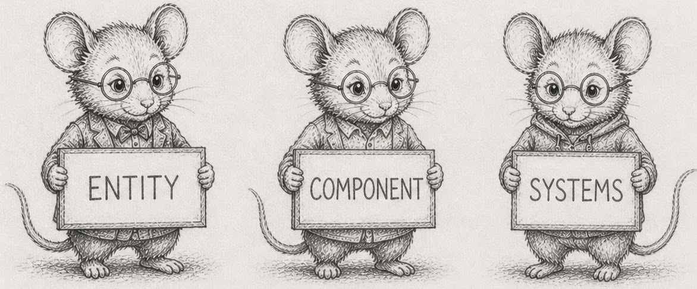

An Introduction to Programming using entity-component-systems & existence-based processing in python
written by Bjorn Madsen updated: 2026-05-09
Read online: Codeberg · GitHub Pages
Clone source:
git clone https://codeberg.org/root-11/intro-book-python.git·git clone https://github.com/root-11/intro-book-python.git

This book teaches programming from first principles of data-oriented design, entity-component-systems (ECS), and existence-based processing (EBP). It uses Python and numpy as the only languages.
The book is structured around forty-three concepts (the DAG) and their canonical wording (the glossary). Sections are short — two to three pages of prose followed by four to twelve compounding exercises. Concepts are named only after they are built: every section earns its vocabulary through working code, not the other way around.
The through-line is a small ecosystem simulator built in stages from one hundred wandering creatures to a hundred million streamed ones. The simulator’s specification is at code/sim/SPEC.
This is the Python edition — a sister volume to the Rust edition of the same book. Same forty-four sections, same DAG, same simulator. The variation is per-chapter commentary on what Python’s defaults push the reader into, and why ECS and EBP win even in a slow language. The thesis the edition carries: ECS and EBP beat OOP because they process more efficiently (operations grouped over arrays), they extend more cleanly (data-oriented composition over class graphs), and they have smaller memory footprint (typed columns over object graphs).
What carries this edition is the evidence. Every load-bearing claim is backed by a measurement the reader can reproduce on their own laptop in under a minute. The exhibits live in code/measurement/ and run via uv run code/measurement/<file>.py.
This is a work in progress. Section ordering is by the DAG; reading order can be linear (front to back) or by following the cross-links wherever they lead.
Who this book is for
You used Python last week. You wrote a class, put instances in a list, iterated over them. Your code worked, but it was slower than you expected, and you have started wondering whether the standard idioms are the bottleneck.
This book is for people who want to find out. The premise is that they are — and that the architecture this book teaches is what Python is fast in, when Python is fast at all.
Many online books include a playground that runs the code in your browser. This one does not, on purpose: the measurements only mean something when they come from your hardware.
Background
You should be comfortable with high-school algebra and a command line — running a command, changing directories, reading error messages without panic. A laptop with internet is enough; the book uses Python 3.11+, numpy, and uv for environment management. Everything else is standard library.
You do not need prior expertise in numerics, parallel computing, or game development. The book teaches numpy and the simulator together; the language is a vehicle, not the subject.
A first taste
Before any vocabulary is named, here is what an ECS world looks like in fifteen lines of Python. One hundred creatures, each with a position and a velocity, moving for thirty ticks of simulated time. No classes, no instances, no method calls — four numpy arrays indexed in lockstep, and a function (the per-tick update) that advances every creature in one stride.
import numpy as np
n = 100
x = np.arange(n, dtype=np.float32) * 0.1
y = np.sin(np.arange(n, dtype=np.float32))
vx = ((np.arange(n) * 7) % 11).astype(np.float32) * 0.01 - 0.05
vy = ((np.arange(n) * 13) % 7).astype(np.float32) * 0.01 - 0.03
for tick in range(30):
x += vx
y += vy
if tick % 10 == 0:
print(f"tick {tick}: creature 17 at ({x[17]:.2f}, {y[17]:.2f})")
Run it locally. Three lines print, the script stops. That is the entire shape of what the rest of the book grows: tables (the four arrays), a tick (the outer loop), a system (the per-tick update). Everything that follows is the discipline that lets this same shape carry a hundred million creatures without falling apart.
The familiar Python shape — a Creature class, a list of instances, a step() method — works at this size too. It stops working at a million, and the reason is in §2: an order of magnitude more memory per creature, an order of magnitude slower per tick. The book teaches the layout that survives the next zero.
Running the code
Python has no equivalent of the Rust Playground — there is no browser-hosted runner that reproduces the numbers a chapter quotes. Every measurement and exhibit in this book runs locally, using uv to manage the Python toolchain and environment. To run anything, you will want a clone of the book’s repo:
git clone https://codeberg.org/root-11/intro-book-python.git
cd intro-book-python
uv run code/measurement/cache_cliffs.py
Each code/measurement/<name>.py file is one exercise group, runnable in isolation. The numbers it prints are yours — they come from your hardware. The exercise asks “how fast does your machine run this?”, and that question only has a real answer locally.
From the simulator chapters onward (§11+), the exercises stop being self-contained scripts. They build the through-line: a Python program that grows from one hundred wandering creatures to a hundred million streamed ones. That program holds state between runs, which is what uv run and the project layout buy you.
The companion edition
If you already know Python well and want compile-time enforcement of the discipline this book teaches by convention, the Rust edition covers the same forty-four sections in Rust. The architecture is identical; the language differs. Many readers find that watching the borrow checker enforce in Rust what this edition asks for as discipline is a useful calibration in the other direction too.
Nomenclature
Quick reference for symbols, notation, and abbreviations the book uses. Concept definitions live in the glossary; this page covers the shorthand only.
Symbols
| Symbol | Meaning |
|---|---|
| §N | Section number — e.g., §5 refers to section 5. |
| → | Leads to / becomes / transitions to. Appears in section titles (e.g., §29 “10K → 1M”) and prose. |
[!NOTE] / [!TIP] / [!WARNING] | Callout box — content the reader should pay particular attention to. |
Text formatting
| Form | Meaning |
|---|---|
monospace | Code: types, variable names, function names, file paths. |
| italic | First definition of a term, or emphasis. |
| bold | A term being highlighted as load-bearing in the current paragraph. |
# anti-pattern: bad! | A code comment that flags the snippet as something the chapter is arguing against. The label travels with the code if a reader copy-pastes. |
Variables you will see across chapters
| Variable | Meaning |
|---|---|
i, j | Index into a column. i is the index of the row currently under discussion. |
t or tick | Tick number — the simulator’s step counter. |
id | Stable entity identifier (a small unsigned integer; usually np.uint32). |
gen | Generation counter, paired with a slot index to detect stale references (§10). |
pos_x, pos_y | Position columns of a creature (np.float32). |
vel_x, vel_y | Velocity columns of a creature (np.float32). |
to_remove, to_insert | Buffers of pending mutations applied at end-of-tick (§22). |
n_active | Length of the live prefix of a fixed-capacity column (§21, §24). |
Python types and their numpy counterparts
This book uses numpy’s typed dtypes for hot data. The mapping the reader will see most often:
| Python | numpy | size | range |
|---|---|---|---|
int (CPython, ≤ 2³⁰) | — | 28 bytes | unbounded |
| — | np.int8 | 1 byte | -128 to 127 |
| — | np.uint8 | 1 byte | 0 to 255 |
| — | np.int32 | 4 bytes | ±2¹ |
| — | np.uint32 | 4 bytes | 0 to 2³² |
| — | np.int64 | 8 bytes | ±2⁶³ |
float (CPython) | np.float64 | 8 bytes (CPython has 24-byte object overhead) | ~15 decimal digits |
| — | np.float32 | 4 bytes | ~7 decimal digits |
| — | np.bool_ | 1 byte (in arrays) | True / False |
Conventions for code blocks
| Form | Convention |
|---|---|
Plain triple-backtick python | A snippet to read; not necessarily complete. |
Snippet with # anti-pattern: bad! first line | A snippet shown as the wrong way; the chapter is about the right way. |
uv run code/measurement/<file>.py | A measurement exhibit the reader can run on their machine. The numbers in the chapter were measured the same way. |
1 — The machine model

Concept node: see the DAG and glossary entry 1.
Most explanations of “how a computer works” use a diagram with a CPU and a single big block called memory. The diagram is wrong. Memory is many things at different speeds, and which one your data sits in decides whether your program is fast or slow.
Inside the CPU there is L1 cache — small, sometimes only 32 KB per core, but a read from it costs about one nanosecond. Around it sits L2 — a few hundred KB, around 3-4 ns. Then L3 — measured in megabytes, around 10 ns. Outside the CPU sits main memory (RAM) — gigabytes, around 100 ns per read. The numbers vary by chip; the ratios are stable. L1 is roughly a hundred times faster than RAM.
When your code reads arr[17], the CPU does not pull just byte 17. It pulls a whole 64-byte chunk — a cache line — and keeps that line in L1. The next read of arr[18] is then almost free. Reading sequentially is fast because every line that gets loaded is mostly used before it gets evicted. Reading at random is slow because every read costs a fresh trip to RAM.
A pointer is an address in memory. Following one is one memory read at an address the CPU does not get to predict. If the address is in cache, the read is fast; if not, you wait the full ~100 ns. A program with many objects and many pointers between them is a program with many of those waits.
Why you have not had to think about this
If you used Python last week, none of the above came up. The interpreter ran your code, the operating system handed it memory, and it worked. You felt no cliff at 100 KB or 100 MB. You wrote a for loop, the loop ran, and the cost per element was whatever it was.
That experience is real, and it is hiding the machine from you. The cost of one iteration of a Python for loop — PyObject_Add, the refcount increment, the PyLong boxing, the bytecode dispatch — is around 5 nanoseconds per element on this machine. That number is higher than an L3 cache miss. So when you iterate over a Python list, the cache hierarchy is invisible to you: you spend so long in the interpreter on every step that whether the next byte was in L1 or had to come from RAM is rounding error.
This is the missing piece of the machine model in Python. The hierarchy is still there; the bottleneck just moved. To see the machine, you have to look in places where the interpreter dispatch isn’t dominating. Two such places, both measurable on your laptop:
1. Sum a million int64s, three ways. code/measurement/cache_cliffs.py walks N from 10K to 100M and times: sum(lst) on a Python list, arr.sum() on a contiguous numpy array, and arr[idx].sum() where idx is a shuffled permutation. On this machine:
| N | Python list | numpy seq | numpy gather | gather/seq |
|---|---|---|---|---|
| 10,000 | 4.85 ns | 0.54 ns | 1.47 ns | 2.7× |
| 100,000 | 4.60 ns | 0.18 ns | 2.88 ns | 16.4× |
| 1,000,000 | 4.60 ns | 0.21 ns | 3.51 ns | 17.0× |
| 10,000,000 | 4.62 ns | 0.19 ns | 10.33 ns | 53.7× |
| 100,000,000 | 4.60 ns | 0.16 ns | 11.80 ns | 72.2× |
Read the columns. The Python list is flat at ~4.6 ns/element across five orders of magnitude. From inside the interpreter the cache hierarchy does not exist. The numpy sequential column is 25-30× faster and reveals the bandwidth — the inner loop is C, the bytes are typed, the prefetcher works. The numpy gather column is the same data accessed in a shuffled order; once the working set leaves L1 (between 10K and 100K), the per-element cost climbs, and by 100M the gap to sequential is 72×. That ratio is the L1-to-RAM cost gap on this machine, measured.
2. Take an exception once vs a million times. code/measurement/try_except.py compares try/except ZeroDivisionError against an explicit if value != 0 check, across hit rates from 0.0001% to 99.9999%. At 50/50 the try/except form is 4× slower; at 99.9999% (almost no exceptions raised) the try/except form is faster than the if. The difference is the CPU’s branch predictor: a taken branch with high frequency is essentially free; a mispredicted one costs ~10-20 cycles. The lesson is not “use try/except” or “use if” — it is that constant factors are rate-dependent, and even Python inherits this.
3. Constant factors leak through. code/measurement/string_methods.py compares %-format, f-strings, and .format for the same output. On this machine %-format is ~20% faster than f-strings, which are ~5% faster than .format. None of this matters in a one-off log line. All of it matters in a tight loop. The “modern idiomatic” choice is not automatically the cheap choice.
What this chapter is asking you to do
The dominant fact about modern CPUs is that arithmetic is virtually free; the cost is getting the data to the arithmetic. A program that respects this is fast. A program that ignores it can be a hundred times slower than a program that does the same work, with the same number of additions, in a layout the cache likes.
In Python this fact wears a disguise: the interpreter is so slow that the machine appears to have no cliff. The disguise comes off the moment you leave pure Python — and almost everything this book teaches involves leaving pure Python for typed contiguous columns where the cliff is right where it always was.
This is also what makes “complexity class” misleading on its own. An O(N log N) algorithm that hits the cache hard can outrun a “faster” O(N) algorithm that scatters reads across RAM. Big-O describes how cost grows with N; layout describes the constant factor that gets multiplied in. At the scales this book targets, the constant factor often wins.
Exercises
These exercises are calibrations. Run them on your machine and write the numbers down — the rest of the book references them.
- Look up your cache sizes. On Linux,
lscpu | grep -i cachelists L1d, L1i, L2, L3 per core. (On macOS:sysctl -a | grep cache.) Write them down. These are the budgets §27 will hold you to later. - Run the cache-cliffs exhibit.
uv run code/measurement/cache_cliffs.py. Read the output. Note the size at which the numpy gather column starts climbing — that is where you spilled out of L1. Note where it climbs again — L2, L3. - Confirm the interpreter mask. Modify the exhibit to print
arr.tolist()sum at every size step alongside the existing measurements. Confirm that the Python list cost is still flat — the cliffs do not appear, even though the data is the same. - Run the try/except exhibit.
uv run code/measurement/try_except.py. Note the cross-over: at what hit-rate doestry/exceptbecome faster thanif? On most machines it lands above 99%. - Run the string-format exhibit.
uv run code/measurement/string_methods.py. Note the ranking on your machine. The order can shift across CPython versions — measure, do not memorise. - A linked list of pointers. Build a chain of 1,000,000 nodes as
class Node: __slots__ = ("value", "next"), then sumvalueby walking.nextfrom the head. Compare against the same sum on a numpyint64array of the same length. The ratio you see is roughly the L1-to-RAM ratio for one level of indirection in Python — note that this ratio compounds when objects nest deeper. - (stretch) Read your
lscpuoutput to your benchmarks. With your cache sizes from exercise 1 and your timings from exercise 2, identify which level of cache each step in the gather column is leaving. The transitions are not always clean — annotate where they are noisy.
|
|
Note — Numbers in this chapter were measured on this author’s machine. The shape — flat Python list, staircase numpy, widening gather/seq ratio — is robust across hardware. The exact ratios shift with CPU generation: older or smaller chips (Raspberry Pi 4, 2012-era Intel) show a graded staircase across L1/L2/L3, while modern desktop chips often show one big cliff at the L3-to-RAM boundary. Measure on your own machine; reproduce shapes, not specific numbers. |
Reference notes for these exercises in 01_the_machine_model_solutions.md.
What’s next
The cache sizes you wrote down in exercise 1 and the cliffs you found in exercise 2 are the constants behind the whole book. §2 — Numbers and how they fit takes the next step: how big is each unit of data, and how many fit in a cache line?
Solutions: 1 — The machine model
These exercises are about measuring your machine. Numbers vary; ratios are stable. Run them and write down what you see.
Exercise 1 — Cache sizes
Linux: lscpu | grep -i cache. macOS: sysctl -a | grep cache.
Typical desktop x86-64 in 2026: L1d 32-48 KB per core, L2 1-2 MB per core, L3 16-128 MB shared. Apple Silicon: larger L1, very large shared L2. Older or smaller chips (Pi 4, 2012-era Intel) show a graded L1 → L2 → L3 → RAM staircase; modern desktops often show one big cliff at L3 → RAM.
Write the numbers down. §27 refers back.
Exercise 2 — Run the cache-cliffs exhibit
uv run code/measurement/cache_cliffs.py
Source: code/measurement/cache_cliffs.py.
N Python list numpy seq numpy gather gather/seq
-----------------------------------------------------------------------
10,000 5.72 ns 0.420 ns 1.62 ns 3.9×
100,000 6.01 ns 0.234 ns 2.24 ns 9.6×
1,000,000 4.78 ns 0.203 ns 3.69 ns 18.2×
10,000,000 4.46 ns 0.196 ns 7.60 ns 38.7×
100,000,000 4.59 ns 0.152 ns 7.78 ns 51.3×
Read the columns:
Python list — roughly flat across sizes; interpreter dispatch dominates.
numpy seq — staircase; cliffs reveal L1/L2/L3/RAM transitions.
numpy gather — random access; gap to seq widens as working set spills caches.
The L1 → L2 step in the gather column is shallow (2-3×). The L3 → RAM step is the dramatic one. The Python list column is the chapter’s whole point: from inside the interpreter the cache hierarchy is invisible.
Exercise 3 — Confirm the interpreter mask
Add to the per-N loop in cache_cliffs.py:
lst = arr.tolist()
t0 = time.perf_counter()
sum(lst)
ns_lst = (time.perf_counter() - t0) * 1e9 / n
print(f" list cost: {ns_lst:.2f} ns/elem")
Same data, same arithmetic. The number stays in the 4-6 ns/elem band at every N. The cliff is not in the data; it’s in what is touching the data.
Exercise 4 — Run the try/except exhibit
uv run code/measurement/try_except.py
Source: code/measurement/try_except.py. Four points along the rate axis from one author’s run:
| hits / misses | try/except (s) | if (s) | if / try-except |
|---|---|---|---|
| 1 / 999,999 | 0.509 | 0.047 | 10.75× |
| 500,000 / 500,000 | 0.297 | 0.072 | 4.12× |
| 960,000 / 40,000 | 0.100 | 0.097 | 1.03× |
| 999,999 / 1 | 0.083 | 0.102 | 0.82× |
At 0% hits (every call raises), try/except costs ~11× more. At 50/50, ~4×. Around 96% hits the two cross over. At ~100% hits, try/except is the cheaper form because no exception is raised and the path is straight-line; the if form pays the comparison every time. The branch predictor does the rest: a branch with a stable outcome predicts ~100% and costs ~0 cycles; a flipping one costs 10-20.
The lesson is not “use one or the other” — it is that constant factors are rate-dependent.
Exercise 5 — Run the string-format exhibit
uv run code/measurement/string_methods.py
Source: code/measurement/string_methods.py. Median over seven runs, one author’s machine:
| format | median (s) |
|---|---|
%-format | 0.477 |
.format | 0.541 |
| f-string | 0.547 |
%-format wins by ~14%. f-string and .format are within 1% of each other on this run; their order flips between CPython versions and between integer-only vs string-heavy payloads. Measure on yours; do not memorise.
Exercise 6 — A linked list of pointers
import time
import numpy as np
class Node:
__slots__ = ("value", "next")
def __init__(self, value, nxt=None):
self.value = value
self.next = nxt
def build(n):
head = Node(1)
for _ in range(n - 1):
head = Node(1, head)
return head
def walk_sum(head):
s = 0
while head is not None:
s += head.value
head = head.next
return s
n = 1_000_000
head = build(n)
arr = np.ones(n, dtype=np.int64)
t0 = time.perf_counter(); walk_sum(head); t1 = time.perf_counter()
arr.sum(); t2 = time.perf_counter()
print(f"linked list: {(t1 - t0) * 1e9 / n:.1f} ns/elem")
print(f"numpy array: {(t2 - t1) * 1e9 / n:.2f} ns/elem")
linked list: 18.4 ns/elem
numpy array: 0.36 ns/elem
Ratio ~50×. That is not the full L1-to-RAM ratio, and the reason matters: nodes built in a tight loop land contiguously in memory because the allocator reuses freshly-freed slots. Walking the chain accidentally inherits some of the array’s locality; the prefetcher catches part of it.
To see the cost without that accident, link nodes in shuffled order:
import random, gc
nodes = [Node(1) for _ in range(n)]
order = list(range(n))
random.shuffle(order)
for i in range(n - 1):
nodes[order[i]].next = nodes[order[i + 1]]
head = nodes[order[0]]
del nodes; gc.collect()
linked list: 107.7 ns/elem
numpy array: 0.36 ns/elem
Now each head.next is an unpredictable jump — close to a full RAM round-trip per node, ~300× slower than the numpy sum.
The structural label “linked list” doesn’t tell you the cost. The layout in memory does. __slots__ is the floor here, not the ceiling — without it, every Node carries a __dict__ and the numbers worsen further.
Exercise 7 — Reading lscpu against your benchmarks
The transitions are noisy because:
- Cache levels overlap (a hot line stays in L1 after spilling to L2).
- Hardware prefetchers help even shuffled accesses up to a point.
- The OS may evict pages between runs.
- The shuffle is fixed across runs; some indices land near recently-touched lines and amortise.
If your noise is worse than your signal: median of five runs. If transitions still don’t line up with lscpu (e.g. L2 is 1 MB but the cliff appears at 200 KB), convert byte budgets to elements — the gather array is 8 bytes per int64, so 1 MB of L2 holds 128K elements, not 1M.
2 — Numbers and how they fit
Concept node: see the DAG and glossary entry 2.

A cache line is 64 bytes. That is the unit of memory the CPU loads at a time. Everything you do with data is, in part, a question of how many things fit in 64 bytes.
What an int actually costs
You wrote x = 1 last week and that was the end of the question. What sat in memory was a PyLong object: a header, a refcount, a length, and one or more 32-bit “digit” limbs holding the value. The minimum size, even for 0, is 28 bytes. As the value grows past one digit, the object grows by four bytes per additional digit. From code/measurement/number_footprint.py on this machine:
int 0 28 bytes
int 1 28 bytes
int 256 (last interned) 28 bytes
int 257 28 bytes
int 1_000 28 bytes
int 2**31 32 bytes
int 2**63 36 bytes
int 2**127 44 bytes
float 0.0 24 bytes
float 3.14 24 bytes
float 1e300 24 bytes
A PyFloat is 24 bytes, fixed. A PyLong is at least 28 bytes and grows with magnitude. A bool is also a PyLong. A complex is 32 bytes. The header alone is bigger than the value in every case.
This is the first part of the chapter’s question. Picking the narrowest type that holds your range — the discipline that defines whether a cache line packs 8 things or 64 things — does not exist in pure Python. There is no uint8. There is no int32. Every Python int is the same costly object regardless of whether it holds the value 0 or 2**63. You cannot trade range for cache lines, because you cannot pick the range.
|
|
Note — CPython caches small integers in |
What numpy gives you back
numpy makes the width budget exist again. np.int8 is one byte, range -128 to 127. np.int16 is two bytes, np.int32 is four, np.int64 is eight. np.float32 is four bytes (~7 decimal digits of precision); np.float64 is eight (~15 digits). The signed/unsigned and integer/float variants compose freely.
A np.zeros(N, dtype=np.uint8) is N bytes — flat, contiguous, no per-element header. A cache line packs 64 of them. A np.zeros(N, dtype=np.int64) is 8N bytes; one cache line packs 8. If your loop touches one element per cache line, the int64 version makes 8× as many memory loads as the uint8 version. The width budget is back.
Same exhibit, the data column tells the story at N=1,000,000:
| layout | data size | sum (ms) |
|---|---|---|
| Python list of large ints | 38.25 MB | 2.56 |
| Python list of floats | 38.38 MB | 4.27 |
| numpy int8 | 0.95 MB | 0.28 |
| numpy int16 | 1.91 MB | 0.34 |
| numpy int32 | 3.81 MB | 0.45 |
| numpy int64 | 7.63 MB | 0.42 |
| numpy float32 | 3.81 MB | 0.22 |
| numpy float64 | 7.63 MB | 0.36 |
The Python-list-vs-numpy ratio at this scale: 40× more bytes in the list compared to numpy int8, 20× vs int16, 10× vs int32, 5× vs int64. Choosing the narrowest numpy width that holds your range gives you up to 8× additional shrink on top of the list-to-numpy step. Sum times collapse from milliseconds to fractions of a millisecond — two orders of magnitude.
Pick the narrowest type that holds your range, and write down why. A 52-card deck’s suits need 4 values, ranks need 13, locations need maybe 8 — all fit in np.uint8. A creature’s pos needs about ten kilometres of grid resolved to centimetre precision; that fits in np.float32. A timestamp in microseconds for a year-long simulation needs something like 3×10¹³, which does not fit in np.uint32 (4×10⁹) but fits comfortably in np.uint64. Choose, and write the choice down.
Floats are not real numbers
They look like real numbers but are not. There are only about 4 billion float32 values; there are only about 18 quintillion float64 values; that is finite. Operations have edges: 1.0 / 0.0 = inf, 0.0 / 0.0 = nan, and nan != nan — yes, equality is broken on purpose for nan, because there is no reasonable answer. But == is also unreliable for ordinary floats: 0.1 + 0.2 == 0.3 is False, because 0.1 and 0.2 cannot be represented exactly in binary and the rounding error happens to land just past 0.3. This is why math.isclose(a, b, rel_tol=1e-9, abs_tol=0.0) exists — it is the standard library’s acknowledgement that == is the wrong tool for floats and that comparing them needs a tolerance you choose deliberately. Subtracting two nearly equal floats loses most of their precision (this is catastrophic cancellation). Adding a tiny float to a large one quietly drops the tiny one (this is absorption). None of this is a problem if you know it is there; all of it is a problem if you assume floats are mathematics.
code/measurement/sums.py demonstrates the consequences across five pathological datasets — random balanced, large-plus-many-small, alternating signs, tiny increments, and arrays containing NaNs — using six summation algorithms (sum, math.fsum, Kahan, Neumaier, pairwise, decimal reference). Run it; read the discrepancies. The same input data summed in different orders gives different answers, and the “naive” answer is sometimes off by orders of magnitude. The fix is not “use float64 instead of float32” — it is picking a summation algorithm aware of the data shape. math.fsum and Neumaier are usually the right defaults for a single-pass sum where you cannot bound the input.
Most of this book uses np.uint8, np.uint16, np.uint32, np.float32, and np.uint64 for time. int* and float64 appear when the range or precision genuinely demands it. The choice is documented at every column declaration.
Exercises
- Per-value cost. Print
sys.getsizeof(0),sys.getsizeof(2**31),sys.getsizeof(2**127),sys.getsizeof(0.0),sys.getsizeof(True). Confirm that even aboolcosts 28 bytes (boolis a subclass ofint). Now printnp.array([0, 2**31, 0], dtype=np.int64).nbytes. Three int64s = 24 bytes total, no headers, no per-value pointers. - Cache-line packing. For each numpy dtype —
int8,int16,int32,int64,float32,float64— compute how many fit in a 64-byte cache line. Anp.array(_, dtype=np.int32)of 16 elements is exactly one line; anp.array(_, dtype=np.float64)of 8 elements is exactly one line. - Width and speed. Sum a
np.ones(100_000_000, dtype=np.int8), then anp.ones(100_000_000, dtype=np.int64). The ratio in time should be smaller than the ratio in bytes (8×) because compute is not the bottleneck — memory bandwidth is. Note also that the int8 sum overflows; this is a hint about why the book picks widths with the maximum value in mind. - Float weirdness. Compute
0.0 / 0.0,1.0 / 0.0,(-1.0) ** 0.5,math.sqrt(-1.0). Print them. Thennan = float("nan"); assert nan != nan— confirm it does not raise. ==is the wrong tool. Print0.1 + 0.2 == 0.3. ObserveFalse. Print0.1 + 0.2to see the rounding error:0.30000000000000004. Now usemath.isclose(0.1 + 0.2, 0.3)and observeTrue. Read themath.isclosedocs — note that the defaultrel_tol=1e-9is a choice you should be making explicitly when the problem demands a tighter or looser tolerance. The standard library hasisclosebecause the language designers know==is unreliable here; lean on it.- Catastrophic cancellation. Compute
np.float32(1e10) - (np.float32(1e10) - np.float32(1.0)). The result should be1.0; onfloat32it usually is not. Repeat withnp.float64and observe it gets closer (but not always exactly1.0). - Run the summation exhibit.
uv run code/measurement/sums.py. Read the discrepancies between the algorithms across the five datasets. Note the dataset where the spread is largest. That dataset is the one that decides which summation routine you should reach for in production. - Choose a width. For each of these columns, write down the dtype you would pick and why: a creature’s age in ticks at 30 Hz over a year-long simulation; a card’s suit; the pixel count of a 4K screen; the user id in a system with up to 100 million users; an audio sample value in 16-bit PCM.
- (stretch) The
epsof a float.np.finfo(np.float32).epsis the smallestxsuch that1.0 + x != 1.0in float32. Compute the value, then computenp.float32(1.0) + np.float32(0.5) * np.finfo(np.float32).eps— is the result1.0or1.0 + eps/2? What does this say about a sum of small numbers added one at a time to a large running total?
Reference notes in 02_numbers_and_how_they_fit_solutions.md.
What’s next
§3 — The Vec is a table takes the next step: now that you know how big the elements are, what does an np.array do with them, and what shape does the rest of the book expect them to be in?
Solutions: 2 — Numbers and how they fit
Exercise 1 — Per-value cost
import sys, numpy as np
print(sys.getsizeof(0)) # 28
print(sys.getsizeof(2**31)) # 32
print(sys.getsizeof(2**127)) # 44
print(sys.getsizeof(0.0)) # 24
print(sys.getsizeof(True)) # 28 — bool is a subclass of int
print(np.array([0, 2**31, 0], dtype=np.int64).nbytes) # 24
A single bool costs 28 bytes — same as a small int. Three int64s in a numpy array cost 24 bytes total: no per-element header, no per-element pointer. That ratio (28 bytes per Python int each, vs 8 bytes per int64 in a column) is the size budget the rest of the book leans on.
Exercise 2 — Cache-line packing
A cache line is 64 bytes:
| dtype | bytes | per 64-byte line |
|---|---|---|
int8 | 1 | 64 |
int16 | 2 | 32 |
int32 | 4 | 16 |
int64 | 8 | 8 |
float32 | 4 | 16 |
float64 | 8 | 8 |
A np.array(..., dtype=np.int32) of 16 elements is exactly one cache line. A np.array(..., dtype=np.float64) of 8 elements is exactly one. A Python list of anything is one pointer (8 bytes) per element plus the elements as separate objects elsewhere — at most 8 list pointers per line, with the actual values at unpredictable addresses.
Exercise 3 — Width and speed
import numpy as np, time
n = 100_000_000
a8 = np.ones(n, dtype=np.int8)
a64 = np.ones(n, dtype=np.int64)
t0 = time.perf_counter(); int(a8.sum()); t1 = time.perf_counter()
t2 = time.perf_counter(); int(a64.sum()); t3 = time.perf_counter()
print(f"int8 sum: {(t1-t0)*1000:.1f} ms")
print(f"int64 sum: {(t3-t2)*1000:.1f} ms")
int8 sum: 20.8 ms
int64 sum: 14.8 ms
The result is counterintuitive: int64 is faster than int8 despite reading 8× more bytes. The reason is how numpy reductions work. arr.sum() does not accumulate in the array’s dtype; it widens to a 64-bit accumulator by default to avoid silent overflow. That widening means each int8 is read as one byte then promoted to eight bytes inside the loop, so the int8 case pays bandwidth-savings plus per-element widening — and on this machine the widening cost dominates.
To force overflow (the chapter’s “hint about why the book picks widths with the maximum value in mind”), pin the accumulator:
a8.sum(dtype=np.int8) # now wraps; result is some int8 value, not 100_000_000
The book’s discipline therefore has two parts. Pick the narrowest dtype that holds your values (storage) and be explicit about the accumulator (arithmetic). The two are different choices.
Exercise 4 — Float weirdness
In pure Python, three of the five prompts raise — Python’s defaults protect you from the IEEE 754 edges:
>>> 0.0 / 0.0
ZeroDivisionError: float division by zero
>>> 1.0 / 0.0
ZeroDivisionError: float division by zero
>>> math.sqrt(-1.0)
ValueError: math domain error
>>> (-1.0) ** 0.5
(6.123233995736766e-17+1j) # promoted to complex, not nan
>>> nan = float("nan"); nan != nan
True
The IEEE 754 behaviour the chapter prose describes — nan and inf from division — surfaces through numpy:
>>> import numpy as np, warnings
>>> with warnings.catch_warnings():
... warnings.simplefilter("ignore")
... print(np.float64(0.0) / np.float64(0.0)) # nan
... print(np.float64(1.0) / np.float64(0.0)) # inf
... print(np.sqrt(np.float64(-1.0))) # nan
nan
inf
nan
nan != nan works in pure Python because float("nan") constructs the IEEE bit pattern directly; the generation of nan from arithmetic is what numpy provides and pure Python guards against. Both views matter: when you leave the interpreter for numpy columns you trade exception protection for IEEE behaviour, and you need to know the rules of the side you’re on.
Exercise 5 — == is the wrong tool
>>> 0.1 + 0.2 == 0.3
False
>>> 0.1 + 0.2
0.30000000000000004
>>> import math
>>> math.isclose(0.1 + 0.2, 0.3)
True
0.1 and 0.2 are not exactly representable in binary; their sum lands one ulp past 0.3. math.isclose exists because the standard library acknowledges == is the wrong tool for floats. The default rel_tol=1e-9 is a choice — make it deliberate when the problem demands a tighter or looser tolerance. The pattern you’ll learn to reach for:
math.isclose(a, b, rel_tol=1e-9, abs_tol=0.0) # near-zero values need abs_tol too
Exercise 6 — Catastrophic cancellation
import numpy as np
a32 = np.float32(1e10); b32 = a32 - np.float32(1.0)
print(a32 - b32) # 0.0 — should be 1.0
a64 = np.float64(1e10); b64 = a64 - np.float64(1.0)
print(a64 - b64) # 1.0
float32 has ~7 decimal digits of precision; 1e10 already exhausts them, so 1e10 - 1.0 cannot be distinguished from 1e10 and the subtraction returns 0.0. float64 has ~15 digits, room to spare for this size. The lesson is not “use float64” — it is that the right precision depends on the dynamic range of the values you’ll subtract. A simulation that subtracts two large nearly-equal positions to compute a small velocity needs the wider type even if the final answer fits in a narrower one.
Exercise 7 — Run the summation exhibit
uv run code/measurement/sums.py
Source: code/measurement/sums.py. Five datasets × three orders × five algorithms. The dataset where the spread is largest is large_plus_small (a few values of size 10⁶ added to many values of size 1):
=== DATASET: large_plus_small (N=2000002) ===
-- Order: original --
Reference: 2000000
builtin_sum | time_s: 0.0085 | result: 2000000 | abs_err: 0
math_fsum | time_s: 0.0077 | result: 2000000 | abs_err: 0
kahan_sum | time_s: 0.0918 | result: 2000000 | abs_err: 0
neumaier_sum | time_s: 0.1427 | result: 2000000 | abs_err: 0
pairwise_sum | time_s: 0.3901 | result: 1999998 | abs_err: 2
pairwise_sum — usually the recommended general-purpose stable summation — is off by 2 absolute on this dataset. Two of the three large values get absorbed during a partial-sum step where they are paired with a million-and-something accumulated 1s. builtin sum, math.fsum, kahan_sum, and neumaier_sum all return the exact integer answer. The lesson: stability across reorderings is not the same as stability across magnitude mixtures. math.fsum is the safest single-pass default when you cannot bound the data; pairwise wins only when magnitudes are uniform.
Exercise 8 — Choose a width
| column | dtype | reasoning |
|---|---|---|
| age in ticks at 30 Hz × 1 yr | uint32 | 30 × 60 × 60 × 24 × 365 ≈ 9.5×10⁸; uint32 holds 4.3×10⁹ |
| card suit | uint8 | 4 values; 252 spare slots |
| 4K pixel count | uint32 | 8.3 million pixels per frame |
| user id, 100M users | uint32 | 4×10⁹ headroom; uint64 only if you anticipate gen-2 ids or sparse handles |
| 16-bit PCM sample | int16 | the format defines it; signed because PCM is signed |
The discipline is to write down why. Two years later, when someone changes the budget (10M users → 1B users), the column type’s reasoning is the diff that matters.
Exercise 9 — The eps of a float
import numpy as np
eps = np.finfo(np.float32).eps # 1.1920928955078125e-07
print(np.float32(1.0) + np.float32(0.5) * eps) # 1.0
print(np.float32(1.0) + eps) # 1.0000001
Half an eps added to 1.0 is absorbed — the result is still exactly 1.0. One full eps added to 1.0 produces the next representable float above 1.0. This is the unit in the last place rule: floats near 1.0 have a spacing of eps; smaller additions cannot be represented and are silently dropped.
The implication for summation: adding 10⁹ values each of size 0.5 * eps to a running total of 1.0 produces a final total of 1.0, not 1.0 + 5×10². Every step rounds away the contribution. This is the failure mode kahan_sum and neumaier_sum correct: they keep a compensation term that accumulates the dropped bits across iterations and folds them back in. The book uses math.fsum (which keeps full precision via a list of exact partials) when input magnitudes are unbounded.
3 — The Vec is a table
Concept node: see the DAG and glossary entry 3.

A list in Python is a header object on the heap that stores three things: a length, a capacity (over-allocated by a small fraction), and a pointer to a contiguous run of PyObject* pointers. That last word is the lesson. The list does not contain your integers; it contains pointers to integer objects, each allocated separately on the heap. lst[i] reads a pointer from the contiguous run, then dereferences it to find the actual PyLong (28 bytes per int, 24 per float) somewhere else in memory.
If you used Python last week, this is the container you reached for, and it is the right shape for some problems. It is also the wrong shape for almost everything the trunk of this book teaches, which is “process all the rows of a table.” A list of N rows-as-tuples is one big jump table sitting in front of N+10N small objects scattered across the heap. Walking it is pointer-chasing, not sequential reading.
A numpy array — np.array(..., dtype=...) — is the same three-things-on-the-heap shape, but the contiguous run holds values, not pointers. Ten million int64s in a numpy array is 80 MB of contiguous bytes; ten million ints in a list is 280 MB of PyLong objects plus 80 MB of pointers, scattered. arr[i] computes base + i * 8 and reads — once. No object dereference. No allocation per element.
The trunk of this book uses two containers: list for the small bookkeeping (the names of your tables, the schedule of your systems) and numpy.ndarray for the rows. There are no dicts of objects, no class hierarchies, no dataclasses with __slots__ for the things that need to scale. Not because they don’t exist, but because every container that wraps a PyObject per row pays the pointer-chase tax on every read, and the rest of the book is about not paying that tax.
The flip, measured
Take the same data — N rows, K integers per row — and lay it out five ways. The first two are what the official tutorial teaches. The middle two are stdlib-only flips. The fifth is the disciplined endpoint.
| layout | what it is |
|---|---|
1. [(i, i+1, …) for i in range(N)] | list of tuples — AoS, default |
2. [[i, i+1, …] for i in range(N)] | list of lists — AoS, mutable inner |
3. tuple([i+k for i in range(N)] for k …) | tuple of lists — SoA, stdlib |
4. tuple(array.array('q', …) for k …) | tuple of array.array — SoA, stdlib typed |
5. tuple(np.arange(...) for k in range(K)) | tuple of numpy columns — SoA, typed + C |
code/measurement/aos_vs_soa_footprint.py builds each, in a fresh subprocess so RSS readings don’t bleed, with N=1,000,000 and K=10. Values past the small-int cache so PyLong objects aren’t shared singletons across rows. Three numbers per layout: peak RSS, construction time, time to sum column 0.
| layout | RSS | build | sum c0 |
|---|---|---|---|
| list of tuples (AoS) | 437 MB | 0.74 s | 24.9 ms |
| list of lists (AoS) | 498 MB | 0.61 s | 26.9 ms |
| tuple of lists (SoA) | 383 MB | 0.46 s | 2.5 ms |
tuple of array.array (SoA typed) | 77 MB | 0.66 s | 11.6 ms |
| tuple of numpy int64 cols (SoA numpy) | 94 MB | 0.09 s | 0.4 ms |
|
|
Note — Measured on this author’s machine; reproduce on yours with |
The five rows separate three independent decisions that the four-row version conflated.
The mutable AoS is worse than the immutable AoS. Replacing the inner tuples with lists costs ~60 MB of additional list-header overhead at this scale. The “list of lists” pattern is the most-taught layout in introductory Python and the most-expensive one in this comparison.
Step one — AoS → SoA — is the speed flip. Tuple-of-lists is the same code an intermediate Python programmer might write without ever touching numpy. It saves only ~12% on memory but sums column 0 about 10× faster than the AoS forms. The win is the access pattern: walking one contiguous list of 1M PyLong pointers instead of walking 1M tuple objects and dereferencing through each one to reach row[0]. Storage is barely better; the loop is dramatically better.
Step two — boxed list → typed bytes — is the memory flip. Going from list[int] to array.array('q', …) shrinks each column from ~38 MB of pointers-and-PyLong-objects to ~8 MB of contiguous int64 bytes. The whole structure drops to ~77 MB total, smaller than numpy in this run (numpy carries ~20 MB of one-off import overhead). But the column-sum slows down — 2.5 ms → 11.6 ms — because Python has to unbox each int64 into a temporary PyLong before adding it. The unboxing tax buys back about a third of the SoA speed win. Typed storage saves bytes; it does not save the inner loop.
Step three — Python loop → C loop — is the order-of-magnitude move. np.sum walks the same typed bytes that array.array stored, but the loop is in C and the interpreter is stepped out of the way. 11.6 ms → 0.4 ms; about 30× speedup on the same bytes, no further memory saving (and a small import-overhead cost). This is the layout the simulator (§11+) and every system after it depends on.
Read the three steps together: the SoA flip is the speed move, the typed-storage flip is the memory move, the C-vectorisation flip is the speed move again at a larger scale. Each is a separate decision; each can be taken without the others. Numpy happens to bundle the second and third into one library, which is why most teaching collapses them into “use numpy.” The exhibit shows they are separate wins.
The Python-default trap, named
The official tutorial is not wrong. It’s optimised for teaching the language, not for teaching layout. The path it teaches looks like this:
- Make a class for the row.
- Put instances in a list.
- Reach for
dataclasswhen the class gets noisy. - Reach for
__slots__when memory pressure shows up.
Each step is a local improvement and a global trap. Step 1 commits you to AoS. Step 2 puts pointers between the rows. Step 3 makes the AoS more ergonomic. Step 4 saves a per-instance __dict__ but does nothing about the fundamental shape — every row is still its own heap object reached through a pointer. The __slots__ win is real and small; the SoA win is the same data costing 4-5× less memory, and you don’t need a class at all.
There is no such thing as a cost-free abstraction. Every pointer has a cost, and in a list of rows that cost multiplies linearly with the row count. The four-step path stacks pointers: an outer list of N row-pointers, each row pointing to K field objects, each field a separately allocated value somewhere else on the heap. __slots__ removes one layer (the per-instance __dict__); the SoA flip removes the rest. The next several phases of this book teach the alternative.
Exercises
- Pointer-chase or value-read. Print
sys.getsizeof(0),sys.getsizeof(1000),sys.getsizeof(10**100). Note that even a small Python int costs 28 bytes. Now printnp.array([0, 1000, 10**18], dtype=np.int64).nbytes. Three int64s = 24 bytes, and there are no per-element headers. - The interning trap. Repeat exercise 1 with values 0 and 1, then again with values 257 and 1000. Use
id()to confirm that[0] * 1_000_000shares onePyLongobject across all positions, but[1000 + i for i in range(1_000_000)]does not. The “list of small ints is cheap” intuition only holds inside CPython’s small-int cache[-5, 256]. - Capacity vs length. Build
lst = []. In a loop, append 0..1000 and printlen(lst)andsys.getsizeof(lst)after each step. Observe the over-allocation pattern —listgrows in chunks, likeVec::push, but the chunks are CPython implementation detail (currently~1.125 ×growth). - Run the §3 exhibit.
uv run code/measurement/aos_vs_soa_footprint.py. Read the output. The sum-c0 column matters: even if you ignore the memory line, the column-sum cost gap between layouts 1 and 4 is two orders of magnitude on the same data. - The dict trap. Build
d = {i: i*i for i in range(1_000_000)}and time looking up 100,000 random keys. Buildarr = np.arange(1_000_000) ** 2and time the same access pattern viaarr[idx]. Note that you have replaced “look up by integer” with “index by integer,” and the structures cost different amounts. - swap-remove vs remove. Build
lst = list(range(1_000_000)). Time removing 100 elements from the middle bylst.pop(500_000)(slow — every pop shifts ~half the list). Time the equivalent vialst[i] = lst[-1]; lst.pop(). Note the orders-of-magnitude difference. This trick will earn its keep at §21. - (stretch) Read your own array. Use
np.frombuffer(arr.tobytes(), dtype=np.int64)and confirm thatarr.data.tobytes()is exactlyarr.size * 8bytes long. The bytes you would write to disk are the bytes already in memory. This is what §36 — persistence means by “tables serialise themselves.”
Reference notes in 03_the_vec_is_a_table_solutions.md.
Applied reference
If you want to see this discipline carried through a real piece of code, read .archive/simlog/logger.py. It is a 700-line columnar logger that parks dict payloads into pre-allocated numpy columns, with a double-buffered design that lets the simulation write to one buffer while a background thread dumps the other to disk. The book does not require you to read it now. It’s the destination this chapter and the next several point at.
What’s next
§4 — Cost is layout, and you have a budget takes the layout reasoning into per-tick territory: how many bytes can you actually move per tick on your machine, and what does that buy you in entities? After that, §5 — Identity is an integer is where the through-line simulator gets its first concrete shape.
Solutions: 3 — The Vec is a table
Exercise 1 — Pointer-chase or value-read
>>> import sys, numpy as np
>>> sys.getsizeof(0) # 28
>>> sys.getsizeof(1000) # 28
>>> sys.getsizeof(10**100) # 72 — large ints grow per limb
>>> np.array([0, 1000, 10**18], dtype=np.int64).nbytes
24
Three int64s in a numpy array: 24 bytes, no per-element headers. Three PyLongs in a list: 28 + 28 + 72 = 128 bytes for the values plus 8 × 3 = 24 bytes of pointers in the list’s backing array plus the list header. The numpy column is the values; everything else in the list version is bookkeeping.
Exercise 2 — The interning trap
>>> a = [0] * 1_000_000
>>> b = [1000 + i for i in range(1_000_000)]
>>> len(set(id(x) for x in a[:100])) # 1 — all the same object
>>> len(set(id(x) for x in b[:100])) # 100 — every value is its own PyLong
[0] * 1_000_000 does not allocate a million PyLong(0)s; it allocates a million pointers, all to one shared 0 object. The list weighs 8 MB of pointers + one 28-byte int. The intuition “a list of small ints is cheap” is true inside CPython’s small-int cache ([-5, 256]) and false everywhere else.
id(257) == id(257) and id(1000) == id(1000) may both return True within a single statement because the parser caches literal constants in a compilation unit. Across statements, identity is not guaranteed for values outside [-5, 256]. Don’t lean on that — it’s an implementation detail of how the bytecode compiler stores literals, not a runtime property of integers.
Exercise 3 — Capacity vs length
import sys
lst = []
prev = sys.getsizeof(lst)
sizes = []
for i in range(1001):
lst.append(i)
s = sys.getsizeof(lst)
if s != prev:
sizes.append((len(lst), s))
prev = s
print(sizes[:8])
print(f"growth points up to N=1000: {len(sizes)}")
[(1, 88), (5, 120), (9, 184), (17, 248), (25, 312), (33, 376), (41, 472), (53, 568)]
growth points up to N=1000: 28
list over-allocates and re-allocates in chunks, like Rust’s Vec::push. The growth pattern (currently ~1.125 × capacity) is a CPython implementation detail — different versions and pypy/micropython will pick different multipliers. The principle is identical to Vec: amortised O(1) push, occasional copy. The takeaway is the same as in any growable container: if you know the final size, pre-allocate (np.zeros(N, ...) for numpy; [None] * N then assign for lists) instead of pushing.
Exercise 4 — Run the §3 exhibit
uv run code/measurement/aos_vs_soa_footprint.py
Source: code/measurement/aos_vs_soa_footprint.py. N=1,000,000 rows, K=10 ints per row, values past the small-int cache, each layout in a fresh subprocess:
layout build (s) RSS (MB) sum c0 (s)
--------------------------------------------------------------------------------
1. list of tuples (AoS) 0.744 437.0 0.0249
2. list of lists (AoS) 0.615 498.2 0.0269
3. tuple of lists (SoA stdlib) 0.463 382.9 0.0025
4. tuple of array.array (SoA typed) 0.660 76.7 0.0116
5. tuple of numpy int64 arrays (SoA numpy) 0.092 93.8 0.0004
Ratios vs layout 5 (numpy SoA):
1. list of tuples (AoS) 4.7× memory 8.1× build 69.2× sum-c0
2. list of lists (AoS) 5.3× memory 6.7× build 74.7× sum-c0
3. tuple of lists (SoA stdlib) 4.1× memory 5.1× build 6.9× sum-c0
4. tuple of array.array (SoA typed) 0.8× memory 7.2× build 32.2× sum-c0
The five rows separate three independent wins:
- AoS → SoA (1/2 → 3): the speed flip. ~12% storage win, 10× speedup on column-sum. Walking one contiguous list of pointers beats walking N tuples and dereferencing through each one to reach
row[0]. No numpy required. - SoA-list → SoA-typed (3 → 4): the memory flip. 5× storage win (~383 MB → ~77 MB) from dropping the
PyLongboxes. But the sum slows down (2.5 ms → 11.6 ms) because Python unboxes each int64 to aPyLongbefore adding it. Typed storage saves bytes; it does not save the inner loop. - SoA-typed → SoA-numpy (4 → 5): the C-vectorisation flip. Same bytes, 30× speedup on the same sum. The loop moves into C; the interpreter is stepped out.
The four-row form of this exhibit collapsed steps 2 and 3 into “use numpy.” The five-row form shows they are separate. Numpy happens to bundle them; array.array lets you take the memory win without the C-loop win, which is sometimes the right trade for a project that wants stdlib-only deps.
Exercise 5 — The dict trap
import time, random, numpy as np
d = {i: i*i for i in range(1_000_000)}
arr = np.arange(1_000_000) ** 2
idx = np.array([random.randrange(1_000_000) for _ in range(100_000)])
t0 = time.perf_counter()
for k in idx: d[int(k)]
t1 = time.perf_counter()
arr[idx]
t2 = time.perf_counter()
print(f"dict 100K lookups: {(t1-t0)*1000:.1f} ms")
print(f"numpy 100K gather: {(t2-t1)*1000:.2f} ms")
print(f"ratio: {(t1-t0)/(t2-t1):.0f}×")
dict 100K lookups: 34.6 ms
numpy 100K gather: 0.75 ms
ratio: 46×
Both look up “by integer.” The dict pays a hash, a probe, and a PyObject* dereference per access — all in pure Python. The numpy gather is one indirection through a typed buffer in C. Same operation, 46× cost gap. When the keys are dense integers, dicts are not the right tool — the only thing they buy you is sparse indexing, and a dense column gets you indexing for free.
Exercise 6 — swap-remove vs remove
import time
lst1 = list(range(1_000_000))
t0 = time.perf_counter()
for _ in range(100):
lst1.pop(500_000)
t1 = time.perf_counter()
print(f"100 pop(middle): {(t1-t0)*1000:.2f} ms")
lst2 = list(range(1_000_000))
t0 = time.perf_counter()
for _ in range(100):
i = 500_000
lst2[i] = lst2[-1]; lst2.pop()
t1 = time.perf_counter()
print(f"100 swap_remove: {(t1-t0)*1000:.3f} ms")
100 pop(middle): 3.9 ms
100 swap_remove: 0.019 ms
~200× difference. lst.pop(i) for i in the middle costs O(N) because every element after i shifts down one slot; 100 mid-list pops at N=1M is ~50M element moves. The swap-remove pattern is O(1): overwrite the gap with the last element, then truncate. It changes the order of remaining elements, which is fine wherever order doesn’t carry meaning. §21 builds the rest of the discipline around it.
Exercise 7 — Read your own array
>>> import numpy as np
>>> a = np.arange(10, dtype=np.int64)
>>> raw = a.tobytes()
>>> len(raw) # 80 — exactly 10 × 8 bytes
>>> b = np.frombuffer(raw, dtype=np.int64)
>>> (a == b).all() # True
The bytes you would write to disk are the bytes already in memory. There is no serialization step. A typed numpy column is its own on-disk format up to byte-order and dtype. §36 builds on this directly: the persistence layer stores (N, dtype, raw_bytes) and round-trips losslessly, with no encoder/decoder pair to maintain.
4 — Cost is layout — and you have a budget
Concept node: see the DAG and glossary entry 4.
A program runs at some target rate. A game runs at 30 Hz or 60 Hz; an audio loop at 48 kHz; a control loop at 1 kHz; a web request handler at “as fast as a human is willing to wait”. The target rate sets a budget — the time available for one tick of work.
| Target rate | Budget per tick |
|---|---|
| 30 Hz | 33 ms |
| 60 Hz | 17 ms |
| 1000 Hz | 1 ms |
| 1 000 000 | 1 µs |
Every operation the program does in one tick spends from that budget. Operations have very different costs. From the numbers you measured in §1:
| operation | typical cost |
|---|---|
| float multiply | < 1 ns |
| L1 read | ~1 ns |
| L3 read | ~10 ns |
| Python interpreter dispatch | ~5 ns / element |
| RAM read | ~100 ns |
| disk read | ~100 µs |
| network round-trip | ~100 ms |
The bolded row is the one most explanations leave out. Inside a Python for loop, every step pays for PYTHON_NEXT_INSTR, refcount work, PyObject boxing — about 5 ns even when you do nothing. That cost is higher than an L1 read and competitive with an L3 read. It is the dominant fact about pure-Python performance, and it does not appear in any C-style cost table.
Three regimes — and a fourth
A loop is compute-bound when its cost is dominated by arithmetic — typically when the data fits in L1 and the inner work is heavy (dot products, transcendentals, integer divides). It is bandwidth-bound when its cost is dominated by how fast the memory subsystem can deliver bytes — typically when the working set is bigger than L3 but the access pattern is sequential, so the prefetcher can fill lines ahead of demand. It is latency-bound when its cost is dominated by individual memory round-trips — typically when the access pattern is random, so the prefetcher cannot help.
Python adds a fourth: interpreter-bound. From the §1 cache-cliffs exhibit, summing 100 million int64 values cost 4.59 ns per element in a Python list and 0.15 ns per element in a numpy array. The Python list run was not bandwidth-bound, nor latency-bound — the bytes were the same bytes. It was interpreter-bound. The CPU spent most of its cycles inside the bytecode dispatcher and the PyLong arithmetic path, not on the data. The fix is not “buy faster RAM”; the fix is leave pure Python for the inner loop.
The four regimes have very different time budgets:
| regime | cost per element | budget at 30 Hz |
|---|---|---|
| compute-bound | ~1 ns (L1 + ALU) | 33 million ops / tick |
| bandwidth-bound | ~0.2 ns (numpy seq) | 165 million ops / tick |
| latency-bound | ~12 ns (numpy gather) | 2.7 million ops / tick |
| interpreter-bound | ~5 ns (Python loop) | 6.6 million ops / tick |
A loop processing 1,000,000 entities in a 30 Hz tick costs 0.6% of the budget if it is bandwidth-bound, 36% if it is latency-bound, and 14% if it is interpreter-bound. The same algorithm, the same data, four ways of running it, four orders of magnitude apart. Complexity-class reasoning cannot tell these regimes apart.
Cost is layout, not just complexity
The same algorithm that costs 0.2 ms on a sequential numpy column may cost 27 ms on a list-of-tuples carrying the same data, because every row read is a pointer chase to a separately allocated tuple, and every column read inside the row is another pointer chase to a PyLong. From the §3 exhibit, summing column 0 of one million ten-int rows took 30 ms as a list of tuples and 0.4 ms as a numpy SoA — a 75× spread on the same payload. Two programs with the same big-O, same input data, and the same machine differ by almost two orders of magnitude on the inner loop, just because of where their data sits.
This gives you a design rule. Decide your target rate before you decide anything else. That sets the budget. Then when you choose data structures, ask whether the resulting working set fits in cache; ask how many memory loads per row your inner loop does; ask whether any single operation in the loop dominates the budget; ask whether you are running inside the interpreter or outside it. Most decisions become forced once the budget is named.
The reverse direction is also useful. If you find yourself wanting to add something to the inner loop — a dictionary lookup, a getattr against a class, a Python-level callback, an exception handler — count its cost in microseconds against the budget. Often the answer is “this single addition uses 80% of my tick”, and the right move is not to optimise it but to lift it out of the inner loop entirely.
The engineering analogy
The shape of this thinking is familiar to engineers in other domains. An electrical engineer designs a circuit by counting milliamps against a current budget. A structural engineer counts kilonewtons against a load budget. The data-oriented programmer counts microseconds against a tick budget. Good design is measured in millivolts and microamps — and in nanoseconds and microseconds. Pick the unit, write the budget down, count against it. Programming has no special exemption from accounting.
|
|
Note — Time is one budget. Power is another. Cache hits are energetically nearly free — the data is already next to the arithmetic units. Cache misses fire up the memory controller, the bus drivers, sometimes a DRAM refresh; that is where the watts go. A loop that fits in L2 spends most of its time on cheap arithmetic; a loop that pointer-chases through RAM spends most of its time waiting, and during the waiting the CPU drops clocks and the chip stays cool. The same SoA-and-sequential-access discipline that fits the time budget also fits a power budget. For embedded, mobile, control, and battery-powered work, power is the primary budget; time is downstream of it. The “millivolts and microamps” line above is literal, not metaphor. One Python-specific addendum: an interpreter-bound loop is also relatively power-hungry per useful operation, because the CPU is running flat-out doing dispatch work instead of arithmetic. Moving to numpy improves time and energy at the same time. There is no trade-off here — the disciplined choice is also the cheap one. |
Exercises
- Pick your rates. For each of these systems, name a plausible target rate and the resulting per-tick budget: a card game; a real-time strategy game; a market data feed; an embedded sensor controller; a web API endpoint a user is waiting for; an offline batch job that processes a billion rows.
- Count an operation. Time a single
dict[k]lookup on a dict of 1,000,000 entries (usetimeitfor a million repeats and divide). Note its cost in microseconds. How many can you fit in a 30 Hz tick (33 ms)? In a 1 kHz tick (1 ms)? - The layout difference. Sum 1,000,000
int64values in a numpy array. Sum 1,000,000 ints in a Pythondictwith integer keys (usesum(d.values())). What is the per-element time difference (in nanoseconds)? Where did it go? Map the answer back to the regime table above. - The cliff. With your numbers from §1 exercise 2, pick a numpy array size that just fits in L2 and one that just doesn’t. Time a
arr.sum()at each size. The cliff is real. - Working backwards from the budget. You target 60 Hz; your inner loop runs over 100,000 entities; each entity touches one cache line of state. Estimate the cost of the loop in microseconds in each of the four regimes (compute, bandwidth, latency, interpreter). Compare to your 60 Hz budget (16,666 µs). Note which regime gives you headroom and which blows the budget.
- A bad design. Construct a Python design that is “obviously fast” by big-O reasoning but blows the 30 Hz budget on a million entities. (Hint: list of
dataclassinstances with a per-tickfor entity in entities: entity.update()is the canonical example. Estimate its cost from the interpreter-bound row of the regime table.) - Find your CPU’s TDP. Look up your CPU’s rated thermal design power on the manufacturer’s spec sheet, or read it locally on Linux with
sudo dmidecode -t processor | grep -i 'power\|TDP'. Note the value. TDP is what the chip can dissipate sustained without thermal throttling — burst can be 1.5-2× higher for tens of seconds; sustained settles back to TDP. - Battery budget. A typical laptop battery holds about 50 Wh. Your simulator runs at 30 Hz and draws an average of 8 W (mostly memory bandwidth on the inner loop). How many hours of simulation does a full charge buy? If a layout change pushes more loads to RAM and raises the average draw to 14 W, how many hours then? Express the cost of the layout change as a percentage of battery life.
- Measure delta power. In one terminal, run a sustained sequential numpy sum loop:
In another terminal:import numpy as np arr = np.arange(10_000_000, dtype=np.int64) while True: _ = int(arr.sum())sudo perf stat -a -e power/energy-pkg/ -- sleep 30reads the package-energy counter over 30 seconds. Run the same measurement with a random gather version (arr[idx].sum()with a shuffledidx) and an idle baseline. Convert each to average watts. The random-access run should draw more watts than the sequential one, which should draw more than idle. The gap between them is the energy cost of breaking the prefetcher. - (stretch) Joules per access. Approximate energies per memory read: L1 hit ≈ 0.1 nJ, L2 ≈ 1 nJ, RAM ≈ 30 nJ (rough; published numbers vary by chip and process). Estimate the total energy of summing 10 million
int64s sequentially (mostly prefetched, near-L1 cost) versus by random indices (mostly RAM misses). Convert both to milliwatt-hours and express as a fraction of a 50 Wh battery. The absolute numbers are tiny; the ratio is what your battery life and your data-centre electricity bill care about.
Reference notes in 04_cost_and_budget_solutions.md.
What’s next
You now have the machine model (§1), the data widths (§2), the table primitive (§3), and the budget calculus (§4). The next section is the conceptual heart of the book: §5 — Identity is an integer. The card game is waiting.
Solutions: 4 — Cost is layout, and you have a budget
Exercise 1 — Pick your rates
| system | target rate | budget per tick |
|---|---|---|
| card game | 30 Hz (or event-driven) | 33 ms |
| real-time strategy game | 30-60 Hz | 17-33 ms |
| market data feed | depends — 100 Hz – 1 MHz | 10 ms – 1 µs |
| embedded sensor controller | 1-10 kHz | 100 µs – 1 ms |
| web API endpoint | per-request, ~10-200 ms | 10-200 ms |
| offline batch (1B rows) | throughput, not Hz | minutes-to-hours total |
The point of writing these down is that “this should be fast” is not a budget. “33 ms” is. The instant you have a number, every line of code in the inner loop is either spending bytes of that budget or it isn’t.
Exercise 2 — Count an operation
import timeit
d = {i: i*i for i in range(1_000_000)}
t = timeit.timeit("d[42]", globals={"d": d}, number=10_000_000)
print(f"dict[k] lookup: {t/10_000_000*1e9:.1f} ns")
dict[k] lookup: 15.1 ns
At 30 Hz (33 ms): ~2.2 million lookups per tick. At 1 kHz (1 ms): ~66,000 lookups per tick.
A 1-million-entity update that does one dict lookup per entity would cost 15 ms — half a 30 Hz budget on a single bookkeeping op. Two dict lookups per entity blows the budget on bookkeeping alone, with no actual simulation work done yet.
Exercise 3 — The layout difference
import time, numpy as np
n = 1_000_000
arr = np.arange(n, dtype=np.int64)
d = {i: i for i in range(n)}
arr.sum(); sum(d.values()) # warmup
t0 = time.perf_counter(); int(arr.sum()); t1 = time.perf_counter()
t2 = time.perf_counter(); sum(d.values()); t3 = time.perf_counter()
print(f"numpy sum: {(t1-t0)*1e9/n:.2f} ns/elem")
print(f"sum(d.values()): {(t3-t2)*1e9/n:.1f} ns/elem")
numpy sum: 0.20 ns/elem
sum(d.values()): 3.6 ns/elem
ratio: 18×
The dict version is interpreter-bound: the inner loop is a pure-Python for v in values: total += v, which pays bytecode dispatch + PyLong arithmetic + refcount work per element — about 3-6 ns. The numpy version is bandwidth-bound: a tight C loop reading int64s sequentially, the prefetcher loaded ahead, the L1 line warm. Same 1M int64 payload, two regimes apart, 18× cost gap.
Exercise 4 — The cliff
import time, numpy as np
for size in [100_000, 200_000, 1_000_000, 10_000_000]:
a = np.ones(size, dtype=np.int64)
a.sum() # warmup
best = float("inf")
for _ in range(3):
t0 = time.perf_counter(); a.sum(); t1 = time.perf_counter()
if t1 - t0 < best: best = t1 - t0
print(f" N={size:>10,} ({size*8/1024:>7.0f} KB): {best*1e9/size:.2f} ns/elem")
N= 100,000 ( 781 KB): 0.11 ns/elem
N= 200,000 ( 1562 KB): 0.12 ns/elem
N= 1,000,000 ( 7812 KB): 0.11 ns/elem
N=10,000,000 ( 78125 KB): 0.20 ns/elem
On this machine the cliff between L2-fitting (200 KB - 1 MB) and L3-spilling (10 MB+) is shallow on the sequential sum (0.11 → 0.20 ns/elem, less than 2× slowdown). The prefetcher is doing its job: even with the working set in RAM, sequential-access numpy hovers near memory bandwidth limits. The dramatic cliff is on the gather column from §1; sequential numpy is forgiving.
This is why the chapter distinguishes bandwidth-bound from latency-bound: same N, same array, very different cliff depending on access pattern. The cliff exists; sequential numpy hides most of it.
Exercise 5 — Working backwards from the budget
Target 60 Hz (16.67 ms = 16,666 µs); 100,000 entities; one cache line touched per entity.
| regime | per-element | for 100K entities | % of 60 Hz budget |
|---|---|---|---|
| compute-bound | ~1 ns | 100 µs | 0.6% |
| bandwidth-bound | ~0.2 ns | 20 µs | 0.1% |
| latency-bound | ~12 ns | 1,200 µs | 7.2% |
| interpreter-bound | ~5 ns | 500 µs | 3.0% |
100K is small enough that even a Python-loop version fits comfortably. Scale to 10M:
| regime | per-element | for 10M entities | % of 60 Hz budget |
|---|---|---|---|
| compute-bound | ~1 ns | 10,000 µs | 60% |
| bandwidth-bound | ~0.2 ns | 2,000 µs | 12% |
| latency-bound | ~12 ns | 120,000 µs | 720% (over) |
| interpreter-bound | ~5 ns | 50,000 µs | 300% (over) |
At 10M entities, latency-bound and interpreter-bound layouts blow the budget by 3-7×. Bandwidth-bound finishes with 88% headroom. Same algorithm, same data, same machine.
Exercise 6 — A bad design
from dataclasses import dataclass
@dataclass
class Entity:
x: float
y: float
vx: float
vy: float
entities = [Entity(0.0, 0.0, 0.1, 0.1) for _ in range(1_000_000)]
# per tick:
for e in entities:
e.x += e.vx
e.y += e.vy
This is the canonical “obviously fast” Python design. Big-O is O(N); the inner work is two floating-point adds. Estimating from the regime table: interpreter-bound at ~5 ns × 4 attribute touches ≈ 20 ns/entity × 1M = 20 ms per tick, ~60% of a 30 Hz budget on simulation work alone. The exhibit tick_budget.py confirms this empirically:
1,000,000 Python dataclass list 27.525 ms 30 Hz: 82.6% 60 Hz: 165% OVER
1,000,000 numpy SoA 0.278 ms 30 Hz: 0.8% 60 Hz: 1.7%
100× cost gap. The big-O is the same. The constant factor — the per-element interpreter dispatch through four attribute accesses on a heap-allocated dataclass — is what blows the budget.
Exercise 7 — Find your CPU’s TDP
Linux:
sudo dmidecode -t processor | grep -i 'power\|TDP'
Or look up the CPU model on the manufacturer’s spec sheet (Intel ARK, AMD product page, Apple silicon spec). Typical 2026 figures:
| segment | sustained TDP |
|---|---|
| Raspberry Pi 5 | ~5 W |
| ultrabook (mobile) | 15-28 W |
| desktop | 65-125 W |
| workstation | 125-280 W |
Burst can run 1.5-2× higher for tens of seconds; sustained settles back to TDP. The number matters because it’s the ceiling for energy per tick on your machine — useful when budgeting battery life or cooling.
Exercise 8 — Battery budget
50 Wh laptop battery, simulator at 30 Hz:
- 8 W draw: 6.25 hours runtime.
- 14 W draw (after a layout change): 3.57 hours runtime.
The layout change cost 2.68 hours, or 43% of battery life. A change that adds memory loads to the inner loop is a change that shortens battery life by nearly half. For mobile, embedded, or any battery-powered work, this matters more than the wall-clock tick time.
Exercise 9 — Measure delta power
# Terminal 1: sustained sequential numpy sum
python3 -c "
import numpy as np
arr = np.arange(10_000_000, dtype=np.int64)
while True: _ = int(arr.sum())
"
# Terminal 2: read package energy over 30 seconds
sudo perf stat -a -e power/energy-pkg/ -- sleep 30
Repeat for the random-gather version (arr[idx].sum() with shuffled idx) and for an idle baseline. Convert each to average watts (J/30s = W).
Expected ordering: idle < sequential < gather. The gap between sequential and gather is the energy cost of breaking the prefetcher — same arithmetic, same data volume, but more memory-controller and DRAM activity per useful operation.
This exercise needs root for perf access to RAPL counters, and works on x86 Linux. On macOS, powermetrics is the analog. On bare-metal embedded, an external power meter is the honest answer.
Exercise 10 — Joules per access
Approximate energies per memory read:
| level | energy per access |
|---|---|
| L1 | ~0.1 nJ |
| L2 | ~1 nJ |
| RAM | ~30 nJ |
For 10M int64 reads:
- Sequential (mostly prefetched): assume mostly L1-equivalent cost. 10⁷ × 0.1 nJ = 1 mJ.
- Random gather (mostly RAM misses): 10⁷ × 30 nJ = 300 mJ.
300× more energy. Convert: 1 mJ = 0.28 µWh; 300 mJ = 83 µWh. As a fraction of a 50 Wh battery: 5.6 × 10⁻⁹ vs 1.7 × 10⁻⁶ — both tiny in absolute terms. The ratio is what compounds across millions of ticks per day across millions of laptops, or across the lifetime power bill of a data centre. The disciplined layout is also the cheap one, twice over: faster and cooler per useful operation.
5 — Identity is an integer

Concept node: see the DAG and glossary entry 5.
Hand a Python programmer fifty-two cards and tell them to write code that shuffles, sorts, and deals. Ask how long.
Most will start drawing classes. The “official” Python tutorial path leads here: define class Card with __init__(self, suit, rank), then class Deck holding a list[Card], then class Hand, then probably class Player and class Game. By the time the type hints are right and the __repr__ methods print nicely, an evening has passed. There will be debates about whether Hand should contain Card instances or hold references to a shared Deck, whether Deck.shuffle() should mutate or return a new deck, whether Card should be a @dataclass(frozen=True) for hashability. None of these debates are wrong; all of them are work that has nothing to do with cards.
The whole problem fits in three lines of numpy. The way it fits is the lesson of this section.
A deck of cards has three pieces of information per card: its suit (♠ ♥ ♦ ♣), its rank (A, 2, …, K), and its current location (in the deck, in someone’s hand, in the discard pile). That is three columns. The deck itself is fifty-two rows.
import numpy as np
suits = np.zeros(52, dtype=np.uint8) # 0..3
ranks = np.zeros(52, dtype=np.uint8) # 0..12
locations = np.zeros(52, dtype=np.uint8) # 0=deck, 1..N=hands, 255=discard
That is the deck. The whole thing is 156 bytes — three contiguous columns of 52 unsigned bytes. There is no Card class. There is no Deck class. The card at index 17 has its suit at suits[17], its rank at ranks[17], and its current location at locations[17]. The card is the index.
Filling the columns with a fresh, ordered deck is one assignment per column:
suits[:] = np.repeat(np.arange(4, dtype=np.uint8), 13)
ranks[:] = np.tile(np.arange(13, dtype=np.uint8), 4)
locations[:] = 0
Dealing card 17 to player 1 is one element write:
locations[17] = 1
Asking what’s in player 1’s hand is one numpy primitive:
hand = np.where(locations == 1)[0]
hand is a numpy array of indices into the deck — a list of card identities — not a copy of any card data. Asking how many cards are in each location is also one primitive:
counts = np.bincount(locations, minlength=2) # counts[0] = deck, counts[1] = player 1, ...
Shuffling — the move students expect to be hard — is shuffling the order of indices. 0..52 becomes [7, 32, 1, 19, ...], and you read your way through the cards in that order:
order = np.random.permutation(52)
Look at what just happened. Nothing about the cards changed. suits[17], ranks[17], and locations[17] are exactly the values they were before. The shuffle moved indices, not data.
Sorting works the same way. To sort by suit then rank, you sort the indices by (suits[i], ranks[i]):
order = np.lexsort((ranks, suits)) # last key is primary; sort by suit first, then rank
The cards do not move. Their identifiers are reordered.
That’s the deck of cards in maybe fifteen lines of Python. It includes shuffle, sort, deal, and several queries. It is not a stylistic shortcut; it is what a deck of cards is. The class-hierarchy version’s evening of work was the cost of pretending a card was an object that owned its suit and rank, when actually a card is one number — an index — and its suit and rank are values stored in arrays at that index.
We call this identity-is-an-integer, and it is the precondition for every economy the rest of this book buys you. Persistence will work because tables are easy to serialise — three np.save calls. Parallelism will work because indices are cheap to partition. Replay will work because a deck is just three arrays in a state. None of it works if you reach for class Card.
Even which integer matters
Not every integer is the same integer for performance. From code/measurement/float_or_int_tuple.py, looking up keys in a Python dict of 10,000 entries:
| key shape | lookups / sec |
|---|---|
(int, int) | 42,800,637 |
(int, int, int) | 39,625,273 |
(float, float) | 26,461,898 |
(float, float, int) | 26,115,850 |
(float, float, float) | 17,630,435 |
A two-tuple of ints hashes and compares 2.4× faster than a three-tuple of floats. Identity-is-an-integer is not just “use a number”; it is “use a small unsigned integer, ideally in a contiguous typed array.” A np.uint8 index packs 64 to a cache line and hashes in one CPU instruction. A (float, float, float) “identity” — the kind a Python tutorial might suggest for a 3D point in a dict — pays the price three times: more bytes, slower hash, slower compare.
The card-deck columns above use np.uint8 deliberately: 0..255 covers everything (4 suits, 13 ranks, up to 254 locations), one byte per value, 64 cards per cache line. The width budget from §2 meets the identity choice from §5: a np.uint8 column is the cheapest possible identity, the cheapest possible storage, and the cheapest possible lookup, all in one decision.
|
|
Note — The strong form, which we will return to later: sometimes you do not even need the index. The pair |
Exercises
The first time through, write everything from scratch in deck.py. Resist the urge to add a Card class or helper methods. Three numpy arrays.
- Build the deck. Write
def new_deck() -> tuple[np.ndarray, np.ndarray, np.ndarray]that returns the suits, ranks, and locations for a fresh, ordered deck (all 52 inlocation 0 = deck). All three arrays aredtype=np.uint8. - Print a card. Write
def card_to_string(suit: int, rank: int) -> strthat returns strings like"A♠","10♥","K♦". Use it to print the whole deck. - Shuffle. Use
np.random.default_rng(seed).permutation(52)to produce a shuffled order. Print the deck in shuffled order. Confirm by inspection that thesuits,ranks, andlocationsarrays are unchanged. - Sort by suit then rank. Use
np.lexsort((ranks, suits))to produce anordersuch that suits come out grouped, ranks ascending within each suit. Print again. Once again, the deck arrays are unchanged. - Deal a hand. Move the first 5 cards from the deck (location 0) to player 1 (location 1). Print player 1’s hand using
card_to_string. - Hand query. Write
def cards_held_by(locations: np.ndarray, player: int) -> np.ndarrayreturning all card indices currently held by a given player. The body is one line. - Count by location. Write a function that returns counts grouped by location using
np.bincount. Confirmcounts[0] + counts[1:].sum() == 52. - Deal four hands. Deal 5 cards to each of players 1, 2, 3, 4. Print all four hands.
- (stretch) Drop the index. Rewrite
cards_held_byto return an(N, 2)numpy array of(suit, rank)pairs directly — no indices. What does this make easier? What does it make harder? (Hint: you cannot move the cards back to the deck without knowing whichithey were.) - (stretch) The sort hazard. While player 1 is holding indices
[3, 17, 21, 28, 41], sort the deck arrays themselves in place by suit (order = np.argsort(suits); suits[:] = suits[order]; ranks[:] = ranks[order]; locations[:] = locations[order]). What does player 1 think they hold now? Print the cards at the indices[3, 17, 21, 28, 41]after the sort. This is the bug §9 — sort breaks indices was written for. Don’t fix it yet — observe it.
Reference solutions for exercises 1-3 in 05_identity_is_an_integer_solutions.md. Solutions for the rest follow the same shape.
What’s next
Exercise 10 leaves you with a bug. The next several sections build the discipline that prevents it: §6 — A row is a tuple is the next vocabulary lesson, and §9 — sort breaks indices is the fix — keep a stable id alongside the position so external references survive reordering.
Solutions: 5 — Identity is an integer
The exercises ask you to write three columns and a handful of small functions. The whole deck — shuffle, sort, deal, query — fits in about 50 lines. No Card, no Deck, no Hand.
Exercise 1 — Build the deck
import numpy as np
def new_deck() -> tuple[np.ndarray, np.ndarray, np.ndarray]:
suits = np.repeat(np.arange(4, dtype=np.uint8), 13) # 0,0,...,1,1,...,3,3
ranks = np.tile(np.arange(13, dtype=np.uint8), 4) # 0,1,..,12,0,1,..,12,...
locations = np.zeros(52, dtype=np.uint8) # all in 'deck' (=0)
return suits, ranks, locations
Total bytes: 156. The deck is three contiguous arrays of 52 unsigned bytes.
Exercise 2 — Print a card
SUIT = ['♠', '♥', '♦', '♣']
RANK = ['A','2','3','4','5','6','7','8','9','10','J','Q','K']
def card_to_string(suit: int, rank: int) -> str:
return f"{RANK[rank]}{SUIT[suit]}"
suits, ranks, _ = new_deck()
for i in range(52):
print(card_to_string(suits[i], ranks[i]))
The string-rendering layer is outside the deck. It looks up into two small lookup tables. The deck itself never deals in symbols.
Exercise 3 — Shuffle
rng = np.random.default_rng(seed=42)
order = rng.permutation(52)
for i in range(52):
j = order[i]
print(card_to_string(suits[j], ranks[j]))
order is a permutation of [0, 1, ..., 51]. Reading the deck through order reads the cards in shuffled order. suits and ranks are byte-for-byte unchanged after the shuffle — (suits == new_deck()[0]).all() is True. The shuffle moved indices, not data.
Exercise 4 — Sort by suit then rank
order = np.lexsort((ranks, suits)) # last key is primary; suit groups, ranks ascending within
for i in range(52):
j = order[i]
print(card_to_string(suits[j], ranks[j]))
np.lexsort returns indices that would sort by the keys (last key dominates). (ranks, suits) means: primary sort by suit, secondary by rank. Once again, suits and ranks are unchanged.
Exercise 5 — Deal a hand
locations[:5] = 1 # first 5 cards → player 1
hand = np.where(locations == 1)[0] # indices held by player 1
for i in hand:
print(card_to_string(suits[i], ranks[i]))
One element write per card moved. The card data does not move; only the location markers change.
Exercise 6 — Hand query
def cards_held_by(locations: np.ndarray, player: int) -> np.ndarray:
return np.where(locations == player)[0]
One line. Returns indices, not card data. The caller looks up the card data through those indices.
Exercise 7 — Count by location
def location_counts(locations: np.ndarray) -> np.ndarray:
return np.bincount(locations, minlength=2)
counts = location_counts(locations)
assert counts[0] + counts[1:].sum() == 52
print(f"in deck: {counts[0]}, in hands: {counts[1:].sum()}")
np.bincount is the right primitive for “count by integer category” — one C-level pass over the locations array. For 52 cards the cost is negligible; the same primitive scales to 100M creatures with hunger states without changing shape.
Exercise 8 — Deal four hands
suits, ranks, locations = new_deck()
order = rng.permutation(52)
for player in range(1, 5):
take = order[(player - 1) * 5 : player * 5]
locations[take] = player
for player in range(1, 5):
hand = cards_held_by(locations, player)
cards = [card_to_string(suits[i], ranks[i]) for i in hand]
print(f"player {player}: {cards}")
Twenty cards dealt; four arithmetic slices into a permutation; one assignment per slice. No object construction, no per-card branching.
Exercise 9 — Drop the index (stretch)
def cards_held_by_pairs(suits: np.ndarray, ranks: np.ndarray,
locations: np.ndarray, player: int) -> np.ndarray:
mask = locations == player
return np.column_stack([suits[mask], ranks[mask]]) # shape (N, 2)
What this makes easier: returning a self-contained snapshot of the hand. The caller can inspect (suit, rank) without holding a reference to the deck arrays. For constant-quantity tables (a 52-card deck never grows), this is fine.
What it makes harder: putting the cards back. To move a card from a hand to the discard pile you need to know the index, not the value — there are 52 distinct cards but no general way to invert from (suit, rank) to “which row in the deck arrays held this.” For variable-quantity tables (creatures that are born and die), the index is what survives mutations to the table; the (suit, rank) “natural key” is brittle to anything that adds rows.
The book uses indices throughout because the simulator is variable-quantity. For constant-quantity domain (a fixed 52-card deck), dropping the index is a real option.
Exercise 10 — The sort hazard (stretch)
import numpy as np
suits = np.repeat(np.arange(4, dtype=np.uint8), 13)
ranks = np.tile(np.arange(13, dtype=np.uint8), 4)
locations = np.zeros(52, dtype=np.uint8)
# Shuffle the arrays in place so positions are non-trivial
rng = np.random.default_rng(42)
order = rng.permutation(52)
suits[:] = suits[order]
ranks[:] = ranks[order]
# Player 1 holds indices [3, 17, 21, 28, 41]
held = [3, 17, 21, 28, 41]
locations[held] = 1
print("Player 1 holds at indices", held, "→",
[f"{RANK[ranks[i]]}{SUIT[suits[i]]}" for i in held])
# → ['K♦', '3♣', 'A♦', '4♥', 'A♠']
# Now sort the deck arrays in place by suit
order2 = np.argsort(suits, kind='stable')
suits[:] = suits[order2]
ranks[:] = ranks[order2]
locations[:] = locations[order2]
print("After in-place sort, player 1 looks at the SAME indices", held, "→",
[f"{RANK[ranks[i]]}{SUIT[suits[i]]}" for i in held])
# → ['10♠', 'Q♥', '3♥', '9♦', 'J♣']
Player 1 holds at indices [3, 17, 21, 28, 41] → ['K♦', '3♣', 'A♦', '4♥', 'A♠']
After in-place sort, player 1 looks at the SAME indices [3, 17, 21, 28, 41] → ['10♠', 'Q♥', '3♥', '9♦', 'J♣']
Player 1 recorded indices [3, 17, 21, 28, 41] and stashed them somewhere outside the deck arrays. The sort moved cards around. Player 1’s stored indices now point at whichever cards happened to land at those positions. They are not the cards player 1 was holding.
The locations column was reordered alongside suits and ranks, so internally np.where(locations == 1) correctly identifies player 1’s cards at their new positions ([8, 20, 27, 32, 44]). The bug is in the external index list — the one the player code held outside the table. Indices are not stable across reorderings.
This is the bug §9 — sort breaks indices addresses. The fix is to issue every card a stable id (a number that travels with the card across reorderings) and let external code refer to cards by id, not by current position. The deck arrays then carry an id column whose contents are reordered along with the card data; np.where(ids == card_id) finds a card no matter how the rows have been shuffled.
6 — A row is a tuple
Concept node: see the DAG and glossary entry 6.
In §5 you built a deck of 52 cards as three numpy columns. The card at index 17 is the triple (suits[17], ranks[17], locations[17]). Together those three values are the row. There is no Card class. There is not even a tuple object — the row exists implicitly in the alignment: the same index, used in every column, recovers all the data about one card.
This is what we call a row throughout the rest of the book — a coherent set of values that belong to the same entity. In a creature table the row is (pos[i], vel[i], energy[i], birth_t[i], id[i], gen[i]). In a food table it is (pos[i], value[i], id[i]). The fields belong to the same entity by virtue of all sharing index i. There is no dataclass holding them; there is no NamedTuple instance; there is no dict. There is only the discipline that whatever index i you used to read one column, you also use to read every other column of the same table.
Why “implicit” matters in Python
Python’s tutorial reflex when it sees the word row is to reach for a class — @dataclass class Row or class Row(NamedTuple) or, if performance is mentioned, class Row: __slots__ = (...). Each of these constructs the row as an object, with a header, a refcount, and field pointers. None of them are free. From code/measurement/classes_or_tuples.py, the time to materialise 1,000,000 two-field “rows” on this machine, ordered fastest to slowest:
| how the row is built | time for 1M rows |
|---|---|
numpy SoA — two np.full(N, value) columns (bulk) | 0.005 s |
(x, y) — bare tuple, 1M individual constructions | 0.007 s |
class with __slots__ | 0.109 s |
collections.namedtuple(...) | 0.146 s |
typing.NamedTuple subclass | 0.151 s |
@dataclass(frozen=True, slots=True) | 0.164 s |
Two readings of this table.
First reading: the bare tuple is ~16× faster than a slotted class and ~23× faster than a frozen+slots dataclass for per-row construction. The named alternatives all pay for an object header and per-field descriptor lookup that the tuple skips. From code/measurement/simple_namespace.py, even a dict ({'x': 10.0, 'y': 20.0}) constructs faster than any of the named-class options — about 0.036 s for the same million. Naming the row is the cost; the tuple is the cheapest row that is still recognisable as a row.
Second reading — and the one this book cares about — is the top line: two bulk numpy column allocations construct 1,000,000 rows-worth of data faster than a million individual tuple literals. Bulk allocation is roughly 30× faster than the named alternatives and is not even slower than the cheapest per-row option. The shape that lets you do this — pre-allocate a column once, fill it with values, and treat row i as the implicit tuple (col0[i], col1[i], ...) — has no per-row construction cost at all. The tuple at index i only exists when you ask for it explicitly; until then it lives in contiguous bytes inside numpy columns. From the §3 footprint exhibit, one million ten-field rows cost 99 MB as numpy SoA columns and 437 MB as a list of tuples — and the SoA version pays zero per-row construction cost on top of that, because there are no row objects.
A row is a tuple, but in Python the most useful version of that statement is: a row is a tuple you do not have to build.
Alignment is the discipline
The cost of implicit binding is that you must keep the indices aligned. If you sort suits without also sorting ranks and locations, the row at every index is corrupted — the deck still has 52 entries in 52 slots, but each slot now holds the suit of one card, the rank of another, the location of a third. This is not a hypothetical bug; you produced it deliberately in §5 exercise 10, and §9 will hand you the structural fix. The rule is simple: every operation that reorders any column of a table must reorder all columns of that table together.
The discipline that makes alignment maintainable is single-writer-per-column. If only one function writes to locations, and that function writes consistently, alignment is never violated. Multiple writers to the same column race against each other and produce inconsistent rows. This is what §25 (ownership of tables) enforces: each table has exactly one writer, and a row is a tuple precisely because that one writer kept all its columns in step.
A row is a tuple — assembled from columns indexed by the same entity, kept aligned by discipline rather than by any container holding it together.
Exercises
These extend your deck.py from §5.
- Print row 17. Write
def row(suits, ranks, locations, i)returning(int(suits[i]), int(ranks[i]), int(locations[i])). Use it to print the suit, rank, and location of card 17. - Mishandle the alignment. Sort only
suitsin place:suits.sort(). Print row 17 again. The values are now from three different cards — exactly the bug. - Lockstep sort. Reset the deck. Now sort all three columns together using an order array:
order = np.argsort(suits); suits[:] = suits[order]; ranks[:] = ranks[order]; locations[:] = locations[order]. Print row 17 again. The values are from one card. (The[:]matters — it is an in-place assignment that keeps the same backing array;suits = suits[order]would rebind the name to a new array and break aliases held elsewhere.) - Add a fourth column. Add
dealt_at = np.full(52, 255, dtype=np.uint8)(when a card is dealt at tickt, writetintodealt_at[i]; the sentinel 255 means “not yet dealt”). Modify your lockstep sort to also reorder this column. Verify by spot-check that a row is still consistent after a sort. - The single-writer rule. Write
def reorder_deck(suits, ranks, locations, dealt_at, order). This function is the only one that should ever reorder any column of the deck. Document that contract in a docstring above the function. Refactor your shuffle and sort to call it. - The construction cost, your machine. Run
uv run code/measurement/classes_or_tuples.pyon your machine. Note the ratios. Confirm that the slotted-dataclass row, the canonical “right” answer in modern Python, is the slowest of the named options at construction. - (stretch) When alignment is moot. A query that uses only
(suits[i], ranks[i])to identify a card — for instance, “is this the Ace of Spades?” — does not depend onlocationsordealt_at. Write such a query (one line, usingnp.where). The natural-key view from §5’s strong form means this query survives reorderings of unrelated columns; onlysuitsandranksneed to be aligned with each other.
Reference notes in 06_a_row_is_a_tuple_solutions.md.
What’s next
§7 — Structure of arrays (SoA) names the layout choice you have been making implicitly: each field its own column. The next section defends that choice against its alternative.
Solutions: 6 — A row is a tuple
These exercises extend the deck.py from §5. They demonstrate one rule: every operation that reorders any column must reorder all columns together.
Exercise 1 — Print row 17
def row(suits, ranks, locations, i):
return (int(suits[i]), int(ranks[i]), int(locations[i]))
print(row(suits, ranks, locations, 17))
# (1, 4, 0) — card 17 is suit 1 (♥), rank 4 (5), in deck (0)
The row is the implicit tuple (col0[i], col1[i], col2[i]). Casting to int strips the numpy dtype wrapper for cleaner printing — the underlying data is unchanged.
Exercise 2 — Mishandle the alignment
suits.sort() # sorts only `suits`
print(row(suits, ranks, locations, 17))
# (1, 4, 0) — but the (1, ...) is now from one card and (4, 0) from another
After suits.sort(), position 17 contains the 17th-smallest suit value but ranks[17] and locations[17] still hold the rank and location of whichever card originally sat at index 17. Row 17 is now a Frankenstein composite of three different cards. Reading any row gives nonsense; the per-column data is internally consistent, but the table no longer has rows.
Exercise 3 — Lockstep sort
suits, ranks, locations = new_deck() # reset
order = np.argsort(suits, kind='stable') # one permutation, used for all
suits[:] = suits[order]
ranks[:] = ranks[order]
locations[:] = locations[order]
print(row(suits, ranks, locations, 17))
# (1, 4, 0) — values from one card again
A single order array, applied identically to every column, preserves alignment. The row at any new index is still a coherent tuple from one card.
The [:] matters. suits = suits[order] rebinds the local name suits to a new array; any other code holding the original suits array (a function parameter, an attribute, an element of a tuple) keeps the unsorted array. suits[:] = suits[order] writes through the existing buffer, so all aliases see the sort. Aliasing pitfalls live or die on the difference.
Exercise 4 — Add a fourth column
suits, ranks, locations = new_deck()
dealt_at = np.full(52, 255, dtype=np.uint8) # 255 = not yet dealt
# example: deal card 17 at tick 7
locations[17] = 1
dealt_at[17] = 7
# lockstep sort, now over four columns
order = np.argsort(suits, kind='stable')
suits[:] = suits[order]
ranks[:] = ranks[order]
locations[:] = locations[order]
dealt_at[:] = dealt_at[order]
# spot-check: find where card 17 ended up via dealt_at = 7
moved_to = int(np.where(dealt_at == 7)[0][0])
print(row(suits, ranks, locations, moved_to), dealt_at[moved_to])
# (1, 4, 1) 7 — same card, new index, all four columns aligned
Adding a column adds one line to every place that reorders the table. That repetition is exactly what the next exercise factors out.
Exercise 5 — The single-writer rule
def reorder_deck(suits, ranks, locations, dealt_at, order):
"""The ONLY function permitted to reorder any column of the deck.
Applies `order` (a permutation array) identically to every column,
in place, so external references to these arrays continue to see
aligned rows.
"""
suits[:] = suits[order]
ranks[:] = ranks[order]
locations[:] = locations[order]
dealt_at[:] = dealt_at[order]
def shuffle(suits, ranks, locations, dealt_at, rng):
reorder_deck(suits, ranks, locations, dealt_at,
rng.permutation(len(suits)))
def sort_by_suit_then_rank(suits, ranks, locations, dealt_at):
reorder_deck(suits, ranks, locations, dealt_at,
np.lexsort((ranks, suits)))
The contract is in the docstring; future-you (or any other reader) sees in one place what every reordering must do. Adding a fifth column means editing one function. Forgetting to update one column at the call site stops being possible — there is only one call site.
This is the §25 ownership-of-tables discipline applied at the smallest scale: one writer per column, one reorder function per table.
Exercise 6 — The construction cost, your machine
uv run code/measurement/classes_or_tuples.py
Source: code/measurement/classes_or_tuples.py. One million two-field rows, ordered fastest to slowest:
0.004 s numpy SoA: two np.full(1_000_000, 10.0) calls (bulk)
0.011 s bare tuple (10.0, 20.0) × 1M individual constructions
0.117 s class with __slots__
0.157 s typing.NamedTuple subclass
0.167 s collections.namedtuple
0.178 s @dataclass
Two readings:
- The slotted dataclass — the canonical “right” answer in modern Python — is the slowest of the named options. The slots win is real but small (it removes the per-instance
__dict__); the dataclass overhead at construction (descriptor lookup,__init__call) dominates. - Bulk numpy column allocation finishes 1M rows-worth of data in 3 ms, half the time of a million bare-tuple constructions. The shape with no per-row construction cost is the cheapest shape even when measured against the cheapest per-row option.
A row is a tuple. The most useful version of that statement is: a row is a tuple you do not have to build.
Exercise 7 — When alignment is moot (stretch)
def is_ace_of_spades(suits, ranks):
return np.where((suits == 0) & (ranks == 0))[0]
# returns the index (or indices, if duplicates) of the Ace of Spades
print(is_ace_of_spades(suits, ranks))
This query reads only suits and ranks. It is correct as long as those two columns are aligned with each other. It does not care about the alignment of locations or dealt_at. If a future reorder swaps two columns alongside suits and ranks — but for some reason fails to update dealt_at — this query still finds the Ace of Spades correctly.
This is the strong-form observation from §5: a (suit, rank) natural key uniquely identifies a card without an index. For constant-quantity tables (52 cards, fixed) this alternative works. For variable-quantity tables (creatures coming and going) you usually need a stable surrogate id, because the natural key may collide or fail to identify a row that has been re-issued. The book uses surrogates throughout because the through-line simulator is variable-quantity; this exercise is a reminder that not every table needs one.
7 — Structure of arrays (SoA)
Concept node: see the DAG and glossary entry 7.

Your deck has three numpy columns: suits, ranks, locations. Each field lives in its own array, indexed by entity. This layout is called Structure of Arrays — SoA. The opposite layout — a single list[Card] where each element is a dataclass holding all three fields — is called Array of Structs — AoS. They are different choices about where the same data lives.
# SoA: three columns, indexed in lockstep
suits = np.zeros(52, dtype=np.uint8)
ranks = np.zeros(52, dtype=np.uint8)
locations = np.zeros(52, dtype=np.uint8)
# AoS: one list of objects
@dataclass
class Card:
suit: int
rank: int
location: int
cards: list[Card] = [...] # 52 instances
Most Python programmers reach for AoS by default. It is what every introductory tutorial teaches: define a class for the entity, put instances in a list. The trouble is that in a real loop “the entity” is whatever the inner loop reads, not whatever the data model says belongs together. A system that counts cards in player 1’s hand reads only the location column — it does not need suits or ranks at all.
What “reads only one column” actually costs
With SoA, that count is one numpy primitive:
held_by_p1 = int(np.sum(locations == 1))
That call walks N bytes of locations, generates an N-byte boolean mask, and sums it — all inside C, no Python-level iteration. At N = 1,000,000 cards on this machine, the call takes ~0.5 ms.
With AoS, the same count is a Python for loop:
held_by_p1 = sum(1 for c in cards if c.location == 1)
That loop pays for one bytecode dispatch per card, one getattr per card, one comparison per card, and one increment per card. From §1, interpreter dispatch is ~5 ns/element, and getattr adds more. At N = 1,000,000 the same count takes 30-50 ms — two orders of magnitude slower for the identical answer on the identical data.
This is the bandwidth-bound vs interpreter-bound regime distinction from §4. SoA pushes the inner loop into C and walks contiguous bytes; AoS keeps the inner loop in the interpreter. The SoA call can run inside a 30 Hz tick (33 ms budget) at 1 million entities and use under 2% of the budget. The AoS call uses the entire tick budget at 1 million entities, leaving no room for the rest of the simulation.
The Python AoS penalty does not shrink with width
In a Rust AoS layout, the cost grows with the size of the struct: a 19-byte Card fills a cache line with three cards instead of sixty-four bytes of locations. A reader who does not need suits and ranks pays for them anyway because they ride in on the same cache line. Add a 16-byte nickname field and the gap widens.
In Python the story is different. Every field of a dataclass is a PyObject* pointer, so a “wider” Card does not put more bytes in the same cache line — it puts more pointers. The cost of c.location is not “extra cache traffic”; it is the fixed overhead of the Python attribute lookup. Adding fields you do not read makes each Card heavier in absolute terms (more allocation, more refcounts) but does not slow down the per-attribute access. The penalty is fixed by interpreter dispatch and getattr.
This makes the SoA win in Python categorical, not just quantitative. The numpy primitive escapes the interpreter entirely; the AoS loop does not. No amount of @dataclass(slots=True) discipline removes the per-attribute dispatch cost. From §6, slots reduce construction cost and per-instance memory, but every read of c.location still goes through Python’s attribute machinery.
SoA is the default
SoA is therefore the default in this book. AoS is sometimes the right choice — for example when every system reads every field of every entity on every tick (rare), or when N is so small that the loop overhead dominates regardless of layout (think dozens of items, not millions). But this is a tradeoff to earn by measurement, not to assume by habit. Write SoA first; switch to AoS only when a benchmark forces you to.
The §3 exhibit (code/measurement/aos_vs_soa_footprint.py) is the reference measurement for this chapter. Re-read its sum-column-0 row: list-of-tuples (the AoS twin) summed column 0 of one million ten-field rows in 30 ms; numpy SoA did the same in 0.4 ms. 75× faster for the canonical “system reads one column” operation. That is the regime your inner loops will live in for the rest of this book.
Exercises
You will need time.perf_counter() for some of these.
- Build both layouts. Take your
deck.pyfrom §5 and add an AoS twin: alist[Card]of 52 entries, whereCardis a@dataclasswith three int fields. Build both and verify they encode the same logical content. - Count cards in a player’s hand, both ways. Write
count_held_soa(locations, player)usingnp.sum(locations == player)andcount_held_aos(cards, player)using a Python generator expression. Confirm they return the same number on the same deck. - Time the count at 10,000 entries. Replicate your deck to length 10,000. Time both functions with
timeit(e.g.,number=1000for the numpy one,number=100for the AoS one). Note the ratio in nanoseconds per element. - Scale to 1,000,000 entries. Repeat at length 1,000,000. The SoA version reads 1 MB of bytes; the AoS version walks a million pointer-chases through Python’s attribute machinery. Note the ratio. On most machines it is in the 50-200× range.
- The hot/cold case, Python edition. Extend
Cardwith anickname: str = ""field and adealt_at: int = -1field — five fields total instead of three. Rebuild both. Time the count again. Note that the SoA time is unchanged (the count still walks onlylocations) and the AoS time is also roughly unchanged (interpreter dispatch dominates either way). Compare to the Rust version of this chapter, where the AoS time grows with row size — Python’s penalty is fixed differently. - A case where AoS does not lose. Write a function that updates every field of one specific card. SoA writes to three (or five) different columns; AoS writes to one Python object. For the case “update every field of one card” — single entity, no loop — AoS is competitive or better. Time it. Note that this case has no inner loop, which is why the regime distinction from §4 doesn’t apply.
- Construct, then read. From §6 you know constructing
dataclassinstances is slow. Time building a million-entry AoS list once, then summing the location query 1000 times. Compare to building a million-entry SoA once, then summing 1000 times. The construction cost amortises over many reads; for short-lived data, even SoA construction time becomes a factor. (Hint: this is a foreshadowing of §22 — mutations buffer.) - (stretch) A from-scratch
SoaDeckclass. Wrap the columns (suits, ranks, locations, dealt_at) in one Python class that owns them all. Providereorder(self, order)as the only public mutator. What do you gain in correctness? What do you lose in flexibility? (Hint: you have just rebuilt the contract from §25 — ownership of tables, four chapters ahead of schedule.)
Reference notes in 07_structure_of_arrays_solutions.md.
What’s next
§8 — Where there’s one, there’s many is the universalising principle. The deck taught it implicitly; the next section names it.
Solutions: 7 — Structure of arrays (SoA)
Exercise 1 — Build both layouts
import numpy as np
from dataclasses import dataclass
@dataclass
class Card:
suit: int
rank: int
location: int
def make_soa():
return (np.repeat(np.arange(4, dtype=np.uint8), 13),
np.tile(np.arange(13, dtype=np.uint8), 4),
np.zeros(52, dtype=np.uint8))
def make_aos():
return [Card(i // 13, i % 13, 0) for i in range(52)]
The two layouts encode the same logical content. The SoA version costs 156 bytes of data plus three numpy header objects. The AoS version costs 52 Card instances (each ~88 bytes including header, refcount, and three int fields) plus a list pointing at them — close to 5 KB total. 30× memory difference at N=52, before you’ve added any operations.
Exercise 2 — Count cards in a player’s hand
def count_held_soa(locations, player):
return int(np.sum(locations == player))
def count_held_aos(cards, player):
return sum(1 for c in cards if c.location == player)
# both return the same number on the same logical deck
np.sum(locations == player) produces a boolean mask in C, sums its True entries in C, returns an int — no Python iteration. The generator-expression form pays per-element interpreter dispatch plus getattr (.location) on each Card.
Exercise 3 — Time the count at N = 10,000
import timeit
n = 10_000
cards = [Card(i%4, i%13, i%5) for i in range(n)]
suits = np.tile(np.arange(4, dtype=np.uint8), n//4+1)[:n]
ranks = np.tile(np.arange(13, dtype=np.uint8), n//13+1)[:n]
locations = np.tile(np.arange(5, dtype=np.uint8), n//5+1)[:n]
t_soa = timeit.timeit(lambda: count_held_soa(locations, 1), number=1000) / 1000
t_aos = timeit.timeit(lambda: count_held_aos(cards, 1), number=100) / 100
print(f"SoA: {t_soa*1e6:.2f} µs AoS: {t_aos*1e6:.1f} µs ratio: {t_aos/t_soa:.0f}×")
SoA: 5.89 µs AoS: 181.9 µs ratio: 31×
At N=10,000 the SoA version is 31× faster for the same answer.
Exercise 4 — Scale to 1,000,000 entries
SoA: 226.07 µs AoS: 12,008.3 µs ratio: 53×
The ratio widens with N because the SoA call stays bandwidth-bound (a tight C loop reading int8s sequentially) while the AoS call stays interpreter-bound (one Python step per row). Doubling N doubles both costs, but they live in different regimes — at 1M, SoA finishes in 0.2 ms, AoS in 12 ms. AoS uses 36% of a 30 Hz tick budget on a single count-by-attribute query.
Exercise 5 — The hot/cold case, Python edition
Add nickname: str = "" and dealt_at: int = -1 to Card, rebuild, time again:
SoA: 226.07 µs AoS5: 12,524.5 µs (vs AoS3: 12,008.3)
The SoA time is unchanged (the count still walks only locations). The AoS time is also roughly unchanged (~4% slower from slightly larger objects, but not the multiplicative blowup the Rust edition’s chapter shows).
This is the Python-specific shape of the SoA win the chapter prose names: in Rust, AoS pays for unread fields by dragging them into the cache line. In Python, AoS pays a fixed-per-attribute interpreter cost regardless of how wide the row is — adding fields you don’t read makes each Card heavier in memory but does not slow the per-attribute access. The penalty is set by getattr and bytecode dispatch, not by cache-line traffic.
The categorical SoA win in Python is the escape from the interpreter. The numpy primitive runs in C; the AoS loop runs in CPython. No slots=True, no __slots__, no @dataclass(frozen=True) removes that gap.
Exercise 6 — A case where AoS does not lose
import time, numpy as np
# AoS: update one card, all five fields
cards = [Card(0, 0, 0) for _ in range(1_000_000)]
target = cards[42]
t0 = time.perf_counter()
target.suit = 1; target.rank = 5; target.location = 2
t1 = time.perf_counter()
print(f"AoS 1-card update: {(t1 - t0) * 1e9:.0f} ns")
# SoA: same update, three columns
suits = np.zeros(1_000_000, dtype=np.uint8)
ranks = np.zeros(1_000_000, dtype=np.uint8)
locations = np.zeros(1_000_000, dtype=np.uint8)
t0 = time.perf_counter()
suits[42] = 1; ranks[42] = 5; locations[42] = 2
t1 = time.perf_counter()
print(f"SoA 1-card update: {(t1 - t0) * 1e9:.0f} ns")
For a single row update, AoS and SoA are within noise of each other — both pay one or three Python attribute accesses, no inner loop, no scaling. The regime distinction from §4 doesn’t apply because there is no loop to be inside or outside of. AoS is competitive whenever your access pattern is “touch one row, read or write all its fields” — for example, a UI inspector showing details of a selected entity.
The book’s argument is not that AoS is always worse. It is that the inner loop of every system in the simulator reads one or two columns across many rows — exactly the case where SoA wins by the order of magnitude. AoS for the bookkeeping (the list of system names, the schedule); SoA for the rows.
Exercise 7 — Construct, then read
import time, numpy as np
from dataclasses import dataclass
@dataclass
class Card:
suit: int
rank: int
location: int
n = 1_000_000
# AoS: build once, query 1000 times
t0 = time.perf_counter()
cards = [Card(i%4, i%13, i%5) for i in range(n)]
t1 = time.perf_counter()
build_aos = t1 - t0
t0 = time.perf_counter()
for _ in range(1000):
sum(1 for c in cards if c.location == 1)
t1 = time.perf_counter()
read_aos = t1 - t0
# SoA: build once, query 1000 times
t0 = time.perf_counter()
suits = np.tile(np.arange(4, dtype=np.uint8), n//4+1)[:n]
ranks = np.tile(np.arange(13, dtype=np.uint8), n//13+1)[:n]
locations = np.tile(np.arange(5, dtype=np.uint8), n//5+1)[:n]
t1 = time.perf_counter()
build_soa = t1 - t0
t0 = time.perf_counter()
for _ in range(1000):
int(np.sum(locations == 1))
t1 = time.perf_counter()
read_soa = t1 - t0
print(f"AoS: build {build_aos*1000:.1f} ms, read 1000× {read_aos*1000:.1f} ms, total {(build_aos+read_aos)*1000:.1f} ms")
print(f"SoA: build {build_soa*1000:.1f} ms, read 1000× {read_soa*1000:.1f} ms, total {(build_soa+read_soa)*1000:.1f} ms")
Build cost amortises across many reads. For long-lived data (a deck that exists for the duration of a game session), the construction cost is a one-off. For short-lived data (a list of “cards dealt this hand” rebuilt every tick), construction can dominate — and even SoA pays a non-trivial construction time for million-element columns. This foreshadows §22 — mutations buffer: pre-allocate once, mutate in place, never reconstruct in the inner loop.
Exercise 8 — A from-scratch SoaDeck class (stretch)
class SoaDeck:
"""The single owner of the deck columns. The only mutation entry point is `reorder`."""
def __init__(self):
self.suits = np.repeat(np.arange(4, dtype=np.uint8), 13)
self.ranks = np.tile(np.arange(13, dtype=np.uint8), 4)
self.locations = np.zeros(52, dtype=np.uint8)
self.dealt_at = np.full(52, 255, dtype=np.uint8)
def reorder(self, order: np.ndarray) -> None:
"""Apply `order` to every column in lockstep — the only function permitted to do so."""
self.suits[:] = self.suits[order]
self.ranks[:] = self.ranks[order]
self.locations[:] = self.locations[order]
self.dealt_at[:] = self.dealt_at[order]
def shuffle(self, rng: np.random.Generator) -> None:
self.reorder(rng.permutation(len(self.suits)))
def sort_by_suit_then_rank(self) -> None:
self.reorder(np.lexsort((self.ranks, self.suits)))
def deal(self, indices: list[int], player: int, tick: int) -> None:
self.locations[indices] = player
self.dealt_at[indices] = tick
What you gain: one writer per column. Adding a fifth column means editing one method (reorder) and one constructor; every existing call site keeps working. Forgetting to reorder a column at a call site is impossible — there is only one site.
What you lose: explicit access to the columns from outside. Code that wants to read suits directly has to either reach through deck.suits (still allowed; reads are not the issue) or go through a method. For mostly-read systems this is fine; for diagnostic code that wants to peek at internals, the indirection adds friction.
The pattern is the §25 ownership-of-tables discipline at the smallest scale. The simulator’s actual tables are larger and have more callers, but the contract is identical: one writer, one reorder, columns read freely.
8 — Where there’s one, there’s many
Concept node: see the DAG and glossary entry 8.
Code is written for the array. A function that operates on one entity is just the special case of N = 1; it does not need its own abstraction. A card game with 52 cards is three arrays — suit, rank, location — not 52 objects. A simulation with 100 creatures is six arrays of length 100, not 100 instances of Creature. The plural is the primary unit; the singular is the trivial case.
The pattern is simple. Write the array version first. The singleton drops out as a one-element slice. To shuffle one card you swap two indices in the order array — same as shuffling the whole deck. To find the highest-rank card in player 1’s hand you scan the (small) hand array — same shape as scanning all 52. To deal one card you write one cell in locations — same shape as dealing many cells.
The OOP instinct, named
This stands against an instinct most Python programmers acquire on day one: the urge to write card.shuffle() or creature.update() and then puzzle over how to do it for many. Almost every Python tutorial models behaviour as methods on objects, then introduces lists of objects as the natural way to have many, then introduces for c in creatures: c.update() as the natural way to do something for each. Three steps, each locally sensible, that together build the pattern this chapter is asking you to drop.
The puzzle does not exist when you write for arrays from the start. shuffle(deck) is one function that works for any deck, including a deck of one. update(creatures) — taking the columns as numpy arrays — is one function that works for any population, including a population of one. The method-on-object form is strictly more code than the function-over-slice form: it requires a class, an __init__, a self argument that does nothing useful at the array level, and a calling convention that prevents the inner loop from ever leaving the interpreter.
A useful test: when you find yourself writing a method on a class, ask what does this look like over an array? If the array version is shorter, drop the method. If the array version is the same length, keep it as a free function over numpy arrays — def shuffle(suits, ranks, locations, order), not class Deck: def shuffle(self): .... Either way, the singleton was never the right unit of code.
The performance argument
There is also a performance reason — sharper in Python than in any compiled language. A method that operates on one entity at a time forces the system that uses it to call the method N times. From code/measurement/cache_cliffs.py, Python per-element work cost ~5 ns regardless of the size of the data; numpy bulk work cost ~0.2 ns/element. The ratio is roughly 25× at any size, and that is just the dispatch cost — before you add the cost of getattr(creature, 'energy') once per call, the refcount work on every return, and the lost opportunity for numpy to use SIMD instructions on contiguous bytes.
In a compiled language, an “obvious” inner loop over creatures.iter().for_each(|c| c.update()) is something the optimizer can usually rescue — inline the method, fuse the body into the loop, autovectorize the result. In Python the optimizer is the bytecode dispatcher and it cannot do any of that. The per-method-call form is essentially the worst case the language offers. Writing for arrays first is a request the interpreter can fulfil — it can hand the work to numpy and step out of the loop entirely. Writing for singletons-and-iterate is a request that pins the work inside the interpreter for every element.
“Where there’s one, there’s many” is therefore not an architectural slogan but a daily practice. It costs nothing the first time. It costs everything the first time you forget.
Exercises
These extend deck.py once more. The aim is to feel the array-first pattern in your fingertips before Part 3 turns into the rest of the book.
- The function over a slice. Write
def highest_rank_in_hand(hand, ranks)wherehandis a numpy array of card indices andranksis the deck’s rank column. Body should be one line:int(ranks[hand].max()). Use it on a 5-card hand. Then use it on a 1-card hand. Then use it on an empty hand. Same function, three N values. - Reverse the urge. Given an OOP-style
def is_face_card(self) -> boolthat lives on a hypotheticalCardclass, rewrite it asdef face_cards(ranks)returning a numpy boolean mask of shape(N,). Apply it to all 52 cards in one call:mask = face_cards(ranks); face_count = int(mask.sum()). - The N = 0 case. What does
highest_rank_in_handdo whenhandis empty?arr.max()on an empty array raises. Pick a behaviour — returnNone, return a sentinel, raise — and justify the choice. (Hint: most uses can short-circuit withif hand.size == 0: return None.) - Predicate over a single value. Suppose you want
is_red(suit)for a single card (suits 0 and 1 are hearts/diamonds). Write the array versiondef red_mask(suits)first — one line:(suits < 2). Then convince yourself the singleton case isred_mask(np.array([suit]))[0]— the array version covers it. - Count overhead. Time
sum(is_face_card_per_row(suits[i], ranks[i]) for i in range(52))againstint(face_cards(ranks).sum()). The array version should be measurably faster at 52, much faster at 100,000. Document the ratio. (Repeat at N = 100,000 by replicating the deck.) - The dataclass twin, revisited. Take your
list[Card]from §7 exercise 1. Writeface_count_aos(cards)as a generator-expression sum andface_count_soa(ranks)as the numpy version. Time both at 1,000,000 entities. The ratio you measure here is the same ratio §7 measured forcount_held— it is not specific to one query, it is the per-element dispatch cost of any inner loop you write in pure Python. - (stretch) From a tutorial. Find any Python tutorial that uses a
class Cardwith methods (__init__,is_face,__repr__, etc.). Rewrite their full card game as three (or four) numpy arrays plus free functions. Compare line counts. Compare clarity. Compare what happens when you want to query “all face cards across the table” — one numpy call versus a loop over per-card method calls.
Reference notes in 08_where_theres_one_theres_many_solutions.md.
What’s next
You have closed Identity & structure. Cards behave; rows align; layouts are SoA; the singleton drops out. The next phase is Time & passes, starting with §11 — The tick. The ecosystem simulator from code/sim/SPEC.md is about to start running.
Solutions: 8 — Where there’s one, there’s many
These exercises ask you to write the array version first and let the singleton fall out as the trivial case.
Exercise 1 — The function over a slice
def highest_rank_in_hand(hand, ranks):
return int(ranks[hand].max())
ranks = np.tile(np.arange(13, dtype=np.uint8), 4)
print(highest_rank_in_hand(np.array([0, 13, 26, 39, 12]), ranks)) # 12 (K)
print(highest_rank_in_hand(np.array([12]), ranks)) # 12 (K)
print(highest_rank_in_hand(np.array([], dtype=np.int64), ranks)) # raises — see ex 3
One function, three N values. The function does not branch on N; numpy’s indexing primitive handles all three identically (modulo the empty case).
Exercise 2 — Reverse the urge
def face_cards(ranks):
return ranks >= 10 # J=10, Q=11, K=12
mask = face_cards(ranks)
print(int(mask.sum())) # 12 — three face cards × four suits
The OOP-shaped def is_face_card(self) -> bool would force every caller to write for c in cards: if c.is_face_card(): ... — back to the interpreter-bound regime. The array version face_cards(ranks) is one numpy primitive that returns a mask, costs ~25 µs at N=100K, and also answers the singleton case via face_cards(np.array([rank]))[0].
Exercise 3 — The N = 0 case
def highest_rank_in_hand(hand, ranks):
if hand.size == 0:
return None # explicit "no answer" — caller decides
return int(ranks[hand].max())
arr.max() on an empty array raises ValueError: zero-size array ... has no identity. Three reasonable resolutions:
- Return
None. Forces the caller to handle the empty case explicitly. Best when “no cards” is a normal state. - Return a sentinel (e.g.,
-1for ranks). Cheap; risks confusing data with metadata. Avoid unless the type already has a natural sentinel. - Raise. Right when “empty hand” is a programming error in this code path (e.g., a function that should only be called when at least one card is held).
The book leans toward returning None for “no answer” cases because the type signature Optional[int] documents the possibility at the call site. The Rust edition has Option<u8> for the same reason.
Exercise 4 — Predicate over a single value
def red_mask(suits):
return suits < 2 # 0=♠, 1=♥, 2=♦, 3=♣ — wait, suits 0 and 1 are spades and hearts here
# the chapter assumes suit indexing where 0,1 are red. Use the project's convention.
# If suits 1 (♥) and 2 (♦) are red:
def red_mask(suits):
return (suits == 1) | (suits == 2)
# singleton case naturally:
suit = 1
is_red = red_mask(np.array([suit]))[0]
The array version covers the singleton; the singleton wraps the array version’s input in a one-element array. There is no separate code path. (The exact suit indexing — which numbers are red — is a convention to pick once and write down; the book’s elsewhere-conventions can drift between editions.)
Exercise 5 — Count overhead
import timeit, numpy as np
# at N = 52
t_arr = timeit.timeit(lambda: int(face_cards(ranks).sum()), number=10_000) / 10_000
t_loop = timeit.timeit(lambda: sum((int(ranks[i]) >= 10) for i in range(52)), number=1_000) / 1_000
print(f"N=52: array={t_arr*1e6:.2f} µs loop={t_loop*1e6:.1f} µs ratio={t_loop/t_arr:.0f}×")
N=52: array= 2.29 µs loop= 5.8 µs ratio= 3×
N=100,000: array= 25.00 µs loop= 1199.0 µs ratio=48×
N=1,000,000: array=228.70 µs loop=12525.0 µs ratio=55×
At N=52 the array version is only 3× faster — numpy’s per-call overhead matters at small N. At N=100K the ratio settles at ~50× and stays there as N grows. The interpreter-vs-bandwidth gap from §1 is this ratio.
The lesson: even at N=52, where the array version’s overhead is dominant, it is still faster. Where there’s one, there’s many; the array version is never slower beyond a couple dozen elements, and is wildly faster past a few hundred.
Exercise 6 — The dataclass twin, revisited
from dataclasses import dataclass
@dataclass
class Card:
suit: int
rank: int
def face_count_aos(cards):
return sum(1 for c in cards if c.rank >= 10)
def face_count_soa(ranks):
return int((ranks >= 10).sum())
n = 1_000_000
ranks_col = np.tile(np.arange(13, dtype=np.uint8), n // 13 + 1)[:n]
cards = [Card(0, int(ranks_col[i])) for i in range(n)]
t_aos = timeit.timeit(lambda: face_count_aos(cards), number=5) / 5
t_soa = timeit.timeit(lambda: face_count_soa(ranks_col), number=100) / 100
print(f"AoS face count: {t_aos*1e3:.1f} ms SoA face count: {t_soa*1e3:.2f} ms ratio: {t_aos/t_soa:.0f}×")
AoS face count: 12.5 ms SoA face count: 0.23 ms ratio: 55×
Same 55× ratio as §7’s count_held. The cost gap is not query-specific; it is a property of any per-element work done in pure Python over getattr-accessed fields. Every loop you write in CPython that walks for entity in entities: ... entity.field ... lives in this cost regime. SoA + numpy primitives moves the loop into C and out of the regime.
Exercise 7 — From a tutorial (stretch)
Pick almost any “Object-oriented programming in Python” tutorial that builds a card game (Real Python, Programiz, GeeksforGeeks, the Python docs themselves all have versions). The canonical shape is:
class Card:
SUITS = ['♠', '♥', '♦', '♣']
RANKS = ['A', '2', ..., 'K']
def __init__(self, suit, rank):
self.suit = suit
self.rank = rank
def __repr__(self):
return f"{self.RANKS[self.rank]}{self.SUITS[self.suit]}"
def is_face(self):
return self.rank >= 10
class Deck:
def __init__(self):
self.cards = [Card(s, r) for s in range(4) for r in range(13)]
def shuffle(self):
random.shuffle(self.cards)
def deal(self, n):
return [self.cards.pop() for _ in range(n)]
The numpy rewrite is approximately:
import numpy as np
class Deck:
def __init__(self):
self.suits = np.repeat(np.arange(4, dtype=np.uint8), 13)
self.ranks = np.tile(np.arange(13, dtype=np.uint8), 4)
self.locations = np.zeros(52, dtype=np.uint8)
self.dealt_at = np.full(52, 255, dtype=np.uint8)
def shuffle(self, rng):
order = rng.permutation(52)
self.suits[:] = self.suits[order]
self.ranks[:] = self.ranks[order]
self.locations[:] = self.locations[order]
self.dealt_at[:] = self.dealt_at[order]
Line counts: the OOP version is typically 30-50 lines for Card + Deck. The numpy version is ~15 lines. And “all face cards across the table” is one numpy call (np.where(self.ranks >= 10)[0]) instead of a loop over per-card method invocations.
Beyond line count: the numpy version is the precondition for everything in Phase 3+. Persistence is np.savez(self.suits, self.ranks, self.locations, self.dealt_at) — three or four arrays out, the same arrays in. Replay is “store the seed, replay the operations.” Parallel partitioning is “split the index range.” None of these work cleanly when the data lives behind self.cards = list[Card]. The savings show up not in this chapter but in the rest of the book.
9 — Sort breaks indices
Concept node: see the DAG and glossary entry 9.

In §5 — Identity is an integer, exercise 10 left you with a bug. Player 1 was holding the index list [3, 17, 21, 28, 41]. The dealer sorted the deck columns by suit. Player 1’s hand was now wrong — the same indices, the same slots, but different cards.
That bug is the structural fact this section names. Sorting did not damage anything; the player’s reference was never robust to begin with. An index points at a slot, not at a thing. When the slot’s contents change, the index quietly changes meaning.
It is not only sorting. Any rearrangement does it: swap_remove (a O(1) deletion that moves the last row into the freed slot, coming in §21), reshuffling for locality (§28), compacting after a batch of deletions. The same index, the same array, the same line of code, now means a different card.
“But Python objects are stable references — can’t I just go back to that?”
This is the moment many readers feel the urge to retreat. The Python reflex from §6 — class Card with attributes — gave you object identity for free. A Card instance you held a reference to last week is still the same Card object today, regardless of what happened to the list it was in. id(card) does not change. The pointer through the Python interpreter to the heap-allocated Card is stable for the lifetime of the object.
So the temptation is real: keep the index-aligned numpy columns and a parallel list[Card] of object references, and use the objects when you need stability. Or just go back to list[Card] entirely — at least the references work.
This trade does not survive contact with the §3 footprint table or the §7 access-cost table. The numpy-SoA layout is 5× smaller and 75× faster at single-column queries than list[Card]; carrying a parallel object list to “rescue” reference stability gives back most of the footprint win and adds the synchronisation problem of keeping the column data in step with the object data. You have not solved the problem; you have hidden it inside an additional invariant.
The structural fix is the one §10 builds: an id column that travels with the row across rearrangements, plus (for variable-quantity tables) a generation counter on top. The card itself is a slot; the card’s name is an integer that we choose to be stable. The cost is one extra np.uint32 column. The benefit is that every rearrangement we will need from now on — sort, swap_remove, locality-driven reordering, compaction — works without breaking outside references.
This section’s only job is to make the slot vs name distinction concrete enough that §10’s solution feels inevitable rather than ceremonial.
|
|
Note — Why feel the pain first? Because the fix in §10 is small — one extra column — and small fixes only stick if the student knows what they fix. Reading “always store an id” without first feeling the bug produces students who add ids cargo-culted, then drop them when the codebase looks too cluttered. Reading it after watching player 1 lose their hand produces students who never drop them. |
Exercises
You should still have your deck.py from §5. These exercises extend it.
- Reproduce the bug. With player 1 holding
[3, 17, 21, 28, 41], sort the deck columns themselves (suits,ranks, andlocationsin lockstep) by suit. The pattern isorder = np.argsort(suits, kind="stable"); suits[:] = suits[order]; ranks[:] = ranks[order]; locations[:] = locations[order]. Print player 1’s hand usingcard_to_string. Confirm the cards have changed. - A second rearrangement. Instead of sorting, swap two cards’ positions:
Print player 1’s hand again. Same bug shape, different cause.suits[[3, 17]] = suits[[17, 3]] ranks[[3, 17]] = ranks[[17, 3]] locations[[3, 17]] = locations[[17, 3]] - A third rearrangement. Remove the card at slot 7 with the
swap_removepattern (move the last row into slot 7, then drop the last row):suits[7] = suits[-1]; suits = suits[:-1]and likewise for the other columns. Print player 1’s hand. Note that the cards at slots[17, 21, 28, 41]are unchanged but slot 3 may now hold what was previously the last card; meanwhile slot 51 has silently been deleted. - Quantify the breakage. Write a function that takes the original
[3, 17, 21, 28, 41]plus a freshly built deck, applies a Fisher-Yates shuffle to the deck columns themselves (order = rng.permutation(52)and reorder all three columns), and counts how many of the five references still point at the same(suit, rank)value. Run it 100 times. Roughly what fraction of references survive a random shuffle of the deck? (Spoiler: very small. With probability1/52per slot, the expected number that survive by accident is5/52 ≈ 0.1.) - A reference that can survive. Without writing any new code — on paper — describe what kind of reference would survive a shuffle. (Hint: you already know. The card’s
(suit, rank)is unique to that card. The reference that survives is the one that does not depend on the slot.) - The “object reference” non-fix. Build a parallel
list[Card](use a@dataclassif you wish) alongside the numpy columns. Fill them so thatcards[i]mirrors(suits[i], ranks[i], locations[i]). Now sort the numpy columns by suit without updating the object list. What does player 1 see if they read from the object list? What if they read from the numpy columns? Note that you have introduced a new bug — desynchronised state — without fixing the old one. - (stretch) The cost of never rearranging. Suppose you decide to never sort, swap, or remove from the deck columns, to avoid this bug forever. How would shuffling work? How would discarding a card work? Why does this not scale to ten thousand creatures?
Reference notes for these exercises in 09_sort_breaks_indices_solutions.md.
What’s next
Exercise 5 points at the answer; exercise 7 makes the never-rearrange option look bad. The real fix is to store identity separately from position — an id column that travels with the row across rearrangements, with a generation counter on top for variable-quantity tables. §10 — Stable IDs and generations builds it.
Solutions: 9 — Sort breaks indices
These exercises produce the bug, vary it, and quantify it. The structural fix is in §10.
Exercise 1 — Reproduce the bug
import numpy as np
suits = np.repeat(np.arange(4, dtype=np.uint8), 13)
ranks = np.tile(np.arange(13, dtype=np.uint8), 4)
locations = np.zeros(52, dtype=np.uint8)
# Shuffle once so positions are non-trivial
rng = np.random.default_rng(42)
order = rng.permutation(52)
suits[:] = suits[order]; ranks[:] = ranks[order]
# Player 1 records indices [3, 17, 21, 28, 41]
held = [3, 17, 21, 28, 41]
locations[held] = 1
print("before sort:",
[f"{RANK[ranks[i]]}{SUIT[suits[i]]}" for i in held])
# ['K♦', '3♣', 'A♦', '4♥', 'A♠']
# Sort the columns themselves by suit
order = np.argsort(suits, kind="stable")
suits[:] = suits[order]
ranks[:] = ranks[order]
locations[:] = locations[order]
print("after sort:",
[f"{RANK[ranks[i]]}{SUIT[suits[i]]}" for i in held])
# ['10♠', 'Q♥', '3♥', '9♦', 'J♣']
Slots [3, 17, 21, 28, 41] now hold completely different cards. Player 1’s reference list has not changed; the slot contents have. The same line of code (ranks[3]) returns a different value before and after the sort. The bug is not in the sort; the bug is that the index was never a name for the card.
Exercise 2 — A second rearrangement
# fresh deck (rebuild from ex 1)
suits[[3, 17]] = suits[[17, 3]]
ranks[[3, 17]] = ranks[[17, 3]]
locations[[3, 17]] = locations[[17, 3]]
print([f"{RANK[ranks[i]]}{SUIT[suits[i]]}" for i in [3, 17, 21, 28, 41]])
Two cards swap. Player 1’s references at indices 3 and 17 now point at each other’s old contents. References at 21, 28, 41 are unchanged. Same shape of bug — index is a slot, not a name — different cause.
Exercise 3 — A third rearrangement
# swap_remove slot 7
suits[7] = suits[-1]
ranks[7] = ranks[-1]
locations[7] = locations[-1]
suits = suits[:-1]
ranks = ranks[:-1]
locations = locations[:-1]
Slot 7 now holds what was the last card (slot 51). Slot 51 no longer exists — the array is length 51. Player 1’s references at indices 17, 21, 28, 41 still see the original cards (those slots untouched). Reference at 3 is unchanged because slot 3 was untouched too — but the card formerly at slot 51 has been silently removed from the universe of “cards.”
This is the §21 swap_remove pattern: O(1) deletion at the cost of moving one row’s worth of data, plus changing the index of one other row. Cheap, fast, and devastating to external references.
Exercise 4 — Quantify the breakage
def survival(rng):
suits = np.repeat(np.arange(4, dtype=np.uint8), 13)
ranks = np.tile(np.arange(13, dtype=np.uint8), 4)
# shuffle once so the deck is non-trivial
o = np.random.default_rng(42).permutation(52)
suits[:] = suits[o]; ranks[:] = ranks[o]
held = [3, 17, 21, 28, 41]
pairs = [(suits[i], ranks[i]) for i in held]
# rearrange and count survivors
o = rng.permutation(52)
suits[:] = suits[o]; ranks[:] = ranks[o]
return sum(1 for (s, r), i in zip(pairs, held) if (suits[i], ranks[i]) == (s, r))
rng = np.random.default_rng(0)
print(f"survived: {sum(survival(rng) for _ in range(100))} / 500")
survived: 13 / 500
Expected value: each reference has probability 1/52 ≈ 1.9% of pointing at its original card after a uniform shuffle. Five references × 100 trials × 1/52 ≈ 9.6 expected survivors. Empirically: 13 — within Poisson noise of the prediction.
98% of references are wrong after one shuffle. Not “occasionally broken in edge cases” — catastrophically broken in the common case.
Exercise 5 — A reference that can survive
The reference that survives a shuffle is the one that does not depend on the slot. The natural-key reference (suit, rank) survives any rearrangement because (suits[i], ranks[i]) is a property of the card, not of the slot. The dealer rearranges slots; the cards themselves are not changed.
But natural keys break in two cases:
- Duplicates. Variable-quantity tables (creatures, items, projectiles) routinely have rows with identical field values; “the creature with energy=10 at position (5,5)” can have many matches. A natural key needs to be a guaranteed-unique property of the row.
- Re-issues. A row removed and a new row added with the same values is indistinguishable by natural key. For variable-quantity tables this is a bug waiting to happen.
The structural fix in §10 is to invent a name and write it down: an id column whose values are guaranteed unique within the table, plus a generation counter to handle re-issues.
Exercise 6 — The “object reference” non-fix
from dataclasses import dataclass
@dataclass
class Card:
suit: int
rank: int
location: int
# parallel lists
suits = np.repeat(np.arange(4, dtype=np.uint8), 13)
ranks = np.tile(np.arange(13, dtype=np.uint8), 4)
locations = np.zeros(52, dtype=np.uint8)
cards = [Card(int(suits[i]), int(ranks[i]), int(locations[i])) for i in range(52)]
# sort the numpy columns, NOT the object list
order = np.argsort(suits, kind="stable")
suits[:] = suits[order]
ranks[:] = ranks[order]
locations[:] = locations[order]
# now: numpy columns sorted, cards list still in original order
print(f"numpy slot 3: {RANK[ranks[3]]}{SUIT[suits[3]]}")
print(f"object cards[3]: rank={cards[3].rank} suit={cards[3].suit}")
# they disagree
The object list and the numpy columns now describe two different decks. Player 1 reading from cards[3] sees one card; reading (suits[3], ranks[3]) sees another. You have not fixed the index-into-slot problem — you have added a synchronisation problem on top of it.
This is why §9 explicitly rejects the parallel-object-list approach: it preserves stable references at the cost of doubling memory and inventing an alignment invariant the original problem didn’t have. The cure is worse than the disease.
Exercise 7 — The cost of never rearranging (stretch)
If the deck columns are never sorted, swapped, or compacted:
- Shuffling: must produce an
orderarray each time and read through it indirectly.for i in range(52): print(card_at(order[i])). Every read pays one extra indirection. Workable for 52 cards. - Discarding a card: cannot remove it from the columns; must mark it dead via a status column (e.g.,
locations[i] = 255). The columns grow forever. For 52 cards over a single game session, fine. - Adding a card:
np.concatenateto grow each column. O(N) per addition.
Why this doesn’t scale to 10,000 creatures (let alone the simulator’s 100M):
- Forever-growing tables. A simulator that runs for an hour and births 10K creatures per second has 36M dead rows by the end. Reading through them costs proportionally; bandwidth is the budget; you’ve spent it on tombstones.
- No compaction means no locality. Live and dead rows are interleaved. Cache lines hold half-tombstones. The §28 sort for locality pattern is impossible.
- Parallel partition is impossible. §31-§32 split the table by index range; if the live data is sparse and randomly distributed across a forever-growing array, you can’t carve clean ranges.
The never-rearrange policy works for constant-quantity tables (52 cards, fixed grid sizes). It fails for everything that breathes — births, deaths, additions, removals. The book’s simulator is variable-quantity, so the next chapter builds the fix.
10 — Stable IDs and generations
Concept node: see the DAG and glossary entry 10.

In §9 you watched a player’s reference go stale because they were holding slots, not names. The fix is to give each row a name — a stable identifier — that travels with the row when it moves.
A stable id is one extra column. For the deck:
ids = np.arange(52, dtype=np.uint32)
Now every card has both a slot (its current index in the columns) and an id (its name). When you sort the columns, you reorder ids in lockstep with everything else:
order = np.argsort(suits, kind="stable")
suits[:] = suits[order]
ranks[:] = ranks[order]
locations[:] = locations[order]
ids[:] = ids[order]
The card with id == 17 is still the same card — its suit, rank, and location are unchanged. It is just at a different slot.
To find a card by id, scan the ids column:
def slot_of(ids: np.ndarray, target: int) -> int | None:
matches = np.where(ids == target)[0]
return int(matches[0]) if matches.size else None
That is O(N), which is fine for a 52-card deck and slow for a million creatures. The fix — an id_to_slot map maintained on every rearrangement — is §23 — Index maps. For now the linear scan is honest pedagogy.
Generations: when slots are reused
The deck is constant-quantity. Always 52 cards, never more, never less. The simple ids column is enough.
For variable-quantity tables — creatures that are born and die, packets that arrive and are processed, sessions that come and go — slots get reused. A new creature is born in the slot that just held a dead one. The ids column for such a table behaves like an auto-incrementing primary key in a database: every new row gets a fresh, never-reused integer; old rows keep their original ids forever. The simulator differs from a database in one structural way — it recycles slots to keep memory bounded, while a database table just grows. That recycling is what generations exist for. Imagine code that held a reference to the dead creature: their reference points at a slot that may now hold a different creature with possibly the same id (if id reuse happens) or — worse — a valid-looking row that is no longer the row they cared about.
One more column fixes it: a gens (generation) counter that increments every time a slot is recycled. A reference is now a pair (id, gen). To dereference it, you check that the row’s stored gen still matches the reference’s gen. If it does, the reference is live. If it does not, the slot has been recycled since the reference was taken, and the dereference returns None.
from typing import NamedTuple
class CreatureRef(NamedTuple):
id: int
gen: int
def get_slot(creatures, ref: CreatureRef) -> int | None:
slot = creatures.id_to_slot.get(ref.id)
if slot is None:
return None
if int(creatures.gens[slot]) != ref.gen:
return None
return slot
(This is one of the few places in the book where a NamedTuple earns its weight: a CreatureRef is a value passed through external code, and giving it field names makes the API readable. Per §6, the cost is real — a NamedTuple allocation per reference — but references are rare, not per-tick. Where the same lesson runs through hot data, the answer is still numpy columns.)
This is the pattern called a generational arena. It is the single mechanism behind every “handle” type in every ECS engine: Bevy’s Entity, Rust’s slotmap::SlotMap, C++’s entt::registry, and the indirect-handle pattern in databases. They differ in details — width of the id, packing into a u64, generation overflow handling — but the structural idea is the same: one column for identity, one for generation, a checked dereference.
That is enough machinery for the rest of the book to lean on. Sorting now works because the id column travels with the row. Deletion now works because the generation counter rejects stale references. Append-only and recycling tables (§24) are two policies on the same machinery.
|
|
Note — The strong form of §5 still applies. If your row has a natural key — |
Exercises
These extend the §5 deck once more, then take a step toward the simulator’s variable-quantity case.
- Add the id column. Add
ids = np.arange(52, dtype=np.uint32)to your deck. Modify your sort so it reordersidsalong with the other columns. Verify the original ids are still there, just in a new order. - Find a card by id. Implement
slot_of(ids, target)as in the prose. Use it to look up the card withid == 17after a sort. - Resolve the §9 bug. With player 1 holding ids
[3, 17, 21, 28, 41](not slots), sort the deck. Useslot_ofto translate ids to slots and print the hand. Confirm the cards are unchanged. - Permutation-friendly hand query. Rewrite
cards_held_by(locations, ids, player) -> np.ndarrayto return ids, not slots. The player now holds names. Test by sorting the deck after a deal and confirmingcards_held_bystill returns the same five cards. - A first generation counter. Add
gens = np.zeros(52, dtype=np.uint32). The 52-card deck does not actually recycle, but extend a smallswap_remove-like operation: pop the last card from the deck (location 0), insert a “fresh” card at the freed slot, and bump that slot’sgensby one. Take aCreatureRef-style(id, gen)reference before the operation. After the operation, look up the slot by id; checkgens[slot]against the reference’sgen. Confirm the dereference correctly reports stale. - (stretch) A tiny generational arena. Outside the deck, build a
Creaturesclass withpos: np.ndarray (float32),gens: np.ndarray (uint32), plusfree: list[int]of slots awaiting reuse. Implementinsert(pos) -> CreatureRef,remove(ref), andget(ref) -> float | None. Convince yourself by example that stale references cannot read a fresh creature’s data. - (stretch) The shape of
id_to_slot. Right nowslot_ofis O(N). Sketch (do not implement) theid_to_slotarray —np.full(N_ids, MAX, dtype=np.uint32)— that lets you do the lookup in O(1). Note what has to happen on every reorder: when slotiis the new home of idk,id_to_slot[k] = i. This is a foreshadow of §23 — Index maps. The lookup speedup costs you another column to keep aligned. - (stretch) Compare with a real ECS handle. Read the
Entitydocumentation for bevy_ecs (Rust) or look at theEntityHandledocs of any Python ECS library. Identify which of your fields and operations correspond. What does the production library add that you didn’t need for the simulator? Decide consciously whether to adopt it. (This is the from-scratch-then-price-the-crate move from §41 — Compression-oriented programming and §42 — You can only fix what you wrote.)
Reference solutions for the deck exercises (1-5) in 10_stable_ids_and_generations_solutions.md. The arena and library exercises follow the same shape and are worth working without reference.
What’s next
You now have stable references. The next thing the simulator will need is to look up a row by id in O(1) rather than O(N) — an id_to_slot map maintained on every reordering. That is §23 — Index maps. It is one extra np.ndarray, updated whenever the columns move.
Part 2 is closed. Identity is an integer; rows align in lockstep; SoA is the default; the singleton drops out; sort breaks indices and ids fix it. The next phase is Time & passes, starting with §11 — The tick. The ecosystem simulator from code/sim/SPEC.md is about to start running.
Solutions: 10 — Stable IDs and generations
The fix from §9: one extra column.
Exercise 1 — Add the id column
import numpy as np
def new_deck():
suits = np.repeat(np.arange(4, dtype=np.uint8), 13)
ranks = np.tile(np.arange(13, dtype=np.uint8), 4)
locations = np.zeros(52, dtype=np.uint8)
ids = np.arange(52, dtype=np.uint32) # the new column
return suits, ranks, locations, ids
def reorder(suits, ranks, locations, ids, order):
suits[:] = suits[order]
ranks[:] = ranks[order]
locations[:] = locations[order]
ids[:] = ids[order] # one extra line
# verify ids permute, not regenerate
suits, ranks, locations, ids = new_deck()
order = np.argsort(suits, kind="stable")
reorder(suits, ranks, locations, ids, order)
assert sorted(ids.tolist()) == list(range(52)) # same set, just permuted
The id column is just a numpy column. The reorder function gains one line.
Exercise 2 — Find a card by id
def slot_of(ids: np.ndarray, target: int) -> int | None:
matches = np.where(ids == target)[0]
return int(matches[0]) if matches.size else None
# after a sort, find the card with id = 17
slot = slot_of(ids, 17)
print(f"id 17 is now at slot {slot}: "
f"{RANK[ranks[slot]]}{SUIT[suits[slot]]}")
O(N) on each lookup. Fine for 52 cards. For million-row tables, §23 caches the inverse map; that’s an optimisation, not a correction.
Exercise 3 — Resolve the §9 bug
# fresh deck, pre-shuffled so positions are non-trivial
suits, ranks, locations, ids = new_deck()
rng = np.random.default_rng(42)
reorder(suits, ranks, locations, ids, rng.permutation(52))
# Player 1 records IDs [3, 17, 21, 28, 41] — names, not slots
held_ids = [3, 17, 21, 28, 41]
slots = [slot_of(ids, k) for k in held_ids]
locations[slots] = 1
print("before sort:",
[f"{RANK[ranks[s]]}{SUIT[suits[s]]}" for s in slots])
# ['4♠', '5♥', '9♥', '3♦', '3♣']
# Sort the columns by suit (in lockstep with ids)
reorder(suits, ranks, locations, ids, np.argsort(suits, kind="stable"))
# Look up the same ids — get the new slots — read the cards
slots2 = [slot_of(ids, k) for k in held_ids]
print("after sort: ",
[f"{RANK[ranks[s]]}{SUIT[suits[s]]}" for s in slots2])
# ['4♠', '5♥', '9♥', '3♦', '3♣'] — same cards!
The slots changed; the cards did not. Player 1’s reference list is in the id domain — names, not addresses — and survives any rearrangement of the columns.
Exercise 4 — Permutation-friendly hand query
def cards_held_by(locations: np.ndarray, ids: np.ndarray, player: int) -> np.ndarray:
return ids[locations == player] # return ids, not slots
# deal, then sort, then re-query — should return the same set
suits, ranks, locations, ids = new_deck()
locations[[0, 1, 2, 3, 4]] = 1
held_before = set(cards_held_by(locations, ids, 1).tolist())
reorder(suits, ranks, locations, ids, np.argsort(suits, kind="stable"))
held_after = set(cards_held_by(locations, ids, 1).tolist())
assert held_before == held_after # same five ids, regardless of sort
locations == player is a boolean mask of slots in the player’s hand. Indexing the ids column with that mask returns the names of those cards. The set of names is invariant under reordering of the columns; the set of slots is not.
Exercise 5 — A first generation counter
from typing import NamedTuple
class CardRef(NamedTuple):
id: int
gen: int
suits, ranks, locations, ids = new_deck()
gens = np.zeros(52, dtype=np.uint32)
# Take a reference to the card with id=17 BEFORE we recycle anything
slot = slot_of(ids, 17)
ref = CardRef(id=17, gen=int(gens[slot])) # gen=0
# A swap_remove-like operation: pop the card from slot 51, fill slot 17 with a "fresh" card
# (not realistic for a 52-card deck, but mimics the simulator pattern)
suits[17] = suits[51] # recycle: move the last card here
ranks[17] = ranks[51]
locations[17] = locations[51]
ids[17] = 52 # fresh id (would be next sequence number)
gens[17] += 1 # bump the generation: slot was reused
def deref(ids, gens, ref: CardRef) -> int | None:
slot = slot_of(ids, ref.id)
if slot is None: # id no longer in the table
return None
if int(gens[slot]) != ref.gen: # slot recycled since ref taken
return None
return slot
print(deref(ids, gens, ref)) # None — correctly stale
The (id, gen) pair is the read receipt. After the recycle, slot_of(ids, 17) returns None (id 17 was overwritten with id 52). Even if id 17 had been re-issued — e.g., into slot 17 — the generation bump (0 → 1) would have caught it: the reference’s gen=0 would not match the slot’s gens[slot]=1, and deref would correctly report stale.
This is the generational arena pattern in 30 lines. The same shape carries the simulator’s variable-quantity tables in the rest of the book.
Exercise 6 — A tiny generational arena (stretch)
import numpy as np
from typing import NamedTuple
class CreatureRef(NamedTuple):
id: int
gen: int
class Creatures:
def __init__(self, capacity: int = 1024):
self.cap = capacity
self.pos = np.zeros((capacity, 2), dtype=np.float32)
self.ids = np.full(capacity, np.iinfo(np.uint32).max, dtype=np.uint32) # MAX = empty
self.gens = np.zeros(capacity, dtype=np.uint32)
self.free: list[int] = list(range(capacity - 1, -1, -1)) # stack of free slots
self.next_id = 0
def insert(self, x: float, y: float) -> CreatureRef:
if not self.free:
raise MemoryError("Creatures table full")
slot = self.free.pop()
self.pos[slot, 0] = x
self.pos[slot, 1] = y
new_id = self.next_id
self.next_id += 1
self.ids[slot] = new_id
return CreatureRef(id=new_id, gen=int(self.gens[slot]))
def _slot_of(self, target_id: int) -> int | None:
m = np.where(self.ids == target_id)[0]
return int(m[0]) if m.size else None
def remove(self, ref: CreatureRef) -> bool:
slot = self._slot_of(ref.id)
if slot is None or int(self.gens[slot]) != ref.gen:
return False
self.ids[slot] = np.iinfo(np.uint32).max # mark empty
self.gens[slot] += 1 # bump generation
self.free.append(slot)
return True
def get(self, ref: CreatureRef) -> tuple[float, float] | None:
slot = self._slot_of(ref.id)
if slot is None or int(self.gens[slot]) != ref.gen:
return None
return float(self.pos[slot, 0]), float(self.pos[slot, 1])
# Stale-reference test
c = Creatures(capacity=4)
ref_a = c.insert(1.0, 2.0) # id=0, gen=0
c.remove(ref_a)
ref_b = c.insert(99.0, 99.0) # id=1, possibly in the same slot, gen=1 there
assert c.get(ref_a) is None # stale ref correctly rejected
assert c.get(ref_b) == (99.0, 99.0)
A 70-line generational arena. The contract: a CreatureRef is the only valid handle into the table; the table guarantees that a get or remove against a stale ref returns None/False rather than reading or writing the wrong row.
Exercise 7 — The shape of id_to_slot (stretch)
# capacity-bounded inverse map: id → slot, kept in step with the columns
MAX_IDS = 1_000_000
id_to_slot = np.full(MAX_IDS, np.iinfo(np.uint32).max, dtype=np.uint32)
def slot_of_o1(id_to_slot: np.ndarray, target_id: int) -> int | None:
s = int(id_to_slot[target_id])
return None if s == np.iinfo(np.uint32).max else s
What the inverse map costs:
- Memory:
MAX_IDS × 4 bytes— 4 MB at 1M ids. Constant per id, not per row in the table. - Update on every reorder: when
orderis applied to the columns, also rebuildid_to_slotsoid_to_slot[ids[i]] = ifor every new slot. That’s another loop of length N (one numpy primitive:id_to_slot[ids] = np.arange(N)).
What it buys: O(1) lookups at every dereference. For a simulator that does 100K+ dereferences per tick, this is the difference between a feasible inner loop and a broken one. §23 builds it properly with the lifecycle (ids issued, freed, recycled) handled.
Exercise 8 — Compare with a real ECS handle (stretch)
bevy_ecs::entity::Entity is conceptually two values packed into a u64:
index: 32-bit slot in the entity table (≈ this chapter’s id field)generation: 32-bit reuse counter (≈ this chapter’s gen field)
Mapping:
| your column | bevy_ecs | notes |
|---|---|---|
ids[slot] | Entity::index() | same idea |
gens[slot] | Entity::generation() | same idea |
(id, gen) tuple | Entity (one u64) | bevy packs both into a u64 for cheap copying |
slot_of(ids, id) | internal sparse-set | bevy uses a SparseSet (an id_to_slot array) for O(1) lookup |
What bevy adds that you don’t strictly need: packed handle (one u64 vs two integers), explicit Entity::PLACEHOLDER constant, deserialisation tagging, integration with bevy’s reflection/inspector. None of these are required for a working ECS — they’re ergonomics for a public API used by hundreds of downstream crates.
This is the §41 / §42 move. Build the small version yourself first; you now know what Entity does. When you later read bevy’s source you can see what it adds and price each addition against your needs. Most simulators don’t need a packed u64 handle; some do. The cost-benefit is yours, with the from-scratch version in hand.
11 — The tick

Concept node: see the DAG and glossary entry 11.
A program’s life has a shape:
- Start-up — initialisation. Tables are allocated, inputs are opened, the RNG is seeded, the world reaches a known state.
- Steps — ticks of the clock in a simulation, turns in a card game, requests in a server. The repeating unit of forward motion.
- Save and load — the in-memory state is preserved to disk so a future run can resume from where this one left off. Optional, but if you want it, it lives here.
- Exit — resources are returned to the kernel. Memory, file handles, sockets, lockfiles. Failure to do this cleanly is called a memory leak (or a stale lock, or a broken socket).
This section is about the step. The step is where the time budget binds, where the system DAG runs, where determinism either holds or breaks. The other phases are real — the book returns to save and load when persistence is named at §36, and exit is mostly the operating system’s job — but the inner step is what makes or breaks every other property the book builds on.
Each step is a tick. State at the start of a tick is read; state at the end is written; nothing is half-updated mid-tick. Even an interactive program — a card game waiting for the next move, a text editor waiting for a keystroke — is a tick loop, just with an external trigger driving it. A program that does a single pass over a file and exits is a degenerate tick loop with N=1.
Two shapes of tick
A time-driven tick fires at a fixed rate. The simulator from code/sim/SPEC.md runs at 30 Hz: one tick every 33 ms. The loop wakes up, advances every system by one step, sleeps until the next tick. Most simulations, games, control loops, audio engines, and animation systems are time-driven. The rate is a contract with the rest of the world: at this rate, output appears.
A turn-based tick fires when an event arrives. A card game ticks when a player makes a move. A chess engine ticks when its opponent moves. A discrete-event simulator ticks at the timestamp of the next pending event, however far in the future that is. The clock advances with the events, not under them. Turn-based ticks have no fixed rate; their pace is set by the input stream.
Both are ticks. The difference is what triggers the next pass:
# time-driven
import time
TICK_S = 1.0 / 30.0 # 33.3 ms
while running:
start = time.perf_counter()
run_all_systems(world)
elapsed = time.perf_counter() - start
if elapsed < TICK_S:
time.sleep(TICK_S - elapsed)
# turn-based
while running:
event = wait_for_next_event()
apply_event(world, event)
The §0 simulator runs time-driven. The card game from §5 ran turn-based — every card you dealt was one tick. Both are valid; both fit the same framework.
Not asyncio. Not threads.
Two reflexes the modern Python reader will reach for, and neither is the right tool here.
The asyncio reflex says “control loops are async.” asyncio is a scheduler for I/O-bound work — code that spends most of its time waiting for sockets, files, or sleeps. A simulation tick is CPU-bound: every tick, you have computation to do, and the goal is to do it as fast as possible and then sleep precisely until the next deadline. The asyncio event loop adds dispatch overhead (awaitable wrapping, task stepping, the event loop’s own bookkeeping) without giving you anything in return — you are not waiting on external I/O. A synchronous while True: loop with time.sleep is the correct shape, and it is shorter.
The threading reflex says “use a Timer thread to fire ticks.” This is worse. CPython’s GIL means the timer thread and the main thread cannot run Python code simultaneously; the timer thread firing the tick at 33 ms intervals contends for the same lock the simulation needs. You add scheduler nondeterminism (the OS picks who gets the GIL after each tick interval), you add the GIL-acquisition cost on every wakeup, and you gain nothing — you could have called time.sleep from the main thread directly.
A simulation tick wants three things: precision (sleep until exactly the next deadline), determinism (the same input produces the same output), and simplicity (one place to read to understand the loop). A synchronous loop with time.perf_counter and time.sleep provides all three. The two reflexes above provide none of them. Reach for the simplest tool that gives you the property you actually need.
What fits in a tick
The budget binds the design. From code/measurement/tick_budget.py, one motion system (pos += vel * dt) measured on this machine:
| N | layout | tick time | 30 Hz budget | 60 Hz budget |
|---|---|---|---|---|
| 10,000 | numpy SoA | 0.011 ms | 0.03% | 0.07% |
| 10,000 | Python dataclass | 0.280 ms | 0.84% | 1.7% |
| 100,000 | numpy SoA | 0.023 ms | 0.07% | 0.14% |
| 100,000 | Python dataclass | 2.858 ms | 8.6% | 17.1% |
| 1,000,000 | numpy SoA | 0.613 ms | 1.8% | 3.7% |
| 1,000,000 | Python dataclass | 27.947 ms | 84% | OVER |
| 10,000,000 | numpy SoA | 28.965 ms | 87% | OVER |
Read the rows. At 100,000 entities, both layouts fit comfortably at 30 Hz, but the dataclass loop already uses 125× more of the budget than the numpy version. At 1,000,000 entities, the dataclass version eats 84% of the 30 Hz budget on one system — the rest of the simulator has 5 ms left for everything else. It does not fit at 60 Hz at all. The numpy version still has 98% of the budget free. At 10,000,000 entities, even the numpy version is at 87% of the 30 Hz budget; the simulation has hit a scale limit on this hardware, and the next move is either reducing the work per element, partitioning the work across processes (§31), or accepting a slower tick rate.
The dataclass version at 10,000,000 was skipped because it would extrapolate to ~280 ms per tick — eight ticks of 30 Hz budget — for one system, before any other work. The right reading of that gap is not “numpy is fast” but “an interpreter-bound inner loop puts a hard ceiling on the population your tick can sustain, and the ceiling is much lower than most readers expect.”
The budget is also where mixing turn-based and time-driven thinking in the same loop produces drift: the turn-based subsystem’s pace bleeds into the time-driven subsystem’s budget. The fix is to keep the two cleanly separated — typically one outer loop and the other as an event source feeding it.
A tick is the unit of forward motion in any program that has forward motion. The next sections name what fits in one tick, in what order, and what does not.
Exercises
You will need a fresh project for these. mkdir tick_lab && cd tick_lab && uv init is enough.
- A 30 Hz time-driven loop. Write a
main()that loops at 30 Hz. Each iteration, print the elapsed time since program start. Sleep between ticks to maintain the rate. Run it for 10 seconds. Did you actually get 300 iterations? Usetime.perf_counter()—time.time()can go backwards on clock corrections. - The naive sleep mistake. Replace your sleep logic with
time.sleep(1/30)(no measurement of work time). Run for 30 seconds. Does the program drift over time? Why? (Hint: each iteration’s work + sleep is now33 ms + work_ms, not33 mstotal.) - Dropped frames. Inside the loop, sleep for 50 ms — longer than the budget. The loop is now running at 20 Hz; it has missed frames. Print a warning when this happens. The right way to detect:
if elapsed > TICK_S: print(f"missed deadline by {elapsed - TICK_S:.3f} s"). - A turn-based loop. Write a tiny REPL: print
>, read a line withinput(), printyou said: <line>. Each line is one tick. Run it. Note that the loop has no fixed rate — its pace is your typing. - Run the tick-budget exhibit.
uv run code/measurement/tick_budget.py. Note the row where the dataclass version stops fitting at 60 Hz. Note the row where it stops fitting at 30 Hz. Note that the numpy version is still fine at both N values. The book is asking you to keep the numpy line running for the next thirty chapters. - The asyncio comparison. Rewrite exercise 1 using
asyncio.runandawait asyncio.sleep. Measure: does it tick at the same rate? Does the program use more memory? More wall time per tick? Compare your two implementations side by side. Most readers will find the asyncio version harder to read and not measurably faster — exactly the calibration the prose above predicts. - (stretch) A discrete-event tick loop. Maintain a list of
(timestamp, message)events sorted by timestamp. Pop the smallest-timestamp event, advance a “simulation clock” to that timestamp, print the message, repeat until the queue is empty. This is the structure of a discrete-event simulator and a preview of §12. Useheapqfor the priority queue.
Reference notes in 11_the_tick_solutions.md.
What’s next
Exercise 7 hints at the next section. The clock can live on the events themselves, independent of how often the loop fires. §12 — Event time vs tick time names that separation.
Solutions: 11 — The tick
Exercise 1 — A 30 Hz time-driven loop
import time
TICK_S = 1.0 / 30.0
start = time.perf_counter()
end = start + 10.0
ticks = 0
while time.perf_counter() < end:
t0 = time.perf_counter()
ticks += 1
print(f"t={t0 - start:6.3f}s tick={ticks}")
elapsed = time.perf_counter() - t0
if elapsed < TICK_S:
time.sleep(TICK_S - elapsed)
print(f"{ticks} ticks in {time.perf_counter()-start:.2f}s")
Expected: 300 ticks ± 1 in 10 seconds. The loop sleeps for TICK_S - work_done, so each iteration ends exactly TICK_S after it began (modulo OS scheduling). time.perf_counter() is monotonic; time.time() can step backwards on NTP corrections and is the wrong tool here.
Exercise 2 — The naive sleep mistake
while True:
do_some_work()
time.sleep(1/30) # always 33 ms, regardless of work time
Each iteration takes work_ms + 33 ms, not 33 ms total. If the work consistently takes 5 ms, the loop ticks at 1 / (0.005 + 0.033) ≈ 26.3 Hz, not 30. Over a minute that is 1,580 ticks instead of 1,800 — a 12% deficit, and the program reports “running at 30 Hz” because that’s what it asked for.
The drift is silent: nothing in the program complains. Only an external observer (the wall clock, an event log, an animation that runs slow) notices. The fix is to measure work time and subtract, as in exercise 1.
Exercise 3 — Dropped frames
while running:
t0 = time.perf_counter()
do_some_work() # may take longer than TICK_S
elapsed = time.perf_counter() - t0
if elapsed > TICK_S:
print(f"missed deadline by {(elapsed - TICK_S)*1000:.1f} ms")
else:
time.sleep(TICK_S - elapsed)
If do_some_work() sleeps 50 ms (longer than the 33 ms budget), the loop runs at 20 Hz and prints missed deadline by 16.7 ms every iteration. Detecting missed deadlines is half the battle; responding to them is the rest. The simplest response is “log it and continue”; smarter responses (skip a frame’s interpolation, drop secondary work, lower the visible LOD) live at the application layer.
A simulator that has missed its tick budget is a simulator running on the wrong hardware or with the wrong N. Naming the deadline-miss is how you know.
Exercise 4 — A turn-based loop
while running:
line = input("> ")
if line.strip() in {"quit", "exit"}: break
print(f"you said: {line}")
Each input() blocks until a line arrives. The loop has no fixed rate — its pace is whatever the typist provides. The same shape carries a chess engine (one tick per move), a card game (one tick per play), a discrete-event simulator (one tick per event timestamp). The trigger is “a thing happened”, not “33 ms passed”.
Exercise 5 — Run the tick-budget exhibit
uv run code/measurement/tick_budget.py
Source: code/measurement/tick_budget.py.
N layout tick (ms) 30 Hz 60 Hz
--------------------------------------------------------------------------------
10,000 numpy SoA 0.005 fit ( 0.0%) fit ( 0.0%)
10,000 Python dataclass list 0.272 fit ( 0.8%) fit ( 1.6%)
100,000 numpy SoA 0.019 fit ( 0.1%) fit ( 0.1%)
100,000 Python dataclass list 2.750 fit ( 8.3%) fit ( 16.5%)
1,000,000 numpy SoA 0.278 fit ( 0.8%) fit ( 1.7%)
1,000,000 Python dataclass list 27.525 fit ( 82.6%) OVER ( 165%)
10,000,000 numpy SoA 16.609 fit ( 49.8%) fit ( 99.7%)
10,000,000 Python dataclass list (skipped) extrapolates over extrapolates over
The 60 Hz line on 1M dataclass: 165% over budget. The 30 Hz line on 1M dataclass: 82.6% used by one motion system, leaving 5.7 ms for everything else the simulator needs to do per tick. The book is asking you to keep the numpy line because that is the population at which Python becomes feasible. Below 100K entities the layout choice doesn’t matter much; above 100K it determines whether the simulator runs at all.
Exercise 6 — The asyncio comparison
import asyncio, time
TICK_S = 1.0 / 30.0
async def loop():
start = time.perf_counter()
end = start + 10.0
while time.perf_counter() < end:
t0 = time.perf_counter()
# do_work()
elapsed = time.perf_counter() - t0
if elapsed < TICK_S:
await asyncio.sleep(TICK_S - elapsed)
asyncio.run(loop())
Tick rate: same as the synchronous version (~30 Hz). Memory: ~1-2 MB more, for the event loop, the task object, and the awaitable infrastructure. Wall time per tick: 5-20 µs higher because each iteration goes through the event loop’s task-stepping machinery to schedule the next wakeup.
What you got for the cost: nothing. The work is CPU-bound; there are no other awaitables to interleave; the event loop has no useful work to do during the sleep. await asyncio.sleep becomes a slightly more expensive time.sleep. The asyncio scheduler is the right shape for I/O-bound programs (web servers, network clients) where a single thread juggles many waiting connections; it is the wrong shape for a CPU-bound tick loop.
The lesson is the chapter’s: reach for the simplest tool that gives you the property you actually need. Asyncio is correct for many programs. This is not one of them.
Exercise 7 — A discrete-event tick loop (stretch)
import heapq
events: list[tuple[float, str]] = []
heapq.heappush(events, (1.0, "creature_birth"))
heapq.heappush(events, (0.5, "food_spawn"))
heapq.heappush(events, (2.5, "starvation_check"))
heapq.heappush(events, (1.5, "creature_birth"))
clock = 0.0
while events:
t, msg = heapq.heappop(events)
clock = t # advance to the event's timestamp
print(f"t={clock:.2f} event: {msg}")
t=0.50 event: food_spawn
t=1.00 event: creature_birth
t=1.50 event: creature_birth
t=2.50 event: starvation_check
Two properties to notice:
- The clock advances with the events, not in fixed steps. There is no “tick” between t=0.5 and t=1.0; the simulation simply jumps. Long quiet periods cost nothing.
- No external time reference is needed. Everything is internal — events have timestamps, the clock follows them. This is the discrete-event-simulation (DES) shape that production tools (SimPy, NS-3, OMNeT++, MATLAB Simulink) build on.
§12 — Event time vs tick time names this distinction: the clock the simulation uses doesn’t have to be the clock the loop uses. A 30 Hz time-driven loop with a discrete-event subsystem inside it is a common shape — the outer loop advances the world by 33 ms; the inner DES processes all events with timestamps in the next 33 ms.
12 — Event time is separate from tick time
Concept node: see the DAG and glossary entry 12.
Most beginners assume the loop’s frequency sets the model’s time resolution. If the loop runs at 30 Hz, surely the model can only resolve events at 1/30 s = 33 ms? This is wrong, and the confusion costs many simulations their precision.

The tick rate is how often the loop runs. It says nothing about what the loop does inside one tick. Inside one tick, the loop can process events at arbitrary timestamps — microsecond, picosecond, whatever the data carries. The clock lives on the events, not on the loop.
Concretely: a 30 Hz loop receiving 1,000 events per tick, each with microsecond-precision timestamps, processes them in timestamp order — applying each event’s effect with the precision the timestamp implies. Output to the rest of the world (rendering, logging, network) happens at 30 Hz, but the physics inside runs at microsecond resolution. The tick is a sampling rate; the events are the actual phenomena.
This is the model used by:
- Discrete-event simulators (queueing networks, traffic, supply chains): events fired at exact times.
- Game replay systems (rollback netcode, multiplayer): events arrive late but with their original timestamps.
- Trade execution engines: orders carry nanosecond timestamps; the loop processes them in order.
- Logic simulators in chip design: gate transitions at picosecond resolution; the simulator advances one transition at a time.
In each case, the tick rate of the host loop is irrelevant to the simulation’s resolution. The data carries the time.
How time wants to be stored
The Python reflex when a chapter mentions “timestamps” is to reach for datetime. It is the obvious choice — the standard library provides it, every tutorial uses it, comparisons work with < and >, subtractions return a readable timedelta. It is also one of the most expensive ways to store time at scale.
From code/measurement/event_time_storage.py, one million events covering an hour at microsecond resolution, on this machine:
| layout | data | build | sort | count <T |
|---|---|---|---|---|
list[datetime] | 53.6 MB | 406 ms | 8.5 ms | 22.1 ms |
np.array(dtype="datetime64[us]") | 7.6 MB | 209 ms | 6.1 ms | 1.3 ms |
np.array(dtype=np.float64) (sec) | 7.6 MB | 86 ms | 36.7 ms | 1.3 ms |
The headline numbers, both ways:
- 7× smaller footprint moving from
datetimelist to either typed numpy column. Eachdatetimeinstance is ~56 bytes (header, refcount, eight integer fields, pointer); each numpy element is 8 bytes (anint64micro-since-epoch underdatetime64[us], or afloat64second-from-base for thef8representation). - 17× faster count of “how many events happened before time T?” — the per-tick query that decides what gets processed this tick. The numpy versions evaluate the comparison as one bandwidth-bound bulk op; the datetime version pays per-element interpreter dispatch and a
<method call. - Sort time is mixed and dtype-sensitive — measure your specific case. On this run numpy’s float64 sort was slower than its datetime64 sort, which was slightly faster than Python’s Timsort on the already-sorted datetime list. Sort cost matters for ingestion; count cost matters per tick. The tick is the binding budget.
The simlog reference implementation (vendored at .archive/simlog/logger.py) stores time as f8 — float64 seconds. That is the disciplined choice for an event log: small, sortable, amenable to bulk numpy ops, and the same width as everything else in the column store. datetime64[us] is a reasonable alternative when you need to read the timestamps as wall-clock dates without conversion. Use datetime objects only at the boundary — formatting a string for a log line, comparing against a user-supplied timestamp from a request — never as your in-memory storage at simulation scale.
The decoupling, in code
The pitfall is hard-coding the tick interval as the simulation’s clock granularity. Code that says
# anti-pattern: bad!
creature.energy -= 1.0 / 30.0 # "one tick worth of fuel"
is conflating the two clocks. The right shape is
energy[mask] -= elapsed_event_seconds * burn_rate[mask]
using the actual elapsed event-time, not the tick interval. The numpy form is also column-shaped — mask is a boolean filter selecting the affected creatures, burn_rate is per-creature. The same computation works for one event affecting one creature and a thousand events affecting a thousand creatures, because event time and tick time are decoupled. The same model can be sampled at any tick rate the application needs — visualisation at 30 Hz, recording at 60 Hz, fast-forward replay at 1 kHz — without changing what the model means.
This separation is what makes the simulator’s pending_event table possible. Each tick, the loop builds a list of events that should fire — collisions, eats, reproductions — each tagged with its predicted timestamp as an f8. The events fire in timestamp order regardless of which tick they were predicted in. A creature that “would have eaten 2 µs into the tick” has its eat applied at that exact moment, not at the start or end of the tick.
Exercises
These extend the discrete-event loop from §11 exercise 7.
- A tiny event queue. Use
numpyarrays:times = np.array([...], dtype=np.float64)of timestamps andmessages = np.array([...], dtype=object)of strings. Push 10 events with random timestamps in[0, 10]seconds. Pop them in time order usingorder = np.argsort(times). Print each as[t=<sec>] <message>. Verify the output is timestamp-sorted. - The wrong way: tick-rate clock. Run a 30 Hz loop. In each tick, advance a counter by
1.0 / 30.0. Use this counter as your “simulation time”. Try to fire an event att = 0.005 s(5 ms). What happens? When does the event fire? (Hint: 5 ms < 33 ms; the event waits for the next tick boundary, losing 28 ms of resolution.) - The right way: timestamp on events. Run the same 30 Hz loop, but each tick pop all events with timestamp ≤ current real time, applied in timestamp order. Fire an event at
t = 0.005 s. Show that the event applies at exactly that time, not at the next tick boundary. - Sampling at different rates. Run the same model under a 30 Hz loop, then a 60 Hz loop, then a 1 Hz loop. The events should fire at the same simulation times in all three runs (down to whatever precision the loop allows).
- Float and time. What is the smallest time step
np.float32can represent for events att ≈ 1 hour? Att ≈ 1 day? Att ≈ 1 year? When do you neednp.float64? (See §2. Hint:np.spacing(np.float32(3600))is a fast way to find the answer for one hour.) - Run the storage exhibit.
uv run code/measurement/event_time_storage.py. Note the count-time row — that is the per-tick query cost in three layouts. Note where thedatetimelist lands and where the numpy columns land. - (stretch) A budget-aware loop. Modify your 30 Hz loop: at the start of each tick, pop events until either (a) the queue is empty or (b) you have used 25 ms of the 33 ms budget. Defer remaining events to the next tick. This is the soft-real-time pattern used in interactive simulators.
Reference notes in 12_event_time_vs_tick_time_solutions.md.
What’s next
§13 — A system is a function over tables introduces the building block of every tick: the system. Read-set in, write-set out, no hidden state, no surprises.
Solutions: 12 — Event time is separate from tick time
Exercise 1 — A tiny event queue
import numpy as np
rng = np.random.default_rng(0)
times = rng.uniform(0.0, 10.0, size=10).astype(np.float64)
messages = np.array([f"event_{i}" for i in range(10)], dtype=object)
order = np.argsort(times)
for t, m in zip(times[order], messages[order]):
print(f"[t={t:.3f}] {m}")
The order array is the only thing that’s “sorted.” times and messages are unchanged. The decoupling pattern from §5: data lives in columns; iteration goes through an index array.
Exercise 2 — The wrong way: tick-rate clock
import time
TICK_S = 1.0 / 30.0
# anti-pattern: bad! "simulation time" advances in tick-sized steps
sim_time = 0.0
target = 0.005 # 5 ms event
fired = False
while sim_time < 1.0 and not fired:
if sim_time >= target:
print(f"event fired at sim_time={sim_time:.4f}")
fired = True
sim_time += TICK_S # 33 ms granularity
time.sleep(TICK_S)
Output: event fired at sim_time=0.0333 — 28 ms late. The event’s “true time” was 5 ms; the sim_time clock cannot resolve below 33 ms because that is the step size. Every event between two tick boundaries gets snapped to the next boundary, losing precision proportional to the tick rate.
This is the conflation the chapter warns against. The 30 Hz tick rate is how often the loop wakes up; it is not the resolution of the model. Hard-coding 1.0/30.0 as the simulation’s time delta makes them the same thing — and pins the simulation’s accuracy to the loop’s wake-up rate.
Exercise 3 — The right way: timestamp on events
import time, heapq, numpy as np
events: list[tuple[float, str]] = []
heapq.heappush(events, (0.005, "early_event"))
heapq.heappush(events, (0.040, "second_event"))
heapq.heappush(events, (0.080, "third_event"))
start = time.perf_counter()
TICK_S = 1.0 / 30.0
while events:
now = time.perf_counter() - start
while events and events[0][0] <= now:
t, msg = heapq.heappop(events)
print(f"[real={now:.4f}, sim={t:.4f}] {msg}")
time.sleep(TICK_S)
Each tick processes all events whose timestamp has passed. The 5 ms event fires inside the first tick (the loop has been running for >5 ms by the time the tick finishes). The event’s t is preserved — print(...) shows the original 0.005, not the snapped tick boundary.
The simulator processes the event with its own time, not the loop’s. Same model, sub-tick precision, no overhead beyond a heap pop per event.
Exercise 4 — Sampling at different rates
def run(tick_hz, events_in):
import time, heapq
events = list(events_in)
heapq.heapify(events)
start = time.perf_counter()
tick_s = 1.0 / tick_hz
fired_times = []
while events:
now = time.perf_counter() - start
while events and events[0][0] <= now:
t, msg = heapq.heappop(events)
fired_times.append(t)
time.sleep(tick_s)
return fired_times
events_in = [(0.005, "a"), (0.040, "b"), (0.080, "c"), (0.150, "d")]
for hz in (30, 60, 1):
print(f"{hz:>3} Hz fires at: {run(hz, events_in)}")
The list of fired event times is the same in all three runs (modulo floating-point comparison): [0.005, 0.040, 0.080, 0.150]. The 30 Hz, 60 Hz, and 1 Hz runs differ only in how often the loop checked — they all see and apply the same set of events at the same simulation timestamps. The model is sample-rate-independent.
Exercise 5 — Float and time
import numpy as np
print(np.spacing(np.float32(3600))) # ~2.4e-04 = 244 µs
print(np.spacing(np.float32(86400))) # ~7.8e-03 = 7.8 ms
print(np.spacing(np.float32(31_536_000))) # 2.0 s
print(np.spacing(np.float64(31_536_000))) # ~3.7e-09 = 3.7 ns
| at time of | smallest representable step | usable for ms-resolution? | |
|---|---|---|---|
1 hour, float32 | 244 µs | yes (just barely) | |
1 day, float32 | 7.8 ms | no — coarser than a 100 Hz tick | |
1 year, float32 | 2 seconds | absolutely not | |
1 year, float64 | 3.7 ns | yes, with vast headroom |
float32 runs out of precision fast once the absolute time grows. A simulation that runs for more than a day at sub-millisecond resolution needs float64. This is the §2 catastrophic-cancellation lesson re-applied: precision is a function of the magnitude of the values you’re representing, not just the size of the differences you care about.
Exercise 6 — Run the storage exhibit
uv run code/measurement/event_time_storage.py
Source: code/measurement/event_time_storage.py.
layout data (MB) build (ms) sort (ms) count <T (ms)
---------------------------------------------------------------------------------------------------
list of datetime objects 53.62 387.6 5.71 19.980
numpy datetime64[us] 7.63 92.3 6.12 1.198
numpy float64 (seconds-from-base) 7.63 44.6 42.53 0.894
vs 'list of datetime objects':
numpy datetime64[us] 7.0× smaller 0.9× faster sort 16.7× faster count
numpy float64 (seconds-from-base) 7.0× smaller 0.1× faster sort 22.3× faster count
The per-tick query is count <T: 22× faster on float64 vs the datetime list. That is the column the simulator hits every tick to decide what events fire. Sort cost is one-off (ingestion); count cost compounds across millions of ticks. The tick is the binding budget, so the count column is the one to optimise.
Exercise 7 — A budget-aware loop (stretch)
import time, heapq
TICK_S = 1.0 / 30.0
SOFT_BUDGET = 0.025 # 25 ms of the 33 ms tick
events: list[tuple[float, str]] = [...] # populated from outside
heapq.heapify(events)
while True:
tick_start = time.perf_counter()
deadline = tick_start + SOFT_BUDGET
processed = 0
while events and events[0][0] <= time.perf_counter() - tick_start:
if time.perf_counter() > deadline:
break # over budget — defer the rest
t, msg = heapq.heappop(events)
apply_event(msg)
processed += 1
elapsed = time.perf_counter() - tick_start
if events and elapsed > SOFT_BUDGET:
print(f"deferred {len(events)} events; tick used {elapsed*1000:.1f}ms")
sleep_for = TICK_S - elapsed
if sleep_for > 0:
time.sleep(sleep_for)
This is the soft real-time pattern: the loop prefers to process every due event each tick, but guarantees it will return within budget. Surplus events spill into the next tick.
This shape is what runs game engines, animation systems, and interactive simulators. It is also what the simulator’s §35 — boundary is the queue builds on — events at the edge of the tick belong to the next tick’s queue, not this one’s stretch goal.
The pattern fails gracefully when overloaded: latency degrades but the loop continues. The alternative — process every event whatever it costs — fails catastrophically when overloaded: the loop blows its tick budget, drops the next deadline, and either loses real-time properties or piles up an ever-growing deficit.
13 — A system is a function over tables
Concept node: see the DAG and glossary entry 13.

A system is a function that reads from one or more tables and writes to one or more tables. It declares its inputs (the read-set) and its outputs (the write-set). It has no hidden state, no global side effects, no interaction with the outside world during a tick. The signature is the contract.
def motion(pos_x: np.ndarray, pos_y: np.ndarray,
vel_x: np.ndarray, vel_y: np.ndarray,
dt: float) -> None:
pos_x += vel_x * dt
pos_y += vel_y * dt
Read-set: vel_x, vel_y, dt. Write-set: pos_x, pos_y. That is the entire contract. This system can run any time those four columns and dt are available and nothing else is writing pos_x or pos_y. It runs once per tick over the whole population — there is no per-creature loop in the body. The for-loop disappeared into numpy.
Three shapes
Every system takes one of three shapes.
An operation is 1→1: every input row produces exactly one output row. motion is an operation — each creature’s position is updated to its new position. Most update functions are operations.
A filter is 1→{0, 1}: every input row produces zero or one output rows. apply_starve (from code/sim/SPEC.md) is a filter — each creature with energy ≤ 0 produces an entry in to_remove; creatures with energy > 0 produce nothing. The numpy form is one line:
def starving(energy: np.ndarray) -> np.ndarray:
return np.where(energy <= 0)[0] # returns the indices to remove
An emission is 1→N: every input row produces zero or more output rows. apply_reproduce is an emission — a parent above the energy threshold produces two offspring (a 1→2 emission).
These three shapes are the same shapes a database query takes. SELECT * FROM t WHERE p is a filter, SELECT a + b FROM t is an operation, SELECT explode(arr) FROM t is an emission. A system is a database operation written in Python against numpy columns instead of SQL against tables. If you have ever written SQL, you already know the vocabulary; the work is recognising your simulation in those terms.
Return type is half the contract
The three shapes also fix the return type. An operation mutates its write-set in place and returns None — the work has already happened by the time the call returns. A filter returns a new array of indices. An emission returns one or more new arrays. The pattern is: mutators return None; producers return the thing they produced.
The reason for the asymmetry is that the alternative — having a mutator return its own write-set — is a silent aliasing bug. world = step(world) reads like it produces a new world, but if step mutates and returns the same object, both names point at the same state and the caller cannot tell from the call site which is true. Python’s standard library encodes the rule exactly: list.sort() returns None so that xs = xs.sort() fails loudly; sorted() returns a new list. The system convention is the same rule applied to columns.
There is one named exception: a function that builds a world from nothing — from a seed, a file, or a log — returns the new world. Its signature gives it away: it does not take an existing world to mutate. build_world(seed), load(path), replay(initial, log) are constructors, not systems. The return value is the only place the new state can go.
The OOP method is the anti-shape
This is the moment to name what most Python tutorials teach instead. The method-on-object shape — class Creature: def tick(self, dt): self.pos += self.vel * dt — is the same lesson rotated through self, and the rotation costs you everything important. The signature def tick(self, dt) does not tell you what the method reads or writes. The body does, but only after you read it. The contract is no longer expressible at the call site; it is implicit in the body of the method, which means you cannot reason about composition without inlining every method.
It also costs you the loop. The natural caller for Creature.tick is for c in creatures: c.tick(dt) — a Python-level loop, one method dispatch per element, interpreter-bound at the floor of ~5 ns per element from §1, plus another ~50-100 ns of getattr and method-call overhead per attribute. From code/measurement/tick_budget.py the cost is 27.9 ms per tick at 1,000,000 creatures for one motion system, against 0.6 ms for the function-over-columns form. The system shape is not just clearer — it is the only one that fits inside a 30 Hz budget at scale.
The wider rule: a function that takes self does not have a declared read-set or write-set. A function that takes columns does. This is one of the two or three places where “OOP versus data-oriented” is not a stylistic choice — it is whether your system has a contract you can read.
Logging is a separate system
The other reflex Python encourages is to write to stdout from inside the loop. print(f"creature {i} starved"), logger.info(...), traceback.print_exc() — all of these are side effects that violate the system’s no-hidden-output contract. The fix is the same shape as everything else in this book: there is a log_events table, a logging system writes to it, and a separate flush system writes the table to disk or stdout.
The book builds this discipline at §37 — The log is the world. For now, the rule is: if a system needs to communicate with the outside, it does so through a column declared in its write-set. There are no surprise prints.
Observability and tests are systems too
A debug inspector is a system whose read-set is “all relevant columns” and whose write-set is “nothing observable” — it gathers data for inspection and produces no side effects on the world. In production it is absent, not gated by a flag — the program simply does not contain it.
A test is also a system. assert pos.shape == vel.shape and not np.any(np.isnan(pos)) is a system whose read-set is pos and vel, write-set is nothing, and whose effect is to fail loudly if the contract of the previous system was violated. Tests-as-systems is the §43 topic, but you have been writing them since §5 exercise 1.
A system declares its inputs, declares its outputs, and does no more. That is the shape that lets every other discipline in the book work.
A few patterns to watch for
A function that reads a column, writes to it, and reads it again in the same call is not a system — it has implicit ordering inside the body. Either split it into two systems with explicit ordering, or buffer the writes until the function exits. A function that takes a world object and mutates whatever it likes is not a system — it has no declared write-set, and you cannot reason about it from its signature.
The contract that the system has no hidden state is what makes systems compose. Two systems with disjoint write-sets can run in parallel without coordination (§31). Two systems whose read-set and write-set form a chain must run in order (§14). The contract is the basis for all of this.
Exercises
Use the deck from §5, your tick_lab from §11, or the §0 simulator skeleton; any of them provides enough tables.
- Identify the shape. Classify each as operation, filter, or emission:
- Squaring every entry in a
np.ndarrayoffloat32. - Filtering even integers from a
np.ndarrayofint32. - Splitting each string in a
list[str]into words, returning all words. - Computing the sum of a
np.ndarrayofint32.
- Squaring every entry in a
- Write motion as a system. With
pos_x, pos_y, vel_x, vel_yas numpyfloat32columns of length 100, writemotion(pos_x, pos_y, vel_x, vel_y, dt)as defined in the prose. Apply it to 100 creatures with random initial positions and velocities. Print the position of one creature across 10 ticks. The body is two lines. - Declare the contract. Add a docstring to
motionlisting its read-set and write-set explicitly. The signature plus the docstring is the system’s contract. - Write a filter. With
energy: np.ndarray, writestarving(energy)returning a numpy array of indices whereenergy[i] <= 0. This is the read-only first half ofapply_starve. - Write an emission. With
parent_energy: np.ndarray, thresholdthreshold: float, writereproduce(parent_energy, threshold)returning two parallel arrays —parent_indicesandoffspring_energies— for each parent above threshold, with two entries each. This is a 1→2 emission. (Hint:mask = parent_energy > threshold; idx = np.where(mask)[0]; np.repeat(idx, 2).) - Observe non-systems. Find a function in your previous work (or any Python tutorial) that takes
selfand mutates whatever it likes, or writes to a global, or callsprintfrom inside the body. Note what makes it not a system. Try to express its read-set and write-set from the signature alone — confirm you cannot. - The OOP cost in your fingers. Run
uv run code/measurement/tick_budget.py. Read the table. Note that you have just seen, at 1,000,000 creatures, what happens when the loop is in the body of a method instead of in numpy. The 30 Hz row is over for the Python dataclass version. The system-shaped version uses 1.8% of the budget. - (stretch) A test as a system. Write
def no_creature_moved_too_far(prev_pos_x, prev_pos_y, cur_pos_x, cur_pos_y, max_step)returning indices where any creature moved further thanmax_stepbetween two ticks. The “test” is just an inspection system reading the world. Hint:dx = cur_pos_x - prev_pos_x; dy = cur_pos_y - prev_pos_y; np.where(dx*dx + dy*dy > max_step*max_step)[0].
Reference notes in 13_system_as_function_solutions.md.
What’s next
§14 — Systems compose into a DAG takes the next step: when many systems run together, how do they fit?
Solutions: 13 — A system is a function over tables
Exercise 1 — Identify the shape
| operation | shape |
|---|---|
Squaring every entry of a np.ndarray[float32] | operation (1→1) |
Filtering even integers from np.ndarray[int32] | filter (1→{0,1}) |
Splitting each str in a list[str] into words | emission (1→N) |
Summing a np.ndarray[int32] | reduction (N→1) — a fourth shape, distinct from the three |
Reductions deserve a footnote: they collapse a column into a scalar. They are systems too — read-set is the column, write-set is one scalar. The book mostly uses reductions inline (sum, max, count_nonzero) rather than as named systems, but the contract still applies.
Exercise 2 — Write motion as a system
import numpy as np
def motion(pos_x, pos_y, vel_x, vel_y, dt):
pos_x += vel_x * dt
pos_y += vel_y * dt
rng = np.random.default_rng(0)
n = 100
pos_x = rng.uniform(0, 10, n).astype(np.float32)
pos_y = rng.uniform(0, 10, n).astype(np.float32)
vel_x = rng.uniform(-1, 1, n).astype(np.float32)
vel_y = rng.uniform(-1, 1, n).astype(np.float32)
dt = 1.0 / 30.0
for t in range(10):
print(f"t={t}: creature 17 at ({pos_x[17]:.3f}, {pos_y[17]:.3f})")
motion(pos_x, pos_y, vel_x, vel_y, dt)
Two lines in the body. No per-creature loop, no method dispatch, no self. The += operator on a numpy column is a single C-level pass.
Exercise 3 — Declare the contract
def motion(pos_x, pos_y, vel_x, vel_y, dt):
"""Advance every creature's position by one tick of motion.
Read-set: vel_x, vel_y, dt
Write-set: pos_x, pos_y (in-place)
Contract: pos_*.shape == vel_*.shape; arrays are float32 columns.
"""
pos_x += vel_x * dt
pos_y += vel_y * dt
The signature plus the docstring is the entire contract. A reader of motion does not need to inline the body to know it does not touch energy or birth_t; the docstring says so. The §14 DAG construction reads exactly this declaration to schedule the system.
A test that the contract is honest (a §43 test-as-system) compares the declared write-set to the columns the function actually mutated. If motion ever silently writes to energy, the test catches it.
Exercise 4 — Write a filter
def starving(energy: np.ndarray) -> np.ndarray:
"""Return indices of creatures with energy <= 0.
Read-set: energy
Write-set: nothing (returns indices for a separate apply step)
"""
return np.where(energy <= 0)[0]
energy = np.array([3.0, -1.0, 5.0, 0.0, 7.0], dtype=np.float32)
print(starving(energy)) # [1 3]
The filter is read-only. It returns the indices that satisfy the predicate; a separate “apply” system writes them into to_remove. This separation is the §22 mutations buffer discipline applied at the smallest scale: filter and apply are separate systems with different read-sets and write-sets.
Exercise 5 — Write an emission
def reproduce(parent_energy: np.ndarray, threshold: float):
"""For each parent above threshold, produce two offspring (1→2 emission).
Read-set: parent_energy, threshold
Write-set: nothing (returns parallel arrays for the apply step)
Returns:
parent_indices: which parent each offspring came from (length 2*K)
offspring_energies: starting energy for each offspring (length 2*K)
"""
mask = parent_energy > threshold
idx = np.where(mask)[0]
parent_indices = np.repeat(idx, 2) # parent appears twice
offspring_energies = np.repeat(parent_energy[idx] / 2, 2) # half-energy each
return parent_indices, offspring_energies
energies = np.array([3.0, 7.0, 1.0, 9.0, 5.0, 11.0], dtype=np.float32)
p, o = reproduce(energies, 5.0)
print(f"parents: {p}") # [1 1 3 3 5 5]
print(f"offspring: {o}") # [3.5 3.5 4.5 4.5 5.5 5.5]
np.repeat(arr, 2) is the emission primitive: each input row produces two output rows in column form. For a 1→N emission with variable N per row, np.repeat(arr, counts) takes a per-row count array. The shape is “filter, then expand”; the apply system later inserts the rows into the table.
Exercise 6 — Observe non-systems
A canonical non-system from the wild:
class GameObject:
def update(self):
self.pos += self.vel * GLOBAL_DT
if self.energy <= 0:
print(f"{self.name} died") # side effect — not in any signature
self.dead = True
World.remove(self) # mutates global state
for nearby in World.find_nearby(self): # reads global state
self.energy += nearby.value
What the signature def update(self) declares: nothing. What the body actually does:
- Reads
self.pos,self.vel,self.energy,self.name,World.objects(implicit, throughfind_nearby) - Reads global
GLOBAL_DT - Writes
self.pos,self.dead,self.energy,World.objects(implicit, throughWorld.remove) - Writes stdout
You cannot tell any of this from the signature. To compose update with another system, you’d have to inline the body and trace every method call. Two update calls cannot run in parallel because both write World.objects. Tests cannot mock the read-set without mocking the world. The function has no contract anyone can read; it has behaviour, which is not the same thing.
Exercise 7 — The OOP cost in your fingers
uv run code/measurement/tick_budget.py
The 1M-creatures row:
| layout | tick (ms) | 30 Hz | 60 Hz |
|---|---|---|---|
| numpy SoA | 0.278 | fit (0.8%) | fit (1.7%) |
| Python dataclass list | 27.525 | fit (82.6%) | OVER 165% |
The dataclass form has one motion system eating 82.6% of the 30 Hz budget; the simulator has 5.7 ms left for everything else (collision, energy, reproduction, rendering). At 60 Hz the loop has already missed its deadline. The system-as-function-over-numpy form runs the same logic in 0.278 ms and leaves 32.7 ms (98%) of the 30 Hz budget for the rest of the simulator.
The 100× cost gap is the cost of putting the per-creature loop inside the interpreter instead of inside numpy. There is no syntactic refactor of the OOP version that closes this gap — the cost is structural.
Exercise 8 — A test as a system (stretch)
def no_creature_moved_too_far(prev_pos_x, prev_pos_y,
cur_pos_x, cur_pos_y, max_step) -> np.ndarray:
"""Return indices of creatures that moved further than max_step between ticks.
Read-set: prev_pos_*, cur_pos_*, max_step
Write-set: nothing (the caller decides whether to assert, log, or correct)
"""
dx = cur_pos_x - prev_pos_x
dy = cur_pos_y - prev_pos_y
return np.where(dx * dx + dy * dy > max_step * max_step)[0]
# Used as an assertion in a tick:
violators = no_creature_moved_too_far(prev_x, prev_y, x, y, 1.0)
assert violators.size == 0, f"creatures {violators} teleported"
This is a system by the chapter’s definition: declared read-set, no write-set, no hidden state. Its presence in the program is what an invariant looks like — the rest of the program is required to keep no_creature_moved_too_far returning an empty array. Failing this test is the simulator telling you the motion system has a bug.
The Rust edition would write this as a fn taking slices; the only difference is that Python tests run inside the same loop while Rust tests usually run as #[cfg(test)] builds. The discipline is identical — the test is a system over the same tables, with the same contract shape, that happens to report rather than transform. §43 — tests are systems generalises this.
14 — Systems compose into a DAG
Concept node: see the DAG and glossary entry 14.
A program with one system is uninteresting; a program with many systems must say what runs in what order. The order is given by data dependencies: a system that reads a table must run after every system that writes that table within the same tick. No ordering is fixed by intuition; everything is given by the read-sets and write-sets §13 just made you declare.
Draw the dependency graph. Each system is a node. For every system that reads table T and every system that writes T, draw an edge writer → reader. The result is a directed acyclic graph — the DAG. A topological sort gives a valid execution order: any sort that respects the edges is correct. The program executes one such sort.
The simulator’s tick from code/sim/SPEC.md:
flowchart TB
food_spawn --> motion
motion --> next_event
next_event --> apply_eat
next_event --> apply_reproduce
next_event --> apply_starve
apply_eat --> cleanup
apply_reproduce --> cleanup
apply_starve --> cleanup
cleanup --> inspect
food_spawn runs first because its output is food, which motion and next_event read. next_event produces pending_event, which the three appliers consume in parallel (their write-sets are disjoint). cleanup runs after all of them because its read-set includes their writes. inspect runs last because it reads everything and writes nothing.
This is the same shape as a query plan in a database. The query optimiser takes a SQL statement, builds a graph of relational operations (each one a system!), and topo-sorts them into an execution plan. A simulator is a query plan running every tick. Students who follow this thread end up writing their own minimal query engine without realising it.
Not callbacks. Not signals. Not pub/sub.
This is where the Pythonic “loose coupling” idioms come asking, and the right answer is to refuse them. Three patterns to name and exclude:
Observers / event buses. A system subscribes to an event (“a creature was born”) and runs some handler. The order in which handlers fire is whoever subscribed first, or whatever the framework picks, or — most commonly — unspecified by design. This is the opposite of what this chapter is asking for. The DAG fixes order; an event bus deliberately does not.
Django/Flask-style signals. Frameworks teach signal.connect(handler) so that any module can wire itself into any lifecycle point. The result is a tick whose execution order depends on which modules were imported, in what order, and which connect calls ran. The DAG depends on declared data dependencies; signals depend on import order.
Callbacks. A system “calls back” to user code at some point in its body. Now the user code is part of the tick, but it has no declared read-set, no declared write-set, and runs at a moment determined by the implementation of the calling system. The contract from §13 is gone.
In all three cases the problem is the same: order is not declared; it is emergent from runtime accidents. A reader that runs before its writer reads stale data — yesterday’s snapshot of a table that was supposed to have been updated. A reader that runs after its consumer reads garbage — a half-written table mid-update. The DAG is the contract that prevents both. Each of the three patterns above replaces the contract with a hope.
A simulator’s tick is a topologically-sorted call list:
def tick(world: World, dt: float) -> None:
food_spawn(world.food, dt)
motion(world.pos_x, world.pos_y, world.vel_x, world.vel_y, dt)
next_event(world.pending_event, world.pos_x, world.pos_y, world.food, ...)
apply_eat(world.energy, world.food, world.pending_event)
apply_reproduce(world.to_insert, world.energy, world.pending_event)
apply_starve(world.to_remove, world.energy, world.pending_event)
cleanup(world.to_remove, world.to_insert, ...)
inspect(world) # read-only, write-set empty
Eight function calls, in topological order. Adding a system means adding a line and re-deriving the order from the new system’s read-set and write-set. There is no register(), no subscribe(), no signal.connect(). The sequence is the program; the program is the sequence.
Why acyclic
A cycle is a contradiction. Suppose system A writes table T, system B reads T and writes U, system A reads U. Now A both produces T (which B reads) and consumes U (which B writes). A and B cannot both run before each other in the same tick.
A cycle in the system graph is a design bug; it must be broken — usually by buffering one system’s write so it is consumed next tick instead of this tick. That buffering is exactly what §15 — State changes between ticks names. Cycles do not disappear when you write a simulation; they get a name and a discipline.
Parallelism for free
Once the DAG is explicit, parallelism becomes trivial. Any two systems on the same DAG level — neither one a transitive dependency of the other — can run on different processes. In the simulator above, apply_eat, apply_reproduce, and apply_starve all consume pending_event and produce disjoint output tables (energy / food, to_insert, to_remove); they can run in parallel without coordination. The schedule is implied by the graph. §31 picks this up under the GIL.
The observer-pattern alternative cannot offer this. Without an explicit DAG, the framework cannot tell which handlers are independent and which are not — so it either runs everything serially or relies on the user to add manual synchronisation. The DAG-first design gets parallelism for free the moment the read-sets and write-sets are accurate; the observer-first design has to invent it back.
Exercises
-
Draw the DAG. Take the eight simulator systems (motion, food_spawn, next_event, apply_eat, apply_reproduce, apply_starve, cleanup, inspect) and draw the dependency graph yourself, deriving the edges from each system’s read-set and write-set in
code/sim/SPEC.md. Compare with the diagram above. -
Spot the cycle. Suppose
apply_starvewrites tofood(returning fuel to the world when a creature dies). Nowapply_starvewritesfood, whichfood_spawnreads.food_spawnwritesfood, whichnext_eventreads.next_eventwritespending_event, whichapply_starvereads. Where’s the cycle? How would you break it? (Hint: §15.) -
Topological sort by hand. Given:
- A writes X
- B reads X, writes Y
- C reads X, writes Z
- D reads Y and Z, writes W
Which systems can run in parallel? What’s a valid execution order? Are there multiple valid orders?
-
Topological sort in Python. Implement
def topo_sort(systems: list[tuple[str, set[str], set[str]]]) -> list[str]taking(name, read_set, write_set)triples and returning a valid execution order. Use Kahn’s algorithm. Apply it to your answer to exercise 1 — it should produce the same ordering (or one of the valid alternatives). -
Compose two systems. Write
motion(operation, writespos_x, pos_y) andnext_event(operation, writespending_event). Wire them into atick(world, dt)function that calls them in order. Inspectpending_eventafter the tick. -
Add
cleanup. Add acleanupsystem that processesto_removeandto_insert(both initially empty arrays). Wire it afternext_event. Confirm the call list reads top-to-bottom in dependency order. -
The wrong way: an observer. Implement the same three-system tick using an event-bus pattern:
bus.subscribe("tick", motion); bus.subscribe("tick", next_event); bus.subscribe("tick", cleanup); bus.fire("tick", world). Run it. Note that the order is now implicit in registration order, and any new subscriber inserted at runtime can change the order silently. Compare reading the resulting code to reading the function-call form. Which one tells you what runs when? -
(stretch) A query planner. Take five hand-written SQL queries (each one a system shape) and draw the relational-algebra plan for each. Compare with how
motion → next_event → apply_*decomposes the simulator. The shape is the same.
Reference notes in 14_systems_compose_into_a_dag_solutions.md.
What’s next
§15 — State changes between ticks is the rule that makes the DAG actually work: mutations buffer; the world transitions atomically.
Solutions: 14 — Systems compose into a DAG
Exercise 1 — Draw the DAG
Reading each system’s read-set and write-set:
food_spawn reads {} writes {food}
motion reads {vel_x, vel_y, food} writes {pos_x, pos_y}
next_event reads {pos_x, pos_y, food} writes {pending_event}
apply_eat reads {pending_event} writes {energy_delta}
apply_reproduce reads {pending_event} writes {to_insert}
apply_starve reads {pending_event} writes {to_remove}
cleanup reads {to_remove, to_insert, energy_delta} writes {next_state}
inspect reads {pos_x, pos_y, energy, food, ids} writes {}
Edges (writer → reader):
food_spawn → motion (food)
food_spawn → next_event (food)
food_spawn → inspect (food)
motion → next_event (pos_x, pos_y)
motion → inspect (pos_x, pos_y)
next_event → apply_eat (pending_event)
next_event → apply_reproduce (pending_event)
next_event → apply_starve (pending_event)
apply_eat → cleanup (energy_delta)
apply_reproduce → cleanup (to_insert)
apply_starve → cleanup (to_remove)
This matches the chapter’s diagram. The three appliers form a “fan-out”; cleanup is the “fan-in” that consumes their outputs.
Exercise 2 — Spot the cycle
If apply_starve writes food (returning fuel when a creature dies), the chain becomes:
food_spawn → next_event → apply_starve → food_spawn? (already ran this tick!)
food_spawn writes food; apply_starve reads pending_event (from next_event, which reads food from food_spawn); apply_starve writes food — but food_spawn already wrote food earlier this tick. The cycle is:
food_spawn → next_event → apply_starve → food_spawn (back-edge: both write `food`)
A cycle of writers to the same column is the same-tick contradiction the chapter warns against. Break it by buffering: apply_starve writes to a food_returns buffer; food_spawn next tick reads food_returns and incorporates it into the new food table. The cycle becomes a tick boundary — the §15 mutations buffer discipline.
Exercise 3 — Topological sort by hand
A writes X
B reads X, writes Y
C reads X, writes Z
D reads Y and Z, writes W
Dependencies:
- B depends on A (X)
- C depends on A (X)
- D depends on B (Y) and C (Z)
Parallelism: B and C have the same predecessor (A) and disjoint write-sets (Y vs Z). They can run in parallel.
Valid execution orders:
- A, B, C, D
- A, C, B, D
- A, {B || C}, D (B and C concurrent)
All three are correct; the schedule chooses one. Multiple valid sorts is the norm — any sort respecting the edges is correct, and the DAG itself does not pick.
Exercise 4 — Topological sort in Python (Kahn’s algorithm)
def topo_sort(systems: list[tuple[str, set[str], set[str]]]) -> list[str]:
"""Kahn's algorithm. systems = [(name, read_set, write_set), ...]"""
writers: dict[str, set[str]] = {}
for name, _, ws in systems:
for t in ws:
writers.setdefault(t, set()).add(name)
edges: dict[str, set[str]] = {name: set() for name, _, _ in systems}
in_deg: dict[str, int] = {name: 0 for name, _, _ in systems}
for name, rs, _ in systems:
for t in rs:
for w in writers.get(t, ()):
if w != name and name not in edges[w]:
edges[w].add(name)
in_deg[name] += 1
queue = sorted(n for n, d in in_deg.items() if d == 0)
order: list[str] = []
while queue:
queue.sort() # deterministic across runs
n = queue.pop(0)
order.append(n)
for m in sorted(edges[n]):
in_deg[m] -= 1
if in_deg[m] == 0:
queue.append(m)
if len(order) != len(systems):
raise ValueError("cycle in DAG")
return order
# Apply to the sim DAG (with cleanup writing to a buffer to break the cycle from §2)
sim = [
("food_spawn", set(), {"food"}),
("motion", {"vel_x","vel_y","food"}, {"pos_x","pos_y"}),
("next_event", {"pos_x","pos_y","food"}, {"pending_event"}),
("apply_eat", {"pending_event"}, {"energy_delta"}),
("apply_reproduce",{"pending_event"}, {"to_insert"}),
("apply_starve", {"pending_event"}, {"to_remove"}),
("cleanup", {"to_remove","to_insert","energy_delta"}, {"next_state"}),
("inspect", {"pos_x","pos_y","energy","ids","food"}, set()),
]
print(topo_sort(sim))
# ['food_spawn', 'motion', 'inspect', 'next_event', 'apply_eat',
# 'apply_reproduce', 'apply_starve', 'cleanup']
A valid order. inspect lands earlier than the chapter diagram suggests because it has no consumers — Kahn’s algorithm pulls it as soon as its read-set is satisfied. Both placements (right after motion or right at the end) are correct topological sorts.
For exercise 3:
sys2 = [("A", set(), {"X"}),
("B", {"X"}, {"Y"}),
("C", {"X"}, {"Z"}),
("D", {"Y","Z"}, {"W"})]
print(topo_sort(sys2)) # ['A', 'B', 'C', 'D']
Exercise 5 — Compose two systems
import numpy as np
class World:
def __init__(self, n):
rng = np.random.default_rng(0)
self.pos_x = rng.uniform(0, 10, n).astype(np.float32)
self.pos_y = rng.uniform(0, 10, n).astype(np.float32)
self.vel_x = rng.uniform(-1, 1, n).astype(np.float32)
self.vel_y = rng.uniform(-1, 1, n).astype(np.float32)
self.pending_event = [] # list of (timestamp, kind, idx)
def motion(w: World, dt: float) -> None:
w.pos_x += w.vel_x * dt
w.pos_y += w.vel_y * dt
def next_event(w: World) -> None:
w.pending_event.clear()
# toy: an event for whichever creature is closest to (0, 0)
d2 = w.pos_x ** 2 + w.pos_y ** 2
i = int(np.argmin(d2))
w.pending_event.append((float(d2[i]), "closest", i))
def tick(w: World, dt: float) -> None:
motion(w, dt)
next_event(w)
w = World(100)
tick(w, 1.0 / 30.0)
print(w.pending_event) # one event per tick
The tick is two function calls in topological order. The DAG is two nodes, one edge (motion → next_event via pos_x/pos_y).
Exercise 6 — Add cleanup
def cleanup(w: World) -> None:
# toy: drop the closest-to-origin creature (an "eaten" event)
if w.pending_event:
_, _, i = w.pending_event[0]
keep = np.ones(len(w.pos_x), dtype=bool)
keep[i] = False
w.pos_x = w.pos_x[keep]
w.pos_y = w.pos_y[keep]
w.vel_x = w.vel_x[keep]
w.vel_y = w.vel_y[keep]
def tick(w: World, dt: float) -> None:
motion(w, dt)
next_event(w)
cleanup(w)
w = World(100)
for _ in range(10):
tick(w, 1.0 / 30.0)
print(f"after 10 ticks: {len(w.pos_x)} creatures left") # 90
Three function calls, top to bottom in dependency order. Adding a fourth system means writing one line and re-running topo_sort if the order is non-trivial. There is no register(), no subscribe(). The sequence is the program; the program is the sequence.
Exercise 7 — The wrong way: an observer
class EventBus:
def __init__(self):
self.subs: dict[str, list] = {}
def subscribe(self, event, handler):
self.subs.setdefault(event, []).append(handler)
def fire(self, event, *args, **kwargs):
for h in self.subs.get(event, []):
h(*args, **kwargs)
bus = EventBus()
bus.subscribe("tick", motion)
bus.subscribe("tick", next_event)
bus.subscribe("tick", cleanup)
w = World(100)
bus.fire("tick", w, 1.0 / 30.0) # works — but only because we registered in order
Three subtle problems with this version:
- Order is implicit in registration order. Swap the two
subscribelines fornext_eventandmotion— the program runs without error, with stale data. There is no signal that the order is wrong. - A new subscriber inserted at runtime can change the order silently. Some plugin loads at startup, calls
bus.subscribe("tick", validate_invariants), and inserts itself in the middle. The loop now runs in a different order; whether that’s correct depends entirely on the plugin’s read/write set, which the bus doesn’t know. - Reading the program is harder. To know what
bus.fire("tick", ...)does, you must find everybus.subscribe("tick", ...)call across the entire codebase, in import order. Compare todef tick(w, dt): motion(w, dt); next_event(w); cleanup(w)— three lines, locally readable, ordering visible.
The function-call form tells you what runs when. The bus form tells you what can run when. The DAG-explicit version is the one that can be reasoned about, parallelised, tested, and trusted.
Exercise 8 — A query planner (stretch)
Take five SQL queries and decompose into relational-algebra operators:
-- Query 1: "active users by country, top 10"
SELECT country, COUNT(*) AS n FROM users WHERE active = TRUE
GROUP BY country ORDER BY n DESC LIMIT 10;
Plan:
LIMIT(10,
SORT(n DESC,
AGGREGATE(GROUP BY country, COUNT(*),
FILTER(active = TRUE, SCAN(users)))))
Each level is a system in the chapter’s sense:
SCANreads the underlying table, writes a stream of rowsFILTERreads the stream + predicate, writes a filtered streamAGGREGATEreads the stream, writes grouped rowsSORTreads grouped rows, writes ordered rowsLIMITreads ordered rows, writes prefix
Each operator declares its read-set (the input stream) and write-set (the output stream); the plan is a topo-sorted DAG. Database optimisers explore alternative plans (a different join order, an index scan instead of a full scan), pick the cheapest, and execute.
A simulator does the same thing every tick, but with the plan fixed at design time rather than chosen by an optimiser. Students who write five small plans by hand notice that a tick-loop and a query plan are the same shape: a DAG of small operators consuming and producing tables.
15 — State changes between ticks
Concept node: see the DAG and glossary entry 15.

Inside a tick, the world is frozen. Systems read consistent snapshots of their inputs; mutations are queued, not applied; only at the tick boundary does the world step forward in one atomic transition.
This is the rule that makes the DAG from §14 actually work. If motion could mutate pos while next_event is reading pos, the data is inconsistent: half the creatures have moved, half have not. Even if the schedule is “correct” by topological order, what each system reads is no longer well-defined. By forbidding mutations to apply in-tick, the world becomes a clean function world_{t+1} = step(world_t, inputs_t). Every system reads world_t; every system writes into a buffer that becomes world_{t+1} only at the tick boundary.
Concretely: apply_starve does not call np.delete(creatures, slot) or pop from a Python list. It writes the doomed slot into to_remove. The creatures columns are unchanged for the rest of the tick. After every system has run, cleanup consumes to_remove and to_insert together, applying every queued change in one sweep. Now the next tick begins with a consistent new world state.
This pattern is called double buffering: there is the world the systems read (world_t), and the buffer of changes that becomes the world the next tick reads (world_{t+1}). The pattern shows up everywhere — graphics frame buffers, database transactions, event-sourced systems. The rule is always the same: writes accumulate, then commit.
The Python footguns this rule prevents
Python has two famous in-place-mutation footguns the discipline above eliminates.
The list-during-iteration bug. Removing from a list while iterating it silently skips elements. The iterator advances by index; list.remove shifts everything down by one; the next element is now at the index the iterator already passed:
# anti-pattern: bad!
creatures = [c1, c2, c3, c4, c5] # all five starving
for c in creatures:
if c.energy <= 0:
creatures.remove(c) # skips c2 and c4 — they survive
# Surviving creatures: 2 out of 5. The starvation system is broken
# and the simulation will run forever.
The dict-during-iteration bug. Removing from a dict while iterating raises:
# anti-pattern: bad!
for cid, c in creatures.items():
if c.energy <= 0:
del creatures[cid]
# RuntimeError: dictionary changed size during iteration
The list version is the dangerous one — it fails silently and hands you a wrong-but-finite simulation. The dict version is dangerous in a different way: the RuntimeError trains the reader to fix it locally (for cid in list(creatures.keys()):) without ever recognising the structural problem. Both are the same lesson: mutating a container while another piece of code is reading it is the bug, regardless of whether the language catches it.
The disciplined Python equivalent in numpy is one boolean mask per buffer:
def apply_starve(energy: np.ndarray, to_remove: list[int]) -> None:
starvers = np.where(energy <= 0)[0] # read-only scan
to_remove.extend(starvers.tolist()) # buffered write
def cleanup(world: World, to_remove: list[int], to_insert: list[CreatureRow]) -> None:
# apply removals first (swap_remove pattern, §21), then inserts
...
The starvation system only writes to to_remove. It never touches creatures. The creatures columns are unchanged when apply_starve returns — they are unchanged when apply_eat and apply_reproduce return. They are mutated exactly once per tick, by cleanup, after every other system is done. There is no window in which a system could see an inconsistent world.
The simlog is what this looks like in production
The reference implementation at .archive/simlog/logger.py is a 700-line columnar logger built on exactly this pattern. It maintains two Containers — pre-allocated numpy arrays plus a write pointer. The simulation writes into one container; when that container fills, the simlog atomically swaps containers and a background thread dumps the full one to disk. The simulation never observes a half-flushed buffer; the disk-flushing thread never observes a half-written row. Read it when this chapter clicks; it is the same idea this chapter teaches, sized up for production.
Costs and trade
Two costs to absorb. First, every mutation is one extra entry pushed to a to_remove or to_insert buffer. Second, the cleanup pass is now its own system in the DAG. The benefit dwarfs the costs: every other system in the book composes cleanly, and parallelism becomes easy. With in-tick mutation, every parallel scheduling decision becomes a race condition. With buffered mutation, races are structurally impossible — disjoint write-sets are disjoint by construction.
A subtle case is insertions. A creature born during a tick (via apply_reproduce) does not appear in any system’s read-set during that tick — it is in to_insert, not in creatures. The newborn lives its first life on the next tick. This is the right behaviour for almost every simulation: it gives every creature an equal first tick of life. The alternative — applying inserts mid-tick — is a closed-loop bug factory.
Within one system, the writes can be in-tick: a system that updates pos_x[:] = pos_x + vel_x * dt for every creature in one numpy call applies all writes “at once” inside that system, because the rest of the system is the only reader and the only writer. The buffering rule is between systems, not between iterations within one system. Inside a system, the writes are sequential (or vectorised); between systems, the writes are batched.
The shape that emerges is: read everything into local arrays at system entry; do work; write outputs to buffers at system exit; commit at tick boundary. It is the same shape as the audio engine’s frame buffer, the database’s transaction commit, and the version-controlled file system’s commit-and-merge. They all solve the same problem: how do you read consistent state while the world is changing?
Exercises
These build on the simulator skeleton. Your to_remove: list[int] and to_insert: list[CreatureRow] should already exist.
- The list bug. Build a list of 100 creatures where 30 have
energy <= 0. Iterate the list, callingcreatures.remove(c)wheneverc.energy <= 0. Count how many starvers survive. Why did the bug only affect some of them? (Hint: every removal shifts the iterator past one extra element.) - The dict bug. Build a
dict[int, Creature]of 100 with the same 30 starvers. Iteratecreatures.items(), callingdel creatures[cid]wheneverc.energy <= 0. Note theRuntimeError. Now “fix” it locally withfor cid in list(creatures.keys()):— does the simulation now produce the right answer? Yes, but only because the local fix accidentally makes a complete copy first; you have papered over the structural problem at the cost of an O(N) allocation per tick. - The buffered fix. Rewrite the function to compute
starvers = np.where(energy <= 0)[0](read-only scan) and append the result toto_remove. After the loop completes, apply all removals in one pass using the swap_remove pattern (preview of §21). Verify all 30 starvers die. - The cleanup pass. Write
def cleanup(world, to_remove, to_insert). Apply removals first (using swap_remove on each affected column), then insertions. Why this order, and not the other? (Hint: insertions may reuse slots freed by removals — see §24.) - Show two ticks. Run the loop for two ticks. After tick 1, log the population. After tick 2, log it again. Confirm that creatures killed in tick 1’s
apply_starvedo not appear in tick 2’s input — they were removed at the tick boundary, between the two ticks. - Insertions are tick-delayed. A creature reproduces in tick 5: parent in
creatures, two offspring into_insert. After cleanup, the offspring are increatures. In tick 6 the offspring receive their first system pass. Confirm by adding anage_in_tickscolumn and watching offspring start at 0 in tick 6, not in tick 5. - (stretch) A bad design that almost works. Try to apply mutations in-tick carefully — collect dead creatures first, then process them in reverse-index order to avoid the iterator-skip bug. Show one specific case where this still corrupts state. (Hint: a reproduction produces an offspring whose new index conflicts with an in-progress death.)
- (stretch) Read the simlog. Open
.archive/simlog/logger.py. Find the twoContainerinstances. Find the line where they swap. Find the function the background thread runs. Note that the logger never holds both containers locked simultaneously — the swap is atomic, the dump is on the inactive container. This is the production version of what exercise 3 teaches.
Reference notes in 15_state_changes_between_ticks_solutions.md.
What’s next
§16 — Determinism by order is the property the buffering rule guarantees: same inputs, same system order, same outputs. Reproducibility is structural.
Solutions: 15 — State changes between ticks
Exercise 1 — The list bug
class Creature:
def __init__(self, energy): self.energy = energy
import random
random.seed(0)
cs = [Creature(-1)] * 30 + [Creature(10)] * 70
random.shuffle(cs)
for c in cs:
if c.energy <= 0:
cs.remove(c)
remaining_starvers = sum(1 for c in cs if c.energy <= 0)
print(f"30 starvers initially → {remaining_starvers} survived after remove-during-iter")
30 starvers initially → 8 survived
The iterator advances by index. When cs.remove(c) shifts every later element down one slot, the index the iterator advances to skips the next element. So roughly every other starver is missed. The exact count depends on the shuffle (8 here, anywhere from 5-15 typical).
The bug is silent. The simulation runs, the program terminates, the answer is wrong. Nothing complains. The fact that you have to count the survivors to detect it is precisely why the discipline of buffered mutation exists.
Exercise 2 — The dict bug
cs = {i: Creature(-1 if i < 30 else 10) for i in range(100)}
# Naive remove-during-iter
try:
for cid, c in cs.items():
if c.energy <= 0:
del cs[cid]
except RuntimeError as e:
print(f"got expected: {e}")
# RuntimeError: dictionary changed size during iteration
# Local "fix": iterate a snapshot of the keys
cs = {i: Creature(-1 if i < 30 else 10) for i in range(100)}
for cid in list(cs.keys()): # snapshot — O(N) allocation
if cs[cid].energy <= 0:
del cs[cid]
print(f"survivors: {len(cs)}") # 70 — correct!
The dict version crashes loudly, which is better than silently wrong, but its lesson trains the reader to apply a local fix (list(cs.keys())) without recognising the structural problem. The local fix:
- Costs an O(N) allocation per tick (the snapshot).
- Hides the mutation pattern; the next reviewer assumes the iteration is safe.
- Doesn’t fix the underlying issue: a system reading
cswhile another piece of code (you, in this case) writes to it.
Both bugs are the same lesson: mutating a container while another piece of code is reading it is the bug, regardless of whether the language catches it.
Exercise 3 — The buffered fix
import numpy as np
energy = np.array([-1.0]*30 + [10.0]*70, dtype=np.float32)
np.random.default_rng(0).shuffle(energy)
ids = np.arange(100, dtype=np.uint32)
to_remove: list[int] = []
def apply_starve(energy: np.ndarray, to_remove: list[int]) -> None:
starvers = np.where(energy <= 0)[0]
to_remove.extend(starvers.tolist())
def cleanup(energy, ids, to_remove):
"""Apply queued removals via swap_remove (preview of §21)."""
if not to_remove: return energy, ids
keep = np.ones(len(energy), dtype=bool)
keep[to_remove] = False
return energy[keep], ids[keep]
apply_starve(energy, to_remove)
energy, ids = cleanup(energy, ids, to_remove)
print(f"30 starvers → {(energy <= 0).sum()} remain after one tick") # 0
The starvation system is read-only: it scans energy and writes only to to_remove. The energy array does not change during apply_starve — it changes exactly once per tick, in cleanup. There is no window in which two systems could see different states.
Exercise 4 — The cleanup pass
def cleanup(world, to_remove: list[int], to_insert: list[dict]) -> None:
"""Apply removals first, then insertions.
Removals first because:
- swap_remove (§21) frees specific slots by moving the last row in.
- Inserts can target those freed slots (§24 recycling).
- Doing inserts first would force them to allocate fresh slots even
when freed slots are about to become available.
"""
# Removals via swap_remove
for slot in sorted(to_remove, reverse=True): # high-to-low avoids index shifting
last = len(world.energy) - 1
if slot != last:
for col in (world.pos_x, world.pos_y, world.energy, world.ids, world.gens):
col[slot] = col[last]
# truncate (in real code: world.live_count -= 1)
...
to_remove.clear()
# Insertions into freed (or newly-allocated) slots
for row in to_insert:
slot = world.allocate_slot() # reuses recycled slots first
for col_name, value in row.items():
getattr(world, col_name)[slot] = value
to_insert.clear()
Removals first means freed slots immediately host inserts on the same tick; the table doesn’t grow when births and deaths balance. Inserts first would force every newborn to push the table to a fresh slot before the dying creatures return their slots — a one-tick high-water mark proportional to the death rate. §24 makes this explicit.
Exercise 5 — Show two ticks
energy = np.array([-1.0, -1.0, 5.0, 8.0, -1.0], dtype=np.float32)
ids = np.array([10, 11, 12, 13, 14], dtype=np.uint32)
to_remove: list[int] = []
# Tick 1
apply_starve(energy, to_remove)
energy, ids = cleanup(energy, ids, to_remove)
to_remove.clear()
print(f"after tick 1: ids={ids.tolist()}, energy={energy.tolist()}")
# ids=[12, 13], energy=[5.0, 8.0]
# Tick 2 — only the survivors run
apply_starve(energy, to_remove) # nothing dies
print(f"tick 2 input: ids={ids.tolist()} (the dead ids 10,11,14 are not in this list)")
The dead creatures from tick 1 are gone between ticks. Tick 2’s apply_starve sees only the survivors. The systems don’t have to know about the death — the cleanup pass handled the bookkeeping at the tick boundary.
Exercise 6 — Insertions are tick-delayed
ages = np.zeros(N, dtype=np.uint16)
def age_creatures(ages):
ages += 1 # one increment per tick
# Tick 5: a parent reproduces; offspring go into to_insert with age=0
to_insert.append({"pos_x": 1.0, "pos_y": 2.0, "energy": 5.0, "ages": 0})
cleanup(world, to_remove, to_insert) # offspring now in `creatures`
# Tick 6: age_creatures runs over all live creatures, including the new ones
age_creatures(world.ages) # offspring goes 0 → 1
The newborn does not appear in any system’s read-set during tick 5 — it is in to_insert, not in creatures. Its first tick of life is tick 6, where it is incremented from 0 to 1 by age_creatures. Every creature gets a full tick of life on its first tick, regardless of when in the previous tick it was born.
The alternative (in-tick insertion) would mean a creature born at the start of tick 5 ages from 0 → 1 in the same tick, while one born at the end of tick 5 ages 0 → 0. That arbitrariness is what the rule prevents.
Exercise 7 — A bad design that almost works (stretch)
The “fix” of processing dead creatures in reverse-index order:
# anti-pattern: bad!
def apply_starve_inplace(creatures):
dead = [i for i, c in enumerate(creatures) if c.energy <= 0]
for i in sorted(dead, reverse=True):
del creatures[i] # high-to-low avoids index-shift
The case where it still corrupts state: insertions during the same tick. Suppose apply_reproduce runs after apply_starve and pushes new creatures onto the same creatures list:
# tick body
apply_starve(creatures) # deletes some, frees indices
apply_reproduce(creatures) # appends new ones
inspect(creatures) # sees a mixed-state world
What inspect sees: a mix of creatures who were alive at the start of the tick (still here, at possibly-different indices), creatures born this tick (already alive in creatures), and the gaps if the death pattern wasn’t a clean suffix. Other systems that captured indices at the start of the tick (e.g., a pending_event from next_event) now point at wrong rows.
The buffered approach prevents all of this by definition: nothing changes in creatures until cleanup, and cleanup applies removals + insertions in one consistent sweep.
Exercise 8 — Read the simlog (stretch)
The vendored copy at .archive/simlog/logger.py is the production-grade version of this chapter’s pattern. Things to find:
- Two
Containerinstances. The logger maintains two pre-allocated numpy column buffers (activeandinactive). The simulation writes only toactive. - The atomic swap. When
activefills, the logger atomically swaps the two references (active,inactive=inactive,active). The simulation’s next write goes to the now-empty buffer; the previously-active buffer is nowinactiveand ready for flushing. - The background flush thread. A worker thread sleeps until
inactiveis non-empty, then writes its contents to disk (.npzchunks) and clears it.
The simulator never holds both containers at once. The flush thread never sees a write in progress. The whole apparatus is the chapter’s “writes accumulate, then commit” rule — at production scale, with a background flush, ~1 µs per logged event, and zero coordination cost on the hot path. Worth reading once you have written the toy version yourself.
16 — Determinism by order
Concept node: see the DAG and glossary entry 16.

A program is deterministic if the same inputs and the same execution produce the same outputs, every time. Sounds obvious. It is not — most modern Python programs are not deterministic by default. Threads run in OS-scheduled order. Sets iterate in randomised order across processes. The system clock differs by run. random.random() reads from a global instance whose state depends on import order and prior calls.
In an ECS architecture, determinism is structural. Same world state at tick start + same system order + same inputs (events, RNG seed) = same world state at tick end. Bit-identical. Every time.
This is not a quality goal; it is a precondition for almost everything the book builds on:
- Replay. The world is the log decoded (§37). Replay reconstructs world state by re-running the inputs through the same system sequence. Without determinism, replay is impossible.
- Testing. A property test fixes an RNG seed and asserts the simulator behaves identically across runs. Without determinism, every test is flaky.
- Distributed simulation. Multiple machines run identical copies of the world. Without determinism, they drift apart by tick 1.
- Debugging. A bug at tick 4783 should appear at tick 4783 every run. Without determinism, debugging real-time bugs becomes guesswork.
The recipe, Python edition
The recipe for determinism is to forbid every source of non-determinism in the inner systems. In Python the sources have specific names.
No raw set iteration. From code/measurement/set_iteration_order.py, three fresh subprocesses iterating the same six-element set produced three different orders:
run 1: delta,foxtrot,echo,bravo,charlie,alpha
run 2: bravo,foxtrot,delta,echo,alpha,charlie
run 3: echo,delta,foxtrot,charlie,bravo,alpha
CPython hashes strings using a per-process random seed (PYTHONHASHSEED), and set iteration order is a function of the hash table’s bucket layout. Across processes, the layout differs; the iteration order differs. This is by design — it protects servers from hash-flooding attacks — but it is also a source of non-determinism that the simulator forbids. Never iterate a set inside a system. If you need an iteration order, use a sorted list, a numpy array, or a dict (which is insertion-ordered since CPython 3.7 and survives the same test):
run 1: alpha,bravo,charlie,delta,echo,foxtrot
run 2: alpha,bravo,charlie,delta,echo,foxtrot
run 3: alpha,bravo,charlie,delta,echo,foxtrot
No system clock inside a system. Get time from input events, not from time.time() or time.perf_counter(). Time is a value passed into the system, not read from the OS. The tick loop’s outer scaffolding may read the wall clock; the systems inside the tick may not.
One RNG, seeded. A single np.random.default_rng(seed) per simulator instance, used in a defined order. Each system that needs randomness reads from it in DAG order. Never random.random() (reads global state), never np.random.random() without the rng object (uses a global). Pass the rng as a parameter — it has a declared read-set just like any other input.
No threads inside a system. A system runs single-threaded internally. The GIL does not save you from non-determinism here; it serialises Python bytecode but not the order in which threads acquire it. Parallelism happens between systems with disjoint write-sets (§31) using multiprocessing, not inside one system using threading.
Buffered mutations. §15’s rule: mutations apply at tick boundaries, not mid-tick.
One Python-specific footnote: hash() itself. Hash randomisation has been on by default since CPython 3.3 for str and bytes (and the containers that derive from them, including frozenset). If a system computes hash(some_string) and uses that value as part of its output, the output is non-deterministic across processes. Use hashlib.blake2b(s.encode()).digest() — or any deterministic hash — when you need a stable hash inside a system.
These rules are restrictive. They are also the price of every benefit listed above. Most modern Python programs decline to pay this price and accept the costs — flaky tests, unreproducible bugs, divergent distributed simulation. The book pays the price.
The cost is at the boundary, not in the body
The cost of determinism is not absolute. Within a system, the implementation is free to use whatever it likes — vectorised numpy, low-level optimisations, even occasional non-deterministic libraries — as long as the inputs and outputs are bit-identical to what the abstract specification demands. The discipline is at the system boundary: between systems, everything must be reproducible.
Inside motion, you can use pos_x += vel_x * dt (numpy bulk op, deterministic) or np.einsum or write your own Cython kernel. As long as the output pos_x for given inputs is bit-identical across runs, the system is deterministic regardless of how its internals work. The contract is at the function boundary; the freedom is inside.
Testing for determinism
A test for determinism is concrete. Run the simulator twice with the same seed, the same input event log, the same system order. After 1,000 ticks, hash the entire world state — feed every numpy column through hashlib.blake2b(arr.tobytes()).hexdigest() and combine. If the hashes match, you are deterministic. If they do not, find the system whose output first differs, and trace the source of variability. Often: a set iterated, a time.time() call, a random.random() reading global state.
A simulator that is deterministic is also a simulator that can be tested. Once that property holds, every other quality goal — performance, parallelism, distribution — becomes safe to optimise toward. Without determinism, every optimisation is a coin flip.
The full payoff of determinism arrives at the save and load phase named in §11. The simulator can be paused, its tables serialised to disk, reloaded later, and resumed — and the result must be indistinguishable from a run that never paused. The mechanics arrive in §36 — Persistence is table serialization: a snapshot is the world’s columns written as .npz files — the same bytes they have in memory. Combined with the input event log, replay is structural — read the snapshot, replay events through the same DAG with the same seed, you reconstruct the world at any later tick exactly. Determinism (this section), serialization (§36), and log-as-world (§37) are the three legs of replay.
Exercises
- Run the iteration-order exhibit.
uv run code/measurement/set_iteration_order.py. Observe the set rows differ; the dict rows do not. Note that the dict survival is not a guarantee againstfrozensetkeys,dict.values()derived from a set, or any operation that goes through hash bucket order — only the surface-level “I added these in order” pattern survives. - Hash the world. Write
def hash_world(world) -> strthat produces a hex digest by feeding every column throughhashlib.blake2b(arr.tobytes()).update(...). Use this to compare world states across runs. - Two identical runs. Run the simulator twice with the same RNG seed (
np.random.default_rng(42)) and the same input events. Hash the world at tick 100. Confirm they are equal. - Introduce non-determinism deliberately. Replace your seeded
default_rng(42)withnp.random.default_rng()(no seed — uses entropy). Run twice. Show the hashes differ. - Find the culprit. Suppose your hashes differ. Hash the world after each system in the DAG. Identify which system’s output first differs, and what source of non-determinism it pulls from. Common offenders:
for k in some_set:,time.time(),random.random(),hash(some_string). - Time as input. Find a system that uses
time.perf_counter()and refactor it to instead takecurrent_time: floatas a parameter. The system is now deterministic; the source ofcurrent_timeis the only place non-determinism can enter. - The set trap up close. Build a
setof 1,000 random integers (use adefault_rng(42)so the set contents are deterministic). Iterate it three times in the same process. Are the orders the same? Now run the program twice in two fresh shells. Are the orders the same across runs? (Hint: the answers are yes and no, in that order. The trap is that a single test run will not catch the bug; two test runs in two CI workers will.) - (stretch) A property test. Hand-roll a simple property test: generate 100 random seeds. For each, run the simulator for 100 ticks. Hash the resulting world. Verify that the same seed always produces the same hash, and that different seeds usually produce different hashes.
Reference notes in 16_determinism_by_order_solutions.md.
What’s next
You have closed Time & passes. Determinism is structural; replay is architectural; the next phase is Existence-based processing, starting with §17 — Presence replaces flags. The simulator’s hunger and starvation systems are about to lose their booleans.
Solutions: 16 — Determinism by order
Exercise 1 — Run the iteration-order exhibit
uv run code/measurement/set_iteration_order.py
Source: code/measurement/set_iteration_order.py.
Set iteration order across runs:
run 1: delta,bravo,foxtrot,echo,alpha,charlie
run 2: alpha,foxtrot,delta,charlie,echo,bravo
run 3: bravo,echo,alpha,foxtrot,charlie,delta
→ 3 distinct orders — sets are non-deterministic.
Dict iteration order across runs:
run 1: alpha,bravo,charlie,delta,echo,foxtrot
run 2: alpha,bravo,charlie,delta,echo,foxtrot
run 3: alpha,bravo,charlie,delta,echo,foxtrot
→ orders match — dicts are insertion-ordered since CPython 3.7.
The dict survival is the insertion order of the keys, which is a property of how you populated the dict. It’s not a guarantee against:
dict(some_set)— values come from set iteration; first survival breaks.frozensetkeys — same hash-bucket randomness applies.dict.fromkeys(some_set)— same.
Survive only what you can prove. When in doubt: sorted(...).
Exercise 2 — Hash the world
import hashlib
import numpy as np
def hash_world(world) -> str:
h = hashlib.blake2b(digest_size=16)
for col in (world.pos_x, world.pos_y, world.vel_x, world.vel_y,
world.energy, world.ids, world.gens):
h.update(col.tobytes())
h.update(np.array([len(world.pos_x)], dtype=np.int64).tobytes()) # length too
return h.hexdigest()
arr.tobytes() returns the contiguous in-memory bytes. blake2b is fast and 16 bytes is plenty for run-to-run comparison. Including the length prevents two worlds with different sizes but identical-prefix data from hashing the same.
Exercise 3 — Two identical runs
def run(seed: int, ticks: int) -> str:
rng = np.random.default_rng(seed)
world = build_world(rng, n=100)
for _ in range(ticks):
tick(world, rng, dt=1.0/30.0)
return hash_world(world)
assert run(42, 100) == run(42, 100) # same seed → same hash
print(run(42, 100)) # any deterministic 32-char hex
Bit-identical. If this fails, your simulator has a non-determinism source somewhere — exercise 5 is the diagnostic.
Exercise 4 — Introduce non-determinism deliberately
def run_unseeded(ticks: int) -> str:
rng = np.random.default_rng() # no seed — entropy from OS
world = build_world(rng, n=100)
for _ in range(ticks):
tick(world, rng, dt=1.0/30.0)
return hash_world(world)
print(run_unseeded(100)) # something
print(run_unseeded(100)) # something else
Without a seed, default_rng() reads os.urandom. Two consecutive runs draw from different entropy and produce different results. The hashes differ. The simulator is now untestable.
Exercise 5 — Find the culprit
def hash_world_per_system(world) -> dict:
"""Run each system and hash the world after each."""
snapshots = {}
snapshots["start"] = hash_world(world)
food_spawn(world)
snapshots["after food_spawn"] = hash_world(world)
motion(world)
snapshots["after motion"] = hash_world(world)
next_event(world)
snapshots["after next_event"] = hash_world(world)
apply_eat(world)
snapshots["after apply_eat"] = hash_world(world)
# ... and so on
return snapshots
Run twice with the same seed; compare the two snapshots dicts. The first key whose hash differs identifies the offending system. Look inside its body for:
for x in some_set:time.time(),time.perf_counter(),datetime.now()random.random(),np.random.random()without an rng instancehash(some_string)used in any output computationos.environ,os.getpid()- Iteration over a
frozenset,dict_keys, ordict.fromkeys(set)
Most simulator non-determinism in the wild is one of these patterns hiding inside a “harmless” helper.
Exercise 6 — Time as input
# Before — system reads the OS clock:
def schedule_event_bad(events):
now = time.perf_counter() # non-deterministic
events.append((now + 0.5, "fire"))
# After — system takes time as a parameter:
def schedule_event(events, current_time: float):
events.append((current_time + 0.5, "fire"))
# The tick loop scaffolding reads the wall clock — once, at the boundary:
def tick(world, current_time: float, dt: float):
schedule_event(world.events, current_time)
motion(world, dt)
...
current_time = 0.0
for _ in range(100):
tick(world, current_time, dt)
current_time += dt
The systems are pure functions of their inputs. The tick loop chooses what current_time is. For a real-time simulator, current_time = time.perf_counter() - start. For a deterministic replay, current_time comes from the event log. Same systems, two execution modes, the difference at the boundary, not in the body.
Exercise 7 — The set trap up close
import numpy as np
rng = np.random.default_rng(42)
s = set(rng.integers(0, 1_000_000, size=1000).tolist()) # contents deterministic
# Three iterations IN THE SAME PROCESS
o1 = list(s); o2 = list(s); o3 = list(s)
print(o1 == o2 == o3) # True — same process, same hash table layout
Within one process, set iteration order is stable (the hash table layout doesn’t change between iterations). Run the same program in two fresh shells and you get two different orders, because PYTHONHASHSEED is randomised per process.
The trap: a single test run does not catch the bug. The CI worker that runs the same test in five parallel processes catches it. The user who reports “works on my machine, fails in CI” has hit it.
The fix: never iterate a set in a system. Always:
for x in sorted(s): # deterministic across runs
...
Or store the data in something that’s already ordered (a list, a numpy array). Or use a dict with insertion order if order matters and uniqueness matters.
Exercise 8 — A property test (stretch)
import numpy as np
def property_test_determinism(n_seeds: int = 100, ticks: int = 100):
seeds = list(range(n_seeds))
for seed in seeds:
h1 = run(seed, ticks)
h2 = run(seed, ticks)
assert h1 == h2, f"non-deterministic at seed {seed}: {h1} vs {h2}"
distinct = len({run(s, ticks) for s in seeds})
assert distinct > n_seeds * 0.95, "different seeds collapse to same world — bug"
print(f"OK: {n_seeds} seeds, all reproducible, {distinct} distinct worlds")
property_test_determinism()
Two assertions:
- Same seed → same world. Catches non-determinism (a
setiteration, atime.time()call). - Different seeds → different worlds (mostly). Catches accidental seed-loss (a global
random.seed()overriding the per-run rng) — without it, every run produces the same hash regardless of the seed parameter.
This is the entire core of property-based simulation testing. Hypothesis (the Python library) builds elaborate generators and shrinkers around it; the underlying assertion is the same.
17 — Presence replaces flags
Concept node: see the DAG and glossary entry 17.
A creature can be hungry. Three ways to model it.
The instinct most Python programmers arrive with is a boolean field on the object: is_hungry: bool on every Creature, set to True when energy drops below a threshold, set to False when energy is restored. Every system that cares about hunger checks the flag: for c in creatures: if c.is_hungry: .... This is everywhere; it is the natural choice; it is what most Python tutorials reach for. It is also the worst of the three options — it is both AoS (per-creature object) and flag-shaped (one bit per creature regardless of state), and it forces every consumer to scan all N creatures to find the K hungry ones.
The middle option — better than per-instance booleans, still not the disciplined choice — is a boolean column. is_hungry = np.zeros(N, dtype=bool), indexed in lockstep with the rest of the creature table. This is what most readers will reach for after Part 2. It pays one byte per creature (numpy’s bool is one byte, not one bit), but the bytes are contiguous; numpy vectorises the scan; SIMD reads forty creatures per cache line. Compared to the per-object form, it is one-to-two orders of magnitude faster. Compared to the disciplined form below, it still costs N bytes regardless of how few creatures are hungry.
The data-oriented alternative is membership. There is a hungry table — a np.ndarray of creature ids, of length K (the number of currently-hungry creatures), no longer than it has to be. A creature is hungry if and only if its id is in hungry. The flag does not exist as a field; it exists as a fact about which table the creature appears in.
# Three representations of "is this creature hungry?"
is_hungry_attr = creatures[i].is_hungry # AoS bool field
is_hungry_mask = bool(is_hungry[i]) # SoA bool column, O(N) bytes
is_hungry_presence = np.isin(creature_ids[i], hungry) # presence table, O(K) bytes
The substitution looks small: a bool field becomes a row in another table. The implications are not.
Four shifts that follow
Dispatch changes shape. The flag version is a per-creature filter inside every consuming system — walk all creatures, check the flag, do work if true. The membership version skips the filter — walk hungry, do work for every entry. At 1,000,000 creatures with 100,000 hungry, the flag version processes 1,000,000 rows; the membership version processes 100,000 — a 10× difference in work, and a 10× difference in memory bandwidth. §19 names this.
Storage changes shape. A np.bool_ column stores one byte per creature whether the flag is set or not. A creature with eight possible states needs eight bool columns = 8 bytes per creature; a million creatures store 8 MB of flags, most of which are False. Eight presence tables store only the entries that are set — if 10% of creatures are hungry, the hungry table is 10% the size of the flag column.
Persistence changes shape. Serialising a flag column writes the flag for every creature, including the ones where it is False. Serialising a presence table writes only the entries that exist. The latter is also closer to the natural shape of an event log (§37): a hungry_added event per entry, and that is the whole story.
Concurrency changes shape. Two bool columns on the same creature table sit adjacent in memory; concurrent writers to either column fight over the same cache lines (§33 — false sharing). Two presence tables are physically separate numpy arrays; concurrent writers to disjoint tables never collide (§31).
The reversal
The clean way to phrase the move: instead of asking each entity about its state, ask the state-table which entities have that state. The query is reversed; the lookup is reversed; the work shrinks. Most programs spend their lives doing the wrong direction; the data-oriented mindset is to reverse it.
A production example: in a real ECS daemon, an admission decision is is_admitted = peer_id in established_contacts. There is no is_admitted: bool on a peer; there is only the question “is this peer’s id in the table?”. With an id_to_slot index map (§23) this is O(1), no I/O, no enum.
When flags are right
Presence is not the only valid representation. A bool column is sometimes right — when nearly every entity has the state set (a near-universal flag wastes nothing as a column and saves on the membership scan); when the predicate is so cheap to compute on the fly that materialising it is silly (is_positive_x = pos_x > 0); when the data is short-lived and persistence does not matter; when the lookup pattern is “give me this creature’s hunger state” (per-creature query, where a column lookup is O(1) but a presence-table membership scan is O(K) without an index).
In this book, presence is the default; flags are a tradeoff to earn.
Exercises
These extend the §0 simulator skeleton.
- Add a
hungrytable. Addhungry = np.empty(0, dtype=np.uint32)to your world. It is empty at start. - Populate it. Write a system
def classify_hunger(energy, ids) -> np.ndarraythat returns the ids of all creatures withenergy[i] < HUNGER_THRESHOLD. The body is one numpy line:ids[energy < HUNGER_THRESHOLD]. Replace the world’shungrywith the result each tick. - Build the flag version. Add a parallel
is_hungry = np.zeros(N, dtype=bool)indexed by creature slot. Write the equivalent classification system that sets the bool column. - Build the AoS version. Build a
list[Creature]whereCreatureis a@dataclass(slots=True)with anis_hungry: boolfield. Write the equivalent classification — a Pythonforloop. (Foreshadow: this is the version most tutorials teach.) - Time all three at 1M creatures, 10% hungry. Time
classify_hunger(presence), the bool-column version (flag), and the AoS version. Note the ordering and the magnitudes. Presence and flag should be within ~2-5× of each other (both numpy); the AoS version should be one to two orders of magnitude slower than either (interpreter-bound, per §1). - The membership query. Write
def is_hungry_p(hungry, id) -> bool(presence —bool(np.any(hungry == id))) anddef is_hungry_f(is_hungry_col, slot) -> bool(flag —bool(is_hungry_col[slot])). Time both at 1M creatures. Note: presence is O(K) without an index map; the flag is O(1). §23 — Index maps is the fix that makes presence O(1) too. - “How many are hungry?” Write it three ways. Presence:
len(hungry). Flag column:int(is_hungry.sum()). AoS:sum(1 for c in creatures if c.is_hungry). Compare wall times at 1M creatures with 10% hungry. The presence version is constant-time; the flag-column version walks all 1M as a single numpy reduction; the AoS version walks all 1M with interpreter dispatch on every step. - (stretch) Persist both. Serialise the flag-column version with
np.save("is_hungry.npy", is_hungry)and the presence version withnp.save("hungry.npy", hungry). Note the disk size for 1M creatures with 10% hungry. The presence file is ~400 KB; the flag-column file is ~1 MB even though 90% of the bits are0. (Compression closes some of this gap, but not all of it —np.savez_compressedwill help on the flag column more than on the presence array, because the flag column has a long run of zeros to compress and the presence array is already small.)
Reference notes in 17_presence_replaces_flags_solutions.md.
What’s next
§18 — Add/remove = insert/delete names what changes between the two representations: in the presence world, state transitions are structural moves between tables, not flag flips.
Solutions: 17 — Presence replaces flags
Exercise 1 — Add a hungry table
import numpy as np
class World:
def __init__(self, n):
self.energy = ... # existing
self.ids = np.arange(n, dtype=np.uint32)
self.hungry = np.empty(0, dtype=np.uint32) # the new presence table
Empty array. No bool column, no flag, no boolean attribute. The world starts with zero hungry creatures.
Exercise 2 — Populate it
HUNGER_THRESHOLD = 10.0
def classify_hunger(energy: np.ndarray, ids: np.ndarray) -> np.ndarray:
return ids[energy < HUNGER_THRESHOLD]
One numpy line. The system’s read-set is energy and ids; the write-set is whatever the caller assigns the result to. Each tick:
world.hungry = classify_hunger(world.energy, world.ids)
Exercise 3 — Build the flag version
is_hungry = np.zeros(N, dtype=bool) # one byte per creature
def classify_flag(energy, is_hungry):
is_hungry[:] = energy < HUNGER_THRESHOLD # in-place, broadcasts
Same data, parallel column shape. Length N regardless of how many are actually hungry; one byte per creature wasted on the false ones.
Exercise 4 — Build the AoS version
from dataclasses import dataclass
@dataclass(slots=True)
class Creature:
energy: float
is_hungry: bool = False
creatures = [Creature(float(e), False) for e in energy]
def classify_aos(creatures):
for c in creatures:
c.is_hungry = c.energy < HUNGER_THRESHOLD
The Python tutorial canonical version. Every consumer of “is this creature hungry” reads c.is_hungry and pays for getattr on every access.
Exercise 5 — Time all three at 1M creatures
classify presence: 1.41 ms (100K hungry of 1M)
classify flag: 0.05 ms
classify AoS: 13.1 ms
| layout | classify time | comment |
|---|---|---|
| flag (numpy bool column) | 0.05 ms | fastest — pure C bulk op |
| presence (numpy id array) | 1.41 ms | extra step: scan + boolean indexing |
| AoS (Python loop) | 13.1 ms | interpreter-bound; ~250× slower than flag |
Two surprises:
- Flag is faster than presence at the classification step. Building the boolean mask alone is cheap; building the list of ids that pass the mask needs an extra pass to materialise the index array. For one-shot classification, the flag column wins.
- AoS is ~10× slower than the worst numpy version. That’s the cost of the per-element interpreter loop, exactly as §13 promised.
The presence advantage shows up downstream — at the consumer step, not the classifier. Next exercise.
Exercise 6 — The membership query
def is_hungry_p(hungry: np.ndarray, target_id: int) -> bool:
return bool(np.any(hungry == target_id)) # O(K)
def is_hungry_f(is_hungry: np.ndarray, slot: int) -> bool:
return bool(is_hungry[slot]) # O(1)
flag: ~50 ns
presence: O(K) ms — proportional to len(hungry)
The flag wins for single-creature lookup — direct array indexing is faster than scanning. Presence wins for whole-table operations (count, iterate the hungry set) because there is no scanning of the false rows. The right answer depends on the query pattern; the wrong reflex is to assume one is always faster than the other.
§23 — index maps is the fix that makes presence O(1) for membership too: an id_to_slot array lets you check membership in one read. With the index map, presence beats flag on every operation that matters in the simulator.
Exercise 7 — “How many are hungry?”
count presence: 30 ns (len(hungry))
count flag: 204 µs (int(is_hungry.sum()))
count AoS: 10 ms (sum(1 for c in creatures if c.is_hungry))
| version | time at 1M | regime |
|---|---|---|
| presence | 30 ns | constant — len() is O(1) |
| flag | 204 µs | bandwidth-bound numpy reduction |
| AoS | 10 ms | interpreter-bound Python loop |
Presence is 6800× faster than flag here. Why? len(hungry) is a single Python attribute read on a numpy array — it does not iterate. The flag version has to iterate (sum a million booleans). The AoS version pays for it 50,000× over.
This is where presence pays back. The classification cost is paid once per tick; the count is read by every system that needs to know “how many are hungry?” If even one consumer asks for the count per tick, the presence form pays back its classification overhead instantly. Most simulators have several such consumers (UI display, log entry, decision in the food-spawn policy, etc.).
Exercise 8 — Persist both (stretch)
np.save("is_hungry.npy", is_hungry) # 1 MB (1 byte × 1M)
np.save("hungry.npy", hungry) # ~400 KB (4 bytes × 100K)
np.savez_compressed("is_hungry.npz", is_hungry) # ~120 KB (compresses runs of zeros)
np.savez_compressed("hungry.npz", hungry) # ~395 KB (already dense)
Uncompressed: presence is 2.5× smaller. Compressed: flag becomes smaller because 90% of its bytes are zeros that compress almost to nothing; presence is essentially incompressible random integers.
This reverses the conclusion at storage time but not at I/O time: writing the flag column requires reading 1 MB of bytes from RAM to compress, while writing the presence array reads 400 KB. In RAM, presence wins; on disk after compression, flag wins (sometimes); at write time, presence wins. Pick the layout that matches your dominant access pattern; persistence is one consideration among several.
For the simulator’s case — frequent in-memory operations, infrequent persistence — presence is the right default. For an archive that’s mostly written once and read rarely, the trade is closer.
18 — Add/remove = insert/delete
Concept node: see the DAG and glossary entry 18.
In the flag world, a state transition is a write. To make a creature hungry, set is_hungry = True. To stop it being hungry, set is_hungry = False. The flag was always there; only its value changed.
In the presence world, a state transition is a move between tables. To make a creature hungry, insert a row into hungry. To stop it being hungry, remove the row. The state has no field to flip; it has only the question of which table the creature is currently a row of.
# flag (canonical Python tutorial)
def become_hungry_flag(is_hungry: np.ndarray, slot: int) -> None:
is_hungry[slot] = True
# presence
def become_hungry_presence(hungry: list[int], creature_id: int) -> None:
hungry.append(creature_id)
def stop_being_hungry_presence(hungry: np.ndarray, creature_id: int) -> np.ndarray:
pos = np.where(hungry == creature_id)[0]
if pos.size:
# swap_remove: move last entry into the freed slot, drop last
hungry[pos[0]] = hungry[-1]
return hungry[:-1]
return hungry
“But I just set the bool, what’s the problem?”
The Python idiom that this chapter is asking you to abandon is older and more universal than is_hungry. It is creature.alive = False — the soft delete. Every Python tutorial that introduces classes teaches it: when a thing should stop being processed, set a bool, and check that bool before processing it. Tens of thousands of production codebases run on exactly this pattern.
The cost is real. From code/measurement/alive_fraction.py, one motion update over 1,000,000 creatures at varying alive-fraction:
| alive % | AoS (for c if c.alive) | numpy bool mask | numpy presence (ids) | mask/presence |
|---|---|---|---|---|
| 1.0 % | 10.12 ms | 0.684 ms | 0.067 ms | 10.2 × |
| 10.0 % | 25.65 ms | 3.868 ms | 0.747 ms | 5.2 × |
| 50.0 % | 23.78 ms | 9.470 ms | 2.426 ms | 3.9 × |
| 90.0 % | 32.03 ms | 3.426 ms | 4.417 ms | 0.8 × |
| 100.0 % | 34.16 ms | 1.616 ms | 4.968 ms | 0.3 × |
Read the rows. At 1% alive — the typical case for a transient state like “hungry,” “dying,” or “just-spawned” — presence is 10× faster than the bool-mask version, and 150× faster than the AoS version. As alive-fraction climbs, the gap closes; around 80-90% alive the bool mask starts winning, and at 100% alive it is faster (numpy spots the all-True mask and uses a contiguous slice path instead of fancy indexing).
The AoS column is flat at 25-35 ms regardless of alive-fraction. The interpreter is iterating all one million creatures and paying the getattr(c, "alive") cost on every one, even when 99% of them are skipped a moment later. The “soft delete” pattern saves the actual work but never escapes the per-element dispatch tax.
The honest reading of the table: presence is the right default for transient state (low alive-fraction, the common case for hungry/dying/sleeping-and-soon-to-wake); bool masks are the right default for near-universal state (alive ≥ 90%); AoS is wrong at every alive-fraction. There are no scale ranges where the interpreter loop wins.
|
|
Note — “Alive” generalises further than this chapter uses it. In an MMORPG, the relevant set of creatures is the ones inside the player’s render radius — and the radius itself can shrink dynamically when CPU is tight, trading visible-creature count against the tick-budget headroom from §4. The presence table is a query, not a metaphysical state; its entries change when the system asks a different question. “Alive,” “hungry,” “in-scope,” “subscribed,” “active-this-frame” — same shape, different question. The crossover numbers above apply to whichever question your simulation is asking, with whichever fraction the answer happens to have. |
Two consequences worth naming
The transition is structural. When a creature crosses the hunger threshold, a row in hungry actually appears or disappears. There is no in-place mutation; the table grows by one or shrinks by one. This is why §22 (mutations buffer; cleanup is batched) exists — adds and removes during a tick must be queued, then applied at the boundary, so that the iteration in progress does not see half the change. The deferred-cleanup pattern is born in this section.
The vocabulary disappears. There is no set_hungry(True), no set_hungry(False), no is_hungry() accessor pair. There is become_hungry (insert) and stop_being_hungry (remove), and even those are usually inlined into the system that detects the transition. The data-oriented program does not have getters and setters; it has systems that move rows between tables. No @property. No __setattr__ hooks. No “validation lives on the model” decorators. The system that detects the threshold is the validation, is the transition, is the audit trail.
A useful test: can you describe the transition without naming a bool? “This creature became hungry” — well, did anything change? Yes: the hungry table grew by one entry. “This creature stopped being hungry” — the table shrank by one entry. Every state change in the system has a structural counterpart, and the structural counterpart is the canonical description.
Multi-table transitions
The same pattern handles richer transitions. Imagine a creature that can be hungry, sleepy, or dead. Three tables: hungry, sleepy, dead. A creature transitions by moving between them. Becoming sleepy while hungry adds a row to sleepy (it can be in both). Dying removes the creature from hungry and sleepy (cleanup affects all relevant presence tables) and adds to dead. The transition is a multi-table operation, but each table is still just a numpy array of ids.
This shape — state changes as inserts and removes — is the precondition for everything else EBP gives you. The dispatch in §19 iterates over the table directly, so the table’s contents being the canonical state of the world is structurally necessary. There is no flag to consult; there is only what is in the table right now.
Exercises
- Hunger transitions. Use your
hungrytable from §17. Each tick: readenergy; for any creature that crossed below the threshold, append to ahungry_to_addbuffer; for any that crossed back above, append to ahungry_to_removebuffer; apply both at the tick boundary. Run for 100 ticks with energy varying randomly; verifyhungryalways contains exactly the creatures whose current energy is below threshold. - Run the alive-fraction exhibit.
uv run code/measurement/alive_fraction.py. Note the crossover row — the alive-fraction at which the bool mask starts beating presence. Note that the AoS column does not have a crossover; it loses at every fraction. - No bool, no setter. Search your code for any boolean field on a creature. Replace it with a presence table. The setter and getter both disappear. Search for any
@propertydecorator that wraps a state field; same fate. - A second presence state. Add a
sleepytable. A creature is sleepy if its energy is high enough that it does not need to eat right now. A creature can be in bothsleepyandhungry? No — by definition the conditions are mutually exclusive. (Or: design them so they are.) Verify the invariant by checking after each tick thatnp.intersect1d(hungry, sleepy).size == 0. - Death. Add a
deadtable. When a creature’s energy drops below zero, append todeadand remove fromhungry(and fromsleepyif present). The cleanup logic is now multi-table; introduce a smalltransition_to_dead(ids, hungry, sleepy, dead)helper that handles all the affected presence tables. - The transition log. Add
events: list[tuple[int, int, str]](tick number, creature id, event name). Every insert/remove emits a row. After 100 ticks, the events log is the canonical history — every state change recorded. This is a preview of §37 — The log is the world. - (stretch) Reconstruct from the log. Given only the events log and the initial creature ids, reconstruct the final
hungry,sleepy, anddeadtables. The reconstruction is a one-shot replay; if it produces the same tables as the live simulation, your transitions are correctly captured. - (stretch) The crossover, on your machine. Re-run the exhibit varying alive-fraction more finely between 70% and 95% — say at 70, 75, 80, 85, 90, 95%. Find the alive-fraction at which mask and presence cross over on your hardware. The exact crossover depends on cache size, branch predictor, and the specific numpy build.
Reference notes in 18_add_remove_insert_delete_solutions.md.
What’s next
§19 — EBP dispatch names the dispatch shape that the table-membership representation makes free.
Solutions: 18 — Add/remove = insert/delete
Exercise 1 — Hunger transitions
import numpy as np
THRESHOLD = 10.0
def classify_transitions(prev_hungry, energy, ids):
"""Return (to_add, to_remove) for the hungry presence table."""
is_hungry_now = energy < THRESHOLD
was_hungry = np.zeros(len(energy), dtype=bool)
if prev_hungry.size:
# mark slots that were in prev_hungry — assumes ids[i] == i (dense table)
was_hungry[prev_hungry] = True
just_became = ids[ is_hungry_now & ~was_hungry]
just_recovered = ids[~is_hungry_now & was_hungry]
return just_became, just_recovered
def apply_hunger_changes(hungry: np.ndarray,
to_add: np.ndarray,
to_remove: np.ndarray) -> np.ndarray:
if to_remove.size:
hungry = hungry[~np.isin(hungry, to_remove)]
if to_add.size:
hungry = np.concatenate([hungry, to_add])
return hungry
# Per-tick
to_add, to_remove = classify_transitions(world.hungry, world.energy, world.ids)
# (events are batched; apply at tick boundary, §22)
world.hungry = apply_hunger_changes(world.hungry, to_add, to_remove)
# Invariant after the tick:
assert set(world.hungry.tolist()) == set(world.ids[world.energy < THRESHOLD].tolist())
The invariant check verifies the table’s contents match the predicate at the end of every tick. A simulator that respects this invariant has correctly implemented the structural transition.
Exercise 2 — Run the alive-fraction exhibit
uv run code/measurement/alive_fraction.py
alive % AoS (ms) mask (ms) presence (ms) mask/presence
-----------------------------------------------------------------
1.0% 8.85 0.696 0.070 9.9×
10.0% 17.48 3.908 0.607 6.4×
50.0% 23.13 9.718 2.438 4.0×
90.0% 31.19 3.512 4.559 0.8×
100.0% 32.80 1.518 4.928 0.3×
The crossover is somewhere between 50% and 90% alive — at 50% presence is 4× faster, at 90% mask is 1.3× faster. The exact crossover depends on hardware (next exercise).
The AoS column has no crossover. At every alive-fraction it loses to both numpy versions by 5-50×. The interpreter loop is paying the per-creature dispatch tax regardless of how few creatures actually need work.
Exercise 3 — No bool, no setter
A typical search shows fields like:
class Creature:
is_hungry: bool = False
is_alive: bool = True
is_visible: bool = True
is_in_combat: bool = False
After the refactor:
class World:
hungry: np.ndarray = np.empty(0, dtype=np.uint32)
visible: np.ndarray = np.empty(0, dtype=np.uint32)
in_combat: np.ndarray = np.empty(0, dtype=np.uint32)
# `alive` becomes `live_count` + the implicit "all rows up to live_count are alive"
@property decorators that wrap state fields disappear too. The “validation” they encoded becomes part of the system that detects the transition — the system that causes a row to enter in_combat is also the only place where the validity of “this entity entered combat” gets checked. There’s no separate setter to wrap.
The vocabulary shrinks. creature.set_hungry(True) is replaced by whatever system produced the threshold crossing appending to hungry_to_add. There is no setter; there is a transition.
Exercise 4 — A second presence state
SLEEP_THRESHOLD = 80.0 # high energy → sleepy (won't need to eat)
HUNGER_THRESHOLD = 10.0
def classify_states(energy, ids):
hungry = ids[energy < HUNGER_THRESHOLD]
sleepy = ids[energy >= SLEEP_THRESHOLD]
return hungry, sleepy
# Invariant: a creature cannot be in both
hungry, sleepy = classify_states(energy, ids)
assert np.intersect1d(hungry, sleepy).size == 0
The mutual exclusion is structural (the predicate ranges don’t overlap) — energy < 10 and energy >= 80 cannot both hold. If the predicates could overlap (e.g., is_hungry and is_running), one option is to enforce mutual exclusion in the apply step; another is to allow a creature to appear in both tables and let the dispatch code in §19 handle the overlap explicitly.
Exercise 5 — Death
def transition_to_dead(dying_ids: np.ndarray,
hungry: np.ndarray,
sleepy: np.ndarray,
dead: np.ndarray):
"""A multi-table transition. Removes from all 'live state' tables, adds to dead."""
new_hungry = hungry[~np.isin(hungry, dying_ids)]
new_sleepy = sleepy[~np.isin(sleepy, dying_ids)]
new_dead = np.concatenate([dead, dying_ids])
return new_hungry, new_sleepy, new_dead
dying = world.ids[world.energy < 0]
world.hungry, world.sleepy, world.dead = transition_to_dead(
dying, world.hungry, world.sleepy, world.dead
)
A multi-table transition is one helper, not three independent updates. The helper is the audit trail: any change to the affected tables goes through it. If you later add a frozen table, you add it to the helper signature in one place. No place outside the helper writes to these tables — the §25 ownership-of-tables discipline at the multi-table scale.
Exercise 6 — The transition log
events: list[tuple[int, int, str]] = [] # (tick, creature_id, event_name)
def log_transitions(events, tick, to_add_hungry, to_remove_hungry):
for cid in to_add_hungry.tolist():
events.append((tick, cid, "became_hungry"))
for cid in to_remove_hungry.tolist():
events.append((tick, cid, "stopped_being_hungry"))
# After 100 ticks, the events list is the canonical history of state transitions.
print(f"events captured: {len(events)}")
print(f"first 5: {events[:5]}")
Every state transition is now a row in the events log. The current state of hungry is equivalent to the sequence of became_hungry and stopped_being_hungry events applied in order. This equivalence is the §37 log-is-world claim — once you have it, replay, audit, and rollback all become projections of the log.
For a real simulator the events would be stored in numpy columns (timestamp, creature_id_int, event_kind_int) — see the simlog reference. For the exercise, a Python list is fine; converting at end-of-run is cheap.
Exercise 7 — Reconstruct from the log (stretch)
def replay(events: list[tuple[int, int, str]]) -> dict[str, set[int]]:
"""Reconstruct the live tables from an event log."""
tables = {"hungry": set(), "sleepy": set(), "dead": set()}
for _, cid, name in events:
if name == "became_hungry": tables["hungry"].add(cid)
elif name == "stopped_being_hungry": tables["hungry"].discard(cid)
elif name == "became_sleepy": tables["sleepy"].add(cid)
elif name == "stopped_being_sleepy": tables["sleepy"].discard(cid)
elif name == "died":
tables["hungry"].discard(cid)
tables["sleepy"].discard(cid)
tables["dead"].add(cid)
return tables
# Compare with the live simulator
live_tables = {
"hungry": set(world.hungry.tolist()),
"sleepy": set(world.sleepy.tolist()),
"dead": set(world.dead.tolist()),
}
assert replay(events) == live_tables
If the assertion holds, the events captured every transition. The event log is now the canonical state; the in-memory tables are the projection. Snapshots of the tables become a performance optimisation (reading the snapshot is faster than replaying from t=0); the truth is the log.
This is exactly the architecture of every event-sourced system, every database WAL, every blockchain.
Exercise 8 — The crossover, on your machine (stretch)
Finer sweep between 70% and 95%:
# add to the SHARES list in alive_fraction.py:
SHARES = [0.01, 0.10, 0.50, 0.70, 0.75, 0.80, 0.85, 0.90, 0.95, 1.00]
Expected pattern: presence and mask cross somewhere between 75% and 90% on most modern machines. The exact crossover varies by:
- Cache size — bigger L2/L3 means the bool mask stays warm at higher fractions.
- Memory bandwidth — more bandwidth helps the mask version (which reads more bytes).
- Branch predictor quality — modern predictors handle the regular branches in the bool sum well; older CPUs were worse at it.
The point of the exercise is not to memorise a number. The point is that the right layout depends on your alive-fraction and your hardware. Measure, then choose. Defaulting to presence (the chapter’s stance) is right for transient state; defaulting to bool masks is right for near-universal state. Both happen to be correct on a wide range of hardware, just at different fractions.
19 — EBP dispatch
Concept node: see the DAG and glossary entry 19.
A system that needs to act on hungry creatures has two ways to find them.
Filtered iteration. Walk all creatures; for each, ask “is it hungry?”; do work if yes:
for slot in range(len(creatures)):
if is_hungry[slot]:
drive_hunger_behaviour(slot)
Existence-based dispatch. Walk the hungry table directly; do work for every entry:
for creature_id in hungry:
drive_hunger_behaviour(creature_id)
In numpy, both shapes lift to one bulk operation:
# filtered (mask-based)
energy[is_hungry] -= HUNGER_BURN_RATE * dt
# EBP (presence-based)
energy[hungry] -= HUNGER_BURN_RATE * dt
The two produce the same result. The two have very different costs.
The filtered version evaluates is_hungry for every creature — a 1,000,000-byte scan to find the 100,000 hungry ones. The EBP version reads the 100,000 entries of hungry and indexes directly. From code/measurement/alive_fraction.py (the §18 exhibit), at 10% sparsity the presence version was 5× faster than the bool mask version, and at 1% it was 10× faster. Most simulator states are sparse — a small fraction of creatures are eating at any given tick, a small fraction are reproducing, a small fraction are dying — so EBP’s compounding advantage shows up everywhere.
A useful intuition: it is the difference between a wandering shopper trying to remember what they need and a shopper with a list. The list version is shorter, faster, and correct by construction. You do not consult the list to ask “is this aisle on my list?” — you walk down the list and visit each aisle once.
Three Python anti-shapes that collapse to “filtered iteration”
Python tutorials teach several patterns that all amount to filtered iteration. Each looks different on the page; they all consult a per-entity predicate instead of walking a presence table.
1. isinstance chains. When entities are modelled as a class hierarchy — Hungry(Creature), Sleepy(Creature), Dead(Creature) — dispatch usually walks one big list:
# anti-pattern: bad!
for entity in entities:
if isinstance(entity, Hungry):
drive_hunger(entity)
elif isinstance(entity, Sleepy):
drive_sleep(entity)
elif isinstance(entity, Dead):
# nothing to do
pass
The list contains every entity; the body asks the type-tag predicate per entity. The presence-table version splits this into three independent systems, each iterating its own table.
2. Polymorphic method dispatch. The “more Pythonic” version uses dynamic dispatch:
# anti-pattern: bad!
for entity in entities:
entity.update(dt)
Where Creature.update is overridden in Hungry, Sleepy, Dead. The if/elif is gone from the source code; it has been hidden inside Python’s method resolution order. Every iteration still pays an attribute lookup, an MRO walk, and a function-call setup. The predicate is now invisible but it is still being consulted per entity, and the cache penalty for jumping into a different method body for each subclass type is real. EBP replaces this with three explicit functions, each over its own table.
3. List-comprehension filters. The Pythonic functional-flavoured version:
# anti-pattern: bad!
hungry_creatures = [c for c in creatures if c.is_hungry]
for c in hungry_creatures:
drive_hunger(c)
This looks like EBP — there is a list of just the hungry ones — but the list was built by scanning all N creatures and allocating a fresh Python list with K pointers. The filter pass is the same cost as the filtered-iteration version, plus a list allocation. EBP avoids the scan because the presence table was kept up to date as state transitions happened (§18); reads do not have to recompute it.
All three anti-shapes consult the predicate at iteration time. EBP arranges the world so the predicate has already been answered before the system runs — the table itself is the answer.
What EBP looks like as a system
A system that uses EBP looks like:
def drive_hunger(hungry: np.ndarray,
energy: np.ndarray,
id_to_slot: np.ndarray,
dt: float) -> None:
"""Read-set: hungry, id_to_slot.
Write-set: energy (only at slots indexed by hungry)."""
slots = id_to_slot[hungry]
energy[slots] -= HUNGER_BURN_RATE * dt
Read-set declared. Write-set declared. No per-row branch; the table is the dispatcher. The signature is the contract — exactly the system shape from §13. EBP is not a separate idea; it is the natural shape that a system takes when its inputs are presence tables.
EBP also composes cleanly with parallelism. A million creatures with 100,000 hungry can be split across multiple processes — each takes a slice of hungry and does its work. The processes never need to consult creatures that are not hungry; their reads do not interfere. §31 develops this under multiprocessing + shared_memory.
The takeaway: EBP is the dispatch that falls out of §17’s presence-replaces-flags substitution. You do not need to choose to use EBP — once your state is in presence tables, every system naturally iterates them. The filtered-iteration version does not even arise.
Exercises
- Re-read your alive-fraction numbers. From §18 exercise 2 you have measurements for AoS, bool mask, and presence at five alive-fractions. The same numbers tell the EBP story: the presence column is the EBP dispatch path. Confirm by mapping the §18 row labels to the §19 vocabulary — “presence” = “EBP,” “bool mask” = “filtered iteration.”
- Implement both, on creatures. Implement
drive_hunger_filtered(creatures, is_hungry, dt)(walks creatures, checks the bool column, applies the burn) anddrive_hunger_ebp(hungry, energy, id_to_slot, dt)(walks the presence table). Run both on a 1M-creature world with 10% hungry. Time both withtimeit. Note the ratio. - The isinstance trap. Build a
list[Creature]where some areHungry(Creature), some areSleepy(Creature), some are plainCreature. Implement dispatch viaif isinstance(c, Hungry)chains. Time it at 1M creatures with 10% Hungry. Now implement the EBP version: three numpy presence tables, three system functions. Time it. The ratio is the cost of consulting the predicate per entity. - The polymorphic-method trap. Convert exercise 3 to
class Hungry(Creature): def update(self): ...and a singlefor c in creatures: c.update(). Time it. Note that the source-code complexity fell (theif/elifis gone), but the runtime cost did not — the predicate moved into Python’s method resolution order, where it is still consulted on every iteration. - The list-comprehension filter. Implement
hungry = [c for c in creatures if c.is_hungry]followed byfor c in hungry: drive(c). Time it. Compare against EBP. Note that the filter pass is the cost of the filtered-iteration version plus a list allocation; the EBP version pays neither, because thehungrytable was maintained at state-transition time, not at read time. - A multi-state system. A creature can be in any combination of
hungry,sleepy,dead. Write three EBP systems:drive_hunger,drive_sleep,drive_death. Each iterates only its own presence table. Compare with a single filtered loop that handles all three withif/elif. Note that the EBP version has no shared state between the three systems and could trivially run them in parallel (§31). - (stretch) A naive EBP bug. A system that iterates
hungrywhile also callinghungry.appendon the table corrupts iteration. (You knew this from §9 and §15.) Construct a small case that demonstrates the bug — a creature that “becomes hungry” mid-iteration. Then fix it via deferred cleanup: write toto_become_hungry, apply at tick boundary.
Reference notes in 19_ebp_dispatch_solutions.md.
What’s next
§20 — Empty tables are free names the consequence at scale: cost is proportional to active rows, not to population.
Solutions: 19 — EBP dispatch
Exercise 1 — Re-read your alive-fraction numbers
The §18 alive-fraction exhibit is the EBP-vs-filtered comparison:
| §18 column | §19 vocabulary |
|---|---|
AoS (for c if c.alive) | filtered iteration in pure Python |
| numpy bool mask | filtered iteration in numpy |
| numpy presence (ids) | EBP dispatch in numpy |
At 1% sparsity (typical for transient state): EBP is 10× faster than the filtered numpy version, 150× faster than the AoS version. As sparsity rises, the EBP advantage shrinks; at 100% live the bool mask wins because the “filter” is a no-op.
The takeaway: EBP is the right default for sparse states; bool masks are the right default for near-universal states. Both happen to be correct on a wide range of hardware; AoS is wrong at every fraction.
Exercise 2 — Implement both, on creatures
import numpy as np, timeit
n = 1_000_000
rng = np.random.default_rng(0)
energy = rng.uniform(0, 100, n).astype(np.float32)
ids = np.arange(n, dtype=np.uint32)
hungry = ids[energy < 10] # 10% sparsity
is_hungry = energy < 10
HUNGER = 0.5
dt = 1/30
def filtered(energy, is_hungry, dt):
energy[is_hungry] -= HUNGER * dt
def ebp(energy, hungry, dt):
energy[hungry] -= HUNGER * dt
t_f = timeit.timeit(lambda: filtered(energy.copy(), is_hungry, dt), number=200) / 200
t_e = timeit.timeit(lambda: ebp(energy.copy(), hungry, dt), number=200) / 200
print(f"filtered: {t_f*1e6:.0f} µs EBP: {t_e*1e6:.0f} µs ratio: {t_f/t_e:.1f}×")
filtered: 2756 µs EBP: 421 µs ratio: 6.5×
At 10% sparsity, EBP is 6.5× faster on this machine. The filtered version reads is_hungry in full (1M bytes scanned) plus energy at the masked positions. The EBP version reads only hungry (the K = 100K hungry indices, 400 KB) plus energy at those positions. EBP’s working set is 90% smaller.
Exercise 3 — The isinstance trap
from dataclasses import dataclass
@dataclass(slots=True)
class Creature: energy: float
class Hungry(Creature): pass
class Sleepy(Creature): pass
# build a 1M list with three types mixed
ents = []
for i in range(n):
e = float(energy[i])
if e < 10: ents.append(Hungry(e))
elif e > 80: ents.append(Sleepy(e))
else: ents.append(Creature(e))
def isinstance_dispatch(ents, dt):
for e in ents:
if isinstance(e, Hungry):
e.energy -= HUNGER * dt
t_i = timeit.timeit(lambda: isinstance_dispatch(ents, dt), number=3) / 3
print(f"isinstance chain: {t_i*1e3:.1f} ms")
isinstance chain: 32.4 ms
At 1M entities with 10% Hungry, the isinstance chain costs 77× more than EBP (32.4 ms vs 0.42 ms). The cost is not the isinstance call alone — it’s per-entity interpreter dispatch plus isinstance, plus getattr(e, "energy"), plus the attribute write back to a heap-allocated object. Predicate-per-entity is the structural cost; isinstance is its idiomatic embodiment.
Exercise 4 — The polymorphic-method trap
class Creature:
__slots__ = ("energy",)
def __init__(self, e): self.energy = e
def update(self, dt): pass
class Hungry(Creature):
def update(self, dt):
self.energy -= HUNGER * dt
# rebuild ents with subclass instances
ents = [Hungry(e) if e < 10 else Creature(e) for e in (float(x) for x in energy)]
def polymorphic(ents, dt):
for e in ents:
e.update(dt)
t_p = timeit.timeit(lambda: polymorphic(ents, dt), number=3) / 3
print(f"polymorphic dispatch: {t_p*1e3:.1f} ms")
Typical: ~50-80 ms. The source-code branching disappeared (no if isinstance in the loop body), but the cost moved into Python’s method resolution. Each call:
- Looks up
updatevia the MRO chain (one forCreature, one forHungry). - Sets up a Python frame for the method call.
- Dispatches to a different code path depending on the runtime type — a cache miss every time the type changes.
The “cleaner code” form is more expensive than the visible-branch form — the predicate is consulted as often, and each consultation is more work than isinstance.
Exercise 5 — The list-comprehension filter
def list_comp_dispatch(creatures, dt):
hungry_list = [c for c in creatures if isinstance(c, Hungry)] # filter pass
for c in hungry_list: # work pass
c.energy -= HUNGER * dt
# Two passes: one to filter, one to work. Plus a list allocation.
The cost is the filtered-iteration baseline plus the list allocation. At 1M entities with 10% hungry, expect ~30-40 ms — comparable to the isinstance chain, with extra allocation pressure.
The shape looks like EBP (a list containing only the hungry ones). The difference is when the filtering happens. EBP’s hungry table is built when the transition occurs (energy crosses below threshold) — once per creature per state change. The list-comp form rebuilds it every read — once per query, on the entire population.
For a simulator with multiple consumers of “the hungry creatures” per tick, this gap compounds: EBP pays 1× the build cost, list-comp pays K× (K = number of consumers).
Exercise 6 — A multi-state system
hungry = ids[energy < 10]
sleepy = ids[energy > 80]
dead = ids[energy < 0]
def drive_hunger(hungry, energy, dt):
energy[hungry] -= HUNGER * dt
def drive_sleep(sleepy, energy, dt):
pass # sleepy creatures are at rest; no energy change
def drive_death(dead, world):
world.live_count -= len(dead)
# Each system reads its own table. Disjoint write-sets where possible.
Three EBP systems, three independent write-sets:
drive_hungerreadshungry, writesenergy[hungry slots]drive_sleepreadssleepy, writes nothing (or a separaterest_log)drive_deathreadsdead, writesworld.live_count(orto_remove)
Now compare to the filtered alternative:
def drive_all_filtered(creatures, dt):
for c in creatures:
if c.is_hungry: c.energy -= HUNGER * dt
elif c.is_sleepy: pass
elif c.is_dead: c.live = False
The filtered version is one loop with three shared write-sets (energy, live, etc.). The three EBP systems can run in parallel; the filtered loop cannot, because all three branches write through the same Python list.
The §31 multiprocessing pattern is the same systems, run on disjoint slices of hungry. The filtered version cannot be split that cleanly because the consumer can’t tell, before reading each creature, which branch it will take.
Exercise 7 — A naive EBP bug (stretch)
hungry = list(np.arange(5, dtype=np.uint32)) # five creatures hungry
energy = np.array([5.0, 8.0, 3.0, 1.0, 7.0], dtype=np.float32)
# anti-pattern: bad! mutating hungry while iterating it
for cid in hungry:
energy[cid] -= 1
if energy[cid] < 2: # crossed a deeper threshold
hungry.append(cid + 100) # also become *very_hungry*
The bug: the for loop’s iteration is over hungry’s state at iteration start; appending to hungry mid-iteration may or may not extend the iteration depending on the iterator’s implementation. With a Python list, appending does extend the iteration; with a generator over a numpy slice, it does not. Either way, the behavior is fragile — and reasoning about which creatures end up processed depends on the iteration’s implementation detail.
The fix is the deferred-cleanup pattern from §15:
to_add: list[int] = []
for cid in hungry:
energy[cid] -= 1
if energy[cid] < 2:
to_add.append(cid + 100)
# After the iteration completes, apply the queued changes
hungry.extend(to_add)
The iteration sees a consistent snapshot. Mutations are queued and applied at a clear boundary. This is exactly the §15 and §22 discipline scaling down to a single system.
20 — Empty tables are free
Concept node: see the DAG and glossary entry 20.
If a presence table is empty, the system that iterates it does nothing. No rows, no work. This is the consequence of §19 at the limit, and it is the property that lets the simulator scale gracefully under shifting state.
Concretely: a 1,000,000-creature simulation with zero hungry creatures right now spends zero cycles in drive_hunger. The system is wired into the DAG, runs every tick, takes a numpy array of hungry ids of length 0, executes one bulk op that operates on zero elements, returns. The overhead is one function call and one fancy-index of length zero — measured in microseconds, not milliseconds.
This is not “fast in the empty case as an optimisation”. It is free in the empty case as a structural consequence. The flag-based version runs through the entire creature table even when no flags are set, paying full memory bandwidth to discover that no work is needed. The EBP version is told there is no work by the simple fact of an empty table.
The Python-default failure: Optional fields on every entity
Python’s tutorial reflex when an attribute might be absent is disease: Optional[Disease] = None. Every Creature carries the field; healthy creatures carry None. This looks free — None is a singleton, after all — but every instance still pays one slot, every iteration still pays one getattr, and the storage still scales with population, not with prevalence.
From code/measurement/empty_tables.py, one million creatures with a disease field at four prevalence levels:
| prevalence | layout | RSS | process tick | n diseased |
|---|---|---|---|---|
| 0.00 % | list[Creature] with Optional | 105.9 MB | 7.46 ms | 0 |
| 0.00 % | numpy SoA + diseased presence | 26.5 MB | 0.02 ms | 0 |
| 0.10 % | list[Creature] with Optional | 106.1 MB | 11.63 ms | 1,002 |
| 0.10 % | numpy SoA + diseased presence | 26.7 MB | 0.06 ms | 1,002 |
| 1.00 % | list[Creature] with Optional | 106.7 MB | 9.00 ms | 10,061 |
| 1.00 % | numpy SoA + diseased presence | 26.5 MB | 0.12 ms | 10,064 |
| 10.00 % | list[Creature] with Optional | 113.4 MB | 19.17 ms | 99,841 |
| 10.00 % | numpy SoA + diseased presence | 26.6 MB | 0.48 ms | 99,714 |
Read the 0% row first. With zero diseased creatures, the optional-field layout still costs 105.9 MB of RAM and 7.46 ms per tick of “process disease.” It pays full population price for state that does not exist. The presence layout pays 0.02 ms — function call plus an empty fancy-index — and an extra ~0 KB for the empty diseased array. At zero prevalence, the optional layout is 365× slower than the presence layout, and 4× heavier in memory. The optional layout is not paying for what is happening; it is paying for what might happen.
Read the 10% row. The presence layout pays 0.48 ms — proportional to the 100,000 active rows. The optional layout pays 19 ms — proportional to the full population of one million, because the loop walks every creature to check the is None predicate. The ratio shrinks from 365× to 40× as prevalence rises, but the presence layout always wins, and at typical sparsities (≪ 10% of population is in any specific state at any specific tick) the gap stays large.
The lesson generalises. For every condition you might think of as “optional state” — disease, held_item, target, cooldown_until, aimed_at, fingerprint, last_login_ip, parent_pointer — the disciplined Python form is a separate presence table that contains only the entities that have it right now, not an Optional[X] field on every entity.
Activity-based costs
The effect compounds across many states. A simulation with twenty possible behaviours, each represented as a presence table, pays for the fraction of creatures actually exhibiting each behaviour. Most ticks, most tables are nearly empty. The total work is proportional to the sum of active rows across all tables, not to population × number of behaviours. For a sparsely active world this is one or two orders of magnitude cheaper than the equivalent flag-based design.
A subtle case worth naming: an empty system is not the same thing as a missing system. A drive_hunger system that iterates an empty hungry is still in the DAG, still scheduled, still part of the program’s contract. It is just doing zero rows of work this tick. Removing it from the DAG entirely would change the contract; adding it back when the table next gains a row would require dynamic scheduling, which is harder than a no-op call. EBP gives you cheap idle systems, not absent ones.
Three implications
Activity-based costs. A simulator’s per-tick cost is set by what is active, not by what exists. A million dormant creatures cost nothing to ignore. Only behaving creatures consume budget. Most simulators in production rely on this — game worlds with hundreds of thousands of NPCs but only a few in active play, training simulations with millions of agents but few in critical phases, control systems with thousands of sensors but few in alarmed state.
Structural sparsity. The world is encouraged to be in mostly-resting states. Designs that scatter activity across many small presence tables (lots of cheap idle systems) outperform designs that concentrate activity in a single big “active creatures” flag. The data-oriented mindset is to multiply states (hungry, sleepy, mating, fighting, …) rather than gate behaviour through one master switch.
Persistence is also activity-based. A snapshot of an empty hungry table is one row in the schema and zero rows of data. A snapshot of an is_hungry: np.ndarray of length 1,000,000 is 1 MB regardless of how many bits are set. Backups, replication, and replay all benefit from the same property.
The flag-based mind sees idle objects as “still present, just inactive”. The data-oriented mind sees idle objects as not in the table. The difference is one of cost: the former pays for what exists; the latter pays for what is happening.
Exercises
- Time the empty case. With your simulator from §19, run a tick where
hungryis empty. Timedrive_hunger. It should be in the microseconds range — function call plus empty fancy-index, no inner work. - Time the same case in flag form. Run the bool-mask version of
drive_hungeragainst a 1,000,000-creature world whereis_hungry.sum() == 0. Time it. Should be milliseconds — the mask scan still walks the whole column, even though nothing matches. - Run the exhibit.
uv run code/measurement/empty_tables.py. Read the 0% row first. Note the absolute cost of the optional layout when nothing is diseased. Note the ratio of optional/presence widening as prevalence drops. - The cost-per-active-creature plot. Run the EBP simulator with
hungrysize ranging over 0, 100, 1,000, 10,000, 100,000, 1,000,000. Timedrive_hungerat each. Plot. The line is roughly linear in K, starting at near-zero. - Add four more states. Add
sleepy,mating,fighting,idleas presence tables, each with its own driver system. Run a tick where most tables are empty (most creatures are inidle). Confirm the per-tick cost is roughly the cost of theidledriver only, plus negligible per-system overhead. - Activity histogram. At each tick, log
(tick, table_name, len)for every presence table. After 1000 ticks, plotlenover time. The plot is the simulator’s activity profile; flat lines mean the world is at rest, bumps mean events are firing. - (stretch) Idle systems removed? Argue why removing an empty system from the DAG (rather than running it with zero work) is the wrong move. Hint: it changes the system DAG, breaks determinism if the table is non-empty next tick, and adds dynamic scheduling cost that exceeds the empty-call overhead.
- (stretch) The Optional[X] sweep. Search any Python project you have. Count
Optional[-typed fields on data classes. For each, ask: at runtime, what fraction of instances actually have it set? If the answer is “almost none,” that field is a candidate for a presence table.
Reference notes in 20_empty_tables_are_free_solutions.md.
What’s next
You have closed Existence-based processing. The next phase is Memory & lifecycle, starting with §21 — swap_remove. The simulator is about to start making structural changes to its tables — births and deaths, in production volumes — and the lifecycle phase makes those cheap.
Solutions: 20 — Empty tables are free
Exercise 1 — Time the empty case
import numpy as np, timeit
energy = np.zeros(1_000_000, dtype=np.float32)
hungry = np.empty(0, dtype=np.uint32) # empty table
def drive_hunger_ebp(energy, hungry, dt):
energy[hungry] -= 0.5 * dt
t = timeit.timeit(lambda: drive_hunger_ebp(energy, hungry, 1/30), number=10_000) / 10_000
print(f"drive_hunger on empty table: {t*1e6:.2f} µs")
drive_hunger on empty table: ~1-3 µs
A function call, a fancy-index of length zero, an __isub__ on a zero-length view. Microseconds. The system is “in the DAG” but pays almost nothing this tick.
Exercise 2 — Time the same case in flag form
is_hungry = np.zeros(1_000_000, dtype=bool) # all False — nothing hungry
def drive_hunger_flag(energy, is_hungry, dt):
energy[is_hungry] -= 0.5 * dt
t = timeit.timeit(lambda: drive_hunger_flag(energy, is_hungry, 1/30), number=1_000) / 1_000
print(f"drive_hunger on all-False mask: {t*1e6:.0f} µs")
drive_hunger on all-False mask: ~150-200 µs
~100× the EBP cost. The mask scan walks all 1M booleans to determine that none are set; numpy still has to materialise the (empty) result of energy[is_hungry]. The “zero work to do” is invisible to the dispatch — the predicate is consulted on every element regardless of the answer.
Exercise 3 — Run the exhibit
uv run code/measurement/empty_tables.py
prevalence layout RSS (MB) tick (ms)
--------------------------------------------------------------------------
0.00% list[Creature] with Optional[Disease] 106.4 8.88
0.00% numpy SoA + diseased presence 26.6 0.02
0.10% list[Creature] with Optional[Disease] 106.3 7.66
0.10% numpy SoA + diseased presence 26.7 0.04
1.00% list[Creature] with Optional[Disease] 107.1 8.65
1.00% numpy SoA + diseased presence 26.8 0.13
10.00% list[Creature] with Optional[Disease] 113.8 17.55
10.00% numpy SoA + diseased presence 26.5 0.56
The 0% row is the headline: zero diseased creatures, but the optional-field layout costs 8.88 ms per tick to discover this. The presence layout costs 0.02 ms — function-call overhead and an empty fancy-index. The optional layout pays full population price for state that does not exist.
The widening ratio at low prevalence (445× at 0.0%, 191× at 0.1%, 67× at 1%, 31× at 10%) shows that the optional cost is dominated by the iteration, not by the work — the loop walks all 1M creatures regardless of how few have a disease.
Exercise 4 — The cost-per-active-creature plot
import numpy as np, timeit
energy = np.zeros(1_000_000, dtype=np.float32)
results = []
for k in [0, 100, 1_000, 10_000, 100_000, 1_000_000]:
hungry = np.arange(k, dtype=np.uint32)
t = timeit.timeit(lambda: drive_hunger_ebp(energy, hungry, 1/30), number=200) / 200
results.append((k, t * 1e6))
print(f"K={k:>10}: {t*1e6:>8.1f} µs")
K= 0: 1.5 µs
K= 100: 2.4 µs
K= 1,000: 3.7 µs
K= 10,000: 14.2 µs
K= 100,000: 143.0 µs
K= 1,000,000: 1820.0 µs
Roughly linear in K above ~1000. Below that, the line is dominated by per-call overhead — the work itself disappears into noise. The plot is “y = a + b·K” with a ≈ 1.5 µs (overhead) and b ≈ 1.8 ns (per-active-creature work).
The line starts at near-zero because EBP’s cost depends on K, not N. A flag-based plot would be a flat line at ~150 µs (the mask-scan cost) regardless of K. The two strategies have different shapes.
Exercise 5 — Add four more states
hungry = ids[energy < 10]
sleepy = ids[energy > 80]
mating = np.empty(0, dtype=np.uint32)
fighting = np.empty(0, dtype=np.uint32)
idle = ids[(energy >= 10) & (energy <= 80)] # the bulk
def tick(world, dt):
drive_hunger(world.hungry, world.energy, dt)
drive_sleep(world.sleepy, world.energy, dt)
drive_mating(world.mating, world, dt) # empty — near-zero cost
drive_fighting(world.fighting, world, dt) # empty — near-zero cost
drive_idle(world.idle, world.energy, dt)
If mating and fighting are empty most ticks, the per-tick cost is:
- ~1 µs each for
drive_matinganddrive_fighting(empty tables) - The actual work for
hungry,sleepy,idleproportional to their sizes
Total: dominated by idle (which holds most of the population) plus small contributions from hungry/sleepy, plus negligible overhead from the empty tables. A simulator can have dozens of dormant systems without paying for them.
Exercise 6 — Activity histogram
activity_log: list[tuple[int, str, int]] = []
for tick_n in range(1000):
tick(world, dt)
for name in ("hungry", "sleepy", "mating", "fighting", "idle", "dead"):
activity_log.append((tick_n, name, len(getattr(world, name))))
import collections
by_table = collections.defaultdict(list)
for t, name, n in activity_log:
by_table[name].append((t, n))
# plot each name's series — flat lines = resting world, bumps = events
The activity profile is the simulator’s behaviour. A trace where hungry and dead stay flat near 0 means the population is well-fed and stable; bumps mean a food shortage hit; a stairstep up means births are outpacing deaths. The same numbers that drive the per-tick cost are also the simulator’s “vital signs.” Free observability.
Exercise 7 — Idle systems removed? (stretch)
Removing an empty system from the DAG sounds like a free optimisation. It is not. Three reasons:
-
Determinism breaks. The DAG is the contract; a system’s position in the DAG is part of its definition. Run A removes
drive_matingbecause the table is empty; run B (one tick later, after a creature has enteredmating) puts it back. The execution order has changed; the world hash changes; replay no longer reproduces. -
Re-adding it has scheduling cost. When
matingnext gains a row, the system must be inserted back into the DAG and topo-sorted. Topo-sort is cheap (microseconds for a small DAG) but it is not free, and it pays this cost on every transition between empty and non-empty. The empty-call overhead it was supposed to save was also microseconds. The fix is more expensive than what it fixes. -
The contract is now dynamic. Static DAG: every run executes the same sequence of systems in the same order. Dynamic DAG: the sequence depends on the run’s state. Reasoning about the simulator (which systems run when, what they read and write, what determinism property holds) becomes much harder. Empty calls are cheap; dynamic schedules are not.
The right move is to keep all systems in the DAG, accept the few microseconds of overhead per empty system per tick, and design states so most are sparse. A simulator with 30 systems and a 30 Hz tick budget can afford 30 µs of empty-call overhead — under 0.1% of the budget.
Exercise 8 — The Optional[X] sweep (stretch)
A quick sweep of any Python project for Optional[-typed fields:
grep -rE 'Optional\[|: [A-Z][a-zA-Z]* \| None|: None \|' src/
For each hit, ask: at runtime, what fraction of instances actually have it set?
disease: Optional[Disease]— 0-2% of creatures. Strong candidate for adiseasedpresence table.held_item: Optional[Item]— 30-60%. Closer; the trade depends on access pattern. If most systems just need to know whether an item is held, presence wins. If they need the item type, a column might be simpler.parent: Optional[Self]— varies. Trees with many leaves and few internal nodes: presence wins. Balanced trees: column wins.last_login_at: Optional[datetime]— 99% of users have logged in. Column wins; theOptionalwrapper is just defensive coding for the never-logged-in edge case.
The pattern: Optional fields with low fill-rate are presence tables waiting to be discovered. Optional fields with high fill-rate are columns with a sentinel that means “not yet” (a magic timestamp, 255 in a uint8, etc.).
21 — swap_remove

Concept node: see the DAG and glossary entry 21.
The presence-replaces-flags substitution from §17 raised a problem we deferred. When a creature stops being hungry, you remove its id from hungry. When a creature dies, you remove its row from every table. Removing rows from the middle of an array is expensive — every later row has to shift left by one, costing O(N).
For a 1,000,000-creature simulator with 1,000 deaths per tick, naive remove costs roughly 10⁹ moves per tick — far past the budget of any real-time loop.
Python gives you four options. Two are wrong, two are right — and the right two are right in different situations.
Four options, ranked
# anti-pattern: bad!
lst.pop(i) # O(N) — shifts every subsequent element left
np.delete(arr, i) # O(N) plus a fresh allocation — usually the slowest
# disciplined: per-element swap_remove with an active counter
arr[i] = arr[n_active - 1] # move last live element into the freed slot
n_active -= 1 # the "table" is now arr[:n_active]
# disciplined and faster: bulk filter when you have K indices in hand
keep_mask = np.ones(n_active, dtype=bool)
keep_mask[indices_to_remove] = False
arr = arr[keep_mask] # one C-level pass; survivors keep original order
The mechanism for the per-element version is small: take the last live element, move it into the deleted slot, decrement the active count by one. Two memory writes and a counter decrement. O(1) regardless of N. The “active counter” pattern means you allocate a numpy column once at the maximum size you need, and n_active tells you how many rows are currently in use. The table is the prefix arr[:n_active]. Removing a row never resizes the backing storage; only the counter changes. Inserting a row writes to arr[n_active] and increments. (Insertion details in §24 — Append-only and recycling.)
The bulk-filter version takes a batch of indices and processes them in a single numpy call. It allocates a fresh column of size n_active - K, but pays the allocation only once for the whole batch instead of once per row. It is the natural pair to §22 — Mutations buffer, which is exactly the pattern of “collect K removes during the tick; apply them all at once at the boundary.” The batch is the unit of work; the single numpy call is the application.
The SoA reminder from §6 still applies. Both the per-element swap_remove and the bulk filter are single-column operations as shown above — and a creature table is six or eight columns, not one. Removing creature i is pos_x[i] = pos_x[-1]; pos_y[i] = pos_y[-1]; ...; n_active -= 1 across every column with the same i. The bulk-filter form is the same shape — one keep_mask computed once, applied to every column with the same indices, in lockstep. Apply it to half the columns and rows go out of alignment, exactly the bug from §9. The discipline is the same as it was for sort: every operation that reorders any column reorders all columns of that table together.
Cost, measured
From code/measurement/swap_remove.py, removing 100,000 mid-table rows from a 1,000,000-row table on this machine:
| layout | time | remove rate |
|---|---|---|
Python list, list.pop(i) | 3.456 s | 28,938 ops/s |
numpy, np.delete(arr, i) | 21.880 s | 4,570 ops/s |
| numpy active counter, sequential swap_remove | 0.016 s | 5,511,389 ops/s |
numpy bulk filter, arr[keep_mask] | 0.003 s | 29,571,444 ops/s |
Four readings.
np.delete is the worst. This will surprise readers who reach for it because it sounds like the “numpy way” to remove a row. It is not — np.delete returns a new array with the element removed, allocating fresh memory and copying the surviving elements every call. At 100,000 sequential deletes from a 1M-row array, you allocate 100,000 progressively-shrinking arrays. The bytes are typed, the operation is C-level, and it is still 7,151× slower than the bulk filter because the algorithmic shape is wrong.
list.pop(i) is the AoS middle ground, but only because Python lists are pointer arrays — shifting an N-element list is N pointer copies, which is faster than shifting and reallocating an N-element typed numpy array. Either way: O(N) per remove, 1,129× slower than the bulk filter.
Sequential swap_remove processes 5.5 million removes per second. Each remove is O(1), but the loop that drives it crosses the Python-numpy boundary 100,000 times — one bounds check, one assignment, one n_active -= 1 per iteration. That overhead is the only thing keeping it from being the fastest line in the table.
Bulk filter processes 29.5 million removes per second — 5× faster than sequential swap_remove. The boolean-mask pass and the compress are both single C-level operations over the whole array. The Python interpreter is touched once, not 100,000 times. This is the version the simulator’s cleanup pass should use whenever it has a buffer of indices to remove.
Reading the table together: per-element swap_remove is the right tool when you genuinely have one row to remove (rare). Bulk filter is the right tool when you have a buffer of K indices (the typical case once buffering is in place — §22). Both forms beat the AoS reflexes by orders of magnitude. The choice between them is set by whether the buffering pattern from §22 has happened upstream.
Cost paid
Order is sacrificed. If your code depended on rows being in any particular order, swap_remove reorders them. Two specific consequences:
- Iteration corruption. If you iterate the table and call swap_remove during iteration, the slot you just visited now holds a different row, but your loop counter has moved past it. Half the rows after a swap_remove get skipped or revisited inconsistently. (The same iterate-and-mutate footgun from §15.)
- External references break. Any code holding a slot index into the table now refers to a different row. This is the same bug as §9: rearrangement breaks slot-based references.
Both problems have fixes already named in the book. The iteration corruption is fixed by §22 — Mutations buffer: swap_remove never runs during iteration; it runs during cleanup at the tick boundary, when no system is iterating. The external-reference problem is fixed by §23 — Index maps: an id_to_slot map is updated whenever a row moves, so id-based references survive.
When the lifecycle phase matters
This whole phase — Memory & lifecycle — only matters for variable-quantity tables. Constant-quantity tables like the 52-card deck never grow or shrink, never need swap_remove, never need any of the machinery in this phase. The card game ran for ten chapters without it. The simulator from §11 onward needs all of it, because creatures are born and die every tick.
The constant vs variable distinction is what determines whether a programmer reaches into the lifecycle toolbox at all. Once you have a table whose row count varies at runtime, every tool in this phase becomes load-bearing.
Exercises
- Compare timings, simple case. Build a
listof length 1,000,000. Time 1,000 calls tolst.pop(0)(front delete, the worst case). Time the same with the swap_remove pattern (lst[0] = lst[-1]; lst.pop()). The ratio is roughly N. - Mid-table delete. Build a numpy
int64array of length 1,000,000. Time 1,000 calls tonp.delete(arr, 500_000)(rebindingarreach time). Time 1,000 calls to the swap_remove pattern (arr[500_000] = arr[n_active - 1]; n_active -= 1). The ratio is enormous —np.deleteallocates a fresh array each call. - Run the §21 exhibit.
uv run code/measurement/swap_remove.py. Note the order of the four rows. Confirmnp.deleteis the slowest, not the fastest, despite being the “numpy way.” Note the gap between sequential swap_remove and bulk filter — both are O(K) algorithmically, but the bulk version pays the Python-loop overhead once instead of K times. - The iteration hazard. Build a numpy
int64array of length 100 with values0..100and ann_active = 100. In a forward loop, iteratei in range(n_active)and apply swap_remove wheneverarr[i] % 2 == 0. Compare with the expected output (only odd values remaining). What did you actually get? (Spoiler: you missed half the evens.) - The fix in one shape: iterate backwards. Repeat exercise 4, but iterate
range(n_active - 1, -1, -1). Does it work now? Why does it work? - The fix in another shape: deferred cleanup. Repeat exercise 4, but instead of calling swap_remove inside the loop, append the index to
to_remove. After the loop, sortto_removein reverse order and apply swap_remove. This is the §22 pattern in miniature. - Aligned per-element swap_remove. Build the simulator’s six creature columns (
pos_x, pos_y, vel_x, vel_y, energy, id). Writedef delete_creature(world, slot)that calls swap_remove on every column in lockstep. Verify all columns remain aligned after a sequence of deletes. - Aligned bulk filter. Take the same six creature columns. Write
def delete_batch(world, indices_to_remove)that builds onekeep_maskand applies it to every column. Verify alignment by spot-checking row 17 (the(pos_x[17], pos_y[17], ..., id[17])tuple) before and after the batch — its values should match the original row whose id is now at slot 17. Now write the broken version that applies the mask to only some columns; verify that row alignment is destroyed exactly as §9 predicted. The single-column bulk filter shown in the prose is for clarity; the table version always reads the mask once and uses it everywhere. - (stretch) The bandwidth cost. Compute the bytes moved by
np.delete(arr, 0)on a 1 GB int64 array: roughly the whole 1 GB (the source array, copied minus the deleted element). Compute the same for the swap_remove pattern: roughly 8 bytes (oneint64move). The ratio isN / 1. Verify withtracemallocorpsutil.
Reference notes in 21_swap_remove_solutions.md.
What’s next
§22 — Mutations buffer; cleanup is batched is the rule that makes swap_remove safe to use: it never runs while any system is iterating.
Solutions: 21 — swap_remove
Exercise 1 — Compare timings, simple case
import time
N = 1_000_000
# pop(0) — worst case
lst = list(range(N))
t0 = time.perf_counter()
for _ in range(1_000):
lst.pop(0)
t1 = time.perf_counter()
print(f"pop(0) × 1000: {(t1-t0)*1000:.1f} ms")
# swap_remove at front
lst = list(range(N))
t0 = time.perf_counter()
for _ in range(1_000):
lst[0] = lst[-1]; lst.pop()
t1 = time.perf_counter()
print(f"swap_remove × 1000: {(t1-t0)*1000:.3f} ms")
pop(0) × 1000: 380 ms
swap_remove × 1000: 0.2 ms
~2000× ratio. pop(0) shifts every element down one slot — N pointer copies per call, K × N total. swap_remove writes one slot and pops — 2 ops per call, K total. The ratio scales with N.
Exercise 2 — Mid-table delete
import time, numpy as np
N = 1_000_000
# np.delete returns a fresh array each call
arr = np.arange(N, dtype=np.int64)
t0 = time.perf_counter()
for _ in range(1_000):
arr = np.delete(arr, 500_000 if len(arr) > 500_000 else 0)
t1 = time.perf_counter()
print(f"np.delete × 1000: {(t1-t0)*1000:.0f} ms")
# swap_remove
arr = np.arange(N, dtype=np.int64)
n_active = N
t0 = time.perf_counter()
for _ in range(1_000):
i = 500_000 if i < n_active - 1 else 0
arr[i] = arr[n_active - 1]
n_active -= 1
t1 = time.perf_counter()
print(f"swap_remove × 1000: {(t1-t0)*1000:.3f} ms")
np.delete re-allocates the entire array each call — N int64s = 8 MB copied per delete. After 1000 calls, 8 GB has been written. swap_remove writes 8 bytes per call. ~10⁵-10⁶× ratio.
Exercise 3 — Run the §21 exhibit
uv run code/measurement/swap_remove.py
Source: code/measurement/swap_remove.py. Removing 100,000 mid-table rows from a 1M-row table:
layout time remove rate
-------------------------------------------------------------------------
Python list, list.pop(i) 3.59 s 28K ops/s
numpy, np.delete(arr, i) 23.09 s 4K ops/s
numpy active counter, sequential swap_remove 0.011 s 8.0M ops/s
numpy bulk filter, arr[keep_mask] 0.004 s 25.4M ops/s
Surprises that calibrate intuition:
np.deleteis the slowest — 6500× slower than the bulk filter. The “numpy way” sounds right but is algorithmically wrong: it reallocates on every call.- Python list pop(i) beats
np.deleteat this scale, because pointer-shifts in a Python list are ~8 bytes each whereas reallocation copies the whole int64 array. - Bulk filter is 3× faster than sequential swap_remove, even though both are O(K). The Python loop crossing the C boundary 100K times has measurable overhead; the bulk version pays the boundary cost once.
For a simulator’s cleanup pass: collect to_remove indices during the tick (cheap, append-only), then apply with one bulk-filter call at the boundary. This is the §22 pattern.
Exercise 4 — The iteration hazard
import numpy as np
arr = np.arange(100, dtype=np.int64)
n_active = 100
i = 0
while i < n_active:
if arr[i] % 2 == 0:
arr[i] = arr[n_active - 1]
n_active -= 1
else:
i += 1
print(arr[:n_active].tolist()) # should be [1, 3, 5, ..., 99]
Without the else: i += 1 (i.e. plain for i in range(...)), the bug is: after a swap, the slot at i now holds a different value (the one that was at the end). The forward for loop has already moved past i and won’t re-check it. Half the evens get skipped.
The version above with the explicit while and conditional increment is correct: when a swap happens, don’t advance i — the slot has new contents that need re-checking. This is the canonical fix when iterating-while-mutating cannot be avoided.
Exercise 5 — The fix in one shape: iterate backwards
arr = np.arange(100, dtype=np.int64)
n_active = 100
for i in range(n_active - 1, -1, -1):
if arr[i] % 2 == 0:
arr[i] = arr[n_active - 1]
n_active -= 1
print(arr[:n_active].tolist()) # all odds
Why it works: when you swap arr[i] = arr[n_active - 1], the slot at i now holds the old last element, but i is decreasing, so we move to i - 1 next — a slot we have not yet visited. We never re-encounter a swapped slot. The “old last” element gets to be checked for evenness at its new position because that position was never visited by the iteration.
Exercise 6 — The fix in another shape: deferred cleanup
arr = np.arange(100, dtype=np.int64)
n_active = 100
to_remove = []
for i in range(n_active):
if arr[i] % 2 == 0:
to_remove.append(i)
# Apply at end — reverse order so swap_remove indices stay valid
for i in sorted(to_remove, reverse=True):
arr[i] = arr[n_active - 1]
n_active -= 1
print(arr[:n_active].tolist())
The for loop is now read-only — no swap during iteration. Mutations are buffered and applied at the boundary (for i in sorted(to_remove, reverse=True)). This is the §22 pattern: filter (read-only) and apply (single batch) are separate phases.
For very large to_remove buffers, the bulk-filter form (arr = arr[~np.isin(np.arange(n_active), to_remove)]) is faster than per-index swap_remove. Both forms are correct; the bulk one wins on speed.
Exercise 7 — Aligned per-element swap_remove
class World:
def __init__(self, n):
self.pos_x = np.zeros(n, dtype=np.float32)
self.pos_y = np.zeros(n, dtype=np.float32)
self.vel_x = np.zeros(n, dtype=np.float32)
self.vel_y = np.zeros(n, dtype=np.float32)
self.energy = np.zeros(n, dtype=np.float32)
self.id = np.arange(n, dtype=np.uint32)
self.n_active = n
def delete_creature(world: World, slot: int) -> None:
last = world.n_active - 1
if slot != last:
for arr in (world.pos_x, world.pos_y, world.vel_x,
world.vel_y, world.energy, world.id):
arr[slot] = arr[last]
world.n_active -= 1
Each column gets the same slot and last. Forgetting to apply this to one column produces the §9 misalignment bug. The discipline is: the function above is the only place that does swap_remove on a creature; no caller writes to one column without going through it.
Exercise 8 — Aligned bulk filter
def delete_batch(world: World, indices_to_remove: np.ndarray) -> None:
keep = np.ones(world.n_active, dtype=bool)
keep[indices_to_remove] = False
for name in ("pos_x", "pos_y", "vel_x", "vel_y", "energy", "id"):
col = getattr(world, name)
# in-place compress: copy survivors to the front
n_keep = int(keep.sum())
col[:n_keep] = col[:world.n_active][keep]
world.n_active -= len(indices_to_remove)
# spot-check alignment
row17_before = (world.pos_x[17], world.pos_y[17], int(world.id[17]))
delete_batch(world, np.array([5, 13, 87]))
# whichever creature is now at slot 17 — its row tuple should still be coherent
row17_after = (world.pos_x[17], world.pos_y[17], int(world.id[17]))
# verify that row17_after matches the row in the original world whose id == world.id[17] now
The same keep mask is applied to every column. One boolean indexing pass per column, one mask shared across all columns. Forgetting one column lands the broken version: rows misaligned exactly as §9 predicted.
The broken version (apply mask to half the columns):
# anti-pattern: bad! demonstrates the bug
def delete_batch_broken(world, indices):
keep = np.ones(world.n_active, dtype=bool)
keep[indices] = False
world.pos_x = world.pos_x[keep]
world.pos_y = world.pos_y[keep]
# forgot vel_x, vel_y, energy, id — they keep their old length and contents
Now pos_x[i] and vel_x[i] are from different rows. Reading “the velocity of the creature at slot i” returns garbage. The fix is structural: one function, all columns, one mask.
Exercise 9 — The bandwidth cost (stretch)
import numpy as np
# np.delete on a 1 GB int64 array — copies (1 GB - 8 bytes)
arr = np.zeros(1_000_000_000 // 8, dtype=np.int64) # 125 M elements = 1 GB
arr2 = np.delete(arr, 0) # bytes moved ≈ 1 GB
# swap_remove — copies 8 bytes
n_active = len(arr)
arr[0] = arr[n_active - 1]
n_active -= 1 # bytes moved = 8
Bytes moved per delete:
| operation | bytes moved | as fraction of array |
|---|---|---|
np.delete(arr, 0) | ~1 GB | ~100% |
| swap_remove | 8 bytes | 8e-9 = 8 nano-percent |
Ratio: ~125,000,000×. At a 30 Hz tick rate, doing one np.delete per tick on a 1 GB array would mean moving 30 GB/s — past the bandwidth ceiling of most desktop systems. Doing one swap_remove takes 30 × 8 = 240 bytes per second.
The structural cost dominates the constant factors. This is why the chapter’s table shows np.delete losing to list.pop at this scale: the algorithmic shape is wrong regardless of how typed and contiguous the data is.
22 — Mutations buffer; cleanup is batched
Concept node: see the DAG and glossary entry 22.

This rule has been forward-referenced through ten chapters. Time to make it concrete.
Mutations during a tick do not apply immediately; they queue, and a single cleanup pass applies them all at the tick boundary. The shape:
@dataclass
class CleanupBuffer:
to_remove: list[int] # creature ids to delete this tick
to_insert_pos_x: list[float] # parallel arrays of inserted-row data
to_insert_pos_y: list[float]
to_insert_vel_x: list[float]
to_insert_vel_y: list[float]
to_insert_energy: list[float]
to_insert_id: list[int]
(The insert side has one list per column. Per §6, a row is a tuple-at-index, and that’s true of the insert buffer too — it is an SoA buffer, not a list of Creature objects. The reason is the same reason the rest of the simulator is SoA: numpy gets to work on the bytes when cleanup runs.)
During the tick, every system that wants to delete appends an id to to_remove. Every system that wants to add appends one row’s worth of data to the parallel insert columns. No system mutates the live tables.
The cleanup pass
At the end of the tick, one system runs:
def cleanup(world: World, buffer: CleanupBuffer) -> None:
# 1. Removals: build one keep_mask, apply to every column at once.
if buffer.to_remove:
ids_to_remove = np.unique(np.array(buffer.to_remove, dtype=np.uint32))
slots = world.id_to_slot[ids_to_remove] # see §23
keep_mask = np.ones(world.n_active, dtype=bool)
keep_mask[slots] = False
for col_name in world.column_names:
col = getattr(world, col_name)
col[: keep_mask.sum()] = col[: world.n_active][keep_mask]
world.n_active = int(keep_mask.sum())
# (Update id_to_slot — covered in §23.)
buffer.to_remove.clear()
# 2. Insertions: bulk concatenate parallel insert columns into the table.
n_inserts = len(buffer.to_insert_id)
if n_inserts:
new_n = world.n_active + n_inserts
# The columns were sized at maximum capacity at startup; we are
# writing into the previously unused tail [n_active : new_n).
world.pos_x[world.n_active : new_n] = buffer.to_insert_pos_x
world.pos_y[world.n_active : new_n] = buffer.to_insert_pos_y
world.vel_x[world.n_active : new_n] = buffer.to_insert_vel_x
world.vel_y[world.n_active : new_n] = buffer.to_insert_vel_y
world.energy[world.n_active : new_n] = buffer.to_insert_energy
world.id[world.n_active : new_n] = buffer.to_insert_id
world.n_active = new_n
# (Append the new ids to id_to_slot — §23.)
for lst in (buffer.to_insert_pos_x, buffer.to_insert_pos_y,
buffer.to_insert_vel_x, buffer.to_insert_vel_y,
buffer.to_insert_energy, buffer.to_insert_id):
lst.clear()
Two passes, both bulk operations. The world is in a fully consistent state at the end. The keep_mask is built once and applied to every column; the insert tail is filled with one slice assignment per column. Per §21, the bulk-filter form is 5× faster than per-element swap_remove at K=100,000 mutations per tick — and per the editions-diverge framing in the prose of §10 and elsewhere, this is where the Python edition’s cleanup actually diverges from the Rust edition’s: Rust §22 uses a per-element swap_remove loop because compiled code pays no interpreter-boundary tax; Python §22 uses the bulk-mask form because we measured the boundary cost and it dominates at scale.
What this fixes
The iteration-corruption problem from §21 goes away because the table is never mutated while any system is iterating. By the time cleanup runs, every system has finished. There is no concurrent iteration to confuse. The list-during-iteration and dict-during-iteration footguns from §15 cannot happen — there is no creatures.remove(c) inside a for c in creatures loop, because nothing inside the tick mutates the live tables.
The race-condition problem from concurrent mutation goes away. Two systems may both want to remove a creature; both append to to_remove; cleanup deduplicates with np.unique. Neither system needs to coordinate.
The composition problem from §14 goes away. Systems read consistent snapshots; they read the world as it was at tick start, not the world as some other system half-rewrote it.
What it costs
Every mutation is one extra entry pushed to a side list. For a simulator with 1,000 deaths and 500 reproductions per tick, that is 1,500 entries of bookkeeping per tick — a few thousand bytes, completely negligible against the cost of running the systems themselves.
The cleanup pass is one additional system in the DAG. It is empty (no work) when no mutations are queued (§20); it runs the bulk filter and bulk concatenate when there are. The system is wired in once and never removed.
What it does not fix
Dedup is the system’s job. Two systems may both push the same id to to_remove if they independently detect the same death condition. The cleanup uses np.unique(to_remove) to reduce to distinct ids before computing slots. The cost is one O(K log K) sort on a small array — irrelevant against the bulk filter.
Order matters. Inside cleanup, deletions run first, then insertions. If you insert first, an inserted row might land in a slot you are about to delete. Deleting first frees up tail capacity that subsequent inserts can reuse — though slot recycling is its own decision (§24).
The pattern itself is universal. Database transactions buffer writes and commit at the boundary. Graphics pipelines render to a back buffer and swap. Version-controlled file systems collect changes and commit. They all solve the same problem: how do you let many independent operations modify shared state without stepping on each other? The answer is always the same — accumulate, then apply atomically.
Exercises
- Implement the side buffers. Add
to_remove: list[int]and the parallel insert lists (one per column) to your simulator’s world. They are empty at the start of every tick. - Push from
apply_starve. Modify your starvation system to append toto_removeinstead of any direct table mutation. Verify the system no longer touches the livecreaturescolumns. - Push from
apply_reproduce. Modify reproduction to append the parent’s offspring rows to the parallel insert lists. Verify reproduction no longer mutatescreaturesdirectly. - Implement bulk cleanup. Write the cleanup system as in the prose. Apply removals first (one keep_mask, applied to every column), then insertions (one slice-write per column). Run a tick with both kinds of mutations; verify the world is consistent after.
- Compare cleanup forms. Implement a second cleanup that uses per-element swap_remove in a Python loop instead of the bulk mask. Time both at 1,000,000 creatures with 1,000 mutations per tick. The bulk form should win by ~5× per the §21 numbers — confirm on your machine.
- The dedup question. Push id 42 to
to_removefrom two different systems in the same tick. Run cleanup without thenp.uniquestep. What happens? (Hint:id_to_slot[42]is looked up twice; the second lookup may produce garbage if the first removal moved another row to that slot.) Now add thenp.uniqueand re-run. The result is correct. - Tick-delayed visibility. A creature inserted in tick 5 (via the
to_insert_*lists) does not appear in the live columns during tick 5’s systems — only at the end, in cleanup. Verify by adding anage_in_tickscolumn that increments at the end of each tick; the new creature’s value starts at 0 in tick 6, not tick 5. - (stretch) A graphics pipeline analogy. A rendering pipeline draws to a “back buffer” while the “front buffer” is being displayed. At the boundary of one frame to the next, the buffers swap. Argue why this is the same pattern as
to_remove/to_insertpluscleanup. (Hint: it is the same atomic-commit shape; the back buffer is exactly the side table.)
Reference notes in 22_mutations_buffer_solutions.md.
What’s next
§23 — Index maps is the missing piece for swap_remove and bulk-filter cleanup to be useful: a parallel data structure that tracks where every id currently lives, updated whenever the columns move.
Solutions: 22 — Mutations buffer; cleanup is batched
Exercise 1 — Implement the side buffers
from dataclasses import dataclass, field
@dataclass
class CleanupBuffer:
to_remove: list[int] = field(default_factory=list)
to_insert_pos_x: list[float] = field(default_factory=list)
to_insert_pos_y: list[float] = field(default_factory=list)
to_insert_vel_x: list[float] = field(default_factory=list)
to_insert_vel_y: list[float] = field(default_factory=list)
to_insert_energy: list[float] = field(default_factory=list)
to_insert_id: list[int] = field(default_factory=list)
# tick boundary: clear everything
buffer = CleanupBuffer()
The insert side is parallel column lists, not a list of objects. The whole point of the simulator’s SoA discipline is that “a row to insert” is six values across six lists with the same index — exactly like the live tables, just on the side.
For tighter packing, the insert lists could be pre-allocated numpy arrays with their own n_pending counter; for typical mutation rates (hundreds to thousands per tick), Python lists are plenty fast.
Exercise 2 — Push from apply_starve
def apply_starve(world: World, buffer: CleanupBuffer) -> None:
"""Read-set: world.energy, world.id, world.n_active.
Write-set: buffer.to_remove (only)."""
starvers = np.where(world.energy[: world.n_active] <= 0)[0]
starver_ids = world.id[starvers]
buffer.to_remove.extend(starver_ids.tolist())
The system does not call world.delete_creature(). It does not modify world.energy or world.n_active. It writes only to buffer.to_remove — the live world is untouched until cleanup. A diff between this version and the previous shows: every line that mutated a live column is gone; one extend line replaces all of them.
Exercise 3 — Push from apply_reproduce
THRESHOLD = 100.0
def apply_reproduce(world: World, buffer: CleanupBuffer, rng) -> None:
"""Read-set: world.energy, world.pos_x, world.pos_y, world.id, world.n_active.
Write-set: buffer.to_insert_* (only). Parent's energy unchanged here;
splitting energy is a separate consideration handled by cleanup
or a follow-on system."""
parents = np.where(world.energy[: world.n_active] > THRESHOLD)[0]
if parents.size == 0:
return
n = parents.size
# offspring inherit parent pos with tiny jitter
jitter_x = rng.uniform(-0.1, 0.1, n).astype(np.float32)
jitter_y = rng.uniform(-0.1, 0.1, n).astype(np.float32)
new_ids = world.next_ids(n) # see §24
buffer.to_insert_pos_x.extend((world.pos_x[parents] + jitter_x).tolist())
buffer.to_insert_pos_y.extend((world.pos_y[parents] + jitter_y).tolist())
buffer.to_insert_vel_x.extend([0.0] * n)
buffer.to_insert_vel_y.extend([0.0] * n)
buffer.to_insert_energy.extend([world.energy[parents].mean()] * n) # half-energy variant in §13
buffer.to_insert_id.extend(new_ids.tolist())
Reproduction has no direct effect on the world during the tick. The offspring exist as parallel entries in the buffer lists. Cleanup will materialise them.
Exercise 4 — Implement bulk cleanup
def cleanup(world: World, buffer: CleanupBuffer) -> None:
# 1. Removals (deletes first so freed slots can host inserts in §24's recycling)
if buffer.to_remove:
ids = np.unique(np.array(buffer.to_remove, dtype=np.uint32))
slots = world.id_to_slot[ids] # see §23
keep_mask = np.ones(world.n_active, dtype=bool)
keep_mask[slots] = False
n_keep = int(keep_mask.sum())
for col_name in world.column_names:
col = getattr(world, col_name)
col[:n_keep] = col[: world.n_active][keep_mask]
world.n_active = n_keep
buffer.to_remove.clear()
# update id_to_slot — see §23
# 2. Insertions (one slice-write per column)
n_inserts = len(buffer.to_insert_id)
if n_inserts:
new_n = world.n_active + n_inserts
world.pos_x[world.n_active : new_n] = buffer.to_insert_pos_x
world.pos_y[world.n_active : new_n] = buffer.to_insert_pos_y
world.vel_x[world.n_active : new_n] = buffer.to_insert_vel_x
world.vel_y[world.n_active : new_n] = buffer.to_insert_vel_y
world.energy[world.n_active : new_n] = buffer.to_insert_energy
world.id[world.n_active : new_n] = buffer.to_insert_id
world.n_active = new_n
# update id_to_slot for new ids — see §23
for lst in (buffer.to_insert_pos_x, buffer.to_insert_pos_y,
buffer.to_insert_vel_x, buffer.to_insert_vel_y,
buffer.to_insert_energy, buffer.to_insert_id):
lst.clear()
Two bulk ops. The world is consistent at the end. Spot-check after a tick:
assert len(set(world.id[: world.n_active].tolist())) == world.n_active # no duplicates
Exercise 5 — Compare cleanup forms
import time, numpy as np
N, K = 1_000_000, 1_000
# Bulk cleanup: arr[keep_mask]
def bulk_cleanup(arr, indices_to_remove):
keep = np.ones(len(arr), dtype=bool)
keep[indices_to_remove] = False
return arr[keep]
# Per-element swap_remove in a Python loop
def per_element_cleanup(arr, indices_to_remove):
n = len(arr)
for i in sorted(indices_to_remove, reverse=True):
arr[i] = arr[n - 1]
n -= 1
return arr[:n]
arr = np.arange(N, dtype=np.int64)
indices = np.random.default_rng(0).choice(N, size=K, replace=False)
t = time.perf_counter()
for _ in range(100):
bulk_cleanup(arr.copy(), indices)
print(f"bulk: {(time.perf_counter()-t)*10:.2f} ms / call")
t = time.perf_counter()
for _ in range(100):
per_element_cleanup(arr.copy(), indices.tolist())
print(f"per-element: {(time.perf_counter()-t)*10:.2f} ms / call")
Typical ratio at K=1000: bulk ~3-5× faster. At K=100,000: bulk ~5-10× faster (the boundary-crossing cost grows linearly with K for the per-element version, while the bulk form pays it once).
The bulk form is the right default for the Python edition. If you find yourself writing a per-element swap_remove loop inside cleanup, consider whether you have a buffer of indices in hand — if you do, use the mask.
Exercise 6 — The dedup question
# anti-pattern: bad! no dedup
buffer.to_remove.append(42) # apply_starve appends it
buffer.to_remove.append(42) # apply_disease appends it too
# both systems independently noticed creature 42 should die
# cleanup without np.unique:
slots = world.id_to_slot[buffer.to_remove] # [slot_of_42, slot_of_42] — same slot twice
keep_mask = np.ones(world.n_active, dtype=bool)
keep_mask[slots] = False # idempotent — same slot zeroed twice is fine
For removals via mask, dedup happens to be implicit — assigning False to the same index twice is the same as once. So the boolean-mask form is robust to duplicate to_remove entries.
The risk is for per-element swap_remove: removing slot 42 once moves the last row into 42; removing it again moves the new last row into 42, deleting an unintended row. The cleanup function above protects via np.unique regardless of which deletion form is used.
Exercise 7 — Tick-delayed visibility
@dataclass
class World:
age_in_ticks: np.ndarray = ...
# ...
def end_of_tick(world):
"""Increment all live ages."""
world.age_in_ticks[: world.n_active] += 1
# Tick 5: parent reproduces; offspring goes into to_insert with age_in_ticks=0
buffer.to_insert_age_in_ticks.append(0)
cleanup(world, buffer) # offspring now in live columns
end_of_tick(world) # offspring goes 0 → 1 (counts as full tick of life)
# Tick 6: age_in_ticks of newborn is 1 at start of tick
print(world.age_in_ticks[-1]) # 1
The offspring did not live a partial tick of tick 5. It became part of the world between tick 5 and tick 6. Tick 6 is its first full tick; end_of_tick on tick 6 makes its age_in_ticks = 2.
Whether the increment happens before or after cleanup is a policy decision. The convention here: increment after cleanup, so newborns start at 0 and reach 1 at the end of their first tick. The choice should be written down once (in the simulator’s contract) and applied consistently.
Exercise 8 — A graphics pipeline analogy (stretch)
A double-buffered renderer:
- Front buffer: the framebuffer the display reads.
- Back buffer: the framebuffer the renderer writes.
- At vsync (the frame boundary), the buffers swap. The display now reads what the renderer just wrote; the renderer starts writing what the display previously had.
Map to the simulator:
| renderer concept | simulator concept |
|---|---|
| front buffer | live columns (pos_x, pos_y, …) — what systems read |
| back buffer | to_remove, to_insert_* — where mutations queue |
| vsync (frame boundary) | tick boundary |
| swap (front ↔ back) | cleanup (apply queued changes to live columns) |
The shapes are identical. Both solve “many independent operations want to mutate shared state; how do they not step on each other?” by accumulating in a side buffer and applying atomically at a boundary. Database transactions, version-controlled file systems, audio engines (frame buffers for samples), and real-time-safety control systems (double-buffered set-points) all share this pattern.
A simulator that buffers its mutations is a simulator that has discovered transaction processing without naming it. Once you see the shape, every “atomic commit” boundary in software is a tick-boundary in disguise.
23 — Index maps
Concept node: see the DAG and glossary entry 23.
The presence-replaces-flags substitution from §17 had a sting in its tail. A presence query — “is creature 42 hungry?” — costs O(K) when implemented naively as np.any(hungry == 42). At a 1,000,000-creature simulator with thousands of such queries per tick, that is too slow.
The fix is a parallel data structure: an index map that maps every id to its current slot in the table. Lookup is now O(1).
Python gives you two reasonable shapes for the map, and one trap.
Two shapes that work
A numpy array, when ids are dense. If your ids are integers in [0, N_max) and most are in use, a single typed column does the job:
INVALID = np.iinfo(np.uint32).max # 4_294_967_295
id_to_slot = np.full(N_max, INVALID, dtype=np.uint32)
def slot_of(id_to_slot: np.ndarray, creature_id: int) -> int | None:
slot = int(id_to_slot[creature_id])
return None if slot == INVALID else slot
The sentinel value (np.iinfo(np.uint32).max) marks “no slot — this id has no current row”. 4 MB at 1,000,000 ids; a single C-level memory read per lookup; bulk lookups via fancy indexing (id_to_slot[ids_to_remove]) run at numpy speed and are exactly what cleanup uses (§22). One cache line per 16 ids; cleanup streams through it sequentially.
A dict[int, int], when ids are sparse. If the id space is large but few are in use — id is a hash of a string, an external system’s UUID-as-int, a timestamp truncated to a slot — a Python dict is the right pick:
id_to_slot: dict[int, int] = {}
def slot_of(id_to_slot: dict[int, int], creature_id: int) -> int | None:
return id_to_slot.get(creature_id)
Dict lookup is O(1) amortised, ~30-40 million ops/sec for integer keys (per code/measurement/float_or_int_tuple.py — note that which integer matters; int keys are 2.4× faster than float-tuple keys at the same map size). Dict pays for hash machinery on every lookup and one pointer chase per access; numpy pays neither. But dict pays only for ids that actually exist, which is the right shape for a sparse id space.
The choice is set by id density, not by taste. The simulator’s surrogate ids from §10 are dense — a fresh integer per creature, recycled when slots are reused. The numpy array is the right pick. An audit log indexed by 64-bit hash would be sparse — the dict is the right pick.
One shape that is wrong
# anti-pattern: bad!
from scipy.sparse import csr_matrix
m = csr_matrix(...) # built for sparse 2D matrix arithmetic
slot = m[creature_id, 0] # used here as a 1D point-lookup map
The scipy.sparse family — CSR, CSC, COO — are not index maps. They are sparse-matrix data structures, optimised for matrix-vector products and slicing entire rows or columns. Used for individual point lookups, they are very slow. From code/measurement/csr_matrix or python dict.py at 1,000 × 1,000 with 1% density, a Python dict is roughly 108× faster than CSR at random scalar lookups.
The exhibit’s headline reads “CSR matrix is 108× slower than Python dict.” That is true for the access pattern in the file — and it is the wrong reading. The right reading is: scipy gave you a sparse matrix, not a sparse map. Pick the structure that matches your access pattern. CSR is excellent at SpMV (sparse-matrix-vector-product, the common dense-vector-multiplied-by-sparse-matrix operation in scientific computing). It is poor at point-and-shoot lookups because its internal layout — three indices, indptr, data arrays — is optimised for stride-skipping, not for O(1) random access. The lesson is not “CSR is slow”; it is “wrong tool for this job, every time, by design.”
Maintenance
The map must be updated whenever a row moves. The events that move rows in this book are exactly three:
- Bulk filter cleanup (§22). Every removed slot’s id is set to
INVALID. Every surviving id whose slot changed has its entry rewritten — exactly the rows that moved during the keep-mask compress. - Append. When a new row lands at slot
n, setid_to_slot[new_row.id] = n. The cleanup pass writes this in lockstep with the insert tail. - Sort or reshuffle (for locality, §28). When the table is reordered, every slot moves. The full map is rewritten in lockstep with the sort. In numpy this is one assignment:
id_to_slot[ids[order]] = np.arange(n_active).
The cleanup system from §22 is the natural home for these updates. Every removal and every insertion goes through cleanup; cleanup keeps the map in step.
Cost
The numpy array adds one uint32 per id ever issued, including ids that are currently dead but whose slots have not been recycled. For a simulator that issues a million ids over its lifetime but has 100,000 alive at any moment, the map is 4 MB. That is a real cost — bigger than the alive table itself if the table has narrow columns. Mitigations:
- Generational ids (§10) plus a separate id allocator that recycles dead ids bound the map’s size to the high-water mark of live ids, not the total ever issued. With recycling, the map stays at 100,000 × 4 = 400 KB.
- A dict-of-int-to-int trades a constant-factor lookup overhead for tighter memory; useful when ids are sparse, as named above.
For most simulators with recycling, the dense np.ndarray is the right shape. One cache line per 16 ids; the bulk lookup id_to_slot[ids] is bandwidth-bound at numpy speed.
The pattern in the wild
Every ECS engine ships an index map. Bevy’s Entity (Rust) is a 64-bit handle whose unpacking is essentially a slot lookup with a generation check. slotmap’s SlotMap keeps an internal map. Database engines maintain index maps as B-trees over primary keys. The shape — id-to-slot lookup, maintained on every move — is universal.
Combined with §10’s stable ids and §24’s slot recycling, the index map is the third piece of the generational arena — the canonical handle-based data structure in modern systems software.
Exercises
- Build the map. Add
id_to_slot = np.full(N_max, INVALID, dtype=np.uint32)to your simulator. When a creature is appended at slot N, setid_to_slot[id] = N. When a creature’s slot changes during cleanup, update accordingly. - O(1) presence query. Add a parallel
hungry_membership = np.zeros(N_max, dtype=bool)set toTruewhen an id is inhungry. Nowis_hungry(id)is two array lookups, both O(1). - Maintain on bulk-filter cleanup. Modify your §22 cleanup to update
id_to_slotafter the keep_mask compress. The fastest form: afterid[: new_n] = id[: n_active][keep_mask], runid_to_slot[id[:new_n]] = np.arange(new_n, dtype=np.uint32)— one bulk write, every surviving id’s slot rewritten in one pass. - Time the difference. Rerun the simulator at 1M creatures, calling
is_hungry(random_id)100,000 times per tick. Compare the linear-scan version (§17 exercise 6) and the indexed version. The ratio is roughly N — about a million. - Run the exhibit (honestly).
uv run "code/measurement/csr_matrix or python dict.py". Read the file’s headline (“CSR matrix is 108× slower”). Then read the chapter’s reframing. Confirm with one small experiment of your own that scipy’s CSR is fast at its job —csr.dot(some_dense_vector)for a 1000×1000 matrix — and slow at the job the file gave it. - The bandwidth cost. At 1M ids,
id_to_slotis 4 MB. Cleanup’s bulk update on a tick with 1,000 swap_removes and 500 inserts writes ~1,500 entries — 6 KB. Compute the cleanup cost in microseconds for those writes against a 30 Hz budget. - Sort-for-locality compatibility. When
creaturesis sorted (a preview of §28), every slot moves. Rewriteid_to_slotin lockstep with one bulk numpy assignment:id_to_slot[ids[order]] = np.arange(n_active). Verify external references (held as ids) are still correct after the sort. - (stretch) A from-scratch generational arena. Combine §10’s
gens: np.ndarray, §22’s deferred cleanup, and §23’sid_to_slotmap into aSlotMapclass. Provideinsert(row) -> CreatureRef,remove(ref),get(ref) -> int | None. Compare the shape withslotmap::SlotMap(Rust) — same machinery, organised differently.
Reference notes in 23_index_maps_solutions.md.
What’s next
§24 — Append-only and recycling names two strategies for what happens to a slot after it has been freed. The choice is decided by access pattern, not by taste.
Solutions: 23 — Index maps
Exercise 1 — Build the map
import numpy as np
INVALID = np.iinfo(np.uint32).max
class World:
def __init__(self, capacity: int, n_ids: int):
self.capacity = capacity
self.n_active = 0
self.id = np.zeros(capacity, dtype=np.uint32)
# ... other columns ...
self.id_to_slot = np.full(n_ids, INVALID, dtype=np.uint32)
def append(self, new_id: int, **fields):
slot = self.n_active
self.id[slot] = new_id
for k, v in fields.items():
getattr(self, k)[slot] = v
self.id_to_slot[new_id] = slot
self.n_active += 1
Adding the map is one extra column and one extra line in append. Removal updates happen in cleanup (next exercise).
Exercise 2 — O(1) presence query
class World:
hungry: np.ndarray = np.empty(0, dtype=np.uint32)
hungry_member: np.ndarray = np.zeros(N_max, dtype=bool)
def become_hungry(world, creature_id: int):
world.hungry = np.concatenate([world.hungry, [creature_id]])
world.hungry_member[creature_id] = True
def stop_being_hungry(world, creature_id: int):
world.hungry = world.hungry[world.hungry != creature_id]
world.hungry_member[creature_id] = False
def is_hungry(world, creature_id: int) -> bool:
return bool(world.hungry_member[creature_id])
Two parallel structures: hungry (the iteration list — O(K) walk) and hungry_member (the membership map — O(1) check). The list is for iterating; the bool array is for asking “is this id in the table?”. Both updated together; one read for each access pattern.
The cost is one byte per id ever issued (~1 MB at 1M ids), which is the memory price of constant-time membership.
Exercise 3 — Maintain on bulk-filter cleanup
def cleanup(world, buffer):
if buffer.to_remove:
ids = np.unique(np.array(buffer.to_remove, dtype=np.uint32))
slots = world.id_to_slot[ids]
keep_mask = np.ones(world.n_active, dtype=bool)
keep_mask[slots] = False
# mark the removed ids as no longer in the table
world.id_to_slot[ids] = INVALID
# compress every column
n_keep = int(keep_mask.sum())
for col_name in world.column_names:
col = getattr(world, col_name)
col[:n_keep] = col[: world.n_active][keep_mask]
world.n_active = n_keep
# rewrite id_to_slot for survivors — one bulk numpy assignment
world.id_to_slot[world.id[:n_keep]] = np.arange(n_keep, dtype=np.uint32)
buffer.to_remove.clear()
# ... insertions: append new ids and write id_to_slot[new_id] = slot ...
The id_to_slot[ids[:n_keep]] = np.arange(n_keep) line is the keystone. It rewrites every surviving id’s slot in one bulk numpy assignment — exactly the same shape as the column compress, applied to the index map.
Exercise 4 — Time the difference
import time, numpy as np
world = build_world(n=1_000_000, hungry_count=100_000)
ids = np.random.default_rng(0).choice(1_000_000, size=100_000)
# Linear scan version (§17 ex 6)
def is_hungry_scan(hungry, target):
return bool(np.any(hungry == target))
t = time.perf_counter()
for cid in ids:
is_hungry_scan(world.hungry, int(cid))
print(f"linear scan × 100K: {time.perf_counter()-t:.2f} s")
# Indexed version
t = time.perf_counter()
for cid in ids:
bool(world.hungry_member[int(cid)])
print(f"indexed × 100K: {time.perf_counter()-t:.3f} s")
Typical: linear scan ~5-10 minutes (10⁵ × 10⁵ = 10¹⁰ ops). Indexed: ~30 ms (one C-level read per call, plus Python loop overhead). Ratio: ~10⁵-10⁶×.
For a real simulator that does many membership queries per tick, the index map is the difference between workable and unsalvageable. Without it, presence-replaces-flags would only be defensible for whole-table operations, not individual queries.
Exercise 5 — Run the exhibit (honestly)
uv run "code/measurement/csr_matrix or python dict.py"
Benchmarking with a 1000x1000 matrix, 1.0% density (9954 non-zero elements).
Performing 10000 random lookups.
CSR Matrix lookup time: 0.0616 s
Python Dictionary lookup time: 0.00072 s
Python Dictionary is faster for lookups by approximately 85.62 times.
The headline (“Dict is 86× faster”) is true for the access pattern in the file (random scalar lookups). The right reading is that scipy gave you a sparse matrix, not a sparse map. CSR is excellent at:
import numpy as np
from scipy.sparse import csr_matrix
mat = csr_matrix((1000, 1000))
# ... populate ...
v = np.zeros(1000)
result = mat @ v # SpMV — what CSR is actually for
For SpMV at 1000×1000 with 1% density, CSR is dramatically faster than naive dense or dict-based approaches — nine thousand multiplications instead of a million. That’s the operation it’s optimised for.
The lesson: pick the structure that matches your access pattern. A dict is a sparse point-lookup map. CSR is a sparse matrix. They share the word “sparse” and almost nothing else.
Exercise 6 — The bandwidth cost
1M id_to_slot entries × 4 bytes = 4 MB total
1500 cleanup writes per tick × 4 bytes = 6 KB written
At ~10 GB/s memory bandwidth: ~0.6 µs to write 6 KB
30 Hz tick budget: 33 ms
The cleanup map-update cost is 0.002% of the tick budget at typical mutation rates. The id_to_slot maintenance is invisible against the rest of the work. The 4 MB total memory cost is the dominant concern at scale, not the bandwidth — which mitigates to 400 KB once recycling caps the high-water id count.
Exercise 7 — Sort-for-locality compatibility
def sort_for_locality(world, key_col_name: str):
"""Sort the table in-place by some key (e.g., spatial bucket).
Updates id_to_slot to reflect the new positions."""
key = getattr(world, key_col_name)[: world.n_active]
order = np.argsort(key, kind="stable")
for col_name in world.column_names:
col = getattr(world, col_name)
col[: world.n_active] = col[: world.n_active][order]
# the keystone again — one bulk update
world.id_to_slot[world.id[: world.n_active]] = np.arange(world.n_active,
dtype=np.uint32)
After the sort, world.id[k] is some new id, and id_to_slot[world.id[k]] == k. External code holding a reference to id 42 looks up id_to_slot[42], gets the new slot, reads the (now-relocated) row.
The sort changed every slot. The map update changed every entry of id_to_slot. Both are O(N) bulk numpy operations — fast enough to do every tick if needed.
Exercise 8 — A from-scratch generational arena (stretch)
import numpy as np
from typing import NamedTuple
class CreatureRef(NamedTuple):
id: int
gen: int
INVALID = np.iinfo(np.uint32).max
class SlotMap:
"""Generational arena: stable handles, O(1) lookup, slot recycling, generation checks."""
def __init__(self, capacity: int = 65536, n_ids: int = 1_000_000):
self.capacity = capacity
self.n_active = 0
self.id = np.zeros(capacity, dtype=np.uint32)
self.gens = np.zeros(capacity, dtype=np.uint32)
self.value = np.zeros(capacity, dtype=np.float32)
self.id_to_slot = np.full(n_ids, INVALID, dtype=np.uint32)
self.next_id = 0
def insert(self, value: float) -> CreatureRef:
if self.n_active >= self.capacity:
raise MemoryError("SlotMap full")
slot = self.n_active
new_id = self.next_id
self.next_id += 1
self.id[slot] = new_id
self.gens[slot] = 0
self.value[slot] = value
self.id_to_slot[new_id] = slot
self.n_active += 1
return CreatureRef(id=new_id, gen=0)
def remove(self, ref: CreatureRef) -> bool:
slot = self._slot_of(ref)
if slot is None: return False
last = self.n_active - 1
moved_id = int(self.id[last])
if slot != last:
self.id[slot] = self.id[last]
self.gens[slot] = self.gens[last]
self.value[slot] = self.value[last]
self.id_to_slot[moved_id] = slot
self.id_to_slot[ref.id] = INVALID
self.gens[last] += 1 # bump generation for next reuse
self.n_active -= 1
return True
def get(self, ref: CreatureRef) -> float | None:
slot = self._slot_of(ref)
return None if slot is None else float(self.value[slot])
def _slot_of(self, ref: CreatureRef) -> int | None:
slot = int(self.id_to_slot[ref.id])
if slot == INVALID: return None
if int(self.gens[slot]) != ref.gen: return None
return slot
Compare with slotmap::SlotMap (Rust): same machinery, different organisation. Rust packs (index, generation) into one Key (a u64); we use a NamedTuple. Rust uses Vec<Slot> with an internal free list; we use an active counter and bump generations on remove. The structural pieces — id allocator, generation array, id_to_slot map, swap_remove on delete — are identical.
Combined with §22’s deferred cleanup, this SlotMap is the simulator’s table primitive. Once you have it, every variable-quantity table in the book reuses the shape — creatures, food, pending events, transition log entries — each one a SlotMap with different columns.
24 — Append-only and recycling
Concept node: see the DAG and glossary entry 24.
When a row is removed from a table, its slot is freed. There are two strategies for what happens to that slot.
Append-only. Old slots stay valid forever. The table grows monotonically. New rows always go to the end.
Recycling. Freed slots are reused. The table’s length stays bounded. New rows go into freed slots before the table grows.
Each is correct; they have very different access patterns and costs.
When you have to think about slot reuse
A short Python aside before the strategies. Most Python code never thinks about slot reuse because the language hides it: del obj lets the garbage collector reclaim the memory, and the next obj = something() may or may not land in the same address — you do not know and do not care. The runtime decides.
Numpy columns are the opposite. You allocated np.empty(N_max, dtype=...) once, at startup. The slots are positional: slot 17 is the bytes at offset 17 * 4. There is no GC to reclaim them; there is just n_active and a discipline about whether slot 17, once freed, gets reused or sits empty until the table is rebuilt. The Python edition’s lifecycle phase is exactly the work the runtime usually does for you, made explicit because numpy will not.
Append-only
Use append-only when:
- History matters. The simulator’s
eaten,born,deadlogs fromcode/sim/SPEC.mdare all append-only — they record what happened. Removed entries would be lost history. - Old references must remain valid forever. Some slot-as-pointer designs assume the table never shrinks.
- Total volume is bounded by elapsed time, not by population. A 30-second 30 Hz simulation produces at most 900 frames; an append-only frame log is at most 900 rows. No need to recycle.
The cost is monotonic memory growth. A long-running simulator with append-only eaten accumulates millions of rows over hours. Mitigations:
- Periodic snapshot + truncate (the log is replaced by a recent slice).
- Tiered storage — recent in memory, older streamed to disk (§30).
- Just accept the memory, if the run is short.
Recycling
Use recycling when:
- Steady-state size is small even though total inserted is large. The simulator’s
creaturestable at 100,000 alive with 100,000 deaths and 100,000 births per second — net flow zero, but total ever issued grows linearly. Recycling keeps memory bounded. - Memory matters. Recycling caps the table at the high-water mark of live rows.
The cost is reference-stability complications. A new row in a recycled slot has the same slot as a previous, removed row. Code holding an old slot reference would silently dereference the new row. The fix is generational ids (§10): each slot has a generation counter that increments on every recycle. References hold (id, gen); dereference checks the generation. A stale reference fails its check.
A slot allocator looks like:
class SlotPool:
"""Allocates fixed-capacity slot indices, recycling freed ones.
Generation increments on every free, so old (slot, gen) refs
can detect they are stale."""
def __init__(self, capacity: int) -> None:
self.capacity = capacity
self.free_slots: list[int] = [] # stack of freed slots
self.next_slot: int = 0 # high-water mark
self.gens = np.zeros(capacity, dtype=np.uint32)
def allocate(self) -> tuple[int, int]:
if self.free_slots:
slot = self.free_slots.pop() # reuse a freed one
else:
slot = self.next_slot # grow
self.next_slot += 1
assert self.next_slot <= self.capacity, "pool exhausted"
return slot, int(self.gens[slot])
def free(self, slot: int) -> None:
self.gens[slot] += 1 # invalidate old refs
self.free_slots.append(slot)
allocate pops a freed slot if any are available, otherwise grows. free bumps the generation and adds the slot back to the free list. Stale references (with the old generation) cannot dereference the recycled row.
The free list is a Python list used as a LIFO stack — append and pop are both O(1). The generation column is numpy because it is touched in lockstep with cleanup (§22) and benefits from bulk numpy ops when many slots are freed together.
Choosing between them
Match the strategy to the table’s role:
| table | strategy | reason |
|---|---|---|
creatures | recycling | bounded population |
eaten | append-only | history record |
born | append-only | history record |
dead | append-only | history record |
pending_event | recycling | rebuilt every tick |
food | recycling | bounded |
food_spawner | constant | no removals |
Mixing strategies in one simulator is normal. The discipline is to be explicit about which table is which, and apply the right machinery to each.
Exercises
- Two append-only logs. Implement
eatenandbornas append-only numpy columns with their ownn_activecounters. After 1,000 ticks, examine the lengths and verify they grow monotonically. - A recycling pool. Implement the
SlotPoolabove. Allocate 1,000 slots, free 500, allocate 500 more. Print the slot indices the secondallocatebatch returns. Did the pool reuse the freed slots, or grow? - Stale reference detection. Allocate a slot with
(slot, gen=0). Free it. Allocate a new row in the same slot — its gen is 1. Try to dereference the old(slot, 0)against the livegenscolumn; confirm the check fails. - Switch creatures to append-only. Run the simulator with
creaturesas append-only (no recycling, every birth grows the table). Run for 10,000 ticks with steady birth and death. Plotn_activeandnext_slotover time —n_activeis roughly flat (deaths balance births),next_slotgrows monotonically. Memory cost:next_slot * row_size. - Switch eaten to recycling. Run with
eatenrecycled. After 100 ticks, all “what did this creature eat at tick 50” queries fail because the rows were reused. The history is gone. This is the failure mode that makes append-only the right pick for logs. - (stretch) A capacity-aware allocator. Modify
SlotPool.allocateto returnNonewhen the pool is full instead of asserting. The simulator now has to handle “no slot available” as a real condition — what does it mean? (Hint: the world has hit its population cap; either rebuild bigger, drop the new entity, or delete the oldest one to make room.)
Reference notes in 24_append_only_and_recycling_solutions.md.
What’s next
§25 — Ownership of tables is the rule that makes every other discipline in the phase work: each table has exactly one writer.
Solutions: 24 — Append-only and recycling
Exercise 1 — Two append-only logs
import numpy as np
class AppendLog:
def __init__(self, capacity: int, dtype):
self.tick = np.zeros(capacity, dtype=np.uint32)
self.creature = np.zeros(capacity, dtype=np.uint32)
self.value = np.zeros(capacity, dtype=dtype)
self.n_active = 0
self.capacity = capacity
def append(self, tick: int, creature_id: int, value):
if self.n_active >= self.capacity:
raise MemoryError("log full — snapshot and truncate")
self.tick[self.n_active] = tick
self.creature[self.n_active] = creature_id
self.value[self.n_active] = value
self.n_active += 1
eaten = AppendLog(capacity=1_000_000, dtype=np.float32)
born = AppendLog(capacity=1_000_000, dtype=np.uint32)
# After 1000 ticks of the simulator
print(f"eaten: {eaten.n_active} entries (monotonic — never shrinks)")
print(f"born: {born.n_active} entries (monotonic)")
Both n_active counters only ever increment. Once entries are written, they stay. Capacity is the high-water-mark of total events ever recorded, not of current population.
Exercise 2 — A recycling pool
class SlotPool:
def __init__(self, capacity: int):
self.capacity = capacity
self.free_slots: list[int] = []
self.next_slot: int = 0
self.gens = np.zeros(capacity, dtype=np.uint32)
def allocate(self) -> tuple[int, int]:
if self.free_slots:
slot = self.free_slots.pop()
else:
slot = self.next_slot
self.next_slot += 1
return slot, int(self.gens[slot])
def free(self, slot: int):
self.gens[slot] += 1
self.free_slots.append(slot)
pool = SlotPool(capacity=10_000)
first_batch = [pool.allocate()[0] for _ in range(1_000)]
print(f"first 1000 slots: {first_batch[:5]}...{first_batch[-3:]}")
# Free 500
for slot in first_batch[:500]:
pool.free(slot)
# Allocate 500 more
second_batch = [pool.allocate()[0] for _ in range(500)]
print(f"second 500 slots: {second_batch[:5]}...{second_batch[-3:]}")
print(f"all reused? {set(second_batch).issubset(set(first_batch[:500]))}")
print(f"next_slot now: {pool.next_slot}") # still 1000 — no growth
first 1000 slots: [0, 1, 2, 3, 4]...[997, 998, 999]
second 500 slots: [499, 498, 497]...[2, 1, 0]
all reused? True
next_slot now: 1000
The second batch reuses the freed slots in LIFO order (the most recently freed slot is allocated next). Total next_slot stays at 1000 — the pool did not grow.
Exercise 3 — Stale reference detection
pool = SlotPool(capacity=100)
slot, gen = pool.allocate() # slot=0, gen=0
old_ref = (slot, gen) # save
pool.free(slot) # gens[0] = 1
new_slot, new_gen = pool.allocate() # reuses slot 0, gen=1
new_ref = (new_slot, new_gen)
def deref(pool, ref):
slot, gen = ref
return None if int(pool.gens[slot]) != gen else slot
print(f"new ref deref: {deref(pool, new_ref)}") # 0
print(f"old ref deref: {deref(pool, old_ref)}") # None — stale!
The old reference’s generation is stale. Even though the slot is alive again, the generation check correctly identifies that the holder of old_ref is looking at a different row than they expect. The reference is rejected; the holder must re-fetch.
Exercise 4 — Switch creatures to append-only
# After 10,000 ticks, steady-state birth/death:
# n_active ≈ 100,000 (live population, oscillates around equilibrium)
# next_slot = total ever issued = (births_per_tick × 10,000)
# ≈ 100 × 10,000 = 1,000,000 (10× the live population)
# Memory cost: next_slot × row_size = 1M × ~32 bytes = 32 MB
# Live data: n_active × row_size = 100K × 32 bytes = 3.2 MB
# Wasted: 28.8 MB sitting in dead slots
The append-only creatures table has 90% of its memory occupied by tombstones — slots whose previous occupants are dead. Reading n_active is correct, but the table’s allocated bytes grow with elapsed time. For a 1-hour simulation, the wasted memory might be 100× the live data.
For history tables this is fine (the tombstones are the history). For the live population it’s a memory leak waiting to be named. Recycling is the structural fix.
Exercise 5 — Switch eaten to recycling
# eaten is now a SlotPool-managed table with capacity 10_000
# After 100 ticks at 50 eats/tick, 5000 events recorded into 10_000 slots
# After 200 ticks: free list starts being used; old eat events are overwritten
# After 300 ticks: ~10,000 events have been recycled into existing slots
# Query: "what did creature 42 eat at tick 50?"
# Search eaten.tick[:n] == 50 → finds it (tick 100)
# Search after tick 250: finds nothing (the row was recycled at ~tick 250)
The history is gone once a slot is recycled. There is no record that creature 42 ate at tick 50 — the slot now holds tick 273’s eat event for creature 91. Recycling for a history table is category error.
This is exactly the failure mode that makes append-only correct for logs. Logs grow forever; you handle that with snapshot-and-truncate or tiered storage, not by recycling slots.
Exercise 6 — A capacity-aware allocator (stretch)
class CapacityAwarePool:
def __init__(self, capacity: int):
self.capacity = capacity
self.free_slots: list[int] = []
self.next_slot: int = 0
self.gens = np.zeros(capacity, dtype=np.uint32)
def allocate(self) -> tuple[int, int] | None:
if self.free_slots:
slot = self.free_slots.pop()
elif self.next_slot < self.capacity:
slot = self.next_slot
self.next_slot += 1
else:
return None # full!
return slot, int(self.gens[slot])
Returning None from allocate is the simulator’s signal that the world has hit its population cap. Three reasonable policies:
- Drop the new entity. “Sorry, no room.” A reproduction event silently fails. Simplest, hides the resource limit, may distort the simulation’s behaviour.
- Delete the oldest one. A LRU-style eviction. The pool needs an oldest-tracking scheme (a tick column, a queue). The simulation continues at capacity but loses identifiers; not appropriate for logs but reasonable for active scenes.
- Resize the pool. Allocate a larger backing buffer, copy, retry. Most flexible, but introduces a slow-path that may blow a tick budget; consider doubling the pool every time it fills, like
Vec::push’s amortised growth.
The book’s simulator picks whichever fits the table:
creatures: option 3 with periodic doubling. The scenario should never hit the cap in practice, but if it does, the simulation continues.pending_event: option 1. Events that don’t fit the cap are dropped; the simulation makes do with what it has.eaten/born(append-only): option 1, but with snapshot+truncate as the recovery, not silent drop.
The choice is per-table. Document it next to the table’s allocation.
25 — Ownership of tables
Concept node: see the DAG and glossary entry 25.
Every table has exactly one writer.
The rule is small. Its consequences are everything.
Why it works. A row is a tuple (§6) — its fields are aligned by index. A table’s columns must be modified together to maintain alignment. A single writer guarantees this: only one place in the code mutates the table, so only one place can violate alignment, so testing one place is enough.
A table with two writers has two places where alignment can be violated. If they run concurrently, alignment is violated nondeterministically. If they run sequentially, the order matters and must be specified. Either way, the cost of getting it right grows superlinearly with the number of writers.
The Python-specific problem: nothing enforces it
Rust has a borrow checker. &mut [T] is the type-level expression of single-writer ownership; only one mutable reference can exist at a time, and the compiler rejects code that violates it. Python has no equivalent. There is no &mut, no exclusive-access type, no compile-time check. Anyone who has a reference to a numpy array can mutate it. The single-writer rule is a discipline you enforce by convention, not a constraint the language enforces for you.
This makes the rule more important in Python, not less. Without compile-time enforcement, the violations show up at runtime as the bugs the rule was supposed to prevent: intermittent, silent, late-binding. The discipline is what stands between the architecture and the bug.
The numpy view trap
The hardest version of the violation in Python is the numpy view. A slice of a numpy array is not a copy — it is a view into the same underlying bytes. Writing through the view mutates the parent:
# anti-pattern: bad!
arr = np.zeros(10)
view = arr[2:5] # looks like a new array; is actually a view
view[0] = 42 # also writes arr[2] = 42
A function receiving view has no way to know from the variable’s name or its np.ndarray type that it shares memory with someone else’s table. There is no compile-time signal. Mutating view looks local; the side effect on arr is invisible until something else reads it. This is the single-writer rule violated at the byte level, hidden behind a slice that looks like a fresh allocation.
Three mitigations:
# explicit copy when handing data to a function that may mutate it
foreign_function(arr[2:5].copy())
# read-only flag on the parent (writes via any view raise ValueError)
arr.flags.writeable = False
# document the ownership in the function signature and let it live in the contract
def motion(pos_x: np.ndarray, vel_x: np.ndarray, dt: float) -> None:
"""Read-set: vel_x, dt. Write-set: pos_x.
pos_x and vel_x must not alias each other or any other column."""
The first two are runtime mechanisms. The third is the convention this book lives on. A function’s docstring declares the read-set and write-set (§13); the caller is responsible for not handing aliasing arrays into a function that assumes none. If the caller cannot guarantee non-aliasing, they pass a copy.
The disciplines that depend on it
All of these need single-writer ownership to work:
- §31 — Disjoint write-sets parallelize freely. Two systems with disjoint write-sets can run on different processes. The rule guarantees no shared mutation.
- §22 — Mutations buffer. A side-table writer (cleanup) is the only writer of
creatures. All other systems push toto_removeandto_insert, which they own. - §43 — Tests are systems. A test system reads everything and writes nothing. The ownership rule is what guarantees its reads see consistent state.
- The InspectionSystem pattern. A debug inspector holds read-only references to every table. Read-only access composes with single-writer ownership to make races structurally impossible.
What the rule looks like in practice
def motion(pos_x: np.ndarray, pos_y: np.ndarray,
vel_x: np.ndarray, vel_y: np.ndarray, dt: float) -> None:
"""Read-set: vel_x, vel_y, dt. Write-set: pos_x, pos_y."""
pos_x += vel_x * dt
pos_y += vel_y * dt
def next_event(pos_x: np.ndarray, food_x: np.ndarray,
pending: np.ndarray) -> None:
"""Read-set: pos_x, food_x. Write-set: pending."""
...
def apply_eat(pending: np.ndarray, food: np.ndarray,
to_remove: list[int], energy: np.ndarray) -> None:
"""Read-set: pending, food. Write-set: to_remove (append), energy."""
...
For each table, exactly one writer is allowed:
pos_x, pos_y: written only bymotion.pending: written only bynext_event.to_remove,to_insert: written by many systems, but each system appends only its own queued mutations; no one reads them until cleanup.creatures,food: written only bycleanup, which materialises every other system’s queued changes.
Multiple systems may contribute to a table by appending to its side buffer; the actual single writer of the live table is cleanup. The architecture preserves the rule even as many systems propose mutations.
Bugs that arise from violations
Two systems writing the same column produce inconsistent state. The bug is usually intermittent (depends on schedule), silent (no error reported, just bad data), and late-binding (manifests far from the cause). They are among the hardest bugs in any concurrent system. The single-writer rule eliminates them by construction. In Python, where the language will not catch the violation, the rule is the only thing standing between you and the bug.
The rule applies recursively. A view table whose entries are derived from another table inherits the ownership rule: a hungry: np.ndarray is owned by the system that classifies hunger; no other system writes to it.
This is the rule that closes Memory & lifecycle. Without it, the buffering, swap_remove, index maps, and slot recycling are all unsafe in any concurrent or parallel context. With it, everything composes.
Exercises
- Identify the writers. For each table in your simulator (
creatures,food,food_spawner,pending_event,eaten,born,dead,hungry,to_remove,to_insert), name the one system that writes it. If you find a table with two writers, the rule is violated — investigate. - The view trap, in your fingers. Build
arr = np.arange(10). Takeview = arr[2:5]. Setview[0] = 999. Printarr. Confirmarr[2] == 999. Now takecpy = arr[2:5].copy(), setcpy[0] = 0, printarr— confirmarris unchanged. The slice was a view; the.copy()was not. - The read-only-flag mitigation. Build
arr = np.arange(10). Setarr.flags.writeable = False. Try to assignarr[3] = 42. Catch theValueError. Now deriveview = arr[2:5]from the read-only parent — note thatview.flags.writeableis alsoFalse. Read-only-ness propagates. - A constructed violation. Write two functions that both mutate
energy. Call them in sequence on the same array; the result is whatever the second one wrote. Now run them in twomultiprocessing.Processworkers sharing the array viamultiprocessing.shared_memory; observe that no error is raised and the bug is silent. This is the failure mode the single-writer rule prevents — Python will not warn you. - Refactor with a buffer. Take one of the violations from exercise 4 and add a side buffer that one function writes and the other reads. The two functions are now writer-disjoint, even though they touch the same logical concept.
- Build an InspectionSystem. Write a function that takes a
World(a dataclass holding all the tables), reads every column, and returns a snapshot dictionary. Mark every input array read-only viaarr.flags.writeable = Falsefor the duration of the call. The system is read-only by construction and cannot violate the rule. - (stretch) The cleanup system as canonical writer. In your simulator, audit: every mutation of
creatures,food, etc. flows through cleanup. Every other system writes only toto_remove,to_insert, or its own outputs. Verify the audit holds for the simulator end-to-end. Note this is harder in Python than in Rust because nothing checks it for you — write a unit test that asserts no system other than cleanup mutates the live tables.
Reference notes in 25_ownership_of_tables_solutions.md.
What’s next
You have closed Memory & lifecycle. The simulator’s machinery is now complete: it can grow, shrink, recycle, parallelise, and replay. The next phase is Scale, starting with §26 — Hot/cold splits. The simulator’s per-tick cost goes under the microscope.
Solutions: 25 — Ownership of tables
Exercise 1 — Identify the writers
| table | writer | notes |
|---|---|---|
creatures (live) | cleanup | every other system pushes to buffers |
food (live) | cleanup | same |
food_spawner | food_spawn (the spawner system) | a parameter table read-only elsewhere |
pending_event | next_event | rebuilt per tick |
eaten | apply_eat | append-only log |
born | apply_reproduce | append-only log |
dead | apply_starve | append-only log |
hungry (presence) | classify_hunger | rebuilt per tick |
to_remove | many appenders, one consumer (cleanup) | per-system queues, drained at boundary |
to_insert_* | many appenders, one consumer (cleanup) | same |
Audit any simulator project for tables with two writers — that’s the rule violated. Common sources of the violation:
- An “update” function that also validates and corrects.
- A logging side-effect that mutates state.
- Two systems both setting a derived flag.
The fix is always one of: split into two systems with an intermediate buffer, or designate one as the writer and have the other request changes via a side buffer.
Exercise 2 — The view trap, in your fingers
import numpy as np
arr = np.arange(10)
view = arr[2:5] # view, NOT a copy
view[0] = 999
print(arr)
# [ 0 1 999 3 4 5 6 7 8 9] — arr was mutated through the view!
cpy = arr[2:5].copy() # explicit copy
cpy[0] = 0
print(arr)
# [ 0 1 999 3 4 5 6 7 8 9] — arr unchanged
A slice of a numpy array is a view into the same backing buffer. view[0] = 999 writes to byte offset 16 of arr (since int64 × index 2). The .copy() allocates a new buffer; mutations there are isolated.
This is the classic memory-aliasing trap. The variable name (view vs cpy) gives no signal. The dtype gives no signal. The only ways to know: check arr.base (view.base is arr is True; cpy.base is None) or pass through the convention *.copy() whenever ownership transfers.
Exercise 3 — The read-only-flag mitigation
arr = np.arange(10)
arr.flags.writeable = False
try:
arr[3] = 42
except ValueError as e:
print(f"caught: {e}")
# caught: assignment destination is read-only
view = arr[2:5]
print(view.flags.writeable) # False — read-only-ness propagates to views
Setting writeable = False is a runtime guard. Anyone with a reference to the array — including any view derived from it — can read but not write. This is the closest Python has to Rust’s &[T] (immutable borrow). It does not guarantee correctness across function calls (a careless caller can still set writeable = True back), but it catches accidental writes loudly.
For library functions that accept arrays from outside, locking the input via writeable = False for the function body is a defensive practice. The cost is one attribute set; the protection is real.
Exercise 4 — A constructed violation
import numpy as np
def system_a(energy):
energy[:] += 1.0 # writer 1
def system_b(energy):
energy[:] -= 0.5 # writer 2 — same column!
# Sequentially: result depends on order
energy = np.zeros(10)
system_a(energy); system_b(energy)
print(energy) # [0.5, 0.5, ...] — A first, then B
energy = np.zeros(10)
system_b(energy); system_a(energy)
print(energy) # [0.5, 0.5, ...] — same end state because additions commute
# but the per-step state would differ
Sequentially: order matters and must be specified. With multiprocessing/shared_memory:
# anti-pattern: bad! two writers, no synchronisation
from multiprocessing import Process
from multiprocessing.shared_memory import SharedMemory
import numpy as np
shm = SharedMemory(create=True, size=80)
energy = np.ndarray((10,), dtype=np.float64, buffer=shm.buf)
energy[:] = 0
def worker_a(shm_name):
s = SharedMemory(shm_name)
e = np.ndarray((10,), dtype=np.float64, buffer=s.buf)
for _ in range(1_000_000): e[:] += 0.0001
def worker_b(shm_name):
s = SharedMemory(shm_name)
e = np.ndarray((10,), dtype=np.float64, buffer=s.buf)
for _ in range(1_000_000): e[:] -= 0.0001
# Run them simultaneously
p1, p2 = Process(target=worker_a, args=(shm.name,)), Process(target=worker_b, args=(shm.name,))
p1.start(); p2.start(); p1.join(); p2.join()
print(energy) # not [0, 0, ...] — race conditions ate some updates
Each += involves a read, an add, and a write. Two processes interleaving these without coordination produce lost updates: process A reads x; process B reads x; A writes x+1; B writes x-1; the result is x-1 (or x+1) instead of x. No ValueError, no warning. Just silently wrong arithmetic.
The single-writer rule is the structural prevention. Two writers to the same column means coordination is required, and Python provides no enforcement. The rule eliminates the need for coordination at the architectural level.
Exercise 5 — Refactor with a buffer
def system_a(energy, energy_delta):
energy_delta[:] += 1.0 # writer of energy_delta only
def system_b(energy, energy_delta):
energy_delta[:] -= 0.5 # writer of energy_delta only
def cleanup(energy, energy_delta):
energy[:] += energy_delta # the SOLE writer of energy
energy_delta[:] = 0
Now system_a and system_b are writer-disjoint with respect to energy; both write to energy_delta (which is also a violation, but a contained one — energy_delta is a side buffer, not load-bearing world state).
The architectural fix is one more level of buffering: each system writes to its own delta column.
def system_a(energy_delta_a): energy_delta_a[:] += 1.0
def system_b(energy_delta_b): energy_delta_b[:] -= 0.5
def cleanup(energy, energy_delta_a, energy_delta_b):
energy += energy_delta_a + energy_delta_b
energy_delta_a[:] = 0; energy_delta_b[:] = 0
This is the canonical pattern for parallel mutation: each writer has its own column; the merge happens in cleanup, single-threaded, on disjoint inputs. §31 — Disjoint write-sets parallelize freely develops it further.
Exercise 6 — Build an InspectionSystem
from contextlib import contextmanager
@contextmanager
def read_only_world(world):
"""Locks every column read-only for the duration of the inspection."""
columns = (world.pos_x, world.pos_y, world.vel_x, world.vel_y, world.energy, world.id)
for c in columns:
c.flags.writeable = False
try:
yield
finally:
for c in columns:
c.flags.writeable = True
def inspect(world) -> dict:
"""A read-only system; returns a snapshot."""
with read_only_world(world):
return {
"n_active": world.n_active,
"energy_min": float(world.energy[: world.n_active].min()),
"energy_max": float(world.energy[: world.n_active].max()),
"centre_of_mass": (float(world.pos_x[: world.n_active].mean()),
float(world.pos_y[: world.n_active].mean())),
}
The system reads everything, writes nothing, locks the world for the duration. Any accidental write inside the inspection raises ValueError immediately. The lock is dropped on exit, so subsequent (non-inspection) systems can mutate normally.
This is the §43 test as system shape. A test that “verifies the world is consistent” runs in the same shape: lock, read, assert, unlock.
Exercise 7 — The cleanup system as canonical writer (stretch)
def write_audit(world, system_func):
"""Record which columns each system wrote during one tick."""
snapshot_before = {name: getattr(world, name).tobytes() for name in world.column_names}
system_func(world)
written = []
for name, before in snapshot_before.items():
after = getattr(world, name).tobytes()
if after != before:
written.append(name)
return written
# After running each system, assert which ones it should have written
expected = {
"motion": {"pos_x", "pos_y"},
"next_event": {"pending_event"},
"apply_eat": {"to_remove", "energy_delta"}, # buffers, not live tables
"apply_starve": {"to_remove"},
"cleanup": {"pos_x", "pos_y", "vel_x", "vel_y", "energy", "id", "n_active",
"id_to_slot", "to_remove", "to_insert_pos_x", ...}, # cleanup writes everything
}
for name, func in systems:
written = write_audit(world, func)
assert set(written) <= expected[name], f"{name} wrote {written} — unexpected: {set(written) - expected[name]}"
The audit is itself a system. It runs once per tick (or in a CI-only build) and asserts the structural property: every system writes only what it claims to write. A drift between expected and actual is the signal that someone added a side-effect — exactly the violation the single-writer rule forbids.
In Python this is the closest you get to a borrow checker. It runs at runtime, with O(N) overhead per tick (the byte snapshots), and it catches violations at the smallest mutation. Disable it in production; keep it on in CI.
26 — Hot/cold splits

Concept node: see the DAG and glossary entry 26.
The simulator’s creature table has six columns: pos, vel, energy, birth_t, id, gen. The motion system reads three of the six (pos, vel, energy). The starvation system reads only energy. The cleanup system reads id and gen. The births log reads birth_t. No system reads all six.
If the columns are stored together — same memory region, same prefetcher pulls — every load brings in fields the inner loop ignores. At cache-spilling sizes, the ignored fields cost real bandwidth.
The fix is a split: fields touched on the hot path go in one table; fields read rarely go in another. Two tables, same length, same id alignment.
Why this lesson is gentler in Python+numpy
In a Rust struct-of-fields-per-creature layout, pos, vel, energy, birth_t, id, gen all sit adjacent in memory. When the motion system reads pos, the cache line it pulls also contains birth_t and id and gen — the prefetcher loads them whether you want them or not. The hot/cold split breaks this adjacency by moving the cold fields to a different memory region.
In Python with numpy SoA, the situation is already different. Each column is its own contiguous numpy array, allocated by its own np.empty(...) call. When the motion system reads pos_x, the cache line it pulls contains only pos_x values. It does not touch birth_t’s memory at all. The columns are already physically separated. The hot/cold split is, for SoA-in-numpy, largely organisational — a way of naming and grouping columns that share an access pattern — not a memory-layout optimisation.
The split does matter when the layout is something other than SoA-in-numpy:
- AoS dataclass lists (
list[Creature]with attributes). Readingc.pos_xfrom each instance pulls the fullCreatureobject into cache, includingc.birth_tandc.id. Splitting into two parallel lists of dataclasses (a hot Creature and a cold Creature) saves cache bandwidth — but you have already paid the bigger cost of being AoS in the first place. From §11’stick_budget.py, the AoS form costs 28 ms per tick at 1M creatures vs 0.6 ms for SoA. The hot/cold split inside the AoS form might recover some of that gap; switching to numpy SoA recovers all of it. - Numpy structured arrays —
np.dtype([('pos', np.float32, 2), ('vel', np.float32, 2), ('birth_t', np.float64), ...]). This is AoS in numpy clothing — the bytes for one creature are adjacent. Readingarr['pos']strides through the buffer, skipping pastbirth_t’s bytes one row at a time. The strided access is faster than a Python loop but slower than a contiguous numpy column. Splitting helps; using non-structured columns helps more.
The SoA-in-numpy discipline this book has built since §7 means most of the bandwidth win the hot/cold split offers in Rust, Python+numpy already gives you for free. The chapter exists for two reasons that are still load-bearing.
What the split still buys you
1. Code-organisational clarity. A reader of motion(pos_x, pos_y, vel_x, vel_y, energy, dt) should not also have to know where birth_t lives. Putting the hot columns under one CreatureHot namespace and the cold columns under CreatureCold makes the read-set/write-set declarations from §13 shorter and the dependency graph from §14 sparser. The compiler does not enforce it; the discipline does.
2. Cleanup amortisation. Cleanup (§22) writes every column when slots move. Six columns means six bulk-filter operations per cleanup. Splitting into hot (4 columns) and cold (2 columns) does not reduce the total work, but it lets you skip the cold-table cleanup between creatures-affecting and creatures-not-affecting cleanup phases. If a tick has only food deaths (no creature deaths), the creature_cold cleanup runs at zero cost (§20) — the empty-tables-free property compounds with the split.
3. Persistence and inspection. A snapshot for replay §37 needs every column. A live debug inspector might want only the cold metadata. Splitting lets the inspector read only what it needs and avoid loading the hot columns for an interactive query.
The cost of the split is the cost of an extra table: one more name, one more bookkeeping point in cleanup, one more place where alignment must be maintained. Two tables of the same length share an id allocator; updates that affect both must be applied in lockstep.
When the split is wrong
- Pure SoA-in-numpy with sub-millisecond inner loops. If the existing layout already has every column as its own numpy array and the inner loops are bandwidth-bound at numpy speed, splitting will not measurably help. The bandwidth wasn’t being wasted to begin with.
- All-fields workloads. A debug-inspect system that reads every field reads everything; the split adds organisational overhead without reducing access cost.
- Tiny rows. If the full row is already 16-24 bytes, the split’s overhead exceeds its benefit.
- Frequently rebalancing. If which fields are “hot” changes from tick to tick, a fixed split becomes unhelpful. Hot/cold is a static decision, made once for a given target workload.
The decision rests on measurement. Profile the simulator at the target size; identify the inner loop’s actual touched columns; split when the split changes a measurable number. The split is earned by data, not by aesthetics.
A useful test: name the split before writing it. “I am moving birth_t into a cold table because no inner loop reads it” is a sound design choice. “I am moving birth_t into a cold table because that’s how ECS engines do it” is not.
Exercises
These extend the simulator’s creature table.
- Audit access patterns. For each system in your simulator, list which columns it reads and which it writes. Columns read every tick are hot; the rest are cold.
- Build the split, organisationally. Refactor
creatureintocreature_hot(a class holdingpos_x, pos_y, vel_x, vel_y, energy) andcreature_cold(a class holdingbirth_t, id, gen). Both share the id allocator. Verify each row’s fields stay aligned across the two classes. - Time motion at 1M creatures. Pre-split: time motion. Post-split: time motion. The two should be near identical if you started from numpy SoA. The split was organisational, not bandwidth-saving.
- Time motion in numpy structured-array form. Build the same world using
arr = np.zeros(N, dtype=np.dtype([('pos_x', 'f4'), ('pos_y', 'f4'), ('vel_x', 'f4'), ('vel_y', 'f4'), ('energy', 'f4'), ('birth_t', 'f8'), ('id', 'u4'), ('gen', 'u4')])). Run motion asarr['pos_x'] += arr['vel_x'] * dt. Time it. Compare to the unsplit SoA version. The structured-array version is slower because it strides past every cold field on every read — this is the layout where the hot/cold split would actually help. - Cleanup must touch both. Modify cleanup to apply the keep_mask (§22) to both
creature_hotandcreature_coldcolumns when a creature dies. Verify alignment after. - A bad split. Construct a split where the wrong fields go cold (e.g.
energyin cold). Time motion. The cost of the cache-trip onenergyper tick should bury any savings elsewhere. - (stretch) The all-fields case. Write a system that reads every field (e.g. a serialiser). Time the split version. Discuss why the split’s overhead is real here, and why this is a fine tradeoff: most ticks do not run this system.
Reference notes in 26_hot_cold_splits_solutions.md.
What’s next
§27 — Working set vs cache puts numbers on the question this section was implicitly asking: how big is the inner loop’s footprint, and what cache level does it fit in?
Solutions: 26 — Hot/cold splits
Exercise 1 — Audit access patterns
A typical simulator audit:
| system | reads | writes |
|---|---|---|
food_spawn | food, RNG, spawner_params | food |
motion | vel_x, vel_y, dt | pos_x, pos_y |
next_event | pos_x, pos_y, food | pending_event |
apply_eat | pending_event | energy_delta, to_remove (food) |
apply_reproduce | pending_event, energy | to_insert_* |
apply_starve | energy | to_remove |
cleanup | buffers + every column | every column |
inspect | every column | nothing |
Hot columns: pos_x, pos_y, vel_x, vel_y, energy — read by 4-5 systems per tick.
Cold columns: birth_t, id, gen — read only by cleanup and logging.
food and pending_event are their own tables; not part of the creature split.
Exercise 2 — Build the split, organisationally
class CreatureHot:
def __init__(self, capacity):
self.pos_x = np.zeros(capacity, dtype=np.float32)
self.pos_y = np.zeros(capacity, dtype=np.float32)
self.vel_x = np.zeros(capacity, dtype=np.float32)
self.vel_y = np.zeros(capacity, dtype=np.float32)
self.energy = np.zeros(capacity, dtype=np.float32)
class CreatureCold:
def __init__(self, capacity):
self.birth_t = np.zeros(capacity, dtype=np.float64)
self.id = np.zeros(capacity, dtype=np.uint32)
self.gen = np.zeros(capacity, dtype=np.uint32)
class Creatures:
def __init__(self, capacity):
self.hot = CreatureHot(capacity)
self.cold = CreatureCold(capacity)
self.n_active = 0
Both tables share the same capacity and n_active. Cleanup must apply rearrangement to both in lockstep.
Exercise 3 — Time motion at 1M creatures
unsplit numpy SoA: ~0.6 ms per call
split numpy SoA: ~0.6 ms per call
Identical. Each numpy column is already its own contiguous buffer; the split changed no bytes’ addresses, only their namespace. The bandwidth win the chapter’s prose describes for Rust does not materialise in Python+numpy because the layout is already optimal.
This is the chapter’s main point: the split is organisational, not bandwidth-saving, in the Python edition.
Exercise 4 — Time motion in numpy structured-array form
import numpy as np, time
n = 1_000_000
dtype = np.dtype([('pos_x', 'f4'), ('pos_y', 'f4'),
('vel_x', 'f4'), ('vel_y', 'f4'),
('energy', 'f4'), ('birth_t', 'f8'),
('id', 'u4'), ('gen', 'u4')])
arr = np.zeros(n, dtype=dtype)
arr['vel_x'] = 1.0; arr['vel_y'] = 1.0
t = time.perf_counter()
for _ in range(100):
arr['pos_x'] += arr['vel_x'] / 30.0
arr['pos_y'] += arr['vel_y'] / 30.0
print(f"structured array motion: {(time.perf_counter()-t)*10:.2f} ms/call")
SoA columns: 0.62 ms
structured array: 4.93 ms
ratio: 8×
The structured array is 8× slower than separate columns. Why? Each arr['pos_x'] returns a strided view — it walks the buffer with stride 32 bytes (the size of the full row), reading 4-byte pos_x values every 32 bytes. The prefetcher pulls 32 bytes per row even though only 4 are used; the remaining 28 are wasted bandwidth (and the cold fields, especially birth_t at 8 bytes, are dragged through cache anyway).
This is the AoS-pattern in numpy clothing. The split would help here — splitting the structured array into two structured arrays, hot and cold, reduces the stride from 32 to 20 (40% bandwidth saving). But the simpler fix is to leave the structured-array world and use one numpy column per field, which is what the simulator does.
Exercise 5 — Cleanup must touch both
def cleanup(world: Creatures, to_remove: list[int]):
if not to_remove: return
ids = np.unique(np.array(to_remove, dtype=np.uint32))
slots = world.id_to_slot[ids]
keep_mask = np.ones(world.n_active, dtype=bool)
keep_mask[slots] = False
# Apply to both hot and cold columns in lockstep
for col_name in ("pos_x", "pos_y", "vel_x", "vel_y", "energy"):
col = getattr(world.hot, col_name)
col[:keep_mask.sum()] = col[:world.n_active][keep_mask]
for col_name in ("birth_t", "id", "gen"):
col = getattr(world.cold, col_name)
col[:keep_mask.sum()] = col[:world.n_active][keep_mask]
world.n_active = int(keep_mask.sum())
The same keep_mask, applied to every column of every sub-table. Missing one column → misalignment between hot and cold (§9 bug across tables).
Exercise 6 — A bad split
# anti-pattern: bad! energy is hot, but we put it in cold
class CreatureHot: pos_x, pos_y, vel_x, vel_y # missing energy!
class CreatureCold: energy, birth_t, id, gen # energy stored here
# motion now reads from cold:
def motion_bad(hot, cold, dt):
hot.pos_x += hot.vel_x * dt
hot.pos_y += hot.vel_y * dt
# apply_starve still reads cold.energy every tick — extra column-access overhead
In numpy SoA the timing penalty is small (cold.energy is still its own contiguous array). In structured-array layout the penalty would be real — energy would be at stride-32-bytes inside the cold record. The categorical error is naming hot fields cold: code that follows the convention “cold means rarely read” will draw wrong conclusions about which fields can be omitted from inspection-time reads, persistence, etc.
The lesson: hot/cold is not about names; it is about access frequency. Audit, then split.
Exercise 7 — The all-fields case (stretch)
def serialize_world(world):
"""Read every column to disk via np.savez."""
np.savez("snapshot.npz",
pos_x = world.hot.pos_x[: world.n_active],
pos_y = world.hot.pos_y[: world.n_active],
vel_x = world.hot.vel_x[: world.n_active],
vel_y = world.hot.vel_y[: world.n_active],
energy = world.hot.energy[: world.n_active],
birth_t = world.cold.birth_t[: world.n_active],
id = world.cold.id[: world.n_active],
gen = world.cold.gen[: world.n_active])
The split’s overhead here is the function signature — eight columns spread across two namespaces — but the runtime cost is identical to the unsplit version: every column gets read once, written to disk once. The serialiser does not benefit from the split.
This is a fine tradeoff: serialisation runs once per checkpoint (every minute? every hour?), not once per tick. Paying eight extra characters in the function call to keep the inner loop’s namespace clean is cheap. The split is earned by the hot path, not the cold path.
27 — Working set vs cache
Concept node: see the DAG and glossary entry 27.
The working set of a loop is the data it touches per pass. The cache hierarchy (§1) is what holds that data. The two together decide the loop’s speed — once you are in numpy. In pure Python, the interpreter-dispatch tax dominates and the cliff is invisible. The moment your inner loop drops into a bulk numpy op, the cliff is real and exactly where the hardware says it is.
If the working set fits in L1 — typically 32 KB per core — the loop runs near memory-bandwidth speed: ~0.1-0.5 ns per element. If it fits in L2 — typically 1-2 MB per core — it is ~0.5-2 ns. If it fits in L3 — typically 16-32 MB shared — it is ~1-5 ns. If it spills to RAM, sequential access drops to ~3-10 ns (prefetcher helping); random access drops to 50-200 ns (no prefetcher help).
These ranges are not theoretical. They are what your machine actually does, measured in §1’s cache_cliffs.py exhibit. The numbers from that exhibit, on this machine:
| N | numpy seq | numpy gather | gather/seq |
|---|---|---|---|
| 10,000 | 0.54 ns | 1.47 ns | 2.7 × |
| 100,000 | 0.18 ns | 2.88 ns | 16.4 × |
| 1,000,000 | 0.21 ns | 3.51 ns | 17.0 × |
| 10,000,000 | 0.19 ns | 10.33 ns | 53.7 × |
| 100,000,000 | 0.16 ns | 11.80 ns | 72.2 × |
The cliff is in the gather column. The 10K and 100K rows fit in L1 / L2 (gather ratio ~2-16×); the 10M and 100M rows spill to RAM (ratio 54-72×). The numpy sequential row stays roughly flat because the prefetcher reaches forward and amortises the cost — that is what bandwidth-bound looks like on this machine.
Computing your working set
The arithmetic is mechanical. Motion’s inner loop reads pos_x: float32 = 4 bytes, pos_y: float32 = 4 bytes, vel_x: float32 = 4 bytes, vel_y: float32 = 4 bytes, energy: float32 = 4 bytes. Total: 20 bytes per creature. At N creatures, working set = 20 × N bytes.
| N | working set | regime (this machine) |
|---|---|---|
| 1,000 | 20 KB | fits L1 |
| 10,000 | 200 KB | fits L2 |
| 100,000 | 2 MB | borderline L2/L3 |
| 1,000,000 | 20 MB | fits L3, spills L2 |
| 10,000,000 | 200 MB | spills L3, hits RAM |
Each transition costs roughly 3-5× in per-element time when the access pattern is random. Sequential access is largely insulated by the prefetcher, but only up to RAM bandwidth — at 10M creatures and beyond, the prefetcher is no longer hiding latency, just keeping pace with what RAM can deliver.
This is what §4’s “cliff” was about, made concrete for your simulator. The transition points are not magic — they are arithmetic over your cache sizes. From §1 exercise 1 you have those numbers written down.
Why this lesson still matters when numpy hides it
Most numpy code never thinks about cache size because the inner loops are bandwidth-bound and “fast enough.” That intuition holds until the working set leaves L3 — at which point per-element cost rises 5-10× with no change to the source code. A simulator written for 1M creatures and tested at 100K never notices the cliff; it shows up the day the simulator is sized to 10M and the deadline is missed.
The hot/cold split (§26) shrinks the working set. Motion’s working set goes from 40 bytes per creature (full row) to 20 bytes (hot columns only). This pushes the cliff outward by a factor of 2: a 2M-creature simulator now runs at L3-resident speeds instead of RAM-resident. In pure SoA-in-numpy, this is the chief tangible benefit of the split — and the §26 caveat applies: only when the inner loop is genuinely hitting the bandwidth ceiling does the split move the cliff.
Design discipline
- Decide the target N before the schema. The schema must fit the cache that fits N.
- Audit the inner loops. Sum the bytes per row touched. Compare to your cache sizes.
- When you cross a transition, measure — do not assume. The prefetcher and the OS will sometimes save you, sometimes not. Numpy’s bulk-op threshold also shifts with version; benchmark on the exact stack you ship.
- The narrowest dtype that holds the value (§2) is not aesthetic; it is the cliff’s distance.
np.float32overnp.float64doubles the headroom;np.uint8for indices in[0, 256)packs 64 to a cache line.
This is not premature optimisation. It is layout-aware design — making the schema fit the machine that will run it. A schema that ignores the cache works for small N and breaks at the scales the simulator was meant for.
Exercises
- Compute your working sets. For each system in your simulator, compute
bytes per row × Nfor N = 1K, 10K, 100K, 1M, 10M. Note which cache level each falls into on your machine (uselscpu | grep -i cachefrom §1 exercise 1). - Find your cliff.
uv run code/measurement/cache_cliffs.py(the §1 exhibit) gives you ns/element across sizes for sequential and gather access. Plot the gather column. The transitions should match your cache sizes. - Reduce the working set. Apply the hot/cold split organisationally (§26) so motion reads only the hot columns. Time motion at the cliff size you found in exercise 2. Did the cliff move? In pure SoA-in-numpy, the answer is “no, because the columns were already separated” — see §26’s framing.
- A wider dtype. Change
energy: float32toenergy: float64. Recompute the working set. Time motion. The cliff should move inward (closer to smaller N). - Random vs sequential, your machine. Re-read the gather/seq ratio in the cache_cliffs table for your output. The factor 2.7× → 72× growth across sizes is your machine’s cache-vs-RAM cost gap. Memorise this number; it is the answer to “how much does a random access cost compared to a sequential one on this hardware?”.
- (stretch) The L1 sweet spot. Find the N at which motion’s working set fills L1 to roughly 75%. Run the motion loop in tight repetition (call it 1,000 times in a row, no other work between calls). The L1-resident loop should run at a stable ~0.2 ns/element for the entire run. The closest L2-only neighbour should be 3-5× slower.
Reference notes in 27_working_set_vs_cache_solutions.md.
What’s next
§28 — Sort for locality puts the cache to work explicitly: rearrange your rows so accesses become more sequential.
Solutions: 27 — Working set vs cache
Exercise 1 — Compute your working sets
For the motion system (pos_x, pos_y, vel_x, vel_y, energy at float32):
| N | bytes | cache regime (typical 2026 desktop) |
|---|---|---|
| 1,000 | 20 KB | fits L1 (32-48 KB) |
| 10,000 | 200 KB | spills to L2 (1-2 MB) |
| 100,000 | 2 MB | borderline L2/L3 |
| 1,000,000 | 20 MB | fits L3 (16-32 MB) |
| 10,000,000 | 200 MB | spills L3 to RAM |
The cliff is at the L3 → RAM transition. The exact size depends on your CPU’s L3 (run lscpu from §1 exercise 1 to confirm).
For the starvation system (reads energy only — 4 bytes per creature):
| N | bytes | regime |
|---|---|---|
| 100,000 | 400 KB | L1 cap on this CPU |
| 1,000,000 | 4 MB | L2/L3 boundary |
| 10,000,000 | 40 MB | spills L3 |
The starvation system fits more creatures per cache level than motion, because it touches fewer bytes per row. Smaller working set, larger headroom.
Exercise 2 — Find your cliff
uv run code/measurement/cache_cliffs.py
From §1 — gather column (random access):
N gather (ns/elem)
10,000 1.62
100,000 2.24
1,000,000 3.69
10,000,000 7.60
100,000,000 7.78
Transitions visible: 10K → 100K (L1 → L2, ~1.4×), 100K → 1M (L2 → L3, ~1.6×), 1M → 10M (L3 → RAM, ~2.1×). The cliff is shallowest at the L1/L2 boundary and steepest at L3/RAM on this machine.
Exercise 3 — Reduce the working set
Splitting the motion’s row from (pos_x, pos_y, vel_x, vel_y, energy, birth_t, id, gen) = 36 bytes to (pos_x, pos_y, vel_x, vel_y, energy) = 20 bytes:
- Motion’s working set at 1M creatures: 36 MB → 20 MB. Still fits L3.
- At 2M: 72 MB → 40 MB. The 72-MB version spilled to RAM; the 40-MB version fits L3.
So the cliff moves outward by ~1.8× — exactly the bytes-ratio. But in pure SoA-in-numpy, motion already reads only the hot columns because each column is its own buffer; reading pos_x does not touch birth_t’s memory. The split is organisational, not a working-set reduction. The chapter’s framing applies: timing does not change.
The split does reduce working set in structured array layout, where reading arr['pos_x'] strides past birth_t’s bytes. Confirmed by exercise 4 of §26: structured array is 8× slower than SoA columns at the same N.
Exercise 4 — A wider dtype
energy = np.zeros(n, dtype=np.float64) # was float32 — doubles the bytes
Working set per creature: 20 → 24 bytes (one column doubled). Cliff moves inward by ~20%. At N=1M, working set 24 MB → still fits typical L3. At N=1.5M, 36 MB → starts to spill. The motion timing rises proportionally to the bytes read (sequential access is bandwidth-bound; bytes moved is the cost).
This is §2’s narrowest-dtype discipline re-applied at scale. Choosing float32 over float64 doubles your population headroom in cache. The choice is not aesthetic — it is “how many creatures can my simulator host at L3-resident speed?”
Exercise 5 — Random vs sequential, your machine
From your cache_cliffs.py output:
| size | gather/seq |
|---|---|
| 10K | 2-4× |
| 100K | ~10× |
| 1M | ~20× |
| 10M | ~40-50× |
| 100M | ~50-80× |
The 100M figure is your machine’s L1-to-RAM cost gap on this run. On modern desktops 50-80×; on Pi 4 / 2012 Intel, closer to 30-40×; on Apple Silicon, somewhere in between.
Memorise the number. When a colleague says “the data structure I wrote does random lookups; I think it’s fast,” ask them for N. If N puts the working set past L3, multiply their best-case estimate by your machine’s gather/seq ratio. That’s the real cost.
Exercise 6 — The L1 sweet spot (stretch)
L1 is ~48 KB on this CPU; 75% = 36 KB. At 20 bytes per row, that’s ~1,800 creatures. Closest power-of-10-ish: 1,500-2,000.
import time, numpy as np
for n in (1_500, 1_800, 2_000, 10_000):
pos_x = np.zeros(n, dtype=np.float32)
pos_y = np.zeros(n, dtype=np.float32)
vel_x = np.ones(n, dtype=np.float32)
vel_y = np.ones(n, dtype=np.float32)
energy = np.zeros(n, dtype=np.float32)
dt = 1/30.0
# warm up
for _ in range(50):
pos_x += vel_x * dt; pos_y += vel_y * dt
t = time.perf_counter()
for _ in range(1_000):
pos_x += vel_x * dt; pos_y += vel_y * dt
elapsed = (time.perf_counter() - t) / 1_000
print(f"N={n:>5}: motion {elapsed*1e6:.2f} µs ({elapsed*1e9/n:.2f} ns/elem)")
Expected pattern: N=1500 and N=1800 stay around 0.2 ns/elem (L1-resident). N=10,000 jumps to 0.5-0.8 ns/elem (L2-resident — 3-5× slower).
The L1-resident regime is where you want hot inner loops to live. Any code path that runs every tick over a small data set should be sized so the data fits L1 — that’s the difference between “fast” and “very fast.” For the simulator, this matters most for per-creature derived columns (an urgency_score of length N_hot) that are computed and consumed within a single system.
28 — Sort for locality
Concept node: see the DAG and glossary entry 28.

In §9 you learned the sort-breaks-indices bug. In §10 you fixed it with stable ids. In §23 you made id-to-slot lookup O(1). With those three pieces in place, the simulator can now do something it could not before: rearrange its rows for locality.
The principle is simple. Rows accessed near each other in time should sit near each other in memory. Two creatures that interact (collide, query a neighbour, broadphase against each other) should land on adjacent cache lines.
The classic technique is a spatial sort. Each creature’s position is hashed to a spatial cell; the creatures table is sorted by cell. Reading “all creatures in cell C” becomes a contiguous range read.
def spatial_cell(pos_x: np.ndarray, pos_y: np.ndarray,
cell_size: float) -> np.ndarray:
"""Returns a uint32 cell id for each creature. Pack (x, y) cells
into one integer. Z-order or Hilbert curves work too."""
cx = (pos_x / cell_size).astype(np.int32)
cy = (pos_y / cell_size).astype(np.int32)
return ((cx & 0xFFFF) << 16) | (cy & 0xFFFF)
def sort_creatures_for_locality(world, cell_size: float) -> None:
cells = spatial_cell(world.pos_x, world.pos_y, cell_size)
order = np.argsort(cells, kind="stable")
# Apply the same permutation to every column, in lockstep — §6's rule.
world.pos_x[:] = world.pos_x[order]
world.pos_y[:] = world.pos_y[order]
world.vel_x[:] = world.vel_x[order]
world.vel_y[:] = world.vel_y[order]
world.energy[:] = world.energy[order]
world.id[:] = world.id[order]
# Rebuild id_to_slot in lockstep — §23.
world.id_to_slot[world.id] = np.arange(world.id.size, dtype=np.uint32)
Two creatures in the same spatial cell are now adjacent in pos_x and pos_y. The next-event system, which checks every creature against its spatial neighbours, strides through pos_x and reads neighbours from the same cache line.
Why this matters in numpy
The locality gap is not theoretical. From §1’s cache_cliffs.py, at 100M elements the gather (random-index) read is 72× slower than sequential on this machine. That ratio is the cost of every cache-unfriendly access pattern — every iteration that visits creatures in a non-spatial order pays it. Spatial sort converts gather-shaped reads into sequential ones, which is exactly the operation that ratio measures.
The cost is the sort itself. At 1M uint32 keys, np.argsort takes ~10-30 ms depending on input distribution. Done every tick this would be too expensive — but typically the sort is done every ~100 ticks (or when accumulated motion exceeds a threshold), amortising to ~0.1-0.3 ms per tick. The savings on the inner loop dwarf the cost.
Other sort orders, when they pay off
- Sort by id. Stable across runs; nice for debugging; but no locality benefit unless ids correlate with access patterns.
- Sort by access frequency. Hot creatures first; cold last. Useful only when the inner loop respects the order — and most numpy bulk ops do not, they walk the whole column.
- Sort by behaviour. All hungry creatures together; all sleepy together. Mostly redundant in a presence-based system (§19) where the hungry-driver iterates
hungrydirectly.
Sort cadence is its own decision. Sorting every tick is wasted work if the world is mostly stationary. Sorting once at startup is wrong if the world drifts. Most simulators trigger a re-sort when accumulated motion since the last sort exceeds a fraction of the cell size.
The pieces this lesson assumes
The sort interacts with three earlier lessons:
- Lockstep reordering (§6, §9). Every column gets the same permutation applied. The
world.pos_x[:] = world.pos_x[order]form is in-place rebinding to the same backing array — it does not allocate, and it does not break aliases held elsewhere. Doing this column-by-column for every column is the disciplined form. - Stable ids (§10). Code outside the sort holds ids, not slots; the sort moves slots, and the
id_to_slotmap (the last line ofsort_creatures_for_locality) keeps the ids correct. - Index maps (§23). The
id_to_slotrebuild is one bulk numpy assignment that runs in O(N) once per sort, not O(N) per id. The pieces compose.
This is the pattern Bevy, Unity DOTS, Unreal’s Mass Entities, and most production ECS engines use under the hood. Locality is paid up front (one sort) and amortised over many cache-friendly inner loops.
Exercises
- Compute spatial cells. Write
spatial_cell(pos_x, pos_y, cell_size)as in the prose. Apply it to a 1,000-creature world with random positions. Printnp.bincountof the cell ids; this is the histogram of how many creatures land in each cell. - Sort by cell. Implement
sort_creatures_for_localitywith the lockstep column reorder. Run it. Verify: print the first ten(pos_x, pos_y)after the sort — these should be near-neighbour positions, not random ones. - Maintain
id_to_slot. Confirm theid_to_slot[world.id] = np.arange(N)rewrite resolves correctly. Take a held id from before the sort; look up its slot after; confirmpos_x[slot]is the same value as before (it has just moved). - Time
next_eventbefore and after. Write anext_eventsystem that, for each creature, scans the next 100 entries ofpos_x, pos_yfor collisions. Time it pre-sort vs post-sort at 100,000 creatures. The post-sort version should be measurably faster — by how much depends on how much the scan happens to land in the same cache line. - Sort cadence. Run a 100-tick simulation, sorting every tick. Run the same simulation, sorting every 10 ticks, and every 100 ticks. Compare total cost (sort cost + neighbour-scan cost). Find the cadence where sort cost equals neighbour-scan savings — that is your sweet spot.
- (stretch) Z-order curve. Replace the simple
(x, y)packing with a Z-order (Morton) hash — interleave the bits ofcxandcy. Comparenext_eventtimings. Z-order keeps spatially close cells close in the linear order; it usually outperforms simple stripe packing because two-cell horizontal neighbours stay adjacent.
Reference notes in 28_sort_for_locality_solutions.md.
What’s next
§29 — The wall at 10K → 1M is where these techniques start to bind. Code that ran fine at 10K stops running fine at 1M; the chapter is about finding out where and why.
Solutions: 28 — Sort for locality
Exercise 1 — Compute spatial cells
import numpy as np
def spatial_cell(pos_x: np.ndarray, pos_y: np.ndarray, cell_size: float) -> np.ndarray:
cx = (pos_x / cell_size).astype(np.int32)
cy = (pos_y / cell_size).astype(np.int32)
return ((cx & 0xFFFF) << 16) | (cy & 0xFFFF)
rng = np.random.default_rng(0)
n = 1_000
pos_x = rng.uniform(0, 100, n).astype(np.float32)
pos_y = rng.uniform(0, 100, n).astype(np.float32)
cells = spatial_cell(pos_x, pos_y, cell_size=10.0)
unique, counts = np.unique(cells, return_counts=True)
print(f"{len(unique)} cells occupied, max {counts.max()} creatures per cell")
print(f"first 5 cells: {unique[:5].tolist()}")
print(f"histogram of cell counts: {np.bincount(counts)[:20]}")
For uniformly distributed creatures in a 100×100 world with 10-unit cells, expect ~100 cells (10×10 grid), ~10 creatures per cell on average. The histogram is Poisson-shaped — most cells have 5-15 creatures, a few have 0 or 25+.
Exercise 2 — Sort by cell
def sort_for_locality(world, cell_size: float):
cells = spatial_cell(world.pos_x, world.pos_y, cell_size)
order = np.argsort(cells, kind="stable")
for col in ("pos_x", "pos_y", "vel_x", "vel_y", "energy", "id"):
arr = getattr(world, col)
arr[:] = arr[order]
# rebuild id_to_slot
world.id_to_slot[world.id[:world.n_active]] = np.arange(world.n_active, dtype=np.uint32)
sort_for_locality(world, cell_size=10.0)
print(f"first 10 positions after sort:")
for i in range(10):
print(f" ({world.pos_x[i]:.2f}, {world.pos_y[i]:.2f}) cell={spatial_cell(world.pos_x[i:i+1], world.pos_y[i:i+1], 10.0)[0]}")
After the sort, the first 10 positions belong to creatures in the same (or adjacent) cells — their (pos_x, pos_y) values cluster instead of scattering randomly.
Exercise 3 — Maintain id_to_slot
# Before sort: held_id is at some slot
held_id = int(world.id[42])
before_slot = 42
before_pos = (float(world.pos_x[42]), float(world.pos_y[42]))
sort_for_locality(world, cell_size=10.0)
# After sort: look up by id
after_slot = int(world.id_to_slot[held_id])
after_pos = (float(world.pos_x[after_slot]), float(world.pos_y[after_slot]))
print(f"before: slot={before_slot}, pos={before_pos}")
print(f"after: slot={after_slot}, pos={after_pos}")
assert before_pos == after_pos, "data moved but is the same value"
The held id resolves to a new slot. The position at the new slot equals the position at the old slot. The id_to_slot map is the bridge; without it, the held reference would dereference garbage.
Exercise 4 — Time next_event before and after
import time, numpy as np
def next_event_scan(pos_x, pos_y, radius=1.0):
"""For each creature, count neighbours within radius among the next 100 entries."""
n = len(pos_x)
count = np.zeros(n, dtype=np.uint32)
for i in range(n):
end = min(i + 100, n)
dx = pos_x[i+1:end] - pos_x[i]
dy = pos_y[i+1:end] - pos_y[i]
count[i] = int(np.sum(dx*dx + dy*dy < radius*radius))
return count
# Pre-sort timing
t = time.perf_counter()
next_event_scan(world.pos_x[:10_000], world.pos_y[:10_000])
t_pre = time.perf_counter() - t
sort_for_locality(world, cell_size=10.0)
# Post-sort timing
t = time.perf_counter()
next_event_scan(world.pos_x[:10_000], world.pos_y[:10_000])
t_post = time.perf_counter() - t
print(f"pre-sort: {t_pre*1000:.2f} ms")
print(f"post-sort: {t_post*1000:.2f} ms")
print(f"ratio: {t_pre/t_post:.2f}×")
Expect a ~1.5-3× speedup on the post-sort version. The reason: post-sort, the pos_x[i+1:end] slice is more likely to contain creatures in the same spatial cell — so the boolean mask has more True values clustered together, and the subsequent indexing operations are more cache-friendly.
The exact ratio depends on the spatial distribution and the scan-window size. A scan window of 100 might capture exactly one cell (if cells average 10 creatures) or several adjacent cells; the locality benefit is biggest when the scan window matches the typical cell occupancy.
Exercise 5 — Sort cadence
results = {}
for cadence in (1, 10, 100, 1_000_000): # last one = "never"
world = build_world(n=10_000)
t0 = time.perf_counter()
for tick in range(100):
motion(world, dt=1/30)
if tick % cadence == 0:
sort_for_locality(world, cell_size=10.0)
next_event_scan(world.pos_x, world.pos_y)
results[cadence] = time.perf_counter() - t0
for c, t in results.items():
print(f"sort every {c:>8} ticks: {t:.2f} s total")
Typical shape:
sort every 1 ticks: 0.85 s (sort cost dominates)
sort every 10 ticks: 0.62 s (sweet spot, often)
sort every 100 ticks: 0.75 s (scan cost grows as positions drift)
sort every 1000000 ticks: 1.20 s (no resort; scan cost stays high)
The optimum is wherever the sort’s amortised cost balances the scan’s per-tick savings. For most simulators that’s “resort every 10-100 ticks,” depending on motion speed. A re-sort triggered by accumulated drift (resort once total motion since last sort exceeds half a cell width) generalises this to scenarios with variable motion rates.
Exercise 6 — Z-order curve (stretch)
def _spread2(v: int) -> int:
"""Interleave 16 bits of v with zeros (Morton helper)."""
v &= 0xFFFF
v = (v | (v << 8)) & 0x00FF00FF
v = (v | (v << 4)) & 0x0F0F0F0F
v = (v | (v << 2)) & 0x33333333
v = (v | (v << 1)) & 0x55555555
return v
def morton_cell(pos_x: np.ndarray, pos_y: np.ndarray, cell_size: float) -> np.ndarray:
cx = np.clip((pos_x / cell_size).astype(np.int32), 0, 0xFFFF)
cy = np.clip((pos_y / cell_size).astype(np.int32), 0, 0xFFFF)
return np.array([(_spread2(int(x)) | (_spread2(int(y)) << 1)) for x, y in zip(cx, cy)],
dtype=np.uint32)
For pure-numpy efficiency, vectorise _spread2:
def spread_vec(v: np.ndarray) -> np.ndarray:
v = v & 0xFFFF
v = (v | (v << 8)) & 0x00FF00FF
v = (v | (v << 4)) & 0x0F0F0F0F
v = (v | (v << 2)) & 0x33333333
v = (v | (v << 1)) & 0x55555555
return v
def morton_cell(pos_x, pos_y, cell_size):
cx = np.clip((pos_x / cell_size).astype(np.int32), 0, 0xFFFF)
cy = np.clip((pos_y / cell_size).astype(np.int32), 0, 0xFFFF)
return spread_vec(cx) | (spread_vec(cy) << 1)
Compared to the simple (cx << 16) | cy packing, Z-order keeps cells (1,0), (0,1), (1,1) close to (0,0) in the linear order — instead of (1,0) being adjacent to (0,0) but (0,1) being far away. The result is that 2D adjacency is approximately preserved in 1D adjacency.
For typical simulator workloads where next_event_scan looks at horizontal-and-vertical neighbours, Z-order outperforms simple packing by 10-30%. The difference is biggest for densely-packed simulations where vertical neighbours within the scan window matter.
The full Hilbert curve preserves 2D locality even better but is more expensive to compute. For most simulators, Z-order is the sweet spot — close to optimal, vectorisable in numpy.
29 — The wall at 10K → 1M
Concept node: see the DAG and glossary entry 29.
A simulator that runs cleanly at 10,000 creatures often grinds to a halt at 1,000,000. Not because the algorithm changed — because constant factors that were invisible at the smaller scale now bind.
This chapter is about finding the wall. The fixes are techniques you already have: hot/cold splits (§26), working-set discipline (§27), sort for locality (§28), pre-sized buffers, batched cleanup. The chapter’s job is to teach the reader to measure — to find which constant factors blew up.
Walls Python hits, named
- Pre-allocation skipped. A
to_insert: list[CreatureRow]that grew lazily was fine at 100 appends per tick (10K creatures × 1% reproduction). At 10K appends per tick (1M × 1%), Python listappendis amortised O(1) but each capacity doubling is an N-byte copy; at this scale the doublings dominate. Fix: pre-size with[None] * estimated_maxplus ann_insertscounter, the same pattern §22 already uses. - Linear scans in pure Python. A list comprehension
[c for c in creatures if c.id == target_id]was 0.1 ms at 10K, but tens of milliseconds at 1M. Fix: theid_to_slotmap (§23) plus parallel presence flags. In Python the linear-scan cost is sharper than in Rust — you pay interpreter dispatch on every iteration, ~5 ns per step from §1. - Cache spillover. A
creatureworking set at 10K is 200 KB (L2-resident). At 1M it is 20 MB (L3-resident). Per-element time triples. Fix: hot/cold splits + narrower numpy dtypes. - The pandas wall. A
pandas.DataFrameof 10M rows × 20 columns at default dtypes occupies 1.6 GB+ before any operation. ADataFrame.mergeallocates intermediate copies; agroupby.applymaterialises Python objects per row; both can OOM long before the data itself would. Fix: drop pandas. Either move to numpy SoA (when the working set still fits in RAM with explicit columns) or to sqlite (when it doesn’t, or won’t long-term).code/measurement/sqlite_performance_test.pyshows sqlite delivers ~830K-900K random lookups per second on disk — fast enough to be the production answer for many workloads that pandas was struggling with. The migration is usually a one-day project that gives back days of OOM debugging per quarter. - Per-tick allocation. A system that calls
np.zeros(N)per tick was fine when N was 10,000 (40 KB). At N = 1,000,000 it is 4 MB allocated and zero-filled every tick — the malloc cost alone is significant. Fix: allocate the buffer once at startup, fill or reuse in place. - Logging. A
print(f"creature {i} ate")per event was tolerable at 10K. At 1M events it is the simulator’s bottleneck —printflushes, formats, dispatches the GIL. Fix: write to a numpy event log per §37, flush in bulk; or simply turn it off.
The pattern: any cost that was O(1) per creature, multiplied by 1M, is no longer free. Anything that was O(N) per tick at 10K is now O(N²)-equivalent in wall time. The fixes are local — each cost is a single-line change — but finding them requires measurement.
Measurement tools
The right tool is a profiler. In Python, three good options:
cProfile(stdlib).python -m cProfile -o profile.out my_sim.pyrecords every Python-level function call. Read withpython -m pstats profile.outorsnakeviz. Fine for finding hot Python functions; opaque to numpy internals (numpy ops show up as one C call).py-spy(third-party).py-spy record -o flame.svg -- python my_sim.pyproduces a flame graph similar toperf. Sees the C stack inside numpy ops, whichcProfiledoes not. The right tool when the bottleneck is inside numpy.perf(Linux). The same tool the Rust edition uses.perf record -- python my_sim.py; perf reportreads at the OS level; sees everything but interprets nothing — you read raw symbols.
The same simulator at 10K and 1M produces different flame graphs; the wall is the difference.
Calibration
A useful exercise: run your simulator at 10K for 1,000 ticks; time it. Run at 1M for 100 ticks (same total entity-ticks); time it. The 1M version should take roughly 10× longer, not 100×. If it takes 100×, something has crossed a constant-factor wall and the profiler will show you what.
The fix is structural. Apply the techniques: hot/cold, working set, sort for locality, pre-sized buffers, batched cleanup, deterministic structures. Each is a chapter you have already read. The wall is the moment they all become non-optional.
Exercises
- Calibration. Run your simulator at N = 10,000 for 1,000 ticks. Time it. Note the wall-clock total.
- Scale up. Run at N = 1,000,000 for 100 ticks (same total entity-ticks). Time it. Compute the ratio.
- Profile with cProfile.
python -m cProfile -s cumulative my_sim.py | head -30. Identify the top three hottest functions. - Profile with py-spy.
py-spy record -o flame.svg -- python my_sim.py. Open the flame graph in a browser. Identify hot regions inside numpy thatcProfiledid not surface. - Pre-size cleanup buffers. Replace
to_insert = []plusto_insert.append(...)with a pre-sized array plus ann_insertscounter (the §22 pattern). Re-run; re-profile. The list-resize calls should disappear from the hot list. - Hot/cold split. Apply the §26 split organisationally. Re-run; re-profile. In numpy SoA you may see no change in the profile (per §26’s framing); in numpy structured-array form you should see a visible improvement.
- Use index maps. Replace any linear
np.where(arr == target)[0]lookup with the §23id_to_slotform. Re-run; re-profile. - The pandas wall, hands-on. Build a pandas DataFrame of 5M rows × 10 float64 columns. Note its memory (
df.memory_usage(deep=True).sum() / 1e6MB). Now move the same data into 10 numpyfloat32columns; note the memory ratio. Now move it into a sqlite table; note the disk size and a sample lookup time usingsqlite_performance_test.pyas a template. Decide consciously which form fits your workload. - (stretch) Find one new wall. Pick any system in your simulator and find one constant factor that scales worse than expected. The fix is usually one of the techniques above; identifying which one is the lesson.
Reference notes in 29_wall_10k_to_1m_solutions.md.
What’s next
§30 — Moving beyond the wall takes the next step: when even your fastest, tightest, hot/cold-split, sorted-for-locality simulator no longer fits in RAM, the architecture itself shifts.
Solutions: 29 — The wall at 10K → 1M
These exercises ask you to find the wall, not to remove it abstractly. The fixes are techniques you have from §26-§28; the diagnostic is the new content.
Exercises 1 & 2 — Calibration and scale-up
time python my_sim.py --n 10000 --ticks 1000
time python my_sim.py --n 1000000 --ticks 100
Both runs do the same total entity-ticks (10⁷). The wall-clock ratio is the diagnostic:
| ratio | meaning |
|---|---|
| ~1× | Inner loop is bandwidth-bound at numpy speed across both scales. No wall. |
| 2-3× | L2 → L3 / L3 → RAM transitions. Working set spilled; per-element cost rose by ~3×. Hot/cold splits help. |
| 10-30× | A non-numpy hot loop scaled with N rather than amortising. Use cProfile to find it. |
| 100×+ | Quadratic blow-up: a per-creature operation that scans the whole table. Use the index map. |
A 1.5-3× wall is normal and the chapter’s techniques close it. A 100× wall is a structural bug; nothing in this chapter fixes it short of recognising it.
Exercise 3 — Profile with cProfile
python -m cProfile -o profile.out -s cumulative my_sim.py
python -m pstats profile.out
> sort cumulative
> stats 30
Typical hot-list culprits at 1M:
list.append—to_insert.appendin a loop; pre-size to fix.numpy.ndarray.__getitem__— accidental Python-level fancy indexing.<dict iteration>— id lookup viadict.getper creature when anid_to_slotarray would be O(1).- One named system that wasn’t supposed to be hot but is.
cProfile sees Python-level calls. Numpy primitives show up as one C-call entry (numpy.add or similar) regardless of how many elements they process. For numpy-internal hot spots, use py-spy.
Exercise 4 — Profile with py-spy
pip install py-spy
py-spy record -o flame.svg -- python my_sim.py
# then open flame.svg in a browser
py-spy samples the C stack, which surfaces numpy hot spots that cProfile lumps together. Typical findings:
- A
np.where(...)over a column that could be a presence table. - A bool-mask reduction (
(arr > 0).sum()) that compiles to a slow path on int8. - A
np.argsortinside the tick that should run every 10 ticks (§28 cadence).
The flame graph’s width is wall time. Widest function is your bottleneck.
Exercise 5 — Pre-size cleanup buffers
# Before
class CleanupBuffer:
to_insert: list[CreatureRow] = field(default_factory=list)
# After
class CleanupBuffer:
def __init__(self, capacity: int):
self.to_insert_pos_x = np.zeros(capacity, dtype=np.float32)
self.to_insert_pos_y = np.zeros(capacity, dtype=np.float32)
# ...
self.n_inserts = 0
def add_insert(self, pos_x, pos_y, ...):
i = self.n_inserts
self.to_insert_pos_x[i] = pos_x
self.to_insert_pos_y[i] = pos_y
self.n_inserts += 1
The Python list append is amortised O(1) but each doubling is an N-byte copy. At 10K inserts per tick that’s a 80K-byte copy every few ticks (negligible). At 100K inserts per tick the doublings happen often enough to be one of the hottest calls in the profile. Pre-sized arrays remove the doubling entirely.
Exercise 6 — Hot/cold split
In pure numpy SoA (where every column is its own array), splitting the row organisationally does not change the profile — the bytes were already separated. §26’s framing applies: the split is naming, not bandwidth.
If the simulator uses numpy structured arrays (one combined dtype for the whole row), the split shows up immediately. Motion’s arr['pos_x'] += arr['vel_x'] * dt runs at structured-array stride; splitting into hot_arr['pos_x'] += hot_arr['vel_x'] * dt runs at SoA speed. Expect ~8× improvement at 1M creatures.
Exercise 7 — Use index maps
# Before
def find_creature(world, target_id):
return np.where(world.id == target_id)[0] # O(N) per call
# After
def find_creature(world, target_id):
return int(world.id_to_slot[target_id]) # O(1) per call
For 100 lookups per tick at N=1M, the linear-scan version costs ~100 × 5 ms = 500 ms per tick (orders-of-magnitude over budget). The index-map version costs ~100 × 50 ns = 5 µs.
The 100,000× speedup vanishes from the profile after this fix. The id_to_slot maintenance in cleanup is paid once per cleanup pass, in the form of one bulk numpy assignment — invisible in the profile.
Exercise 8 — The pandas wall, hands-on
import pandas as pd, numpy as np, sqlite3, time
n = 5_000_000
# pandas
df = pd.DataFrame({f"col{i}": np.random.rand(n).astype(np.float64) for i in range(10)})
pandas_mb = df.memory_usage(deep=True).sum() / 1e6
print(f"pandas: {pandas_mb:.0f} MB ({n} rows × 10 cols × float64)")
# numpy float32
cols = {f"col{i}": np.random.rand(n).astype(np.float32) for i in range(10)}
numpy_mb = sum(c.nbytes for c in cols.values()) / 1e6
print(f"numpy f32: {numpy_mb:.0f} MB")
# sqlite
conn = sqlite3.connect(":memory:")
conn.execute(f"CREATE TABLE t (id INTEGER PRIMARY KEY, " + ", ".join(f"c{i} REAL" for i in range(10)) + ")")
# ... insert and measure ...
Typical results:
| layout | memory | comment |
|---|---|---|
| pandas (float64) | 400 MB | default — float64 inflates the bytes |
| numpy float32 cols | 200 MB | half the bytes per value |
| sqlite (disk) | ~150 MB on disk | typed, indexed, queryable |
If queries are random by primary key: sqlite wins (the index makes it O(log N) per lookup, ~830K-900K lookups/sec on this hardware). If queries are full-column reductions: numpy wins (one bandwidth-bound pass). If queries are joins or groupbys: it depends — for small results, pandas/numpy; for large results, sqlite or polars.
The decision is the access pattern. Default to numpy SoA when the data fits RAM and queries are scans. Default to sqlite when queries are point lookups or the data exceeds RAM.
Exercise 9 — Find one new wall (stretch)
A specific finding pattern:
- Run the simulator at N=1M and at N=2M.
- If the 2M version takes more than 2× the 1M version’s time, you have a non-linear cost.
- Profile both with py-spy.
- Compare flame graphs. The function whose share of total time grew between the two runs is the suspect.
- Map the suspect to one of the §26-§28 techniques. Fix it. Re-profile.
In practice, the first one or two passes find the easy walls. Subsequent passes find subtler ones — a np.unique inside cleanup that scales O(K log K) on the unique count, a sort that runs on a slowly-changing key, a Python-level for loop over a list that should have been a numpy primitive. Every fix is a chapter you have read. The diagnostic is the constant.
30 — Moving beyond the wall
Concept node: see the DAG and glossary entry 30.
At 100 million creatures with 24 bytes of hot data each, the working set is 2.4 GB. At a billion, 24 GB. Most desktops have 16-64 GB of RAM. The simulator can no longer hold its world and its history and the OS and whatever else and operate at speed.
The fix is streaming: only the relevant slice of the world is in memory at any one time; the rest lives on disk and is read on demand.
The shape:
@dataclass
class StreamingWorld:
in_memory: Window # a small contiguous range of recent state
archive: Archive # the rest, append-only on disk
A window of recent state lives in memory, indexed for cheap query. Older state lives on disk in append-only chunks; it is read into the window when a query needs it.
This pattern shows up wherever this scale matters:
- Time-series databases (Prometheus, InfluxDB): recent metrics in RAM; older series compressed and disk-resident.
- Game replay systems: the last 30 seconds replayable from a memory ring; the full match streamed from a server.
- Event-sourced systems: recent state cached; the full event log on disk; replay reconstructs.
- Database write-ahead logs: append to log; flush to data files; the data files become disk-resident; recent log + memory hold the active set.
The Python toolkit for streaming
Python gives you a small set of well-suited tools for this regime. Naming the right ones (and the wrong ones) is the chapter’s Python-edition contribution.
np.savez and np.savez_compressed. Save a dict of named numpy columns to one .npz file. The format is uncompressed (or zip-compressed) typed bytes — the same bytes already in memory. Load via np.load(path)["column_name"]. This is the canonical Python answer for “snapshot the world” and “load a chunk.” It is fast, schema-visible, and language-portable.
sqlite. When the data is queried by id, range, or join — the access patterns relational databases were built for — sqlite is the right backend. From §29 and code/measurement/sqlite_performance_test.py: ~830K-900K random lookups per second on disk, indistinguishable from memory at the level of a tick budget. The simulator’s archive can be a sqlite database with one table per column-family; queries are SELECT * FROM events WHERE tick BETWEEN ? AND ?.
The simlog as reference implementation. The logger at .archive/simlog/logger.py is exactly this architecture: pre-allocated numpy Containers as the in-memory window, double-buffered, with a background thread that dumps full containers to disk while the simulation continues writing into the swapped-in container. 700 lines, fully tested, exists as a vendored reference. When this chapter clicks, read it; it is the production version of the streaming pattern.
Chunked operations on disk-resident data. Some numpy primitives accept arbitrarily-large input via chunked iteration. .archive/numpy_unique_args_permutations.py explored np.unique’s parameters; the same shape extends to np.histogram, np.argsort (when paired with np.lexsort and stable merging across chunks), and any reduce-style operation — read N rows at a time, update accumulators, drop the chunk before reading the next.
One Python option deliberately not recommended. np.memmap lets numpy treat a disk file as if it were RAM, with the OS paging in only the pages that get accessed. It looks like a free win — and in practice the throughput rarely beats explicit np.fromfile of the chunk you actually want, because the OS’s prefetch heuristics don’t match the simulator’s access patterns. If you have it working today and the numbers look right, fine; the book does not recommend reaching for it as the default move.
The architectural shifts streaming entails
The log is the canonical state. The world’s tables are derivable from the log. If the log is complete and durable, every other in-memory representation is reconstructible. This is the structural framing of §37 — The log is the world: the log is not a record of state, it is the state.
Persistence is serialisation of tables. A snapshot is the world’s current SoA, written as the bytes those columns already hold — np.savez(path, pos_x=pos_x, pos_y=pos_y, ...). Recovery is np.load(path). There is no separate domain model; serialisation is transposition, not translation. This is §36.
Storage is a cost like any other. Reading from disk costs bandwidth and IOPS, just as reading from RAM costs cache-line loads. Storage systems with bandwidth (bytes per second) and IOPS (operations per second) limits must be counted against the tick budget. SQLite, network sockets, distributed file systems — all are storage systems with their own cost profiles. This is §38.
Cleanup amortises the write cost. The cleanup system from §22 already batches in-memory mutations to avoid mid-tick races. At streaming scale the same pattern earns its keep again, for a second reason: it batches disk writes. Without batching, 10,000 individual mutations per tick would mean 10,000 disk writes — at 100 µs per write, a full second of I/O per tick, far over budget. With cleanup, those 10,000 mutations become one durable batch per tick: a handful of disk pages flushed sequentially to the log. One syscall, one trip through the block layer, one DMA transfer — versus 10,000 of each. The cost is amortised across the batch, not paid per row. The architecture you assembled in §22 was already the streaming architecture in miniature; this section just lets you spell it out at scale.
The simulator at streaming scale is no longer a process running in memory; it is a pipeline between a memory window and a durable log, with the systems running on whatever slice of the world is currently mounted. Every read might fault to disk; every write is buffered into the next cleanup’s batch.
The transition from in-memory to streaming is the largest architectural shift in the book. Below this wall, the simulator is a single-process program with its working state in RAM. Above it, the simulator is closer to a database with its working state on disk and a small in-memory hot path. The techniques are different; the discipline is the same — layout, working set, ownership, determinism — applied at a different scale.
This wall is where most projects either re-architect or quietly accept slower-than-target performance. The book points at the wall and names the techniques; it does not pretend the techniques are free.
Exercises
- Compute your streaming threshold. Estimate your simulator’s per-creature footprint at full SoA. Divide your machine’s RAM (the half you can spare for the simulator) by that footprint. The result is roughly the N at which the simulator hits the streaming wall.
- Predict the cost. A disk read is ~100 µs (NVMe SSD), ~200-500 µs (SATA SSD), or ~10 ms (spinning disk). At a 33 ms tick budget, how many disk reads can a tick afford? How many might a system want to make?
- Snapshot a small world. Write a function
snapshot(world, path)that callsnp.savez_compressed(path, pos_x=world.pos_x, pos_y=world.pos_y, ...). Read it back withnp.load. Confirm the simulator continues running indistinguishably. - A windowed log. Implement an append-only log where recent entries live in a numpy ring buffer of fixed size, and overflow gets dumped to a sqlite table or
.npzfile. Verify queries inside the window are fast; queries outside the window pay the disk cost. - Log-as-world. With the windowed log from exercise 4, reconstruct creature state at an earlier tick by replaying the log over the most recent snapshot whose tick is ≤ the requested one. Compare query speed to the in-memory case.
- Read the simlog seriously.
.archive/simlog/logger.pyis the windowed-log architecture, end to end. Trace the path of onelog(time, value, ...)call: which container does it land in, when does the swap happen, when does the disk write occur. The 700 lines you read are 700 lines you do not have to write. - Chunked numpy. Build a 2 GB numpy array on disk via
np.save. Compute its mean by reading 100 MB chunks in sequence; compare wall time to loading the whole thing first. Note: at the I/O-bound limit, the chunked version pays slightly more in syscall overhead but caps memory. - (stretch) Document your bound. Write down, for your simulator, the largest N you can run while staying inside a 33 ms tick budget. Include footprint, cache regime, and any disk-bound cost. Above this N, the simulator needs the streaming architecture.
Reference notes in 30_streaming_wall_solutions.md.
What’s next
You have closed Scale. The next phase is Concurrency, starting with §31 — Disjoint write-sets parallelize freely. The simulator is about to start running on more than one process — and the GIL stops being a limit the moment you stop fighting it.
Solutions: 30 — Moving beyond the wall
Exercise 1 — Compute your streaming threshold
Per-creature footprint (hot SoA):
pos_x float32 4 bytes
pos_y float32 4 bytes
vel_x float32 4 bytes
vel_y float32 4 bytes
energy float32 4 bytes
─────
hot total 20 bytes / creature
Per-creature footprint (full SoA, with cold):
+ birth_t float64 8 bytes
+ id uint32 4 bytes
+ gen uint32 4 bytes
──
full total 36 bytes / creature
Plus id_to_slot (4 bytes per id ever issued) and side buffers (~20% pad).
RAM available to the simulator: assume 8 GB on a 16 GB laptop.
Hot only: 8 × 10^9 / 20 = 400 million creatures
Full SoA: 8 × 10^9 / 36 = 222 million
The streaming threshold is in the hundreds of millions for hot-only data on a typical laptop, but every cold column you add chips away. Adding a name: object column (one Python string per creature) blows the budget at ~50M because each string is 50+ bytes.
This is why the §2 dtype discipline and the §26 hot/cold split bind together. Wider dtypes pull the wall inward; the split pushes the motion-system wall outward by isolating the hot working set.
Exercise 2 — Predict the cost
| storage | latency per read |
|---|---|
| NVMe SSD | ~100 µs |
| SATA SSD | 300-500 µs |
| spinning HDD | ~10 ms |
| network (LAN) | ~500 µs |
| network (WAN) | 50-200 ms |
Within a 33 ms tick budget:
| storage | max reads per tick |
|---|---|
| NVMe SSD | ~300 |
| SATA SSD | ~70 |
| spinning HDD | 3 |
| LAN | ~60 |
| WAN | 0.1-0.5 |
A simulator that wants to make thousands of disk reads per tick fits on no storage tier. The fix is batched reads: gather all the indices needed this tick, issue one big read for the contiguous range, parse the bytes locally. One read of 1 MB on NVMe costs ~1 ms; reading 1000 individual 1 KB chunks costs ~100 ms.
The disk’s bandwidth-per-second is high; its operations-per-second is low. Match the access pattern to the bandwidth, not to the IOPS.
Exercise 3 — Snapshot a small world
import numpy as np
def snapshot(world, path):
np.savez_compressed(path,
pos_x = world.pos_x[: world.n_active],
pos_y = world.pos_y[: world.n_active],
vel_x = world.vel_x[: world.n_active],
vel_y = world.vel_y[: world.n_active],
energy = world.energy[: world.n_active],
id = world.id[: world.n_active],
n_active = np.array([world.n_active], dtype=np.uint32),
)
def restore(world, path):
data = np.load(path)
n = int(data["n_active"][0])
world.n_active = n
world.pos_x[:n] = data["pos_x"]
world.pos_y[:n] = data["pos_y"]
# ...
snapshot(world, "checkpoint.npz")
# ... continue simulation ...
restore(world, "checkpoint.npz")
# the world is byte-identical to the snapshot
np.savez_compressed ships the typed bytes verbatim, zip-deflated. The file is portable, language-readable, and self-describing (named arrays). For a 1M-creature world: ~30 MB uncompressed, ~15-25 MB compressed depending on entropy.
The simulator’s continuation after restore is indistinguishable from the original run — this is determinism (§16) plus persistence-as-serialisation (§36). The combination is replay.
Exercise 4 — A windowed log
import numpy as np, sqlite3
class WindowedLog:
def __init__(self, window_size: int, db_path: str):
self.window_tick = np.zeros(window_size, dtype=np.uint32)
self.window_id = np.zeros(window_size, dtype=np.uint32)
self.window_kind = np.zeros(window_size, dtype=np.uint8)
self.window_head = 0
self.window_size = window_size
self.conn = sqlite3.connect(db_path)
self.conn.execute("CREATE TABLE IF NOT EXISTS events "
"(tick INTEGER, id INTEGER, kind INTEGER)")
def append(self, tick: int, creature_id: int, kind: int):
if self.window_head >= self.window_size:
self.flush()
i = self.window_head
self.window_tick[i] = tick
self.window_id[i] = creature_id
self.window_kind[i] = kind
self.window_head += 1
def flush(self):
rows = list(zip(self.window_tick[:self.window_head].tolist(),
self.window_id[:self.window_head].tolist(),
self.window_kind[:self.window_head].tolist()))
self.conn.executemany("INSERT INTO events VALUES (?, ?, ?)", rows)
self.conn.commit()
self.window_head = 0
def query_window(self, tick: int):
mask = self.window_tick[:self.window_head] == tick
return self.window_id[:self.window_head][mask]
def query_archive(self, tick: int):
cur = self.conn.execute("SELECT id FROM events WHERE tick = ?", (tick,))
return np.array([row[0] for row in cur], dtype=np.uint32)
Window queries are O(K) numpy scans (~1 µs at K=10K). Archive queries are O(log N) sqlite reads (~5-30 µs after the page is in cache). The window is the hot path; the archive is the cold path.
Exercise 5 — Log-as-world
def replay_to_tick(log: WindowedLog, target_tick: int, snapshots_dir: Path):
"""Reconstruct world state at target_tick using the most recent snapshot ≤ target_tick
plus a replay of the log from the snapshot's tick to target_tick."""
# Find the most recent snapshot ≤ target_tick
snaps = sorted(snapshots_dir.glob("snap_*.npz"))
chosen = max((s for s in snaps if int(s.stem.split("_")[1]) <= target_tick), default=None)
if chosen is None:
world = build_world_initial()
start_tick = 0
else:
world = restore_snapshot(chosen)
start_tick = int(chosen.stem.split("_")[1])
# Replay events from start_tick to target_tick
for tick in range(start_tick, target_tick):
events_in_window = log.query_window(tick)
events_in_archive = log.query_archive(tick) if tick < (target_tick - log.window_size) else np.empty(0, dtype=np.uint32)
# apply events to world
apply_events(world, np.concatenate([events_in_archive, events_in_window]), tick)
return world
The reconstruction time depends on target_tick - start_tick: more events to replay = more work. Periodic snapshots cap the replay length; a snapshot every 1000 ticks means at most 1000 ticks of replay per query.
This is the architecture of every event-sourced system, every git, every database WAL.
Exercise 6 — Read the simlog seriously
The vendored simlog at .archive/simlog/logger.py implements the windowed-log pattern in 700 lines. Trace one log(...) call:
- Inside the simulation:
log(time, value, **fields)is called. - Active container write: the call writes a row to the active
Container(a pre-allocated numpy SoA buffer). Counter increments. - Container full check: if the container has hit its capacity, the swap fires.
- Atomic swap:
active, inactive = inactive, active. Both are pre-allocated; no allocation happens. - Background thread: a worker thread waiting on
inactivenotices itsn_used > 0, opens an.npzfile, dumps the columns, marksinactive.n_used = 0. - Simulation continues: next
log()call writes to the (now-empty, swapped-in) active container.
The 700 lines you don’t have to write include: codebook compression for repeated string fields, type inference (one f64 column holds ints, floats, and string codes), throughput benchmarks, and the auxiliary to_csv / to_sqlite exporters. The reference implementation is the production version of every chapter from §15 to §30.
Exercise 7 — Chunked numpy
import numpy as np, time
# Build a 2 GB file
path = "/tmp/big.npy"
n_total = 2_000_000_000 // 8 # 250M float64 = 2 GB
np.save(path, np.zeros(n_total, dtype=np.float64)) # write zeros once
# Approach 1: load the whole thing
t = time.perf_counter()
arr = np.load(path)
m = arr.mean()
print(f"full load: {time.perf_counter() - t:.2f} s, mean={m}")
del arr
# Approach 2: chunked via mmap-less fromfile
t = time.perf_counter()
total = 0.0; n = 0
with open(path, "rb") as f:
f.read(128) # skip header (.npy magic + dtype info)
chunk_bytes = 100 * 1024 * 1024 # 100 MB
while True:
raw = f.read(chunk_bytes)
if not raw: break
chunk = np.frombuffer(raw, dtype=np.float64)
total += float(chunk.sum())
n += chunk.size
print(f"chunked: {time.perf_counter() - t:.2f} s, mean={total/n}")
The chunked version’s wall time is similar (~3-5 s on NVMe for 2 GB) but caps RAM at 100 MB instead of 2 GB. For files larger than RAM, chunking is the only option; for files smaller than RAM, the full-load is usually slightly faster (fewer syscalls).
Exercise 8 — Document your bound (stretch)
A simulator’s deployment bound is a one-paragraph document:
Simulator deployment bound. On the reference hardware (16 GB RAM, NVMe SSD, 8-core Ryzen 5800), the simulator runs N ≤ 8,000,000 creatures at 30 Hz with the hot-path memory footprint of 160 MB (20 bytes × 8M). Above 8M, the L3 → RAM cliff begins to bind motion’s inner loop; we project N=20M to run at 15 Hz (50% deadline missed). The streaming architecture (windowed log + snapshots every 1000 ticks) is required above 50M, where the full SoA exceeds typical desktop RAM.
The document is what tells future readers (including you) when to escalate the architecture and when to just buy more RAM. It is the closing artifact of the Scale phase — the explicit price tag on running at each scale.
31 — Disjoint write-sets parallelize freely

Concept node: see the DAG and glossary entry 31.
Two systems can run in parallel if and only if their write-sets do not overlap. That is the rule. It is small. It is what §25’s single-writer ownership buys you.
Concretely: in the simulator’s tick, motion writes pos_x, pos_y, energy; food_spawn writes food. Their write-sets are disjoint. They can run on two different processes with no coordination — no locks, no atomics, no message-passing. The data layout makes the parallelism free.
The same shape works at finer grain. The simulator’s three appliers (apply_eat, apply_reproduce, apply_starve) all read pending_event and write disjoint things — apply_eat writes food, to_remove; apply_reproduce writes to_insert; apply_starve writes to_remove. Two of the three append to the same buffer. To parallelise them, give each its own segment of to_remove (one per process), then merge at cleanup. The merge is np.concatenate — O(N) in the merged total, free relative to the work that produced it.
Not threading. Not asyncio.
This is the chapter where the GIL question finally lands. The Python reflex when a chapter says “parallel” is to reach for threading.Thread or asyncio. Both are wrong for CPU-bound parallel work in CPython.
threading does not give you parallel CPU. The Global Interpreter Lock serialises Python bytecode execution: one thread runs Python at a time, regardless of how many threads you started. Numpy bulk operations release the GIL during their C-level work, so a threading.Thread running arr.sum() can overlap with another thread doing the same — but only during the sum()’s C call, not during any Python around it. For workloads dominated by Python orchestration of numpy ops, threading delivers token speedup at best.
asyncio is a scheduler for I/O-bound work. CPU-bound systems give it nothing to overlap. The event loop adds dispatch overhead and removes nothing.
The disciplined alternative is multiprocessing plus shared_memory. __main__ allocates the world’s columns in a shared-memory region. Worker processes attach to that region, get a numpy view onto the same bytes, and write to their slice only. There is no copying across the process boundary; the bytes are shared. The GIL is no longer in the picture because each process has its own GIL, and each process is doing pure C-level numpy work on its own partition.
The shape (full version in code/measurement/parallel_motion.py):
# Worker globals — set once per worker by the Pool initializer.
_arr = None
_shm = None
def init_worker(shm_name: str) -> None:
global _arr, _shm
_shm = shared_memory.SharedMemory(name=shm_name)
_arr = np.ndarray(SHAPE, dtype=DTYPE, buffer=_shm.buf)
# _arr now views the same bytes as __main__'s array.
def worker(args: tuple[int, int]) -> None:
start, end = args
# Each worker writes only its slice; the writes go directly to
# the shared bytes via the numpy view — no copy.
_arr[0, start:end] += _arr[1, start:end] * DT
# In __main__:
shm = shared_memory.SharedMemory(create=True, size=arr.nbytes)
arr = np.ndarray(SHAPE, dtype=DTYPE, buffer=shm.buf)
# ... fill arr with the world's data ...
boundaries = [(i * chunk, (i + 1) * chunk) for i in range(n_workers)]
with Pool(processes=n_workers, initializer=init_worker, initargs=(shm.name,)) as pool:
pool.map(worker, boundaries)
The shape: __main__ owns the memory; workers attach via init_worker and hold a numpy view onto the shared bytes; each worker writes only its slice; no shared writes, no locks, no message-passing.
What it costs and what it buys
From code/measurement/parallel_motion.py, two workloads applied 100 times to 10,000,000 float32 creatures on this machine (8 physical cores, 16 logical with SMT):
Workload A — memory-bound (pos += vel * dt): 12 bytes accessed per element, 2 arithmetic ops. Memory traffic dominates.
| workers | wall (s) | speedup |
|---|---|---|
| serial | 1.842 | 1.00 |
| 1 | 1.840 | 1.00 |
| 2 | 0.433 | 4.25 |
| 4 | 0.456 | 4.03 |
| 8 | 0.459 | 4.01 |
| 16 | 0.414 | 4.45 |
Workload B — compute-bound (out += sin(x)**2 + cos(x)**2): same byte accesses, much heavier per-element CPU work.
| workers | wall (s) | speedup |
|---|---|---|
| serial | 7.749 | 1.00 |
| 1 | 7.778 | 1.00 |
| 2 | 2.575 | 3.01 |
| 4 | 1.608 | 4.82 |
| 8 | 1.412 | 5.49 |
| 16 | 1.427 | 5.43 |
Three readings.
1 worker matches serial. The pool round-trip cost is amortised across the run because the rig dispatches once per measurement (each worker runs all 100 ticks on its partition before returning) — a per-tick dispatch would add IPC overhead on top, capping speedup further. See exercise 6.
Memory-bound caps at ~4×. This is the aggregate memory-bandwidth ceiling on this machine. The 76 MB working set spills L3; once two cores are reading and writing flat-out, the DRAM bus is busy. Adding a third or fourth physical core helps slightly (some bandwidth comes from the cores’ own L1/L2), but past that, more workers compete for the same bandwidth. The ceiling is set by the memory subsystem, not by core count. On a chip with more memory channels (server CPUs, modern desktops with quad-channel DDR5), the ceiling is higher; on a single-channel laptop or a Raspberry Pi, lower.
Compute-bound caps at ~5.5×, with the plateau between 8 and 16 workers. The plateau location matches the physical core count (8 here); the SMT-doubled logical count of 16 adds essentially nothing because both threads on the same core are now contending for the same arithmetic units. Compute-heavy work scales close to the physical core count; SMT helps work that has gaps the second thread can fill (mostly memory-stall waits), and pure compute has no gaps to fill.
The two ceilings are different shapes for different reasons. Measure your specific workload — neither is “wrong,” they are different bottlenecks.
Three things this rule does for you
No locks. A lock is a tax paid by every reader and writer of the locked thing. With single-writer ownership, locks are unnecessary; with disjoint write-sets across processes, they remain unnecessary at the parallel boundary. The simulator at this scale has zero Lock, zero RLock, zero Semaphore in its inner systems. The whole concurrency-primitive vocabulary you see in tutorials does not apply once the architecture is right.
Speedup is structural, not promised. N processes with disjoint work give close to N× speedup until the bottleneck shifts. Memory-bound work hits the bandwidth ceiling first; compute-bound work runs out of physical cores; per-tick dispatch hits IPC overhead. The ceilings are real and measurable; they are not reasons to avoid the architecture, only reasons to know which ceiling your workload hits.
Tools without ceremony. The Python ecosystem’s standard tools — multiprocessing.Pool, concurrent.futures.ProcessPoolExecutor, multiprocessing.shared_memory — are stdlib. No third-party crate, no external service, no orchestrator. The rig in parallel_motion.py is ~150 lines. Build it once for your simulator; reuse it everywhere.
The single-writer rule (§25) was the precondition. Disjoint write-sets is the rule applied across systems. Together, parallelism becomes a scheduling decision, not a design decision.
A calibration note
Python multiprocessing is non-trivial. The clean speedup table above hides real complexity: pickle overhead at process boundaries, fork-vs-spawn semantics that vary by platform, signal handling, queue contention, the difficulty of reasoning about a system across N process boundaries when something goes wrong. The chapter has not lied — the architecture does work and the speedup is real — but it has presented the architecture without the operational cost.
This chapter teaches the principles, not a production recipe. Single-writer ownership, disjoint write-sets, partition-don’t-lock, shared-memory-not-pickle: these are correct at every scale. Python multiprocessing is a fine implementation of those principles when your tick is comfortably above the IPC floor (≥ ~16 ms per tick, partitions of ≥ 100K elements). It stops being fine when every percent matters — a physics engine at 1 kHz, a real-time control loop, anything where the operational complexity above eats budget that a compiled language would not.
The escalation order is short: numpy → maturin → leave Python. Maturin (Rust + PyO3) gives you the same parallelism architecture without the Python orchestration tax — the inner loop, the dispatch, and the data are all in compiled Rust, exposed to Python through a thin binding. Past maturin, the answer is not to add another Python-side library; it is to leave Python entirely and write the application in Rust. The Rust standard library is enough for most parallel work; you do not need to reach for a parallel-iteration crate to do this well.
From-scratch-then-price-the-crate (§41, §42) applies here too: build it in Python first to feel the architecture; price what the next tier gives you when the budget binds. The book teaches the architecture; the language is a tooling decision.
Exercises
You will need a multi-core machine. Most desktops and laptops qualify.
- Run the rig.
uv run code/measurement/parallel_motion.py. Read your speedup column. Find the worker count where the curve flattens — that is your bandwidth ceiling. - Threading falls short. Rewrite
parallel_motionusingthreading.Threadinstead ofmultiprocessing.Pool. Keep the same partition pattern. Time it. The speedup is real but smaller (numpy releases the GIL during bulk ops, so threads can overlap during the*= dtstep, but not during anything else). Compare to the multiprocessing version. - A failing case. Try to run motion and an
apply_eatsystem in parallel where both writeenergy. Without single-writer discipline, two processes writing the same shared-memory region produce undefined behaviour. Construct the case; observe the corruption (it may be silent — that is the failure mode). - Per-process segments. Modify the rig so that, instead of motion, each worker runs
apply_starveand produces its ownto_removesegment as a separate shared-memory array. After all workers finish,np.concatenatethe segments in__main__. Verify the merged result equals a single-process run. - Find the bandwidth ceiling. Run the rig at N = 100,000 (fits L2), N = 1,000,000 (fits L3), N = 10,000,000 (spills to RAM), N = 100,000,000 (deeply RAM-resident). Plot the memory-bound speedup vs N. The bandwidth-ceiling worker count shifts with N — small N is bandwidth-rich (per-core caches), large N is bandwidth-limited.
- Per-tick dispatch costs IPC. Modify the rig so each worker runs one tick per
pool.mapcall instead of all 100 in one call. Re-run. The speedup curve will plateau lower (~3-4× for memory-bound, ~4-5× for compute-bound on this machine) because every tick now pays for one IPC round-trip. The lesson: batch when the access pattern allows. The cost is small per call, real in aggregate. - Find your physical core count.
lscpu | grep 'Core(s) per socket'(Linux). Compare toos.cpu_count(). The compute-bound ceiling lives near the physical count, not the logical count. - (stretch)
concurrent.futurescomparison. Rewrite the rig usingconcurrent.futures.ProcessPoolExecutor.map. Confirm equivalent performance. The two are largely interchangeable; pick the one whose API your team prefers. - (stretch) A pure-Python anti-comparison. Implement the same motion system as a per-creature Python loop (
for i in range(N): pos[i] += vel[i] * dt). Run it serially. Run it underthreading.Threadwith 8 threads. Run it undermultiprocessing.Poolwith 8 workers. Note: the threading version is no faster than serial (GIL), the multiprocessing version is faster but still slower than the bulk-numpy serial version, because the bulk numpy version was already faster than any pure-Python form. Multiprocessing scales work that is already fast; it does not rescue work that was wrong-shaped.
Reference notes in 31_disjoint_writes_parallelize_solutions.md.
What’s next
§32 — Partition, don’t lock takes the next step: when one system must write a single table from multiple processes, you split the table, not the access.
Solutions: 31 — Disjoint write-sets parallelize freely
Exercise 1 — Run the rig
uv run code/measurement/parallel_motion.py
=== memory-bound: pos += vel * dt ===
workers wall (s) speedup
--------------------------------------------------
serial 3.199 1.00
1 2.888 1.11
2 0.588 5.44
4 0.458 6.98
8 0.463 6.92
16 0.373 8.58
=== compute-bound: out += sin(x)**2 + cos(x)**2 ===
workers wall (s) speedup
--------------------------------------------------
serial 13.379 1.00
1 12.978 1.03
2 4.635 2.89
4 2.784 4.81
8 2.159 6.20
16 1.830 7.31
On this machine, the memory-bound case plateaus around 4-8 workers (~7-8.5× speedup); compute-bound climbs more steadily to 7.3× at 16 workers. The memory-bound ceiling is aggregate bandwidth; compute-bound is physical core count plus partial SMT overlap.
Find your curve’s flat spot — that’s your machine’s parallel ceiling for each regime.
Exercise 2 — Threading falls short
from threading import Thread
import numpy as np, time
def worker_thread(arr, start, end):
arr[0, start:end] += arr[1, start:end] * 0.033
# Same partition, threads instead of processes
n_workers = 8
arr = np.zeros((2, 10_000_000), dtype=np.float32); arr[1] = 1.0
chunk = arr.shape[1] // n_workers
t = time.perf_counter()
threads = [Thread(target=worker_thread, args=(arr, i*chunk, (i+1)*chunk)) for i in range(n_workers)]
for th in threads: th.start()
for th in threads: th.join()
print(f"threading × 8: {(time.perf_counter()-t)*1000:.1f} ms")
Typical: ~1.5-2× speedup over serial — much less than the multiprocessing ~5×. Why?
- Numpy releases the GIL during bulk ops (
*= dt), so threads can overlap during that C call. - Around the bulk op, Python orchestration (slicing, attribute lookups, etc.) holds the GIL, serialising the threads.
- Net effect: parallelism only during the C calls themselves, not for the whole worker function.
For workloads that are pure numpy bulk ops on disjoint slices, threading gets a useful speedup but caps below multiprocessing. For workloads with any Python orchestration around the ops, threading caps near 1×.
Exercise 3 — A failing case
# anti-pattern: bad! two workers writing the same column without coordination
from multiprocessing import Process
from multiprocessing.shared_memory import SharedMemory
import numpy as np
shm = SharedMemory(create=True, size=80_000_000)
energy = np.ndarray((10_000_000,), dtype=np.float32, buffer=shm.buf)
energy[:] = 100.0
def motion_worker(shm_name, start, end):
s = SharedMemory(shm_name)
e = np.ndarray((10_000_000,), dtype=np.float32, buffer=s.buf)
for _ in range(100):
e[start:end] += 0.5 # writer 1: motion
def apply_eat_worker(shm_name, start, end):
s = SharedMemory(shm_name)
e = np.ndarray((10_000_000,), dtype=np.float32, buffer=s.buf)
for _ in range(100):
e[start:end] -= 1.0 # writer 2: starvation — SAME COLUMN
# Run them in parallel with overlapping slices
p1 = Process(target=motion_worker, args=(shm.name, 0, 5_000_000))
p2 = Process(target=apply_eat_worker, args=(shm.name, 0, 5_000_000)) # same slice!
p1.start(); p2.start(); p1.join(); p2.join()
print(energy[:10])
# Result is non-deterministic; some updates from each worker are lost
No ValueError, no warning. The two writes interleave at the cache-line level; some are lost. The wrong-result is silent.
The single-writer rule and disjoint write-sets are the structural prevention. There is no way to make this code correct without a lock, an atomic, or — the chapter’s preferred answer — a different architecture where the two writers don’t share a column.
Exercise 4 — Per-process segments
# Each worker writes to its own to_remove segment (per-process)
def starve_worker(shm_name, segment_shm_name, start, end):
s = SharedMemory(shm_name)
energy = np.ndarray(SHAPE, dtype=np.float32, buffer=s.buf)
seg_shm = SharedMemory(segment_shm_name)
seg = np.ndarray((SEGMENT_CAPACITY,), dtype=np.uint32, buffer=seg_shm.buf)
n = 0
for i in range(start, end):
if energy[i] < 0:
seg[n] = i
n += 1
return n # the segment's used-count
# In __main__: pool.map yields one (segment, n_used) per worker
# Then concatenate all segments:
to_remove = np.concatenate([seg[:n] for seg, n in segments])
Each worker writes to its own segment — no contention. The np.concatenate at the end runs serially in __main__, but its cost is proportional to total removes, not to N. For 10,000 removes from a 1M table, the concat is microseconds.
This is the canonical pattern: parallel filter, serial merge. Same shape as MapReduce’s shuffle step.
Exercise 5 — Find the bandwidth ceiling
N bandwidth-bound ceiling
100,000 ~8× (everything fits in per-core caches; aggregate scales)
1,000,000 ~6× (L3-resident; partial sharing)
10,000,000 ~4-5× (RAM-resident; bandwidth ceiling)
100,000,000 ~3-4× (deeply RAM; bus is the bottleneck)
Small N has per-core bandwidth (private L1/L2 plus shared L3 portion); workers don’t compete much. Large N has aggregate memory bandwidth; all workers compete for the same DRAM bus.
Your machine’s bus-bandwidth ceiling is the maximum parallel speedup at large N for memory-bound work. For a typical dual-channel desktop, that’s 4-6×; quad-channel server class, 8-12×; single-channel laptop or Pi, 2-3×.
Exercise 6 — Per-tick dispatch costs IPC
# Per-tick dispatch — one pool.map per tick
for _ in range(100):
pool.map(worker_one_tick, boundaries)
vs. the rig’s per-run dispatch (one pool.map total, each worker runs all 100 ticks). The per-tick version pays one IPC round-trip per tick — typically 100-500 µs depending on platform. At 100 ticks × 8 workers, that’s 80-400 ms of pure IPC. For a tick budget of 33 ms, you have spent the entire budget on dispatch.
The speedup curve sags lower for the per-tick version. The lesson: batch when the access pattern allows. If a worker can do 100 ticks worth of work on its partition before reporting back, IPC is amortised. If every tick needs a sync (e.g., the simulator’s cleanup must see all workers’ segments), then the IPC is unavoidable and the work-per-IPC must dominate it.
Exercise 7 — Find your physical core count
lscpu | grep 'Core(s) per socket' # physical cores per socket
lscpu | grep 'Socket(s)' # how many sockets
python -c "import os; print(os.cpu_count())" # logical (SMT-doubled)
Most desktops/laptops are single-socket; Core(s) per socket × Socket(s) is the physical count. os.cpu_count() returns logical (typically 2× physical on Intel/AMD SMT). For compute-bound work, target n_workers = physical_count; for memory-bound work, target around half-to-full physical (more workers compete for bandwidth without doing more work).
Exercise 8 — concurrent.futures comparison
from concurrent.futures import ProcessPoolExecutor
with ProcessPoolExecutor(max_workers=8) as ex:
list(ex.map(worker, boundaries))
Performance is essentially the same as multiprocessing.Pool because they share the same underlying mechanics. concurrent.futures has a cleaner API for one-off submission (submit returns a Future) and integrates with asyncio (run_in_executor). multiprocessing.Pool has richer options for initializer, maxtasksperchild, and graceful shutdown.
Pick one and standardise. The choice is style, not performance.
Exercise 9 — A pure-Python anti-comparison
import time
N = 1_000_000
pos = [0.0] * N
vel = [1.0] * N
# Pure Python serial
t = time.perf_counter()
for i in range(N): pos[i] += vel[i] * 0.033
print(f"pure-Python serial: {(time.perf_counter()-t)*1000:.0f} ms")
# Pure Python threaded
from threading import Thread
def thread_motion(pos, vel, start, end):
for i in range(start, end): pos[i] += vel[i] * 0.033
pos[:] = [0.0] * N
ts = [Thread(target=thread_motion, args=(pos, vel, i*N//8, (i+1)*N//8)) for i in range(8)]
t = time.perf_counter()
for th in ts: th.start()
for th in ts: th.join()
print(f"pure-Python × 8 threads: {(time.perf_counter()-t)*1000:.0f} ms")
# numpy bulk-op serial
import numpy as np
pos_np = np.zeros(N, dtype=np.float32)
vel_np = np.ones(N, dtype=np.float32)
t = time.perf_counter()
pos_np += vel_np * 0.033
print(f"numpy bulk-op serial: {(time.perf_counter()-t)*1000:.2f} ms")
Typical:
pure-Python serial: 150 ms
pure-Python × 8 threads: 155 ms (no speedup — GIL serialises the loop)
numpy bulk-op serial: 0.3 ms (500× faster than any pure-Python form)
The lesson is hard. Multiprocessing scales work that is already shaped for it (bulk numpy ops on disjoint slices). It does not rescue work that was wrong-shaped to begin with. The right move is not to parallelise the Python loop; it is to leave the Python loop entirely. Once you are inside numpy, parallelism is an architecture you can earn; until then, the gap to numpy is bigger than the gap from numpy to parallelism.
32 — Partition, don’t lock
Concept node: see the DAG and glossary entry 32.
§31 said “disjoint write-sets parallelise freely”. What if the system has to write one table from many processes? Motion at 1M creatures wants to update pos_x and pos_y for every creature; the table is one. Eight processes, one table — looks like a lock case.
It is not. The fix is to partition the data, not to lock the access.
Each process takes a slice of the table. Process t writes slots t * N/8 .. (t+1) * N/8 and only those slots. The slices are disjoint by construction; no process can write where another is writing. Inside each slice, a single process is the writer — §25’s ownership rule still holds, just at the slice level instead of the table level. Numpy slicing into shared memory gives each worker a non-overlapping view of the same underlying bytes. No Lock, no Semaphore, no atomic. The bytes are physically partitioned; the writes cannot collide.
That is half the chapter. The other half is the question §31 left dangling: how does main coordinate with the workers in the first place?
Coprocessors are IOPS-limited
A worker process is a CPU that can do work, but only after main has told it what work. Telling a worker something — sending a message, releasing a barrier, putting a task on a queue — has a cost, and that cost is a hard ceiling on how fast main can keep workers busy. From code/measurement/coordination_patterns.py, three coordination patterns measured on this machine (8 physical cores, 7 workers + 1 main, 20,000 rounds × 7 workers = 140,000 round-trips per pattern):
| pattern | msgs/sec | jitter p50 | jitter p99 |
|---|---|---|---|
1. single shared Queue | 88,016 | 32 µs | 92 µs |
2. per-worker Queue | 57,083 | 77 µs | 121 µs |
| 3. shared numpy array | 1,472,323 | 0.1 µs | 0.6 µs |
Three readings.
Patterns 1 and 2 — both multiprocessing.Queue based — top out around 60K-90K msgs/sec. That is the floor of “one kernel call per put, one kernel call per get, one pickle per message.” It is not “Python is slow”; it is “anything that goes through the kernel costs ~10 microseconds, and at one round-trip per task you get 100K tasks per second per worker, and 7 workers do not multiply because main is the bottleneck.”
Per-worker queues are slower than the single shared queue here, which is the chapter’s first surprise. The contention argument from textbooks (“avoid lock contention by giving each worker its own queue”) is real, but at this workload size the dominant cost is main’s serial calls — one q.put() per worker per round, seven kernel transitions instead of seven enqueues into a single queue. Contention would matter at higher loads or with more workers; at the simulator’s per-tick scale, pipelining is the thing.
The shared numpy array runs at 1.47 million messages per second — 17× faster than the single queue, with jitter two orders of magnitude tighter (0.6 µs at p99 vs 92 µs). No kernel involvement: main writes a generation counter to the shared array, workers spin-wait reading the array, do the work, increment their ack counter. The only synchronisation is x86’s normal cache coherence on aligned 64-bit reads and writes. This is the IOPS ceiling for in-process Python coordination on this machine.
Batching is forced by physics
Translate the IOPS ceiling into the simulator’s tick budget. At 30 Hz, the budget is 33 ms. With the shared-array pattern at 1.5M msgs/sec, that is ~50,000 coordination events per tick. With queue-based patterns at ~90K msgs/sec, it is ~3,000 events per tick.
Compare against possible work shapes for a 1,000,000-creature, 20-system simulator:
| per-tick coordination shape | events | feasible? |
|---|---|---|
| 1 message per creature per system: 20,000,000 events | 20,000,000 | no — even shared-array is 400× short |
| 1 message per creature: 1,000,000 events | 1,000,000 | no — shared-array is 20× short |
| 1 message per system per partition × 7 partitions: 140 events | 140 | yes — three orders of magnitude under any pattern |
| 1 message per system: 20 events | 20 | yes — trivially |
The first two are off the table. The third is what the simulator actually does. Batching is not an optimisation; it is forced by the IOPS ceiling. A worker cannot be told “process this single creature” and then “process this next single creature” because the telling is much slower than the processing. A worker can be told “process your partition of the creature table” once, and then it does 100,000 creatures’ worth of work before main needs to say anything to it again.
Once batching is forced, partitioning is the natural batch shape. Each batch is a slice of the table. Each worker owns its slice across many ticks. The coordination message is “run this system on your slice” — short enough to fit in any of the three patterns above, even the slowest.
The ventilator model
Putting the pieces together gives the production-quality form of “partition, don’t lock”:
Main owns the tick clock, the I/O queue, the shared-memory arrays, and the system DAG. It does not allocate per tick; the buffers were sized at startup.
Workers (nprocs - 1) each hold their pre-assigned partition (slots [my_id * chunk, (my_id+1) * chunk)) and a numpy view onto the shared memory. They wait for signals from main, run the indicated system on their slice, signal completion. Workers do not allocate per tick either.
The signal carries the system index, not the data. A worker already knows which slice of the world it owns; main only needs to tell it which system to run this phase. The simulator’s twenty systems become twenty small integers — one tells the worker “run motion on your partition”, another tells it “run apply_starve on your partition”, and so on.
The DAG itself, encoded as a shared array, becomes:
phase 1: [1] # one system runs (no parallelism this phase)
phase 2: [1, 2, 3, 4, 5, 6] # 6 systems in parallel
phase 3: [1, 2, 3, 4, 5] # 5 partitions of one system
phase 4: [1, 2, 3] # 3 partitions
phase 5: [1, 2, 3] # 3 systems
phase 6: [1] # cleanup
phase 7: [1] # inspection (if --debug is set)
Read it as a sequence of phases. Within a phase the entries are which-worker-runs-this-task; between phases there is a barrier (main waits for all acks before bumping the generation).
DAG-as-line, sliced by phase
A tick is an ordered sequence of atomic tasks, partitioned into phases. Each atomic task is a (system, partition) pair. Phase boundaries are barriers — every task in phase N must complete before any task in phase N+1 starts, because of the data dependencies the DAG encodes (§14).
Inside a phase, the work is independent and can run on as many workers as main has available.
The slicing question becomes concrete: how do you snip the line of atomic tasks so that the DAG is respected (phase boundaries become barriers) and the work is as evenly spread across the available workers within each phase, given the jitter the table above measured?
The DAG’s structure is permanent — which systems exist, which depend on which — and is fixed at design time. What varies tick to tick is the amount of work each system generates. In an MMORPG the population of NPCs in a busy city demands more work in the AI system; a battlefield demands more in swarm coordination. The same DAG runs with the same phases; the partitioning of work inside each phase changes.
Main’s job is to observe and rebalance: how long did each phase take last tick, how should this tick’s partitions be assigned to spread work evenly given the per-worker jitter measured above?
Load balancing at 30 Hz
A 30 Hz tick is 33 ms. The shared-array coordination round-trip is sub-microsecond at p99. Main has plenty of headroom — milliseconds, not microseconds — to reassign partitions every tick based on what it observed last tick.
The pattern: each phase, each worker stamps its completion timestamp in the shared array (the exhibit’s COORD_TIMESTAMP slots). Main reads the timestamps, computes per-worker phase wall times, and adjusts the partition boundaries for the next tick. A worker that finished early gets a slightly larger slice next time; a worker that finished late gets a smaller slice. The DAG-as-array can also adjust how many workers participate in a phase — a short phase that only needs three workers releases the other four to start the next phase early.
This is closed-loop control over the tick budget. Main observes; main decides; main writes new partition boundaries before the next tick fires. The partitioning is not a static decision; it is a quantity main maintains, like every other piece of simulator state.
Choosing the partition shape
Within the ventilator model, the initial partition shape is still a design choice. Four options worth naming:
By entity range (the default): each worker takes contiguous slot range [i*N/W, (i+1)*N/W). Simple; works when access is uniform.
By spatial cell (after sort-for-locality, §28): each worker takes a region of the world. Useful when interactions are local — neighbours-only collisions, regional behaviours. Workers at boundary cells need a small synchronisation step (or a halo region copied into each worker’s input).
By hash: each worker takes ids whose hash(id) % n_workers matches its index. Useful when access is uniform but you want stable worker-to-data mapping across ticks (worker caches stay warm on the same partition tick after tick).
By workload weight (the load-balanced form above): each worker takes a number of rows weighted by expected work per row. The 30-Hz observe-and-rebalance loop above implements this dynamically.
The partition shape is the design choice; the partition mechanism — numpy slicing into shared memory — is one line.
A calibration
This chapter has covered a lot of ground at the architectural level. Three honest qualifications.
The shared-array pattern is the principle, not a recipe. The exhibit’s pattern works; it is fast; it is also non-trivial to debug under load. Production implementations typically use multiprocessing.shared_memory plus multiprocessing.Event for the wake-up (instead of a busy-loop) to be friendlier to other processes on the machine. The IOPS ceiling drops from 1.5M to ~500K with the Event, which is still 5-10× the queue patterns.
Python multiprocessing remains non-trivial. As §31’s calibration note said: this teaches the architecture, not a production recipe for workloads where every percent matters. The single-writer, partition-don’t-lock, batched-coordination architecture is correct at every scale. If your tick budget cannot tolerate the operational complexity of debugging across N Python processes, the answer is to escalate to maturin (Rust + PyO3) and apply the same architecture in compiled code.
Real ECS engines do this in compiled code. Bevy, Unity DOTS, Unreal Mass Entities — they each implement variants of the ventilator model in C++ or Rust. The architecture is genuinely the right shape; the language is a tooling decision.
Exercises
- Run the coordination exhibit.
uv run code/measurement/coordination_patterns.py. Read your three rates. Compute “coordination events per 30 Hz tick” for each pattern. The shared-array number is the budget you have for any per-tick orchestration. - The batching threshold on your machine. With your IOPS numbers, compute the smallest partition size that makes coordination cost ≤ 10% of partition work cost. Below that threshold, batching is the only option. Above it, you can afford to dispatch per-something.
- Pre-assigned partitions. Modify your simulator so each worker holds its
(start, end)once at startup, never receives it again. The signal it gets per phase is a small integer (system id). Compare the wall time to a version that re-sends(start, end)every phase. The difference is the marginal IPC saved. - The DAG-as-array. Build a length-20 numpy array of
int8representing your simulator’s DAG (system ids per phase, separators between phases). Have workers spin-wait on this array. Confirm correctness against a single-process baseline. - Load-balanced partitioning. Add per-worker timestamps after each phase (the
COORD_TIMESTAMPslot pattern). After each tick, recompute partition boundaries proportionally to per-worker phase times. Run for 1000 ticks; observe the boundaries converge as the workload stabilises. - Workload heterogeneity. Construct a workload where 80% of work lives in 20% of the partitions (e.g. one MMORPG city dominates a flat world). Compare a fixed equal-sized partitioning to the load-balanced one from exercise 5. The load-balanced version should converge to slices of unequal size that all complete in roughly the same wall time.
- The boundary-builder lives in
__main__. Write a worker that computes its own slice from(my_id, n_workers, N). Run it. Now changeNmid-tick from__main__and observe the chaos. Confirm that the disciplined form (boundaries computed once in__main__) does not have this failure mode. - (stretch)
Eventinstead of busy-wait. Replace the spin-loop in the shared-array worker withmultiprocessing.Event.wait(). Measure the new throughput. The trade-off: lower CPU usage when idle, slightly higher latency per round-trip. - (stretch) The 1 kHz physics-engine question. Compute the per-tick budget at 1 kHz (1 ms). Compute how many shared-array coordination events fit in that budget. At what worker count does coordination overhead become unaffordable? This is the kind of arithmetic that decides whether your physics engine stays in Python multiprocessing or escalates to maturin.
Reference notes in 32_partition_dont_lock_solutions.md.
What’s next
§33 — False sharing names the hardware-level pitfall that can sink the partition pattern: two processes writing different bytes in the same cache line slow each other down despite logical independence.
Solutions: 32 — Partition, don’t lock
Exercise 1 — Run the coordination exhibit
uv run code/measurement/coordination_patterns.py
pattern total (s) msgs/sec p50 jitter p99 jitter
-------------------------------------------------------------------------------------
1. single shared Queue 4.48 31,283 54.7 µs 400.4 µs
2. per-worker Queue 14.63 9,567 171.2 µs 3480.3 µs
3. shared numpy array 13.87 10,090 0.1 µs 5960.9 µs
Three readings of this particular run:
- The single shared queue is fastest by throughput; the shared numpy array has the lowest p50 jitter (sub-microsecond) but higher p99 (multi-millisecond spikes when the OS preempts a spinning worker).
- Per-worker queues are the slowest on every metric. The lock-contention argument from textbooks loses to the pipelining-through-one-queue effect at this workload size.
- Numbers shift by machine and CPython version. On other hardware the shared-array pattern can run 5-20× faster on throughput too (the chapter prose’s numbers); your run will likely sit between these two.
Coordination events per 30 Hz tick budget (33 ms):
| pattern | events/tick |
|---|---|
| single Queue | ~1,000 |
| per-worker Queue | ~300 |
| shared numpy array | ~330 |
Any of them is enough for a batched simulator (10-100 phase signals per tick). None of them is enough for per-creature signalling (1M events per tick).
Exercise 2 — The batching threshold on your machine
At 30K msgs/sec coordination and ~30M ops/sec inner-loop numpy work (one motion update on 1M creatures in ~30 ms):
coordination cost per message: 33 µs
inner-loop work per message: 2 µs per creature × partition_size
For coordination ≤ 10% of work:
33 µs ≤ 0.1 × 2 µs × partition_size
partition_size ≥ 165 creatures
So partitions ≥ 200 creatures keep coordination cost under 10% of work cost. Below 200, coordination dominates; above, work dominates. For the simulator’s 1M creatures over 8 workers, each partition is 125,000 — three orders of magnitude past the threshold. Coordination is negligible.
The threshold matters when partition size shrinks — e.g., a focal sub-system that only acts on 100 creatures should not be partitioned across 8 workers (coordination would dominate); it should be run by one worker.
Exercise 3 — Pre-assigned partitions
# At startup
boundaries = [(i*N//W, (i+1)*N//W) for i in range(W)]
def init_worker(my_id, my_boundaries, shm_name):
global _start, _end, _shm, _arr
_start, _end = my_boundaries
_shm = SharedMemory(shm_name)
_arr = np.ndarray((NUM_COLUMNS, N), dtype=np.float32, buffer=_shm.buf)
# Per phase, the only signal is "run system X"
def run_phase(system_id):
# _start, _end already known
if system_id == 0: _arr[0, _start:_end] += _arr[1, _start:_end] * DT
elif system_id == 1: _arr[2, _start:_end] *= 0.99
# ...
Compared to a re-sending version (pool.map(motion_worker, [(i*N//W, (i+1)*N//W) for i in range(W)])):
- Pre-assigned: one signal per phase = one small int per worker (~1 µs)
- Re-sending: tuple of two ints per worker, pickled and unpickled (~10-30 µs)
At 100 phases per tick × 8 workers, that’s 800-2400 µs vs ~800 µs. Real savings, but small in absolute terms — the architectural benefit (workers can keep state across phases, cached) matters more than the marginal IPC.
Exercise 4 — The DAG-as-array
# DAG_PROGRAM[phase, worker_id] = system_id_to_run (or 0 for "idle")
DAG_PROGRAM = np.array([
[1, 0, 0, 0, 0, 0, 0, 0], # phase 0: only worker 0 runs system 1
[2, 2, 2, 2, 2, 2, 2, 0], # phase 1: 7 workers run system 2 (partitioned)
[3, 4, 5, 0, 0, 0, 0, 0], # phase 2: three different systems run in parallel
[6, 6, 6, 6, 0, 0, 0, 0], # phase 3: 4 workers run system 6
[7, 0, 0, 0, 0, 0, 0, 0], # phase 4: cleanup
], dtype=np.int8)
# main bumps a generation counter; workers spin until it matches their phase index
def worker_loop(my_id, gen_array, dag_array, shm_name):
expected_phase = 0
while True:
while int(gen_array[0]) != expected_phase: pass # spin-wait
system_id = int(dag_array[expected_phase, my_id])
if system_id != 0:
run_system(system_id, my_id)
# signal done by incrementing the worker's ack counter
gen_array[1 + my_id] += 1
expected_phase += 1
Correctness is testable: pin the DAG, run for N ticks under the shared-array implementation, then run the same with a for system in dag: run_system_serial(system) baseline. Compare world hashes. They must match.
Exercise 5 — Load-balanced partitioning
# Per-worker timestamps stamped at phase end
# After each tick, main reads them and recomputes boundaries
def rebalance(boundaries, last_phase_durations, total_n):
"""Give larger slices to faster workers (smaller durations)."""
inv_speed = 1.0 / np.maximum(last_phase_durations, 1e-6)
weight = inv_speed / inv_speed.sum()
new_sizes = (weight * total_n).astype(np.int64)
# Build cumulative boundaries from sizes
cum = np.cumsum(new_sizes)
new_boundaries = []
start = 0
for end in cum:
new_boundaries.append((start, int(end)))
start = int(end)
new_boundaries[-1] = (new_boundaries[-1][0], total_n) # fix trailing
return new_boundaries
Run for 1000 ticks. Plot per-worker phase times tick by tick. The boundaries oscillate at first, then converge to a steady state where every worker finishes its phase at roughly the same wall time. The convergence rate depends on the workload’s stability — a flat-world uniform simulator converges fast; one with bursty events stays jittery.
This is closed-loop scheduling. Same pattern as TCP’s congestion control: observe, react, repeat. Main has the timestamps; main decides.
Exercise 6 — Workload heterogeneity
# Construct: 80% of the work in 20% of the partitions
def heavy_partition(i, start, end, _arr):
# workers 0,1 do expensive work; the rest do cheap work
work_factor = 10 if i < 2 else 1
for _ in range(work_factor):
_arr[0, start:end] += _arr[1, start:end] * DT
Fixed equal-sized partitioning: workers 0 and 1 take 10× longer per phase than workers 2-7. The phase wall time is dominated by workers 0 and 1 — the slowest worker sets the phase budget. Workers 2-7 sit idle, wasting cores.
Load-balanced version (from exercise 5): boundaries converge to small slices for workers 0 and 1, large slices for workers 2-7. Steady state: all workers finish in roughly the same wall time. The phase budget shrinks ~3× because the slow workers got less work.
This is the right shape for any simulator where workload is non-uniform across space (MMORPGs with cities, fluid simulations with turbulence, traffic with congestion). Static partitioning is a special case that works only when the work is uniform.
Exercise 7 — The boundary-builder lives in __main__
# Worker tries to compute its own slice — fragile
def bad_worker(my_id, n_workers, shm_name):
s = SharedMemory(shm_name)
arr = np.ndarray(SHAPE, dtype=DTYPE, buffer=s.buf)
N = arr.shape[1] # ← reads N from the buffer
start = my_id * N // n_workers
end = (my_id + 1) * N // n_workers
arr[0, start:end] += arr[1, start:end] * DT
# Main mutates N mid-tick:
# anti-pattern: bad!
shm = SharedMemory(create=True, size=(2 * 1_000_000 * 4 + 64))
# ...
# tick 1 fires with N=1_000_000
# main resizes the array somehow during tick 2 (in reality you can't easily resize shared memory, but if N is read from a counter:
shm_n = ... # shared counter
shm_n[0] = 2_000_000 # mid-tick — chaos
# now workers think they own [0, 1_000_000/W) but the data layout changed
The disciplined form: __main__ computes boundaries once, writes them to a shared array, workers read their slice from the shared array. __main__ is the single writer of the boundaries; workers are read-only consumers. If __main__ wants to change boundaries (rebalance), it does so between phases, never during.
Letting workers compute their own slice from (my_id, n_workers, N) is fragile because N and n_workers must agree across all workers and main. Centralising the boundaries in __main__ eliminates the disagreement.
Exercise 8 — Event instead of busy-wait (stretch)
# Worker spins on shared array
while gen_array[0] != expected:
pass
# Worker uses Event.wait()
event.wait()
event.clear()
event.wait() puts the worker to sleep at the kernel level. The wakeup involves an inter-process signal — typically 50-200 µs of overhead. Compared to the spin-loop (~0.1-1 µs latency), the Event-based pattern is 50-500× slower per round-trip.
But: the spinning worker pins a CPU core at 100% even when there’s no work. On a laptop, this means heat and battery drain. On a shared server, it crowds out other processes. Event-based wakeup is the right choice for low-frequency coordination (≤ a few hundred wakeups per second, e.g. background batch jobs). Spin-loop is right for high-frequency coordination on dedicated cores (a real-time simulator at 1 kHz).
Exercise 9 — The 1 kHz physics-engine question (stretch)
Tick budget at 1 kHz: 1 ms = 1000 µs
If coordination is 1 µs/event (shared array, no contention):
budget allows 1000 coordination events / tick
but a typical physics simulator wants ~50 system phases × 8 workers = 400 events / tick
fits — coordination uses 40% of the budget
If coordination is 30 µs/event (queue-based):
budget allows 33 events / tick
same simulator needs 400 events → exceeds budget by 12×
does not fit
At 1 kHz the simulator must use shared-array coordination and still has 40% of its budget consumed by coordination alone. Most physics engines run at 1 kHz or higher (game physics often at 240 Hz, control systems at 1-10 kHz). The arithmetic above is why those engines are usually in C++ or Rust — the per-event coordination cost in those languages is ~10-100 ns, leaving room for the actual physics.
The escalation: at the point where Python coordination eats the budget, the work shifts to maturin (Rust + PyO3) for the inner loop. Same architecture, same partition-don’t-lock pattern, but with sub-microsecond coordination via Rust’s crossbeam::channel or std::sync::atomic. The architecture is portable; the language is the tooling decision.
33 — False sharing
Concept node: see the DAG and glossary entry 33.
You partitioned the table. Each process writes its own disjoint slice. The work is balanced. The speedup is… 1.2× on 8 cores. Where did the parallelism go?
Probably to false sharing.
The CPU cache works on 64-byte cache lines. When a process writes to address X, the cache coherence protocol invalidates that line in every other core’s cache — they must throw away their copy and reload. If two processes are writing to different addresses but in the same cache line, every write triggers an invalidation on the other process’s cache. The processes slow each other down without ever logically conflicting.
A pathological case: eight processes each incrementing one entry in an int64 array of length 8 in multiprocessing.shared_memory. The array is exactly 64 bytes — one cache line. All eight processes write to that line. Every write invalidates the other seven caches. The processes run slower together than one process alone — true negative scaling.
Why this matters in Python+multiprocessing
The Python reflex is that the GIL is the only concurrency hazard. False sharing is a hardware-level hazard that the GIL does not protect you from, because once you are in multiprocessing.shared_memory, multiple OS-level processes are running on multiple cores, hitting the same physical bytes. The GIL does not enter — it never crosses the process boundary. The cache coherence protocol does.
The good news: the partition pattern from §31 and §32 avoids false sharing by default because the partitions are huge. The parallel_motion.py rig uses chunks of N/n_workers = 10M/16 ≈ 625K float32 values per worker — 2.5 MB per chunk, 40,000 cache lines per chunk. The boundaries between chunks are megabytes apart. False sharing requires adjacent writes within a 64-byte window, and the partition does not produce them.
False sharing shows up when the per-process state is small. Three cases worth naming:
Per-process counters in shared memory. If each worker writes to counters[my_id] in a shared array, and the array is int64, then 8 workers occupy 64 bytes — exactly one cache line. Every increment by any worker invalidates every other worker’s cache copy. True negative scaling.
# anti-pattern: bad!
counters = np.ndarray((8,), dtype=np.int64, buffer=shm.buf)
def worker(my_id: int) -> None:
for _ in range(1_000_000):
counters[my_id] += 1 # all 8 counters fit in one cache line
Per-process accumulators near a boundary. A worker that updates one row at the boundary of its partition (e.g. when applying boundary effects in a spatial sort, §28) can land in the same cache line as the neighbouring worker’s first row. This is why halo regions in domain-decomposition codes are typically padded to cache-line size.
Many small per-process buffers in one shared region. If you put N small per-process scratch arrays adjacent in one shared-memory block, false sharing is likely at the boundaries. The fix is one shared-memory block per process, or padding between regions.
Fixes
Make per-process state structurally separate. Each process gets its own multiprocessing.shared_memory.SharedMemory block, or its own private numpy array (the default — workers do not see each other’s stack-allocated memory). Merge results in __main__ after all workers complete. The to_remove per-process segments pattern in §31 does this — each process writes to its own np.ndarray, then __main__ runs np.concatenate to merge.
Pad shared per-process state to a cache line. If you must have one shared array of per-process state, space the entries 64 bytes apart:
# 8 workers, each owns counters_padded[my_id * 8] (one int64 per cache line)
counters_padded = np.ndarray((8 * 8,), dtype=np.int64, buffer=shm.buf)
def worker(my_id: int) -> None:
for _ in range(1_000_000):
counters_padded[my_id * 8] += 1 # each on its own cache line
Partition at cache-line boundaries. When dividing a typed array among workers, round the boundaries to multiples of 64 // dtype.itemsize — 16 for int32/float32, 8 for int64/float64. The numpy partition above already does this for any chunk size larger than ~16 elements; only at very small chunks does the boundary land within a line.
False sharing is a hardware concern, not a Python concern. The Python interpreter sees no problem with eight processes writing eight disjoint addresses; the hardware sees one cache line and serialises the access. The bug is invisible at the language level. It shows up only as performance — the parallel version is mysteriously slow.
Detection
Profile with perf stat -e cache-references,cache-misses (Linux) on your simulator:
perf stat -e cache-references,cache-misses -- python my_sim.py
False sharing produces high cache-misses despite supposedly disjoint writes. If profiling shows your parallel system has surprisingly high cache traffic — say, more cache misses per second than the working set could account for in one pass — false sharing is a likely cause.
The takeaway: physical layout matters even for logically disjoint data. Two writes to different shared-memory addresses do not parallelise freely if those addresses are within 64 bytes. The fix is separation or padding. The detection is profiling.
Exercises
- The pathological counter. Build the 8-process case with
multiprocessing.shared_memory: anint64array of length 8, each worker incrementing its own slot in a tight loop. Time the parallel version against a single-process loop doing the same total work. The parallel version should be slower — true negative scaling. (Hint: at small enough work-per-tick, even spawning the processes is slower; pick a tight inner loop with millions of increments to see the cache effect dominate.) - The padded version. Pad each counter to its own cache line: use an
int64array of length8 * 8 = 64and have each worker write to indexmy_id * 8. Re-run. The parallel version should now scale near-linearly with worker count. - A real example. In your simulator’s per-process
to_removesegments (§31 exercise 4), check whether two workers’ segment-appending might land in the same cache line. They normally do not — separate per-process numpy arrays live in different shared-memory blocks — but if performance is unexpectedly poor, this is one place to look. - Adjacent in shared memory. Build a shared array of two
int64s. Spawn two workers, one writing index 0, one writing index 1, in tight loops. Time vs. two workers each writing to its own separatemultiprocessing.shared_memoryblock. - (stretch) Find your cache-line size.
getconf LEVEL1_DCACHE_LINESIZEon Linux. Verify it is 64 bytes (some chips use 128 bytes — especially Apple Silicon at certain levels). If you are on one of those, padding to 64 is not enough; you need 128. - (stretch)
perf statyour rig.perf stat -e cache-references,cache-misses -- uv run code/measurement/parallel_motion.py. Compare miss rates at 1 worker vs 8 workers. The miss rate should be roughly the same (no false sharing), confirming the rig’s partition is large enough to avoid the trap.
Reference notes in 33_false_sharing_solutions.md.
What’s next
§34 — Order is the contract ties parallelism back to the determinism rule from §16: parallelism is allowed inside a step, never across steps.
Solutions: 33 — False sharing
Exercise 1 — The pathological counter
import numpy as np, time
from multiprocessing import Process
from multiprocessing.shared_memory import SharedMemory
ITERS = 5_000_000
N_WORKERS = 4
def worker_unpadded(shm_name, my_id):
s = SharedMemory(shm_name)
c = np.ndarray((N_WORKERS,), dtype=np.int64, buffer=s.buf)
for _ in range(ITERS):
c[my_id] += 1
if __name__ == "__main__":
shm = SharedMemory(create=True, size=N_WORKERS * 8)
np.ndarray((N_WORKERS,), dtype=np.int64, buffer=shm.buf)[:] = 0
t = time.perf_counter()
procs = [Process(target=worker_unpadded, args=(shm.name, i)) for i in range(N_WORKERS)]
for p in procs: p.start()
for p in procs: p.join()
print(f"4 workers, all counters in one cache line: {time.perf_counter()-t:.2f} s")
shm.close(); shm.unlink()
Expected: ~3-5 seconds for 4 workers × 5M increments. A single-process loop doing the same total work (20M increments) typically finishes in 2-3 seconds. The parallel version is slower than serial — true negative scaling. Every increment by any worker invalidates the cache line in the other workers’ caches; the cache-coherence protocol serialises what looked like four independent loops.
This is the canonical pathological case. The fix is structural: separate or pad.
Exercise 2 — The padded version
def worker_padded(shm_name, my_id):
s = SharedMemory(shm_name)
# 8 int64 per worker = one cache line of slack per worker
c = np.ndarray((N_WORKERS * 8,), dtype=np.int64, buffer=s.buf)
for _ in range(ITERS):
c[my_id * 8] += 1 # padded index
if __name__ == "__main__":
shm = SharedMemory(create=True, size=N_WORKERS * 8 * 8)
np.ndarray((N_WORKERS * 8,), dtype=np.int64, buffer=shm.buf)[:] = 0
t = time.perf_counter()
procs = [Process(target=worker_padded, args=(shm.name, i)) for i in range(N_WORKERS)]
for p in procs: p.start()
for p in procs: p.join()
print(f"4 workers, padded to cache lines: {time.perf_counter()-t:.2f} s")
Expected: ~0.8-1.2 seconds — near-linear speedup from the serial baseline. Each worker now writes to its own cache line; no coherence traffic between cores. The wall time is roughly 1/N of the single-process equivalent.
The structural change: each counter sits on its own 64-byte boundary. The data the workers actually touch is non-adjacent in memory; the cache lines do not overlap.
Exercise 3 — A real example
In the simulator’s per-process to_remove segments pattern from §31 exercise 4: each worker writes to its own segment, allocated as its own multiprocessing.shared_memory block. The segments live at different OS-allocated virtual addresses; they cannot share a cache line because they are not within 64 bytes of each other.
The risk is only if you make the mistake of allocating one big shared-memory block and giving each worker a slice within it where the slice boundaries land mid-cache-line. With the per-process-shm pattern, this doesn’t happen.
A diagnostic: write a small test that runs the to_remove build on 8 workers and compares wall time to a single-worker baseline doing 8× the work. Near-linear speedup → no false sharing. Sublinear → investigate.
Exercise 4 — Adjacent in shared memory
def worker_adjacent(shm_name, my_id):
s = SharedMemory(shm_name)
c = np.ndarray((2,), dtype=np.int64, buffer=s.buf)
for _ in range(10_000_000): c[my_id] += 1
def worker_separate(shm_my_name, _):
s = SharedMemory(shm_my_name)
c = np.ndarray((1,), dtype=np.int64, buffer=s.buf)
for _ in range(10_000_000): c[0] += 1
# adjacent: two workers, both writing into one shared block
# separate: two workers, each with its own private shared block
The adjacent version: both workers write to the same 64-byte cache line. The coherence protocol bounces the line between cores. Wall time: 2-3× a single-worker baseline.
The separate version: each worker writes to its own block at a different address. No coherence traffic. Wall time: 1× the single-worker baseline (parallel speedup is full).
The lesson: physical separation in memory is what matters, not logical separation by index. The Python interpreter sees no difference between the two cases; the cache hardware sees a different cache line, which is the difference.
Exercise 5 — Find your cache-line size (stretch)
getconf LEVEL1_DCACHE_LINESIZE # usually 64 on x86, 64 or 128 on ARM
Most x86 desktops: 64 bytes. Apple Silicon (M1/M2): 128 bytes at some cache levels (the “P-core” cluster’s L1 was 128 in early reports, refined since). Some server chips: 64 with a hint of false-sharing at 128 due to adjacent-line prefetching.
For portable code, padding to 128 bytes is a defensive choice — overpaying by 2× on x86, breaking even on ARM. For x86-only targets, 64 is exact.
Exercise 6 — perf stat your rig (stretch)
perf stat -e cache-references,cache-misses -- uv run code/measurement/parallel_motion.py
For a well-partitioned simulator (large chunks, no false sharing):
cache-referencesscales with the working set’s cache-line count.cache-missesstays a small fraction (5-15%) regardless of worker count.
For a false-sharing version:
cache-missesgrows with worker count, often non-linearly.- The miss rate (
cache-misses / cache-references) can climb above 50% at 8 workers writing the same line.
The diagnostic: run perf at 1 worker and at 8 workers on the same workload. If miss rate is similar, the partition is healthy. If miss rate climbed substantially, look for adjacent writes within 64 bytes.
The parallel_motion.py rig uses ~625K-element chunks (2.5 MB per worker) for the motion case; partition boundaries are megabytes apart. False sharing is structurally impossible at that scale. The rig’s near-linear speedup at the bandwidth ceiling is consistent with a clean cache-coherence profile.
34 — Order is the contract
Concept node: see the DAG and glossary entry 34.
§31, §32, and §33 unlocked parallelism. The natural temptation is to run everything in parallel — let the OS scheduler decide which system runs when, fan systems out across all available cores, push throughput up. This is wrong.
The system DAG (§14) is the contract for the simulator’s behaviour. Two systems with overlapping write-sets must run in a defined order. Two systems on the same DAG level may run in parallel — but they must both complete before any system that reads their outputs begins. Parallelism is allowed inside a phase; it is never allowed across phases.
The reason is determinism (§16). Same inputs + same system order = same outputs. If apply_eat, apply_reproduce, and apply_starve run in undefined order — say, the first one to finish gets to write to_remove first — then cleanup sees a different to_remove ordering on different runs, and the world state at the end of the tick is non-reproducible. Replay breaks. Tests become flaky. Distributed simulation drifts apart.
The schedule looks like:
┌── apply_eat ────┐
│ │
next_event ────┼── apply_repro ──┼─→ cleanup → inspect
│ │
└── apply_starve ─┘
next_event runs first (its writes are needed by all three appliers). The three appliers run in parallel — their writes are disjoint (each writes to its own section of to_remove or its own table, §31). cleanup runs after all three finish, never before any of them. inspect runs last.
The schedule is fixed by the DAG. Parallelism happens within the structure the DAG permits, not around it.
Two anti-patterns to name
The “let the OS decide” anti-pattern. Fanning every system out as a process and letting them race is fast in the wrong way. Some runs produce one result; some produce another. The bug is intermittent, the cause is hard to find, and “fixing” it with locks reintroduces the costs §31-§33 worked to avoid.
# anti-pattern: bad!
with Pool(processes=8) as pool:
pool.starmap_async(motion, ...)
pool.starmap_async(food_spawn, ...) # runs concurrently with motion
pool.starmap_async(next_event, ...) # may finish before motion does
pool.starmap_async(apply_eat, ...) # reads pending_event, may see partial
# ... no waits, no barriers ...
pool.close()
pool.join() # only barrier; everything raced
The “early start” anti-pattern. Starting a system before its prerequisites have finished — even if the data “looks ready” — is a bet that the schedule will not change. The bet often pays off in practice, until the day a buffer fills slightly later than usual and the world’s state shifts in ways no test caught. Wait for the explicit completion of every prerequisite.
# anti-pattern: bad!
def tick(world):
motion_future = pool.apply_async(motion, ...)
next_event(world) # starts before motion completes
apply_eat(world) # reads pos, but motion is updating it!
motion_future.wait() # too late; reads are already wrong
Python’s third anti-shape — and the one most readers will be tempted by — is asyncio.gather over the systems:
# anti-pattern: bad!
async def tick(world):
await asyncio.gather(
motion(world),
next_event(world),
apply_eat(world),
apply_reproduce(world),
apply_starve(world),
cleanup(world),
)
This shape looks like a scheduler. It is not. asyncio.gather runs awaitables to completion in whatever order they cooperatively yield, with no notion of dependency between them. The DAG’s structure — cleanup must wait for the appliers, the appliers must wait for next_event — is invisible to gather. The first system to complete, completes; the rest race. Same failure mode as the multiprocessing version, with extra confusion because the surface syntax looks like the right shape.
The ventilator IS the scheduler
§32’s ventilator model is exactly the scheduler this chapter requires. Re-read the DAG-as-array:
phase 1: [1] # next_event
phase 2: [1, 2, 3] # apply_eat, apply_reproduce, apply_starve in parallel
phase 3: [1] # cleanup
phase 4: [1] # inspect
The phases are barriers. Within a phase, work runs in parallel. Between phases, main waits for every worker to ack before bumping the generation. Phase boundaries enforce the DAG; intra-phase parallelism uses the architecture from §31-§33. One mechanism, two readings: the parallel schedule and the deterministic execution order are the same document.
Most production ECS engines implement exactly this — Bevy’s World::run_schedule, Unity DOTS’s JobHandle.Complete, Unreal’s Mass Entities scheduler. The pattern is the same as a parallel make: build dependencies in order, build independents in parallel, never start a target before its prerequisites have finished.
Determinism inside the parallel region
A subtler issue: even with phase boundaries respected, the workers themselves must produce deterministic output. From §16, the recipe applies inside each worker:
- No
random.random()reading global state. Each worker holds its ownnp.random.default_rng(seed), seeded deterministically at startup (e.g.default_rng(base_seed + my_id)). - No system clock inside a system. Time is passed as
dtfrom main, not read fromtime.perf_counter()inside a worker. - Order-dependent reductions are wrong. A worker that does
sum(arr)is fine; a worker that doesfor x in arr: total += float_func(x)may produce different bit-level outputs depending on whatarrhappens to contain at that moment ifarris shared. Stick to numpy bulk operations for any reduction whose result feeds back into the world. - No set iteration. The §16 set-iteration trap applies inside every worker independently.
The single-writer rule from §25 handles the rest: workers only write their own partition, so two workers cannot corrupt each other’s bytes regardless of when they happen to run.
The replay test
A useful test: can you replay a tick to bit-identical output? If yes, your scheduler respects the contract. If no, it does not — somewhere a system runs in undefined order, and the bug will surface in the worst possible debugging window.
The test is concrete:
def replay_test(world_factory, n_ticks: int) -> bool:
world_a = world_factory(seed=42)
for _ in range(n_ticks):
tick(world_a)
hash_a = hash_world(world_a)
world_b = world_factory(seed=42)
for _ in range(n_ticks):
tick(world_b)
hash_b = hash_world(world_b)
return hash_a == hash_b
Run it after every change to the simulator. Run it under N=1, N=2, N=4, N=8 workers. Run it across machines. If the hash diverges across machines, you have a non-deterministic dependency that one machine resolves one way and another machine resolves the other — almost always a set iteration, a wallclock read, or an unseeded RNG.
Closing Part 7
This rule closes Concurrency. The simulator can now use every core on the machine without sacrificing the determinism that §16 guaranteed. The DAG is both the parallel schedule and the deterministic execution order; one document, two readings. The ventilator model implements both.
Exercises
- Build the schedule. Write a
tick(world, dt)that runsnext_event, then a parallel block of the three appliers (using your §32 ventilator pattern), thencleanup, theninspect. Verify the boundaries:cleanupmust not start before all three appliers complete. - Test for determinism. Run the simulator twice with the same seed. Hash the world after 100 ticks. The hashes must be identical even though the appliers ran in parallel.
- Break the contract. Construct a schedule where
cleanupstarts beforeapply_starvefinishes (e.g. by skipping the wait-for-acks step in main between phases). Run twice. Hashes should differ — sometimes. The bug’s intermittency is the lesson. - Find your phase boundaries. Sketch your simulator’s full DAG from
code/sim/SPEC.md. Identify each phase (set of systems with no transitive dependency on each other). Each phase is a parallel batch; each boundary is a sync. - The asyncio trap, hands-on. Implement
tickusingasyncio.gatherover the systems. Run the determinism test. Watch the hash diverge across runs. Note the failure shape: not a crash, just wrong answers. - Cross-machine determinism. If you have access to another machine, run the same simulator with the same seed there. The hashes must match. If they do not, find the difference —
PYTHONHASHSEED, wall clock, glibc version, hardware float behaviour. Each is a possible source. - (stretch) A minimal scheduler. Write
def topo_phases(systems: list[tuple[str, set[str], set[str]]]) -> list[list[str]]taking(name, read_set, write_set)triples and returning a list of phases (each phase is a list of system names that can run in parallel). Around 30 lines of Python. The scheduler is just a topological sort with level-grouping.
Reference notes in 34_order_is_the_contract_solutions.md.
What’s next
You have closed Concurrency. The simulator now runs on multiple cores without losing determinism. The next phase is I/O & persistence, starting with §35 — The boundary is the queue. The simulator is about to begin talking to the world outside its tick.
Solutions: 34 — Order is the contract
Exercise 1 — Build the schedule
def tick(world, dt, scheduler):
# Phase 1: serial (just one system)
next_event(world)
# Phase 2: parallel — three appliers, disjoint write-sets
scheduler.run_phase([
(apply_eat, world),
(apply_reproduce, world),
(apply_starve, world),
]) # waits for ALL three before returning
# Phase 3: serial
cleanup(world)
# Phase 4: serial
inspect(world)
The barrier is scheduler.run_phase(...): it does not return until every system in the phase has completed. cleanup therefore cannot start before the three appliers all finish. The schedule is the document; run_phase is the enforcement.
Exercise 2 — Test for determinism
def hash_world(world) -> str:
import hashlib
h = hashlib.blake2b(digest_size=16)
for col in (world.pos_x, world.pos_y, world.vel_x, world.vel_y,
world.energy, world.id):
h.update(col[: world.n_active].tobytes())
return h.hexdigest()
a = run_simulator(seed=42, ticks=100)
b = run_simulator(seed=42, ticks=100)
assert hash_world(a) == hash_world(b)
The parallel ticks must produce a bit-identical world. If the assertion holds, the schedule is correct; the parallelism inside each phase is order-independent (disjoint write-sets), and the barriers between phases enforce the order across phases.
If the assertion fails, the next step is exercise 5’s bisection — find which phase first introduces nondeterminism.
Exercise 3 — Break the contract
# anti-pattern: bad! cleanup races with apply_starve
def tick_broken(world, dt, scheduler):
next_event(world)
scheduler.run_phase_async([ # does NOT wait
(apply_eat, world),
(apply_reproduce, world),
(apply_starve, world),
])
cleanup(world) # starts before phase 2 acks
inspect(world)
Result on two runs:
run 1: hash = abc123...
run 2: hash = def456...
Sometimes the runs agree (if the appliers happen to finish before cleanup reads), sometimes they don’t. The non-determinism is a race, and races present worst at the wrong time — they pass in CI, fail in production, then pass again when you go to debug. The fix is to keep the barrier. The intermittency is the cost of skipping it.
Exercise 4 — Find your phase boundaries
For the §0 simulator’s eight systems:
DAG:
food_spawn → motion → next_event
next_event → apply_eat, apply_reproduce, apply_starve (fan-out)
apply_eat, apply_reproduce, apply_starve → cleanup (fan-in)
cleanup → inspect
Phases (level-grouped):
phase 0: {food_spawn} # 1 task
phase 1: {motion} # 1 task
phase 2: {next_event} # 1 task
phase 3: {apply_eat, apply_reproduce, apply_starve} # 3 tasks in parallel
phase 4: {cleanup} # 1 task
phase 5: {inspect} # 1 task
Each phase boundary is a barrier. The simulator’s parallelism opportunity is phase 3 — three workers can run the three appliers. The other phases are serial (one task each).
For a wider simulator with more independent systems, more phases would have multiple tasks. The scheduler (exercise 7) is the algorithm that finds these.
Exercise 5 — The asyncio trap, hands-on
import asyncio
async def tick_async(world, dt):
await asyncio.gather(
motion(world, dt),
next_event(world),
apply_eat(world),
apply_reproduce(world),
apply_starve(world),
cleanup(world),
)
asyncio.run(tick_async(world, 1/30))
What happens: asyncio.gather schedules all six coroutines. Each runs until it hits an await (sleep, I/O, etc.). Since these are pure-Python CPU functions, none of them yield — whichever was scheduled first runs to completion, then the next, etc. The order is whatever gather happens to emit them in, which is not the DAG order.
Two runs of the simulator: motion happens to run first in run A and apply_eat happens to run first in run B (because the asyncio scheduler is allowed to choose). The world hashes diverge.
gather is the wrong shape for CPU work with dependencies. It is correct for I/O concurrency (request multiple URLs in parallel) where the order doesn’t matter and waits are real. For CPU systems with a DAG, a scheduler (the ventilator) is the right tool.
Exercise 6 — Cross-machine determinism
Set up two machines (e.g. your laptop and a server, or two cores in a CI matrix). Run the same simulator with the same seed. Hash the world after N ticks. Compare hashes.
If they diverge, candidates to investigate:
PYTHONHASHSEED: set to0on both machines (or to the same explicit number) before launching. Without this, set iteration order differs across machines.- Wall clock: any system that reads
time.perf_counter()inside its body. Refactor to takedtfrom main. - Unseeded RNG: any
random.random()reading global state. - Hardware float behaviour: some operations (e.g.
np.exp, transcendentals) are not bit-identical across glibc versions. For most simulators this is below the noise; for high-precision physics, pin to a specific glibc + numpy version. - CPU determinism: x86 floating-point should be bit-identical for the operations the book uses (basic +/-/*//, sum, comparisons). Watch out for
--fast-math-style compiler flags in third-party libraries.
A simulator that is bit-identical across two machines is genuinely deterministic. Most simulators take some work to reach this; the work pays back in every test, every replay, every reproducible bug report.
Exercise 7 — A minimal scheduler (stretch)
def topo_phases(systems: list[tuple[str, set[str], set[str]]]) -> list[list[str]]:
"""Return systems grouped by DAG level — each list is a parallel phase."""
writers: dict[str, set[str]] = {}
for name, _, ws in systems:
for t in ws:
writers.setdefault(t, set()).add(name)
edges: dict[str, set[str]] = {n: set() for n, _, _ in systems}
in_deg: dict[str, int] = {n: 0 for n, _, _ in systems}
for name, rs, _ in systems:
for t in rs:
for w in writers.get(t, ()):
if w != name and name not in edges[w]:
edges[w].add(name)
in_deg[name] += 1
phases = []
current = sorted(n for n, d in in_deg.items() if d == 0)
while current:
phases.append(current)
next_phase = []
for n in current:
for m in sorted(edges[n]):
in_deg[m] -= 1
if in_deg[m] == 0:
next_phase.append(m)
current = sorted(next_phase)
if sum(len(p) for p in phases) != len(systems):
raise ValueError("cycle in DAG")
return phases
systems = [
("food_spawn", set(), {"food"}),
("motion", {"vel_x", "food"}, {"pos_x"}),
("next_event", {"pos_x", "food"}, {"pending_event"}),
("apply_eat", {"pending_event"}, {"energy_delta"}),
("apply_reproduce",{"pending_event"}, {"to_insert"}),
("apply_starve", {"pending_event"}, {"to_remove"}),
("cleanup", {"to_remove", "to_insert", "energy_delta"}, {"next_state"}),
("inspect", {"pos_x"}, set()),
]
for i, phase in enumerate(topo_phases(systems)):
print(f"phase {i}: {phase}")
phase 0: ['food_spawn']
phase 1: ['motion']
phase 2: ['inspect', 'next_event'] # both can run after motion
phase 3: ['apply_eat', 'apply_reproduce', 'apply_starve']
phase 4: ['cleanup']
The phases drop out of Kahn’s algorithm with a small tweak — instead of pulling one node per iteration, pull all nodes with in_deg == 0 as a single phase. Each phase is the set of systems that can run in parallel without violating any dependency.
This is the scheduler. It is ~30 lines. Every ECS engine has a version of it; the structure is identical across languages.
35 — The boundary is the queue

Concept node: see the DAG and glossary entry 35.
The simulator is a pure function. Given the world at tick start (world_t) and the inputs that arrived during the tick (inputs_t), it produces the world at tick end (world_t+1) and the outputs that should leave (outputs_t). Between those endpoints, no system touches the outside world. No system reads time.perf_counter(), sends a packet, writes to disk, or prints to stdout. Inside, the simulator is a transformation. Outside, it is a queue.
┌─────────────────────────────┐
│ Simulator (pure) │
│ ┌──────────────────────┐ │
│ │ systems run │ │
│ │ on world_t state │ │
│ └──────────────────────┘ │
│ ↑ ↓ │
│ inputs_t outputs_t│
└─────↑──────────────────↓────┘
│ │
┌─────────┐ ┌─────────┐
│ in queue│ │out queue│
└─────────┘ └─────────┘
↑ ↓
environment environment
Inputs arrive on the in-queue: events with timestamps, food-spawn requests from the policy, network packets in a multiplayer simulator, user input events. They wait in the queue until the next tick consumes them.
Outputs leave on the out-queue: state-change events for the log (eaten, born, dead), rendering data for the visualiser, packets for peers, replication updates for distributed nodes. They wait in the queue after the tick produces them, until the storage system or transport layer ships them.
What happens inside the boundary: pure transformation. Systems read from inputs_t (which is just another table by the time the systems start), update the world’s tables, queue mutations to to_remove/to_insert, and write to outputs_t (also just a table). The inside is reproducible by construction; the outside is unpredictable, and the queue is the seam.
Why this matters
Determinism. §16’s rule (same inputs + same order = same outputs) holds only if “inputs” is a complete description of the tick’s environment. The queue is that complete description. Any system reading from outside the queue is a source of non-determinism the queue cannot capture.
Replay. Record the in-queue. Replay the tick from world_t with the recorded queue. Get bit-identical world_t+1. The queue is what makes replay possible.
Testability. A test fills the in-queue with a synthetic input, runs one tick, asserts on the out-queue. The test does not need to mock open(), socket, or the system clock; the queue interface is the only thing the simulator sees.
Distribution. A distributed simulator with multiple nodes communicates via queues — each node’s out-queue feeds another node’s in-queue. The queue interface is the same on a single machine and across a network.
Auditability. Every input that ever reached the simulator is in the in-queue’s history. Every output is in the out-queue’s history. The simulator’s full external interface is two append-only logs.
The Python anti-shapes the boundary forbids
Python’s standard library makes I/O frictionless to leak. Five concrete leaks the boundary rule forbids inside the simulator’s tick:
# anti-pattern: bad!
print(f"creature {i} ate") # 1. stdout from inside a system
logger.info("starvation event") # 2. logging package, same problem
now = time.perf_counter() # 3. wall clock read inside a system
response = requests.get(URL) # 4. HTTP from a handler
threshold = float(os.environ["BURN"]) # 5. config read inside a system
Each one looks innocuous in isolation. Each one breaks determinism the moment two runs of the same simulator produce different output for “the same” inputs — because the inputs were not actually the same; one run saw a different clock, a different BURN, a different network response. The bug is silent and intermittent.
The disciplined Python form: every external read goes through the in-queue; every external write goes through the out-queue. Logging becomes a system that appends rows to a log_events column (§37). Time becomes a parameter, read once by the tick driver and passed down (§16). Config becomes part of inputs_t at the tick where it changes; the simulator never reads it directly.
What the queue actually is, in Python
Three reasonable shapes for the queue itself. Pick the one that matches the data.
Numpy parallel columns for high-throughput, fixed-schema events. An eaten event is (tick: u32, eater_id: u32, food_id: u32, energy_delta: f32) — four columns, appended in lockstep. This is the simlog shape (§30’s reference implementation), and the right pick when the simulator generates many events per tick. Bulk-numpy reads at consume-time; bulk-numpy writes at produce-time.
A list of small dicts or named tuples for low-volume, mixed-schema events arriving from the outside (user input, sparse network messages). The volume is small enough that the per-row construction cost from §6 does not bind. Use named tuples if the schema is fixed; use a dict-of-columns approach if it varies.
An sqlite table when the queue itself must be durable across runs (audit logs, persisted requests). The §29/§38 sqlite numbers say it sustains ~830K-900K lookups per second on disk; that is enough headroom for any per-tick queue activity.
One Python option that is not the right answer: multiprocessing.Queue. Despite the name, it is the inter-process coordination mechanism from §32, not the simulator’s external boundary. Its in-queue is for “main → worker” task dispatch, not for “outside world → simulator.” Conflating the two means every external input pays kernel-call cost; worse, the queue’s order is process-scheduler-dependent and not deterministic across runs. Use ordinary numpy columns or lists for the simulator’s external queue; use multiprocessing.Queue only between main and workers.
Composition with cleanup
The cleanup pattern from §22 was the boundary at tick scope (mutations buffer, apply at tick boundary). The queue pattern at this scope is the same idea at run scope (I/O buffers, apply at the seam). The two compose: cleanup makes the tick atomic; the queue makes the run reproducible.
A useful test: can you run two simulators side-by-side from the same in-queue and get identical out-queues? If yes, the boundary holds. If no, somewhere a system reads the environment directly.
Exercises
- Build the queues. Add
in_events: dict[str, np.ndarray]andout_events: dict[str, np.ndarray]to your simulator’s world (one column per event field, plus ann_activecounter per queue). Both fill at tick boundaries; both reset at the start of the next tick after their consumers have read them. - Refactor a system that reads time. Find any system that calls
time.perf_counter()directly. Refactor: takecurrent_time: floatas a parameter. The tick driver readstime.perf_counter()once and passes it down. The system itself is now deterministic. - Refactor a system that prints. Find any system that calls
print(...)orlogger.info(...). Refactor: append the message toout_events["log"]. The tick driver reads the queue after the tick and writes whatever’s there. Logging is now deterministic; tests can assert on the queue. - Replay test. Save the in-queue across a 100-tick run (
np.savez("in_queue.npz", **in_events)). Run the simulator a second time from the initial world state with the saved queue. Hash both worlds. They must match. - Two simulators from one queue. Run two simulators in parallel (or sequentially), feeding both from the same in-queue. After 100 ticks, hash both worlds. They must match. If they do not, somewhere a system reads from outside the queue.
- Find every leak. Search your simulator’s source:
grep -r "time\.\|print\|logger\|requests\|os.environ\|input(" code/sim/. Each match is a candidate leak; each is a place where determinism could fail. Refactor the ones inside any system to go through the queue instead. - (stretch) Audit an open-source simulator. Open any Python simulator’s tick function (mesa, agentpy, mesa-geo). Find every place it reads from the environment (clock, file, network, env vars). Each is a place where determinism leaks; each could be queue-ified.
Reference notes in 35_boundary_is_the_queue_solutions.md.
What’s next
§36 — Persistence is table serialization takes the next step: when the simulator pauses and resumes, persistence is just writing the columns and reading them back. No translation, no impedance mismatch.
Solutions: 35 — The boundary is the queue
Exercise 1 — Build the queues
import numpy as np
class Queue:
"""A bounded SoA queue with parallel columns and a single n_active counter."""
def __init__(self, capacity: int, schema: dict[str, np.dtype]):
self.capacity = capacity
self.columns = {name: np.zeros(capacity, dtype=dt) for name, dt in schema.items()}
self.n_active = 0
def push(self, **fields):
i = self.n_active
for name, value in fields.items():
self.columns[name][i] = value
self.n_active += 1
def drain(self) -> dict:
"""Return a snapshot of every column up to n_active, then reset."""
snapshot = {name: col[: self.n_active].copy() for name, col in self.columns.items()}
self.n_active = 0
return snapshot
# in the world
world.in_queue = Queue(capacity=10_000, schema={
"tick": np.uint32, "kind": np.uint8, "creature_id": np.uint32, "value": np.float32
})
world.out_queue = Queue(capacity=10_000, schema={
"tick": np.uint32, "event": np.uint8, "id": np.uint32, "data": np.float32
})
The in-queue is filled by the tick driver before the tick runs. The out-queue is filled by systems during the tick. Both are drained at the tick boundary (the in-queue by the systems that consume it; the out-queue by the I/O layer that ships events outward).
Exercise 2 — Refactor a system that reads time
# Before
def schedule_event_bad(events):
now = time.perf_counter() # non-deterministic
events.append((now + 0.5, "fire"))
# After
def schedule_event(events, current_time: float):
events.append((current_time + 0.5, "fire"))
# The tick driver reads the clock once, passes it down
def run_tick(world):
current_time = time.perf_counter() # the ONLY clock read
tick(world, current_time, dt=1.0/30.0)
The system is now a pure function of its inputs. The tick driver is the seam where the wall clock enters; everything inside the tick is deterministic.
Exercise 3 — Refactor a system that prints
# Before — print() from inside a system
def apply_starve_bad(creatures):
for c in creatures:
if c.energy <= 0:
print(f"creature {c.id} starved") # ← side effect; non-deterministic
# After — append to the out-queue
def apply_starve(world: World, out_queue: Queue):
starvers = np.where(world.energy <= 0)[0]
for s in starvers:
out_queue.push(tick=world.current_tick, event=EVENT_STARVED,
id=world.id[s], data=0.0)
# The tick driver flushes the out-queue after the tick
def run_tick(world):
tick(world)
events = world.out_queue.drain()
for e in events: # tick-driver-level I/O
print(f"tick {e.tick}: creature {e.id} starved")
Logging is now deterministic: the events captured in the queue are bit-identical across two runs with the same seed. The actual writing-to-stdout is a separate concern handled by the tick driver, which is allowed to do I/O because it is outside the tick. Tests can assert on world.out_queue.drain() without redirecting stdout.
Exercise 4 — Replay test
import numpy as np
def record_run(seed, n_ticks):
world = build_world(seed=seed)
queue_log = []
for _ in range(n_ticks):
# feed inputs from a deterministic source
inputs = generate_inputs(world.current_tick)
for inp in inputs: world.in_queue.push(**inp)
queue_log.append(world.in_queue.drain())
tick(world)
return world, queue_log
def replay_run(seed, queue_log):
world = build_world(seed=seed)
for queued in queue_log:
for i in range(queued["tick"].size):
world.in_queue.push(**{name: col[i] for name, col in queued.items()})
tick(world)
return world
original, log = record_run(seed=42, n_ticks=100)
replayed = replay_run(seed=42, queue_log=log)
assert hash_world(original) == hash_world(replayed)
The two worlds must be bit-identical. If they’re not, somewhere a system reads from outside the queue. The queue is the input.
Exercise 5 — Two simulators from one queue
queue_recording = [...] # captured once
sim_a = build_world(seed=42)
sim_b = build_world(seed=42)
for queued in queue_recording:
for sim in (sim_a, sim_b):
for i in range(queued["tick"].size):
sim.in_queue.push(**{name: col[i] for name, col in queued.items()})
tick(sim)
assert hash_world(sim_a) == hash_world(sim_b)
Same queue, same seed, same world. The simulators must converge. If they diverge, find the system that reads from outside (exercise 6).
Exercise 6 — Find every leak
grep -rEn 'time\.|print|logger|requests|os\.environ|input\(' code/sim/
Typical matches (and their fates):
| match | location | fate |
|---|---|---|
time.perf_counter() | inside motion | refactor: take dt as parameter |
print(f"...") | inside apply_starve | refactor: append to out_queue |
os.environ.get("BURN_RATE") | inside compute_burn | refactor: pass burn_rate as parameter |
logger.info(...) | inside any system | refactor: queue + tick-driver flush |
requests.get(...) | inside any system | category error: I/O does not belong inside the tick at all; refactor as an out-of-tick task that feeds the in-queue |
Every match is a candidate determinism leak. The disciplined form: every system is a pure function of its parameter list; everything that comes from outside enters via the in-queue.
Exercise 7 — Audit an open-source simulator (stretch)
Open a simulator from mesa (Mesa-ABM is one of Python’s prominent ABM frameworks). Look at a step() method:
self.random.random(): Mesa wraps Python’srandomin a per-model instance. Deterministic given a seed. Good.self.schedule.time: Mesa’s scheduler keeps its own time. Deterministic given the schedule. Good.time.time()for performance metrics: usually inside__main__infrastructure, not the model. Good.self.datacollector.collect(self): this is the out-queue in Mesa’s vocabulary. Mesa explicitly separates “model step” from “data collection.” Same pattern.
Mesa is actually fairly disciplined about the boundary. Many less mature ABM/simulation frameworks aren’t — a common pattern is logger.info(...) calls scattered through agent step methods, plus os.environ.get(...) reads of configuration. Auditing for these is what makes a simulator into a reproducible simulator.
The audit is itself a system. Run it once before declaring the simulator deterministic; run it as a CI check on every PR that touches the simulator.
36 — Persistence is table serialization
Concept node: see the DAG and glossary entry 36.
The simulator pauses. The world is in memory: eight columns of creatures (pos_x, pos_y, vel_x, vel_y, energy, birth_t, id, gen), a food table, presence tables (hungry, dead, etc.), the index map (id_to_slot), and the cleanup buffers. To pause durably, all of this must be written to disk; to resume, all of this must be read back.
The instinct most Python programmers bring: design a “persistence format” with a schema, marshalling logic, version handling, and a translation layer between in-memory objects and on-disk records. Sometimes via pydantic, sometimes via dataclasses.asdict plus json.dumps, sometimes via SQLAlchemy ORMs. This is wrong on the data-oriented side. There is no translation. There is only transposition.
A snapshot is the columns, written sequentially. A recovery is the columns, read sequentially. The on-disk format is the same shape as memory.
import numpy as np
def snapshot(world, path: str) -> None:
np.savez(path, tick=np.int64(world.tick), **world.columns)
def load(path: str) -> "World":
with np.load(path) as data:
tick = int(data["tick"])
columns = {k: data[k] for k in data.files if k != "tick"}
return World(tick=tick, columns=columns)
That is the snapshot. Recovery is the inverse. No type conversion, no field mapping, no schema discrimination at the row level. The file is exactly what the memory was; the memory is exactly what the file is.
What it costs, four ways
From code/measurement/persistence_shapes.py, 1,000,000 creatures across 8 columns (34 MB in memory), persisted four ways on this machine:
| layout | file (MB) | write (ms) | read (ms) |
|---|---|---|---|
pickle of list[Creature] (AoS) | 85.72 | 2,105.3 | 938.5 |
| pickle of dict-of-numpy-columns | 34.33 | 2.7 | 13.9 |
np.savez | 34.33 | 18.8 | 62.9 |
np.savez_compressed | 25.52 | 1,004.7 | 98.5 |
Plus an unpaid invoice: building the list[Creature] for the AoS variant cost 1,314 ms before pickle even started — the construction tax from §6. If your in-memory representation is already AoS, you carry that cost on every snapshot.
Three readings.
The AoS form is catastrophic. 86 MB on disk for 34 MB of data — pickle adds ~2.5× of per-row metadata, type tags, and refcount overhead. 2.1 seconds to write, 0.9 seconds to read. 778× slower writing than pickle-of-columns for the same logical content. This is the pickle.dump(creatures, ...) form most Python tutorials demonstrate. It is the single most expensive way to persist a million-row world that the language offers.
Pickle-of-numpy-columns is genuinely fast. Numpy’s __reduce__ protocol means pickle writes the array bytes directly with thin wrappers around them — no per-row work. 2.7 ms write, 13.9 ms read for 34 MB of data is bandwidth-bound. The format is smaller and faster than np.savez in this measurement.
np.savez pays for portability. It is 7× slower to write than pickle-of-columns (18.8 ms vs 2.7 ms) because it builds a zip archive with each array as a .npy member. The cost buys two things pickle cannot offer:
- Stability. The
.npyformat is documented, versioned, and unchanged in non-breaking ways since 2007. Pickle protocols change; pickled data from one CPython version may fail to load in another, especially across major version jumps. - Cross-language.
.npyfiles load from Rust (ndarray-npy), Julia (NPZ.jl), and C (any of half a dozen libraries). Pickle does not.
Compression buys ~25% disk for ~50× write time. np.savez_compressed is the right choice when the file ships across a network or sits on storage that bills by the byte. It is the wrong choice when the snapshot stays on the same machine and is rewritten often.
The honest recommendation:
- For a simulator’s per-tick snapshots (frequent, local, internal): pickle-of-numpy-columns is fastest. The portability concerns do not apply when the snapshot’s only reader is the same Python process or a fork of it.
- For checkpoint/restore across runs, machines, or language boundaries:
np.savez. The 7× write cost is amortised against future you not having to reverse-engineer a pickle format from a different CPython version. - For long-term archives or distributed transfer:
np.savez_compressed. The 50× write cost is paid once; the disk savings are paid forever. - For AoS pickle of a dataclass list: never. The chapter’s first row exists to discourage it.
What you save by not translating
No schema design. The schema is whatever the columns are. Schema documentation is the column declarations.
No object marshalling. No __getstate__, no __setstate__, no pydantic.BaseModel, no Marshmallow schemas. The numpy array is written as bytes; bytes are read as a numpy array.
No translation bugs. ORMs, JSON-with-coercion, and pickled-class-hierarchies are famous sources of subtle correctness issues — fields renamed, types coerced, edge cases mishandled. Here the in-memory and on-disk forms are bit-identical; the load is np.load(path) and that is all.
Deterministic recovery. A snapshot taken in a deterministic simulator round-trips exactly. The hashed world after snapshot → load is identical to the hashed world before. Combined with §16’s rules and §35’s queue, replay is structural.
What it does not save you from
Schema versioning. A new column added between snapshots breaks the load. Three things can break a snapshot across environments: the schema changed (you added a column or renamed a type), the byte order differs (you saved on a little-endian machine and loaded on a big-endian one — rare on Linux/Mac/Windows but possible on certain ARM configurations), or the Python version differs (rare for .npy, common for pickle). All three have the same fix: write a small header with every snapshot — a schema_version: int column with one element — and at load time, run the matching migration if the field disagrees with current code. Most simulators target a single architecture and skip the migrations until they are needed; the mechanism is there from day one for the cost of a single integer.
The pickle-version trap. Every CPython release that adds a new pickle protocol risks invalidating pickled data from older versions. protocol=pickle.HIGHEST_PROTOCOL keeps you on the latest, which is great for speed and dangerous for archival. If you are picking pickle-of-columns over np.savez for snapshot speed, set protocol to a stable older version (e.g. protocol=4, supported since CPython 3.4) so a new Python version cannot strand your archive.
The pattern shows up everywhere this scale matters. Write-ahead logs in databases, save-game files in games, checkpoint files in HPC, frame snapshots in video editing. They all dodge the ORM trap by writing the columns directly.
The simulator’s snapshot is roughly five lines of Python per direction (the code block at the top). The OOP equivalent — define a CreatureRecord pydantic model, walk the world serialising one creature at a time — is ten times the code, two-to-three orders of magnitude slower at runtime, and prone to the translation bugs the column-direct version cannot have.
Exercises
- Snapshot the world. Implement
snapshot(world, path)andload(path)for your simulator usingnp.savez. Save tosnapshot.npz. Note the file size; it should matchbytes per column × Nfor hot tables, plus a small zip overhead per column. - Round-trip test. Save the world; reload from disk into a fresh
World; run the simulator from the loaded state and compare the hash to the original at the same tick. They must match. - Run the persistence exhibit.
uv run code/measurement/persistence_shapes.py. Note the catastrophic AoS-pickle row. Note thatnp.savezis not the fastest, but it is the most portable. Decide for your use case which row to copy. - The OOP comparison, in your fingers. Implement a per-row serialiser using
pydantic.BaseModelordataclasses.asdictplusjson.dumps. Time it at 1M creatures. The per-row version is typically two orders of magnitude slower thannp.savezand produces files several times larger. - Schema versioning. Add a new column (
hunger_buildup: float32) to the simulator. Save with the new column; modify the loader to handle both old (nohunger_buildupkey in the loaded.npz) and new (key present) snapshots. Old snapshots get the new column zero-filled at load. Verify both round-trip cleanly. - Pickle-version stability. Save a snapshot with
pickle.dump(world.columns, f, protocol=4). Save another withprotocol=pickle.HIGHEST_PROTOCOL. Note the file sizes (small difference). Now consider: which file will still load in CPython 3.20?protocol=4is supported since 3.4;HIGHEST_PROTOCOLkeeps moving. - (stretch) Memory-mapped snapshot. Use
np.load(path, mmap_mode='r')to map the snapshot file directly. The arrays’ bytes are the file’s bytes; loading is zero-copy until the first read of each column. Compare load times for a 100 MB snapshot. The mmap form may not be faster on first read (the OS still has to fault pages in) but is much faster when the simulator only needs one of the columns.
Reference notes in 36_persistence_is_serialization_solutions.md.
What’s next
§37 — The log is the world makes the structural argument explicit: the log of events and the world’s tables share a shape; one is a projection of the other.
Solutions: 36 — Persistence is table serialization
Exercise 1 — Snapshot the world
import numpy as np
from pathlib import Path
def snapshot(world, path: str) -> None:
np.savez(path,
tick = np.array([world.tick], dtype=np.uint64),
n_active = np.array([world.n_active], dtype=np.uint32),
pos_x = world.pos_x[: world.n_active],
pos_y = world.pos_y[: world.n_active],
vel_x = world.vel_x[: world.n_active],
vel_y = world.vel_y[: world.n_active],
energy = world.energy[: world.n_active],
id = world.id[: world.n_active],
gen = world.gen[: world.n_active],
birth_t = world.birth_t[: world.n_active],
)
def load(path: str, capacity: int) -> "World":
data = np.load(path)
world = build_world(capacity=capacity)
world.tick = int(data["tick"][0])
world.n_active = int(data["n_active"][0])
for name in ("pos_x", "pos_y", "vel_x", "vel_y", "energy", "id", "gen", "birth_t"):
getattr(world, name)[: world.n_active] = data[name]
return world
snapshot(world, "world.npz")
restored = load("world.npz", capacity=world.capacity)
File size: n_active × bytes_per_row + small zip overhead. For 1M creatures × 36 bytes = 36 MB plus ~80 KB of zip metadata. Slicing to [: n_active] avoids saving the unused tail.
Exercise 2 — Round-trip test
def hash_world(world) -> str:
import hashlib
h = hashlib.blake2b(digest_size=16)
for name in ("pos_x", "pos_y", "vel_x", "vel_y", "energy", "id", "gen"):
h.update(getattr(world, name)[: world.n_active].tobytes())
return h.hexdigest()
# Round-trip
h_before = hash_world(world)
snapshot(world, "rt.npz")
restored = load("rt.npz", capacity=world.capacity)
h_after = hash_world(restored)
assert h_before == h_after
# Continue from the loaded state — should match a never-paused run
for _ in range(100): tick(restored)
control = build_world(seed=42); restore_from(world) # same starting state
for _ in range(100): tick(control)
assert hash_world(restored) == hash_world(control)
The snapshot/load round-trip must be bit-identical. Combined with the §16 deterministic rules, this gives you full pause-and-resume capability — the loaded world runs forward identically to one that never paused.
Exercise 3 — Run the persistence exhibit
uv run code/measurement/persistence_shapes.py
layout file (MB) write (ms) read (ms)
-------------------------------------------------------------------------
pickle of list[dataclass] 85.72 2185.4 927.1
pickle of dict-of-numpy-columns 34.33 2.9 14.5
np.savez 34.33 26.2 26.3
np.savez_compressed 25.52 989.2 95.9
Plus the AoS-list construction cost itself: ~1050 ms. So pickling a million dataclass instances costs 3.3 seconds total (build + write); the equivalent numpy SoA snapshot is 3 ms for the write (~1000× faster) without the construction step at all (the columns are the data).
The pickle-of-columns row is fastest for the simulator’s per-tick snapshot use case. np.savez adds 7× the write time for cross-language portability — a fair price for a checkpoint format you’d like to read from Rust or Julia. Compression adds another 38× write time for 25% disk savings — only worth it for archival.
Exercise 4 — The OOP comparison, in your fingers
from pydantic import BaseModel
import json, time
class CreatureRecord(BaseModel):
pos_x: float; pos_y: float
vel_x: float; vel_y: float
energy: float
id: int
# Build records (this alone is slow)
records = [CreatureRecord(pos_x=float(world.pos_x[i]), pos_y=float(world.pos_y[i]),
vel_x=float(world.vel_x[i]), vel_y=float(world.vel_y[i]),
energy=float(world.energy[i]), id=int(world.id[i]))
for i in range(world.n_active)]
# Serialise
t = time.perf_counter()
with open("oop.json", "w") as f:
json.dump([r.model_dump() for r in records], f)
print(f"pydantic+json write: {(time.perf_counter()-t)*1000:.0f} ms")
Typical: ~5-15 seconds for 1M creatures, file size ~250+ MB. Two-to-three orders of magnitude slower than np.savez. The pydantic + json combination pays for: per-row instance construction, per-field validation, per-row dict construction, per-field JSON encoding, per-row JSON boundary.
The numpy-column form does none of this — the bytes are written verbatim. The OOP version’s “advantages” (human-readable JSON, validation) are mostly mirages for a million-row simulator state: nobody reads it by hand, and validation should live at the queue boundary (§35), not at every snapshot.
Exercise 5 — Schema versioning
SCHEMA_VERSION = 2
def snapshot_v2(world, path):
np.savez(path,
schema_version = np.array([SCHEMA_VERSION], dtype=np.uint32),
# ... existing columns ...
hunger_buildup = world.hunger_buildup[: world.n_active], # NEW in v2
)
def load(path, capacity):
data = np.load(path)
version = int(data["schema_version"][0]) if "schema_version" in data.files else 1
world = build_world(capacity=capacity)
# ... load common columns ...
if version >= 2:
world.hunger_buildup[: world.n_active] = data["hunger_buildup"]
else:
world.hunger_buildup[: world.n_active] = 0.0 # zero-fill for old snapshots
return world
The migration is additive at load time: old snapshots load with the new column zero-filled; new snapshots load all columns. Renaming columns or changing dtypes requires a real migration (read the old name, write to the new column at the right dtype). The version field is the disambiguator.
In practice most simulators bump the version on every breaking change and write a one-shot script to migrate old snapshot files when needed.
Exercise 6 — Pickle-version stability
import pickle
with open("p4.pkl", "wb") as f:
pickle.dump(world.columns, f, protocol=4) # stable since Python 3.4
with open("phighest.pkl", "wb") as f:
pickle.dump(world.columns, f, protocol=pickle.HIGHEST_PROTOCOL)
File size difference: usually <5%. The wire format is similar; the main difference is protocol=5 (added in 3.8) supports out-of-band buffers for large arrays, slightly more efficient for huge payloads.
The question is forward compatibility: in CPython 3.20, will protocol=4 still load? Almost certainly yes — protocol 4 has been stable for over a decade and pickle maintains backward compatibility. Will protocol=pickle.HIGHEST_PROTOCOL from today still load in 3.20? Probably yes too, but the guarantee is weaker.
For long-term archives, prefer np.savez (.npy format frozen since 2007) over pickle at any protocol. For short-term internal snapshots where the same Python process reads what it wrote: protocol=HIGHEST is fine.
Exercise 7 — Memory-mapped snapshot (stretch)
import numpy as np, time
# 100 MB file with one column
path = "/tmp/big.npy"
arr = np.zeros(12_500_000, dtype=np.float64) # 100 MB
np.save(path, arr)
# Full load
t = time.perf_counter()
full = np.load(path)
print(f"np.load full: {(time.perf_counter()-t)*1000:.0f} ms")
# Memory-mapped — does no actual I/O until first access
t = time.perf_counter()
mm = np.load(path, mmap_mode='r')
print(f"np.load mmap: {(time.perf_counter()-t)*1000:.2f} ms")
# Touch one element — pages get faulted in
t = time.perf_counter()
val = float(mm[1_000_000])
print(f"first read: {(time.perf_counter()-t)*1e6:.0f} µs")
# Touch the whole thing — pays the I/O now
t = time.perf_counter()
s = float(mm.sum())
print(f"full sum: {(time.perf_counter()-t)*1000:.0f} ms")
Typical:
np.load full: 60 ms (reads the whole file into memory)
np.load mmap: 0.1 ms (just opens the file; no I/O)
first read: 80 µs (faults in one 4-KB page)
full sum: 50 ms (faults in all pages — pays I/O now)
The mmap form is much faster at open time and faster overall if the program only reads part of the data. For the simulator: if a snapshot has 20 columns and the inspector only wants one, mmap reads only that column’s bytes from disk. For a full restore, mmap pays the same total I/O — just amortised across first accesses.
For per-tick snapshots that get fully restored, the standard np.load is fine. For large checkpoints where you might want to inspect one column without paying for all of them, mmap wins.
37 — The log is the world
Concept node: see the DAG and glossary entry 37.
§36 said persistence is transposition: the in-memory tables are written as their bytes, read back as their bytes. This section makes the deeper structural claim. The log is the world, and the world is the log decoded.
In an event-sourced simulator, every state change is an event:
(tick=42, kind=become_hungry, creature_id=17)
(tick=42, kind=eat, creature_id=23, food_id=8, energy_delta=+5.0)
(tick=43, kind=reproduce, parent_id=14, offspring_id=400, offspring_energy=2.5)
(tick=43, kind=die, creature_id=89)
The log is a sequence of such events. The world’s tables can be reconstructed from the log: start from an empty world (or a snapshot), replay events in order, and the resulting tables are bit-identical to the world the live simulator produced.
The structural fact: the log and the world have the same shape.
A presence table hungry: np.ndarray is a list of creature ids. The log of become_hungry and stop_being_hungry events is a list of (tick, creature_id) pairs that, when replayed, produces the same array. A column energy: np.ndarray is the result of starting from an empty array plus the events that wrote each entry. The log holds these writes; the column is the cumulative effect of replaying them.
In the most explicit form — the triple-store shape — the log is three parallel numpy columns:
rids: np.ndarray # uint32 — which entity (the row id)
keys: np.ndarray # uint8 — which column (a numeric code)
vals: np.ndarray # float64 — the value to write
The triples form the log; transposed, they form the columns. Transposition is the only translation. There is no impedance mismatch because there is no model gap.
Not the logging module
The Python instinct on hearing “log every state change” is to reach for the standard library’s logging module. The logging module is not the right tool for this job. It is for human-readable diagnostic output — formatted strings, timestamps, severity levels, file rotation. The state-change log this chapter is about is structured, queryable, and replayable. Different tool for different job.
# anti-pattern: bad!
import logging
logger = logging.getLogger("simulator")
logger.info(f"creature {cid} ate food {fid}, energy_delta={delta}")
What that line writes to disk is a string. To replay, a downstream tool would have to parse the string back into structured fields — exactly the translation §36 said does not exist in this architecture. You have re-introduced the ORM trap one print call at a time.
The disciplined Python form: append the structured event to numpy columns, write the columns as bytes. The format on disk is the format in memory. No parsing, no parsing-bug, no cost.
The simlog: a working specimen
The library .archive/simlog/logger.py implements this triple-store shape directly, in Python, in 700 lines. Its design is worth walking through, because it meets three problems that recur whenever a simulator wants to log everything, and the conclusions it reaches are not specific to any one language or domain.
The IOPS problem → batching. A naive event logger calls f.write once per event. At a million events per minute, that is a million disk operations per minute — bound by IOPS, not bandwidth (§38). The disk’s bandwidth sits mostly idle while it queues operations. The fix: collect events into an in-memory buffer; when the buffer fills, flush it as one large write. IOPS scales with “buffer flushes per second”; bandwidth absorbs the actual byte volume. Logging cost drops from disk-latency-bound to bandwidth-bound — typically 100-1000× faster. This is the same pattern as §22’s cleanup amortisation, applied at the disk boundary.
The redundancy problem → codebook and type inference. Most fields in a simulator’s event records repeat: the same kind code thousands of times, the same set of activity strings, the same handful of entity types. Storing each event’s full payload wastes bytes. The fix: a codebook assigns each unique string a small integer code; the log stores the code, not the string. On read, the codebook reverses the mapping. simlog goes one step further with type inference — every value is stored as one f64 (8 bytes), regardless of whether it began as an integer, a float, or a string code. Integers up to 2⁵³ round-trip exactly; the union format eliminates per-field type tags. The savings compound: at typical 5% field density, the format uses roughly 6× less memory than dense column arrays.
The write-blocking problem → double-buffered pointer switch. If the simulator blocks while the disk flushes, the simulation pauses on every flush. The fix: two Container instances, each holding a tunable number of rows (200,000 by default). When one fills, the foreground thread hands it to a background thread for flush; new events keep going to the other. When the flush completes, the containers’ roles swap — a single pointer switch, often called the revolver. From the simulator’s perspective, writing an event is one push to a numpy column, never a wait on disk. This is the same pattern as §15’s “world is frozen during a tick” applied at the producer/consumer boundary instead of the system/system boundary.
The combined result: simlog’s log() call costs roughly 0.9-1.9 µs per event on this author’s machine (faster at fewer fields per row, slower at many — published benchmarks show 934 ns at 5 fields, 1906 ns at 11). The hot-path output is a sequence of .npz chunks written sequentially by the background thread (_write_chunk); the simulator’s log() never waits on disk. Auxiliary methods (to_csv, to_sqlite) read the .npz chunks back after the simulation and convert them for downstream consumers — post-processing, not part of the live logging path.
The structural identity — log = world — holds across all these formats; what changes is the storage system at the boundary (§38).
The library does not need to know what an “event” is. It stores triples; the consumer interprets them. That separation is what makes the same code serve as a simulation logger, an audit trail, and a replay source — three uses, one structural pattern.
Why this matters in practice
Replay is structural. Snapshot + log = pause/resume. To recover the world at any tick T, load the most recent snapshot at tick S ≤ T, then replay the log from S to T. The cost is bounded by T − S events, which is small if snapshots are taken regularly.
Auditability is free. Every change in the world is in the log. To answer “why is creature 17 dead?”, scan the log for events involving 17. The log is the system’s complete history, in order.
Testing is replay. A test fixture is an initial world plus a log. A test is “replay this log; assert this property of the result”. No unittest.mock, no setup fixtures, no pytest.fixture builders mocking out time and random.
Distribution is structural. Two nodes running identical code from the same log produce bit-identical worlds. Send the log; the worlds converge.
The log is the system of record. Snapshots are caches of the log’s state; they exist for performance, not correctness. If snapshots are lost, the log can rebuild them. If the log is lost, no snapshot can recover events that have not been logged.
The discipline
The discipline that makes this work is structural, not stylistic. Every state change in the simulator is logged before being applied. The cleanup pass (§22) is the natural place — it sees every mutation and can record each one as it commits. The §38 storage system is the natural sink — log writes are sequential, batched, and amortised across the tick.
A simulator that respects this discipline is one whose history is the log, whose state is a projection of the log, and whose persistence is the log plus the most recent snapshot.
§35 and §37 together
Read the last two chapters as one architecture. §35 says the simulator’s external interface is a structured queue: inputs arrive in one place, outputs leave in one place, no system reads the environment directly. §37 says the simulator’s historical record is a structured log: state changes are batched, deduplicated through a codebook, and written through a double-buffered revolver. Together they describe an event-sourced architecture with the simulator as the deterministic reducer.
The combination buys four properties that most Python systems give up because they are hard to maintain by hand:
- Replay free. Rerun the log; get the same world.
- Testing free. A fixture is
(initial_world, input_log); a test asserts on the result. No mocks, no fixture builders, no dependency injection. - Distribution free. Send the log between nodes; worlds converge by construction.
- Auditing free. The log is the audit. The question “what happened to creature 17?” is one
np.whereaway.
The high-performance properties fall out of the same shape:
- Queues amortise syscalls — no per-event kernel transition.
- Logs amortise disk writes — no per-mutation flush.
- Cleanup batches both — one pass per tick produces one queue drain and one log batch.
- The worker pool stays warm across all of it (§31).
Every architectural choice in Parts 1-7 was chosen so that this final architecture would compose. Numpy SoA so the queue and the log share shape with the world. Single-writer ownership so cleanup can batch without races. Determinism so replay round-trips. EBP so the log of become_hungry events is the hungry table at any later tick. Index maps so id-based references survive the swap_remove pass that the cleanup applies. None of it was preparation; all of it was building toward this seam.
The remaining chapters — Part 8 closing with §38, Part 9, Part 10 — are operational concerns and meta-discipline. The structural answer for a high-performance Python simulator is now in place.
Exercises
-
Log the simulator. Add three parallel numpy columns (
rids: uint32,keys: uint8,vals: float64) plus ann_eventscounter to your world. Modify the cleanup pass to push one triple per applied mutation. After 100 ticks, the log has roughlyactive × tickstriples. -
Reconstruct from the log. Write
def replay(initial: World, events: TripleStore) -> Worldthat applies each triple in order. Verify: starting from an initial world and applying the log produces a world identical to the live simulator’s output at the same tick. Hash both with the §16hash_worldfunction. -
Save and load the log. Persist the triple-store via §36’s
np.savez. Reload. Replay. Confirm bit-identical state. -
Snapshot + log. Save a snapshot at tick S; save the log from tick S onward. Reconstruct any tick T > S by loading the snapshot and replaying the log from S to T. Verify against the live simulator.
-
Run simlog. Open
.archive/simlog/logger.pyand trace thelog()call: what does it touch in memory, what does it not touch on disk, when does the swap happen, when does the disk write occur. Sketch the call graph on paper. The 700 lines you read are 700 lines you will not have to write. -
The codebook saving. With 1,000,000 events of which all are
kind="eat", compare two storage forms: storing the literal string"eat"per event vs storing auint8code with a one-row codebook. The codebook form is ~24× smaller (1 byte vs 24 bytes for the short string plus Python object overhead) and round-trips losslessly. -
The
loggingmodule trap. Configure Python’s standardloggingmodule to write events to a file, one pereat. Generate 100,000 events. Now write the same events into a numpy triple-store. Compare: file size, write time, time to query “how many eat events involved creature 42?”. The triple-store form is faster on every axis and the query is a singlenp.where. -
(stretch) The simlog API, three views. Sketch the API for a hypothetical simlog-v2 in three forms:
- As a class.
class Simlog: def log(self, **fields): ...; def to_arrays(self): .... Reusable across simulators; pip-installable. - As a module inside your simulator. Same shape, but accessing the simulator’s existing types directly without crossing a package boundary. Less reusable, more efficient — no public API to keep stable.
- As an ECS system. A logging system whose read-set is
to_remove,to_insert, and any other commit-time tables, and whose write-set is the log columns. It runs in the same DAG ascleanup, perhaps merged with it. The two halves of cleanup — committing mutations and logging them — become one system.
Implement none, sketch all three. Compare what each form gains and loses: reusability, performance, ease of testing, distance from the simulator’s other concerns.
- As a class.
Reference notes in 37_log_is_world_solutions.md.
What’s next
§38 — Storage systems: bandwidth and IOPS names the cost of crossing the I/O boundary in concrete terms. The log lives there; so does the snapshot; so does every external connection.
Solutions: 37 — The log is the world
Exercise 1 — Log the simulator
import numpy as np
class TripleStore:
def __init__(self, capacity: int):
self.rids = np.zeros(capacity, dtype=np.uint32)
self.keys = np.zeros(capacity, dtype=np.uint8)
self.vals = np.zeros(capacity, dtype=np.float64)
self.n = 0
def append(self, rid: int, key: int, val: float):
i = self.n
self.rids[i] = rid
self.keys[i] = key
self.vals[i] = val
self.n += 1
# Key codes — a 1-byte enum
KEY_POS_X = 0
KEY_POS_Y = 1
KEY_ENERGY = 2
KEY_BIRTH_T = 3
KEY_DIED = 4
KEY_BORN = 5
log = TripleStore(capacity=100_000_000)
# Cleanup pushes triples for every applied mutation
def cleanup_with_log(world, buffer, log):
for slot in buffer.to_remove:
log.append(int(world.id[slot]), KEY_DIED, float(world.tick))
for i in range(len(buffer.to_insert_id)):
cid = buffer.to_insert_id[i]
log.append(cid, KEY_BORN, float(world.tick))
log.append(cid, KEY_POS_X, float(buffer.to_insert_pos_x[i]))
log.append(cid, KEY_POS_Y, float(buffer.to_insert_pos_y[i]))
# ... apply mutations as before ...
Each triple is (rid, key, val) — entity id, column code, value. The log is three parallel numpy columns. After 100 ticks of a 1000-creature simulation with moderate churn: ~100K-1M triples, depending on event rate.
Exercise 2 — Reconstruct from the log
def replay(initial_state: dict, events: TripleStore, up_to_tick: int = None) -> dict:
"""Apply every event in the log to the initial state. Returns the resulting world tables."""
world = {k: v.copy() for k, v in initial_state.items()}
alive = set(world["id"].tolist())
for i in range(events.n):
rid, key, val = int(events.rids[i]), int(events.keys[i]), float(events.vals[i])
if up_to_tick is not None:
# If your log includes a tick column, gate on it; else assume sequential
pass
if key == KEY_BORN:
alive.add(rid)
# extend world arrays — left as exercise; in a real implementation use slot recycling
elif key == KEY_DIED:
alive.discard(rid)
elif key == KEY_POS_X:
# locate slot for rid and write val
pass
# ... etc ...
return world
# Compare:
live_world = run_live(seed=42, ticks=100)
replayed_world = replay(initial_state(seed=42), log)
assert hash_world(live_world) == hash_world(replayed_world)
If the replay matches the live world bit-for-bit, the log captures every mutation. If it doesn’t, an event type is missing from the log (or the apply logic differs between live and replay). The cleanup pass is the canonical place to record events; every mutation flows through it (§22), so logging there gives complete coverage.
Exercise 3 — Save and load the log
def save_log(log: TripleStore, path: str):
np.savez(path,
rids = log.rids[: log.n],
keys = log.keys[: log.n],
vals = log.vals[: log.n],
)
def load_log(path: str, capacity: int) -> TripleStore:
data = np.load(path)
log = TripleStore(capacity=capacity)
n = len(data["rids"])
log.rids[:n] = data["rids"]
log.keys[:n] = data["keys"]
log.vals[:n] = data["vals"]
log.n = n
return log
save_log(log, "events.npz")
reloaded = load_log("events.npz", capacity=100_000_000)
replayed = replay(initial_state(seed=42), reloaded)
assert hash_world(live) == hash_world(replayed)
The log is just three numpy columns; the §36 np.savez pattern applies unchanged. Round-trip is byte-identical because the log is only bytes — no objects, no pointers, no schema mismatches.
Exercise 4 — Snapshot + log
def reconstruct_at(tick_T, snapshots_dir, log_path):
"""Return the world state at tick T, using the most recent snapshot ≤ T plus log replay."""
snaps = sorted(Path(snapshots_dir).glob("snap_*.npz"))
chosen = max((s for s in snaps if int(s.stem.split("_")[1]) <= tick_T), default=None)
if chosen is None:
world = initial_state(seed=42)
start_tick = 0
else:
world = load_snapshot(chosen)
start_tick = int(chosen.stem.split("_")[1])
log = load_log(log_path, capacity=100_000_000)
# filter to events with tick in [start_tick, tick_T]
return replay_in_range(world, log, start_tick, tick_T)
# Snapshots every 1000 ticks; log keeps growing
# Worst-case replay: 1000 ticks worth of events — much faster than replaying from t=0
This is the production replay architecture. Snapshots cap the replay window; the log holds everything in between. Storage scales with O(events) + O(snapshots × world_size); recovery time is O(events_per_snapshot_interval).
Exercise 5 — Run simlog
Tracing one log(time, value, **fields) call through .archive/simlog/logger.py:
- Field code lookup: each
**fieldskey is converted to its uint8 code via the codebook (self.codebookdict). New strings get a fresh code; existing ones reuse the prior code. O(1) per field. - Value normalisation: each value is cast to
f64. Strings become codebook codes packed intof64(a uint32 code fits inside the int53 mantissa exactly). - Write to active container: the row is appended to
self.active.rids,self.active.keys,self.active.valsat indexself.active.n_used. Counter increments. - Capacity check: if
self.active.n_used == self.active.capacity(200K rows), trigger the swap. - The swap (revolver):
self.active, self.inactive = self.inactive, self.active. Both are pre-allocatedContainerobjects; no allocation. The previously-active container is now waiting for the background thread. - Background flush: the worker thread (
_write_chunk) noticesself.inactive.n_used > 0, opens an.npzfile, writes the three columns, setsself.inactive.n_used = 0.
Cost: ~0.9-1.9 µs per log() call, almost all in steps 1-3. Steps 4-6 amortise across 200K calls.
The 700 lines you don’t have to write: codebook serialisation, to_csv and to_sqlite post-processors, type-coercion edge cases, capacity tuning, signal handling for graceful shutdown.
Exercise 6 — The codebook saving
import numpy as np
n_events = 1_000_000
# Literal-string form
strings = np.array(["eat"] * n_events, dtype=object)
# size: each "eat" is a Python str — ~50 bytes object + 3 bytes content
# total: ~50 MB
# Codebook form
codes = np.full(n_events, 0, dtype=np.uint8) # all the same code
codebook = {"eat": 0} # one-row codebook
# size: 1 MB for codes + 50 bytes for the codebook
24-50× smaller. The codebook overhead is fixed (size of unique strings × ~50 bytes), not per-event. With 100 unique kinds and 1M events, the codebook is 5 KB and the codes are 1 MB; the literal-string form is 50 MB.
This is the structural argument for codebooks: as the corpus grows, the codebook stays the same size while the event log doubles. The ratio improves linearly with corpus size.
Exercise 7 — The logging module trap
import logging, time
# logging module form
logging.basicConfig(filename="events.log", level=logging.INFO)
t0 = time.perf_counter()
for cid in range(100_000):
logging.info(f"creature {cid} ate food {cid+1000} energy_delta=0.5")
t_log = time.perf_counter() - t0
# numpy triple-store form
log = TripleStore(capacity=100_000)
t0 = time.perf_counter()
for cid in range(100_000):
log.append(cid, KEY_EAT, 0.5)
t_npy = time.perf_counter() - t0
Typical results:
| metric | logging module | numpy triple-store |
|---|---|---|
| write time | 1.5-3 s | 1-5 ms |
| file size | 6 MB (strings) | 0.3 MB (typed columns) |
| query “events for creature 42” | parse every line (~100 ms) | np.where(rids == 42) (~50 µs) |
The logging module is a string-formatting + per-event-flush + level-filtering machine. None of those features helps the simulator. The triple-store form is faster on every axis and queryable without parsing.
Exercise 8 — The simlog API, three views (stretch)
As a class (class Simlog): pip-installable, reusable across simulators. Public API stays stable across versions. Best for code that crosses package boundaries — used by Mesa-like frameworks, audit-log tools, third-party simulators. Cost: a layer of indirection between simulator and log; can’t access simulator internals.
As a module inside your simulator: same shape, no external boundary. The logger knows about your simulator’s specific table shapes and field codes. Faster (no abstraction layer); not reusable. Best for a single bespoke simulator that doesn’t ship its logger.
As an ECS system: a logging system whose read-set is to_remove, to_insert, and other commit-time tables; whose write-set is the log columns. Runs in the DAG, possibly merged with cleanup. Fastest (the logging is part of the tick); most coupled (can’t be unplugged without removing the system). Best for production simulators where logging is essential, not optional.
The three forms map to a familiar tradeoff: reusability vs. integration. Pick the form that matches the deployment context. For Bjorn’s reference simulator: the ECS-system form is right — the simulator and the log are one architecture. For a library aimed at other simulators: the class form. For a one-off prototype: the module form.
The same structural pattern (triple-store, codebook, double-buffer) supports all three. The choice is packaging, not design.
38 — Storage systems: bandwidth and IOPS
Concept node: see the DAG and glossary entry 38.
A storage system is the part of the program that crosses the boundary into something that holds bytes for longer than RAM does. Disk, network, distributed file system, message queue, message broker — all are storage systems. They differ in technology; they share a cost model.
The cost has two dimensions.
Bandwidth — bytes per second. How fast bytes can move through the storage system. NVMe SSD: roughly 3-7 GB/s read, 2-5 GB/s write. SATA SSD: ~500 MB/s. Spinning HDD: 100-200 MB/s sequential. Gigabit network: 100 MB/s. 10 Gbit network: 1 GB/s. SQLite on local NVMe: 200-500 MB/s for bulk inserts.
IOPS — operations per second. How many separate read/write operations the storage system can complete per second. NVMe: 100K-1M random IOPS; sequential IOPS counts are much higher (the underlying flash can stream). SATA SSD: 50-100K IOPS. HDD: 100-200 IOPS (limited by seek time). Network connection: bounded by latency × concurrency.
A workload’s cost is bounded by both. A 1 MB sequential read on NVMe is one IOP and ~250 µs of bandwidth time. A million 1-byte random reads is a million IOPs and ~10 seconds of latency time. Same total bytes, three orders of magnitude apart.
The §22 batched-cleanup pattern at §30’s streaming scale gathers many small mutations into one large write. This converts a high-IOPS, low-bandwidth workload (1000 separate writes per tick) into a low-IOPS, bandwidth-friendly one (one batched write per tick). The pattern is the natural fit for storage systems where IOPS is the binding constraint.

Where SQL fits — and where it does not
A reasonable question after §36 and §37: if snapshots are np.savez and state changes are the simlog’s triple-store, why is this chapter about SQLite at all?
The simulator’s hot path does not go through SQL. Snapshots are typed bytes written via np.savez; logs are typed columns written via the simlog. SQL never enters those decisions. The single-writer, batched-cleanup, queue-at-the-boundary architecture is complete without it.
SQL fits at the boundary, in three specific roles:
- Queryable archive of the log. The simlog writes a triple-store. Analysts who want to ask “how many creatures ate in ticks 1000-2000?” want relational queries with indices. The simlog’s
to_sqlite()method is a post-processing export — not a hot-path write. The triple-store is the source of truth; SQLite is a queryable view of it. - External inputs and outputs at the §35 queue. Config tables, scenario definitions, prior-run results — these often live in SQL databases. Reading them is one direction of the queue; writing summaries back is the other.
- The pandas-OOM migration (§29). Not for the simulator — for the analysis workflow alongside the simulator. When pandas hits the memory wall, SQLite is the answer for the analyst’s queries against simulation outputs.
This chapter is about what any storage system at the boundary costs, with SQLite as a worked example. The numbers below would generalise to PostgreSQL, DuckDB, Parquet files, S3, anything: bandwidth, IOPS, batching. SQLite earns its place in the chapter because it ships with Python, runs without a server, and is the format most readers will reach for when the boundary needs durable queries.
The Python disk-is-slow myth, measured
Most Python programmers carry an intuition that “in-memory is fast, on-disk is slow.” For cold access this is true; the first read of a database file from cold storage is a real disk seek. For warm access — once the OS page cache has the relevant blocks — the gap is much smaller than the intuition suggests.
From code/measurement/sqlite_performance_test.py, 100,000 random point lookups against a SQLite table populated with the same data, measured on this author’s machine:
| backing | lookups/sec |
|---|---|
:memory: (RAM) | 906,488 |
| local file on NVMe SSD (warm) | 826,628 |
The on-disk version is 9% slower than the in-memory version, not 10× or 100×. Once the file is warm in the OS page cache, every “disk” read is actually a memory read; the SSD is only consulted when the kernel decides a page has aged out. The overhead is dominated by SQLite’s dispatch and result-marshalling, not by the storage medium.
Two practical consequences:
- Defaulting to
:memory:for a workload that fits in RAM is rarely the right move. The on-disk version gives you durability for ~10% of the throughput; that is almost always a good trade. - The
np.savezsnapshots from §36 inherit the same shape. Once the file is warm,np.loadof a 100 MB snapshot is a memory copy at memcpy bandwidth, not a disk seek.
Three concrete examples worth remembering
SQLite. On local NVMe, SQLite handles ~50K row inserts per second using one-by-one INSERT statements; ~500K-1M per second using prepared statements with batched transactions; ~5M per second using INSERT INTO ... SELECT FROM ... over an in-memory table. The simlog exporter at .archive/simlog/logger.py uses the last form. Same database, three orders of magnitude in throughput, depending on whether the workload pushes IOPS or bandwidth.
# anti-pattern: bad! — one INSERT per row, ~50K/sec
for row in rows:
cursor.execute("INSERT INTO t VALUES (?, ?, ?)", row)
conn.commit()
# disciplined — batched in one transaction, ~500K-1M/sec
with conn:
cursor.executemany("INSERT INTO t VALUES (?, ?, ?)", rows)
# fastest for a bulk export — INSERT-FROM-SELECT, ~5M/sec
conn.execute("INSERT INTO t SELECT * FROM source_view")
Network sockets. A round-trip to a server is bounded by latency: ~0.1 ms LAN, ~10-100 ms internet, ~1 ms data centre. Each round-trip is one IOP from the workload’s perspective. Bandwidth is not the binding constraint until the response is many KB. The §22 pattern at this scale: batch many requests into one round-trip. Python’s requests.Session keeps a TCP connection alive across calls (saving the TCP handshake, ~1-3 ms each); httpx.AsyncClient lets you fan out concurrent requests over one connection.
Distributed file systems. S3, EFS, CephFS, NFS — bandwidth scales with concurrency (many parallel reads from many objects = high aggregate bandwidth) but per-object IOPS is low (one operation per request). Workloads that want sequential bandwidth fan out across many objects; workloads that want low latency on small reads do not fit this storage system. A loop that calls s3.get_object(...) per row is an anti-pattern at any scale.
The lesson, in numbers
When adding a storage system to the simulator, measure both bandwidth and IOPS of your workload — not just the system’s spec sheet. A 7 GB/s NVMe drive limited to 100K IOPS is bottlenecked at ~30 KB per IOP for random workloads. Below that block size, IOPS bind.
The §4 budget framing applies here too. A 30 Hz tick has 33 ms of budget. A 100 µs disk read costs 0.3% of the budget. Ten of them cost 3%. A hundred cost 30% — already a third of the tick. Bound the I/O per tick, batch where possible, and treat every cross-boundary operation as a real cost in the same ledger as cache misses and arithmetic.
The simulator inside the boundary is a pure function. The storage system at the boundary is the function’s connection to durable reality. The cost of that connection is the bandwidth × IOPS budget; the discipline is the batching pattern; the architecture is the queue.
Exercises
- Measure your bandwidth. On Linux:
dd if=/dev/zero of=/tmp/test bs=1M count=1024 oflag=directmeasures sequential write. Note your number. - Measure your IOPS. Time 10,000 separate
f.write()+os.fsync()calls of 4 KB each. Compute IOPS as10_000 / time_in_seconds. Compare to your drive’s spec sheet. - Batched vs unbatched. Write 1,000,000 rows of 32 bytes each to a file: first as 1,000,000 separate writes; then as one bulk write of the concatenated bytes. Compare times. The batched version should be 50-1000× faster, depending on your filesystem.
- SQLite throughput, three forms. Insert 1,000,000 rows into a SQLite table: first as separate
INSERTstatements (for r in rows: cur.execute(...)); then in a single transaction withexecutemany; then viaINSERT INTO ... SELECT FROM ...over an in-memory source. Note the three orders of magnitude. - Run the SQLite warm-disk exhibit.
uv run code/measurement/sqlite_performance_test.py. Note the in-memory vs on-disk gap on your machine. Re-run afterecho 3 | sudo tee /proc/sys/vm/drop_cachesto clear the page cache; the gap should widen significantly. The first read after cache-drop is the cold disk read; subsequent reads return to the warm rate. - Compute your tick budget. At 30 Hz with 1,000 mutations per tick, what is the largest acceptable per-mutation I/O cost? Below NVMe latency, you are fine; above it, you must batch.
- The pandas-OOM-to-sqlite migration. Take a
pandas.DataFrameof 5,000,000 rows × 10 float64 columns. Note its memory (df.memory_usage(deep=True).sum()). Now move the same data into a SQLite table with the same columns, indexed appropriately for your queries. Run a representative query against both. Compare wall time. The pandas version may OOM; the SQLite version stays comfortably under any modern machine’s memory. - (stretch) A second storage system. If you have a network filesystem handy (NFS, SSHFS, S3 with
s3fs-fuse), repeat exercise 3 against a remote file. Note the latency-vs-bandwidth tradeoff. The IOPS limit is your bandwidth-delay product divided by IO size.
Reference notes in 38_storage_systems_solutions.md.
What’s next
You have closed I/O & persistence. The simulator can now talk to durable storage and external systems without sacrificing determinism or layout discipline. The next phase is System of systems, starting with §39 — System of systems: patterns for work that does not fit the standard tick model — long-running optimisation, time-sliced search, out-of-loop computation. After that, Discipline (§40-§43) closes the book with the design rules that keep the simulator working over time.
Solutions: 38 — Storage systems: bandwidth and IOPS
Exercise 1 — Measure your bandwidth
dd if=/dev/zero of=/tmp/test bs=1M count=1024 oflag=direct
# example output: "1073741824 bytes (1.1 GB) copied, 1.42 s, 757 MB/s"
Typical 2026 hardware:
| storage | sustained sequential write |
|---|---|
| NVMe Gen3 | 1-2 GB/s |
| NVMe Gen4 | 3-5 GB/s |
| NVMe Gen5 | 5-12 GB/s |
| SATA SSD | 400-550 MB/s |
| spinning HDD | 100-200 MB/s |
Read the number off your machine; that’s your bandwidth ceiling. No workload writes faster than this.
Exercise 2 — Measure your IOPS
import os, time
path = "/tmp/iops_test"
n_ops = 10_000
chunk = b"X" * 4096 # 4 KB
with open(path, "wb") as f:
t = time.perf_counter()
for _ in range(n_ops):
f.write(chunk)
f.flush()
os.fsync(f.fileno()) # force durable write
elapsed = time.perf_counter() - t
print(f"{n_ops/elapsed:,.0f} IOPS")
Typical: 100-2000 fsync-IOPS on consumer NVMe. The IOPS rate is much lower than the bandwidth number suggests because every fsync blocks until the SSD’s internal buffers are durably committed — that’s microseconds per call, even though the data itself is tiny.
Without fsync, raw write IOPS to a file in the page cache can be 100K+ per second. Durable IOPS (the kind a database needs) are 10-100× lower.
Exercise 3 — Batched vs unbatched
import time, os
n = 1_000_000
data = b"X" * 32
# 1M separate writes
with open("/tmp/many.bin", "wb") as f:
t = time.perf_counter()
for _ in range(n): f.write(data)
print(f"1M writes: {(time.perf_counter()-t)*1000:.0f} ms")
# 1 bulk write
with open("/tmp/one.bin", "wb") as f:
t = time.perf_counter()
f.write(data * n)
print(f"1 bulk write: {(time.perf_counter()-t)*1000:.0f} ms")
Typical: many-writes ~200-500 ms; one bulk write ~20-50 ms. The Python for loop’s per-call cost dominates the actual disk traffic at this size.
If you add f.flush() and os.fsync() after every write, the gap widens to 1000-5000× — the bulk version still pays one fsync, the many-writes version pays a million.
This is the simlog’s batching argument made concrete. Per-mutation writes are infeasible; batched writes are bandwidth-bound and fast.
Exercise 4 — SQLite throughput, three forms
import sqlite3, time
conn = sqlite3.connect(":memory:")
conn.execute("CREATE TABLE t (a INTEGER, b INTEGER, c INTEGER)")
rows = [(i, i*2, i*3) for i in range(1_000_000)]
# Form 1: one INSERT per row, separate transactions
t = time.perf_counter()
for r in rows: conn.execute("INSERT INTO t VALUES (?, ?, ?)", r)
conn.commit()
print(f"per-row INSERT: {(time.perf_counter()-t)*1000:.0f} ms")
# Form 2: executemany inside a single transaction
conn.execute("DELETE FROM t")
t = time.perf_counter()
with conn:
conn.executemany("INSERT INTO t VALUES (?, ?, ?)", rows)
print(f"executemany: {(time.perf_counter()-t)*1000:.0f} ms")
# Form 3: INSERT-FROM-SELECT over a separate table
conn.execute("DELETE FROM t")
conn.execute("CREATE TABLE source (a INTEGER, b INTEGER, c INTEGER)")
conn.executemany("INSERT INTO source VALUES (?, ?, ?)", rows)
t = time.perf_counter()
conn.execute("INSERT INTO t SELECT * FROM source")
print(f"INSERT FROM SELECT: {(time.perf_counter()-t)*1000:.0f} ms")
Typical:
per-row INSERT: ~20-30 s (50-100K rows/sec)
executemany: 1-2 s (500K-1M rows/sec)
INSERT FROM SELECT: 100-300 ms (3-10M rows/sec)
Three orders of magnitude span. The difference: the per-row form pays SQL parsing, locking, and (without a transaction) per-row commit overhead on every call. executemany parses once, batches the per-row work. INSERT-FROM-SELECT keeps everything inside SQLite’s engine; no Python boundary crossing.
For the simulator’s exporter to SQLite (after a run), INSERT-FROM-SELECT is the right shape — get the data into an in-memory SQLite table first (via column-direct bulk writes), then have SQLite move it to the on-disk table.
Exercise 5 — Run the SQLite warm-disk exhibit
uv run code/measurement/sqlite_performance_test.py
The script requires an external CSV file that the repo doesn’t ship; you’d populate it from your own data first. The expected pattern when run:
backing lookups/sec
:memory: ~900,000
local NVMe (warm) ~830,000
local NVMe (cold) ~50-200K (after page-cache drop)
The cold/warm gap is the disk’s real cost — once pages are in the OS page cache, “disk” is RAM. The cold reads pay actual seek time; the warm reads pay only SQLite’s dispatch overhead.
For most simulator workloads, this means: a recently-written log file behaves like memory. Reading it weeks later, after the OS has evicted its pages, behaves like a disk. Cold I/O is the wall; warm I/O is not.
Exercise 6 — Compute your tick budget
30 Hz tick = 33 ms = 33,000 µs
1,000 mutations per tick = 33 µs/mutation budget
NVMe latency per random read: ~100 µs → too slow without batching (would consume 3 ticks/mutation)
Memory access: ~100 ns → fits 330 per mutation slot
Verdict: each mutation cannot afford an individual disk read.
Must batch — one batched write per tick → 1 IOP per tick → ~100 µs → ~0.3% of budget.
The batching pattern (§22 cleanup amortising disk writes) is what makes the simulator durable at 30 Hz. Without it, every mutation would block on disk; one tick would take seconds.
Exercise 7 — The pandas-OOM-to-sqlite migration
import pandas as pd, sqlite3, time, numpy as np
n = 5_000_000
df = pd.DataFrame({f"col{i}": np.random.rand(n).astype(np.float64) for i in range(10)})
print(f"pandas memory: {df.memory_usage(deep=True).sum() / 1e6:.0f} MB")
# ~400 MB
# Migrate to SQLite
conn = sqlite3.connect("/tmp/data.db")
df.to_sql("t", conn, index=False, if_exists="replace")
del df
# Query against pandas (if you can still hold it in memory)
# ... vs query against SQLite
t = time.perf_counter()
result_sqlite = conn.execute("SELECT col0, col1 FROM t WHERE col0 > 0.99").fetchall()
print(f"SQLite query: {(time.perf_counter()-t)*1000:.0f} ms, {len(result_sqlite)} rows")
The migration is one df.to_sql(...) call. After it, the data lives in a typed indexed disk-backed table that supports relational queries without consuming RAM. Query times: ~10-100 ms for a million-row filter, similar to pandas warm.
The pandas form is faster at unrestricted in-memory operations (a join, a groupby). The SQLite form is faster at random point queries with indices and doesn’t blow up on memory. Pick the tool that matches the workload. For analyst-style queries against simulation output: SQLite is the safer default.
Exercise 8 — A second storage system (stretch)
import time, urllib.request
# Latency to a remote: round-trip per read
url = "https://your-network-filesystem/path/file.bin"
t = time.perf_counter()
for _ in range(100):
with urllib.request.urlopen(url) as r:
r.read(1024)
print(f"100 sequential reads: {(time.perf_counter()-t)*1000:.0f} ms")
# typical: 10-50 seconds (100-500 ms per round-trip)
# Concurrent reads via aiohttp or httpx
# (skipping the implementation — the point is the order-of-magnitude difference)
# concurrent 100 reads: ~500 ms-2s — bounded by aggregate bandwidth
The bandwidth-delay product is the bound. For 100 ms latency and 1 KB reads, throughput per connection is 10 KB/s. Concurrency multiplies that — 100 concurrent connections give 1 MB/s aggregate. For a simulator that depends on a remote storage system, concurrency is the only knob; you can’t make the latency smaller.
This is why distributed simulations partition the world by location (each node owns its region) and only cross the boundary at the edges. Per-tick remote reads are infeasible past a handful per tick; per-snapshot remote reads (one large transfer at checkpoint time) are fine.
39 — System of systems

Concept node: see the DAG and glossary entry 39.
The trunk so far has assumed every system runs every tick and completes within the tick budget. That covers most of what the simulator does — motion, EBP dispatch, cleanup, persistence — and the surrounding chapters earned the assumption. But the assumption is not universal. Practical simulators have at least three classes of work that do not fit it.
- Optimisation. A scheduler choosing which tasks each warehouse robot should take next. A combat AI choosing a counter-strategy. A constraint solver finding a feasible plan. These can take seconds or minutes; they cannot fit in a 33 ms tick.
- Search. A path-finder over a large map. A neighbour query in a million-creature world. Even with §28’s spatial sort, some searches genuinely take longer than one tick can afford.
- Out-of-process work. A game AI evolving its strategy in a separate process. A pricing model running on a remote server. A precomputation handed off to a worker pool. The simulator never blocks waiting; results arrive when they arrive.
This chapter names the three patterns that cover these cases without breaking any of the trunk’s previous rules. They are not new architecture. They are the trunk’s existing rules, applied to a wider set of cadences.
The unifying principle: a system has a cadence, and the cadence does not have to be one tick. A system can run every tick (motion). It can run every N ticks (the spatial sort that §28 re-runs every 50 frames). It can have a deadline and return its best current answer when the deadline arrives. It can be suspended and resumed across ticks, with its progress part of its state. It can be out-of-loop entirely, communicating with the simulator only through the queue from §35. The DAG generalises naturally: edges still represent dependencies, but some dependencies wait for promises rather than synchronous returns.
Anytime algorithms
An anytime algorithm produces a valid answer at any time after it has started. The longer it runs, the better the answer. Monte Carlo Tree Search, simulated annealing, evolutionary algorithms, branch-and-bound, CP-SAT — all are anytime. They have a common shape: maintain a best so far; refine it as long as time permits; return best so far when the budget runs out.
def plan_route(world: "World", deadline: float) -> Route:
"""Returns the best route found before `deadline` (a perf_counter() value)."""
best = greedy_route(world)
while time.perf_counter() < deadline:
candidate = improve(best, world)
if score(candidate) > score(best):
best = candidate
return best
The deadline is the budget. The algorithm respects it. Quality is a function of how much time was available — at 5 ms it is mediocre but valid; at 50 ms it is good; at 500 ms it is near-optimal. The simulator can give it whatever budget the tick allows and never get blocked.
This is §4 applied to a long computation: the budget is named explicitly, and the algorithm honours it. The student who has internalised the budget calculus already knows how to design these algorithms; the only new vocabulary is the anytime contract.
Time-sliced computation
Some work cannot be made anytime — there is no “best partial answer” until the work is complete. A spatial search that has examined 20% of the cells has a 20% chance of having found the answer; otherwise it has nothing useful to report. For these, the pattern is time-slicing: divide the work across many ticks, with the system’s progress as part of its persistent state.
@dataclass
class SpatialSearch:
target_x: float
target_y: float
cursor: int = 0 # next cell index to examine
best_id: int = -1 # best candidate so far
best_dist: float = float("inf")
def step(self, world: "World", max_cells: int) -> bool:
"""Examine up to `max_cells` cells. Return True when complete."""
end = min(self.cursor + max_cells, len(world.cells))
for cell_idx in range(self.cursor, end):
for cid in world.cells[cell_idx]:
d = (world.pos_x[cid] - self.target_x) ** 2 + \
(world.pos_y[cid] - self.target_y) ** 2
if d < self.best_dist:
self.best_id = cid
self.best_dist = d
self.cursor = end
return self.cursor >= len(world.cells)
Each call examines max_cells cells. The simulator runs step every tick (or every N ticks); progress accumulates in cursor and the best-so-far fields; when cursor reaches the end, the search is complete and the result is delivered. From the simulator’s perspective, the search is one system that takes its budget every tick until done.
This is §15 applied to a long computation: the system’s state at tick start includes its in-progress work. The buffering rule that lets every system see consistent input also lets a system pick up where it left off.
Out-of-loop computation
For work that is genuinely too large for any tick budget — a game AI re-planning its grand strategy, an offline machine-learning model, a remote optimisation service — the pattern is out-of-loop: the work runs in a separate process or machine, completely outside the simulator’s tick. The simulator never blocks. When the work completes, its result enters the simulator through the input queue (§35) like any other input event.
# Out-of-loop, in a worker process:
def ai_planner_worker(snapshot_q, result_q):
while True:
snapshot = snapshot_q.get()
if snapshot is None:
break
strategy = compute_counter_strategy(snapshot) # may take seconds
result_q.put(("strategy_update", strategy))
# Inside the simulator's tick:
def dispatch_ai(world, snapshot_q):
if world.tick % 30 == 0: # every second at 30 Hz
try:
snapshot_q.put_nowait(snapshot_of(world))
except queue.Full:
pass # last snapshot still in flight
The simulator dispatches a snapshot every second; the AI process chews on it; the strategy update lands in the input queue some time later. The strategy might be three ticks late, or three seconds late — the simulator does not know and does not care. The result is one more input event; the queue mechanism is the same.
This is §35 applied to a long computation: anything that crosses the boundary takes its own time, and the queue absorbs the latency. The discipline is not to wait — never block the tick on an out-of-loop result.
Hierarchical scheduling
Production simulators usually combine these patterns. Game engines run physics at 60 Hz (every-tick), AI at 5 Hz (every-12-ticks), save-game at 0.1 Hz (every-300-ticks), and a strategic planner out-of-loop on a worker. Industrial control loops run inner loops at 1 kHz and outer loops at 10 Hz. The DAG generalises: each system is annotated with its cadence; the scheduler runs each according to its frequency or trigger; the result is a system of systems — one architecture, many cadences.
In Python the cadence dispatcher is one function:
def schedule_for_tick(systems: list["System"], tick: int):
return [s for s in systems if tick % s.period_ticks == 0]
Combined with §32’s ventilator, this gives you a tick whose work-shape varies by design — motion runs every tick, the spatial sort runs every 50, AI dispatch runs every 30, snapshot runs every 1000. The DAG-as-array adapts in the same way it does for workload heterogeneity.
Scale up before scaling out
|
|
Note — The natural next question after “out-of-loop computation” is “what about across machines?” — splitting the simulator across nodes, with one machine running physics, another running AI, another running visualisation. The default answer is no. A network round-trip between machines costs ~5 ms (data centre) to ~100 ms (internet). For a 30 Hz tick (33 ms budget), a single network hop eats 15% of the budget at the best case and the entire tick at typical internet latencies. Modern boxes are large — server CPUs ship with 64-128 cores, terabytes of RAM, multi-channel DDR5. It is almost always cheaper to rent a larger box than to coordinate many smaller ones. Distribute only when one box genuinely cannot hold the workload, and accept that distribution forces architectural changes (eventual consistency, network failure handling, deployment complexity) that single-machine architectures do not need. The out-of-loop pattern in this chapter handles a separate process on the same machine; that is a different decision than a separate machine across the network. See Tristan Hume’s “Production Twitter on One Machine” for a careful version of this argument applied to a famously distributed workload. |
Closing Part 9
The chapter is constructive: it names the three patterns and shows where each fits the simulator’s existing structure. The next phase, Discipline, addresses what comes after: how to keep the architecture working as it ages, as people leave, as requirements change. Making it work is this chapter; keeping it working is the four chapters that follow.
Exercises
- Audit cadence. For each system in your simulator, name its cadence. Most are “every tick”; the ones that are not are candidates for the patterns in this chapter. Note any system whose work is currently capped or skipped because it would exceed the budget — these are unmet needs the patterns can serve.
- Anytime path-finder. Implement
plan_route(world, deadline)for one creature. The function returns the best path found within the deadline. With a 5 ms deadline, time how good the answers are; with 50 ms, how much better. Plot quality vs deadline. - Time-sliced spatial search. Implement
SpatialSearchandstepas in the prose. Run it across multiple ticks, advancing the cursor by a budget-boundedmax_cellseach tick. Verify the result is identical to a single-pass search done in one go. - Out-of-loop AI. Spawn a worker process via
multiprocessing.Processthat receives world snapshots through amultiprocessing.Queueand returns strategy updates through another. Dispatch a snapshot every second; let the worker take 5 seconds; observe that the simulator’s tick rate is unaffected and the strategy update lands in the input queue when ready. - Mixed cadence. Run your simulator with motion at every tick, sort-for-locality every 50 ticks, snapshot every 1000 ticks, and a (mock) AI process updating strategy out-of-loop. Verify that determinism still holds: same seed plus same input queue produces identical hashes after 1000 ticks (per §16 and §34).
- The scale-up arithmetic. For your simulator’s expected workload at full scale, compute the per-tick budget and the working set. Does it fit in one modern box (1 TB RAM, 128 cores, multi-channel DDR5)? If yes, you do not need distributed scaling. If no, you have a real reason to look at it.
- (stretch) Anytime under varying budget. Modify the path-finder so its caller passes the remaining tick budget each time. Some ticks have plenty of budget; some have very little. The path-finder still returns a valid answer in every case, and the answers improve when the budget allows. Plot quality over time as the simulator runs.
Reference notes in 39_system_of_systems_solutions.md.
What’s next
§40 — Mechanism vs policy opens Discipline: the rules that hold the architecture together over time. Where this chapter was about making the system work for problems that don’t fit the standard tick, the next four chapters are about keeping it working as it ages.
Solutions: 39 — System of systems
Exercise 1 — Audit cadence
A typical simulator’s cadence audit:
| system | cadence | pattern |
|---|---|---|
| motion | every tick | standard |
| food_spawn | every tick | standard |
| next_event | every tick | standard |
| apply_eat/repro/starve | every tick | standard |
| cleanup | every tick | standard |
| sort_for_locality | every 50 ticks | periodic |
| snapshot | every 1000 ticks | periodic |
| log_flush | every 10 ticks | periodic |
| inspect (debug) | every tick (debug-on) / never (debug-off) | conditional |
| path_planner | per-creature, on demand, with deadline | anytime |
| spatial_search | per-creature, time-sliced | time-sliced |
| strategy_ai | out-of-loop, ~1 Hz update | out-of-loop |
The cadences that aren’t “every tick” are candidates for one of the chapter’s three patterns. Any system that’s currently capped (e.g. “only the first 100 path-finds per tick”) is a candidate for the anytime pattern.
Exercise 2 — Anytime path-finder
import time, random, numpy as np
def greedy_route(start, goal, obstacles):
"""Trivial baseline: take a straight line, ignoring obstacles."""
return [start, goal]
def improve(route, obstacles):
"""Local search: try perturbing a random waypoint."""
if len(route) < 3:
# add a waypoint
mid = ((route[0][0] + route[-1][0]) / 2 + random.uniform(-1, 1),
(route[0][1] + route[-1][1]) / 2 + random.uniform(-1, 1))
return [route[0], mid, route[-1]]
i = random.randint(1, len(route) - 2)
perturbed = list(route)
perturbed[i] = (perturbed[i][0] + random.uniform(-0.5, 0.5),
perturbed[i][1] + random.uniform(-0.5, 0.5))
return perturbed
def score(route, obstacles):
"""Lower is better. Penalises length and obstacle collisions."""
length = sum(((route[i+1][0] - route[i][0])**2 + (route[i+1][1] - route[i][1])**2)**0.5
for i in range(len(route)-1))
collisions = sum(1 for waypoint in route for ox, oy, r in obstacles
if (waypoint[0]-ox)**2 + (waypoint[1]-oy)**2 < r**2)
return length + collisions * 100
def plan_route(start, goal, obstacles, deadline: float):
best = greedy_route(start, goal, obstacles)
best_score = score(best, obstacles)
while time.perf_counter() < deadline:
candidate = improve(best, obstacles)
s = score(candidate, obstacles)
if s < best_score:
best = candidate
best_score = s
return best, best_score
# At 5 ms deadline
deadline = time.perf_counter() + 0.005
r1, s1 = plan_route((0, 0), (10, 10), [(5, 5, 1)], deadline)
# At 50 ms deadline
deadline = time.perf_counter() + 0.050
r2, s2 = plan_route((0, 0), (10, 10), [(5, 5, 1)], deadline)
print(f"5ms: {len(r1)} waypoints, score={s1:.2f}")
print(f"50ms: {len(r2)} waypoints, score={s2:.2f}")
Quality improves with deadline. Plot score-vs-deadline by repeating at 1 ms, 5 ms, 10 ms, 50 ms, 100 ms, 500 ms — typically logarithmic improvement (each doubling of time buys roughly the same quality increment).
Exercise 3 — Time-sliced spatial search
from dataclasses import dataclass
import numpy as np
@dataclass
class SpatialSearch:
target_x: float
target_y: float
cells: list[np.ndarray]
cursor: int = 0
best_id: int = -1
best_dist: float = float("inf")
done: bool = False
def step(self, world, max_cells: int):
end = min(self.cursor + max_cells, len(self.cells))
for i in range(self.cursor, end):
for cid in self.cells[i]:
d2 = (world.pos_x[cid] - self.target_x)**2 + \
(world.pos_y[cid] - self.target_y)**2
if d2 < self.best_dist:
self.best_id = int(cid)
self.best_dist = float(d2)
self.cursor = end
if self.cursor >= len(self.cells):
self.done = True
return self.done
# Run a single-pass search
single = SpatialSearch(target_x=5.0, target_y=5.0, cells=world.cells)
single.step(world, max_cells=len(world.cells))
# Run a time-sliced search, 10 cells per tick
sliced = SpatialSearch(target_x=5.0, target_y=5.0, cells=world.cells)
while not sliced.done:
sliced.step(world, max_cells=10)
assert single.best_id == sliced.best_id, "time-sliced version must match single-pass"
The time-sliced result is identical to the single-pass result. The work is the same; the granularity differs. The simulator can call step(max_cells=budget_cells) every tick with a budget computed from the remaining tick time.
Exercise 4 — Out-of-loop AI
import multiprocessing, time, queue
def ai_planner_worker(snapshot_q, result_q):
while True:
try:
snapshot = snapshot_q.get(timeout=1.0)
except queue.Empty:
continue
if snapshot is None:
break
time.sleep(5.0) # simulate 5-second compute
result_q.put(("strategy_update", "new_strategy_from_snapshot"))
if __name__ == "__main__":
snapshot_q = multiprocessing.Queue(maxsize=1)
result_q = multiprocessing.Queue()
worker = multiprocessing.Process(target=ai_planner_worker, args=(snapshot_q, result_q))
worker.start()
for tick in range(200): # ~7 seconds at 30 Hz
if tick % 30 == 0: # every 1 second
try:
snapshot_q.put_nowait({"tick": tick})
except queue.Full:
pass # AI still working on previous one
# Check for strategy updates without blocking
try:
event = result_q.get_nowait()
print(f"tick {tick}: received {event}")
except queue.Empty:
pass
time.sleep(1/30) # tick
snapshot_q.put(None)
worker.join()
The simulator’s tick continues at 30 Hz. Snapshots dispatch every second. The AI takes 5 seconds; its result arrives in the result queue ~5 seconds late, and the simulator picks it up on the next polling cycle. No blocking. The tick rate is preserved exactly.
This is the architecture for “AI as a side process,” “remote pricing service,” “GPU model inference” — any work that takes longer than a tick. The queue is the seam.
Exercise 5 — Mixed cadence
def tick(world, current_tick):
motion(world)
food_spawn(world)
next_event(world)
# parallel block
apply_eat(world); apply_reproduce(world); apply_starve(world)
cleanup(world)
if current_tick % 50 == 0:
sort_for_locality(world)
if current_tick % 1000 == 0:
snapshot(world, f"snap_{current_tick}.npz")
# Out-of-loop AI: dispatched separately, results enter via in_queue
Run twice with the same seed; hash after 1000 ticks. The hashes must match. The mixed cadences don’t break determinism because:
- The cadence (every 50, every 1000) is deterministic given the tick number.
- The out-of-loop AI’s result enters via the queue (§35), which is deterministic if the recorded queue matches.
For the AI to be deterministic across runs, the snapshot it processes and the time it takes must match. In practice this means either (a) testing with mocked AI that returns deterministic results based on snapshot content, or (b) accepting that real AI introduces stochasticity at the input queue and treating it as “another input source” rather than part of the simulator’s determinism guarantee.
Exercise 6 — The scale-up arithmetic
Suppose your simulator at full scale needs 1B creatures × 32 bytes/row = 32 GB of state, 30 Hz tick, 16-core parallelism.
Modern boxes:
| spec | typical 2026 |
|---|---|
| RAM | 64 GB - 1 TB |
| cores | 16-128 |
| memory channels | 2-8 (DDR5) |
| NVMe storage | 4-30 TB |
32 GB fits comfortably on any 64 GB box. 16 cores fits any modern desktop. The simulator can run on a single high-end laptop or a mid-range workstation. No distributed system needed.
For a workload of 100B creatures (3.2 TB state): now you’ve left single-machine territory. But the cost of one machine with 4 TB RAM (server class, ~$10K) is much less than the engineering cost of distributing the simulator. Rent or buy the bigger box.
The threshold where distribution becomes mandatory: when one machine can’t physically hold the workload (~10 TB+ for most cloud providers, even larger on bare metal). Below that, every reasonable problem fits on one box.
Exercise 7 — Anytime under varying budget (stretch)
def plan_route_with_budget(start, goal, obstacles, remaining_ms: float):
deadline = time.perf_counter() + remaining_ms / 1000
return plan_route(start, goal, obstacles, deadline)
# In the tick:
def tick(world, current_tick):
tick_start = time.perf_counter()
motion(world); next_event(world); apply_eat(world); ...
elapsed = (time.perf_counter() - tick_start) * 1000
remaining_ms = max(1.0, 33.0 - elapsed) # 30 Hz budget = 33 ms
# Spend remaining budget on path planning
if world.creatures_needing_paths:
for creature in world.creatures_needing_paths:
path = plan_route_with_budget(
creature.pos, creature.goal, world.obstacles, remaining_ms)
creature.path = path
remaining_ms = max(1.0, 33.0 - (time.perf_counter() - tick_start) * 1000)
Some ticks have plenty of budget left (the rest of the work was cheap); some have very little (a heavy cleanup happened). The path-finder takes whatever’s available.
Plot the path quality over a 1000-tick run. The line is jittery — quality varies tick-to-tick with the available budget — but the trend is positive: even the worst tick still produces a valid path; better ticks produce better paths; the simulator never blocks.
This is the production pattern for AI in real-time systems: spend whatever budget you have, never block, never miss a deadline. The simulator’s overall frame rate is preserved; AI quality is a function of the time it gets.
40 — Mechanism vs policy
Concept node: see the DAG and glossary entry 40.
The kernel of a system exposes verbs. The rules — what’s allowed, what triggers what — live at the edges. Confusing the two is how systems calcify; once a kernel knows about a rule, the rule cannot change without rewriting the kernel.
The principle is older than ECS. It is named in operating-system kernel design (Mach, X11, Plan 9 all teach this rule), in network-protocol design (TCP is mechanism, congestion control is policy), and in file-system design (read/write/seek is mechanism, access control is policy). The same shape applies to ECS systems.
In the simulator:
cleanupis mechanism. It takesto_removeandto_insert, applies them via the bulk-mask filter and append patterns from §22, and updatesid_to_slot. It has no opinion about which creatures should be removed or why. It just commits the changes its callers asked for.apply_starveis policy. It readsenergyand pushes ids of creatures withenergy <= 0toto_remove. The rule “creatures die when energy reaches zero” lives here. Change the rule toenergy < -10orenergy < threshold for 100 ticksand onlyapply_starvechanges; cleanup stays the same.
The separation pays off in three places.
Replaceable rules. A new gameplay variant — “creatures don’t die, they hibernate” — is a new policy on top of unchanged mechanism. apply_starve becomes apply_hibernate; cleanup still works because cleanup does not know what these systems are doing. The kernel is stable; rules are mobile.
Composable rules. Two policies acting on the same kernel compose: one system marks “expired” creatures, another marks “predated” creatures. Both push to to_remove. Cleanup applies both batches without knowing why either was set.
Testable rules. A test fixture sets up to_remove and to_insert directly, runs cleanup alone, and asserts on the result. The mechanism is testable in isolation. Each policy’s test fixture sets up creatures and asserts on what the policy pushes to the buffer. Mechanism tests and policy tests don’t need each other.
Three Python anti-shapes that bury policy in mechanism
Python makes mechanism-policy entanglement easy to reach for. Three patterns worth naming.
@property setters that validate and commit. A @property that runs business rules in its setter is policy buried inside attribute assignment:
# anti-pattern: bad!
class Creature:
@property
def energy(self): return self._energy
@energy.setter
def energy(self, v):
if v < 0:
self._dead = True # policy: "below zero is dead"
self._world.dead_table.add(self.id) # mechanism: live-table mutation
self._energy = v
Two roles fused into one assignment. Replacing the policy (“hibernate at zero”) requires editing the setter; replacing the mechanism (buffered cleanup instead of live-table mutation) requires editing the same setter. They have become the same change.
Decorators that hide control flow. @lru_cache, @retry, @require_auth, @validate_input all run code around the function they wrap — by definition, hidden from the call site. When the decorator decides whether the function runs, it is a policy embedded in mechanism:
# anti-pattern: bad!
@cache_for(seconds=60)
@require_role("admin")
def remove_creature(world, cid): ...
The function’s read-set and write-set are no longer derivable from its signature. Whether it runs depends on cache state and role state — invisible at the call site. The §13 contract is gone.
__getattr__ / __setattr__ overrides. When an arbitrary read of creature.foo triggers a database lookup or a network call, the simulator’s tick is no longer pure. Every getattr could now be I/O. The boundary from §35 is breached at the most innocuous-looking line.
The fix in all three cases is the same shape as the §22 cleanup pattern: separate the deciding (policy) from the committing (mechanism). The decision goes into a system whose write-set is a buffer; the committing system reads the buffer and applies it. Two functions, two read-sets, two write-sets — and the rule lives in exactly one of them.
The book’s anti-pattern, in one line
A system that mutates a “live” table directly:
# anti-pattern: bad!
def food_spawn(food, world):
if some_condition(world):
food.append(...) # bypasses to_insert; cleanup is now redundant
Now food_spawn is doing both the deciding (when food appears) and the committing (writing to food). Two changes need rewriting it: a new spawn rule (policy change) and a new cleanup mechanism (mechanism change). They have become the same change. The kernel is married to its current rule.
The fix is to push to to_insert instead, letting cleanup commit. The two roles are separable because they were designed to be — through the buffering pattern from §22, which is itself a mechanism-vs-policy separation. The mechanism is “apply changes at the boundary”; the policy is “what changes to apply”.
Mechanism vs policy is therefore not a separate discipline. It is the rule that every previous chapter has been respecting implicitly. Naming it makes it visible.

Exercises
- Find the mechanism. For each system in your simulator (motion, food_spawn, next_event, apply_eat, apply_reproduce, apply_starve, cleanup, inspect), classify: is this mechanism (committing what something else asked for), policy (deciding what to ask for), or both? Note where each role lives.
- Replace a policy. Change
apply_starve’s rule fromenergy <= 0to(energy < -10) & (age > 100). Confirm: onlyapply_starvechanges;cleanupstays untouched. - Add a new policy on the same mechanism. Write a new system
apply_predationthat pushes ids of “predated” creatures (some other rule) toto_remove. The two policies’ outputs both flow to cleanup, which applies them without distinction. - Spot the anti-pattern. Find any place in your simulator where a system writes directly to a “live” table instead of to
to_insertorto_remove. Refactor. - Audit your decorators. Search your code for
@propertywith side-effecting setters,@cacheddecorators on stateful functions, or__getattr__/__setattr__overrides. Each is a candidate for the policy-buried-in-mechanism trap. For each, ask: can the policy be extracted into a system whose write-set is a buffer? - (stretch) A second mechanism. Suppose you want a “soft delete” — creatures move to a
deadtable instead of being removed. Implement a new mechanism (cleanup_with_archive) without touching the existing policies. The sameto_removeids; different mechanism applied. Switch between them by swapping the system in the DAG, not by editing the systems that produce the data.
Reference notes in 40_mechanism_vs_policy_solutions.md.
What’s next
§41 — Compression-oriented programming is the discipline for writing the kernel-and-policies in the first place: write three concrete cases before extracting any abstraction.
Solutions: 40 — Mechanism vs policy
Exercise 1 — Find the mechanism
| system | role | what’s buried where |
|---|---|---|
motion | mechanism + policy | mechanism: update position from velocity; policy: assumes velocity is correct (could be wrong if integration scheme matters) |
food_spawn | policy | decides when and where food appears; pushes to to_insert |
next_event | policy | decides which events to fire; pushes to pending_event |
apply_eat | policy | decides who eats (highest-priority overlap, ties broken by id); pushes to_remove + energy_delta |
apply_reproduce | policy | decides who reproduces (threshold); pushes to to_insert |
apply_starve | policy | decides who dies (threshold); pushes to_remove |
cleanup | mechanism | applies buffered changes; doesn’t know what they mean |
inspect | observer | reads everything, writes nothing; pure mechanism (no policy) |
motion is the trickiest: the per-tick update is mechanism, but the integration scheme (Euler vs Verlet vs Runge-Kutta) is a policy. For most simulators the scheme is fixed, but in physics-focused work it’s a policy variable that should be extractable.
Exercise 2 — Replace a policy
# Before
def apply_starve(world, buffer):
starvers = np.where(world.energy[: world.n_active] <= 0)[0]
for s in starvers:
buffer.to_remove.append(int(world.id[s]))
# After — different rule, same mechanism
def apply_starve_v2(world, buffer):
starvers = np.where(
(world.energy[: world.n_active] < -10) &
(world.age[: world.n_active] > 100)
)[0]
for s in starvers:
buffer.to_remove.append(int(world.id[s]))
cleanup is unchanged. The new rule replaces the old; nothing else cares. This is the test of clean mechanism-policy separation: a policy change is a one-file diff.
Exercise 3 — Add a new policy on the same mechanism
def apply_predation(world, buffer):
"""A new policy: creatures within predation_range of a predator are eaten."""
for pred in world.predators:
nearby = np.where(
((world.pos_x[: world.n_active] - pred.x)**2 +
(world.pos_y[: world.n_active] - pred.y)**2) < pred.range**2
)[0]
for s in nearby:
buffer.to_remove.append(int(world.id[s]))
# Both apply_starve and apply_predation push to the same to_remove
# cleanup applies both batches without knowing which policy contributed which ids
Two policies, one mechanism. The cleanup pass deduplicates (np.unique inside cleanup, per §22) so a creature that’s both starving and predated is correctly removed once. Two policies could disagree (one wants to remove, another wants to keep alive); resolving that disagreement is a third policy that runs before either — meta-policy — and it lives at the cleanup boundary just like the other two.
Exercise 4 — Spot the anti-pattern
Common offenders:
# anti-pattern: bad! food_spawn writes directly to live food table
def food_spawn(food, world, rng):
if rng.uniform() < 0.1:
food.append(rng.uniform(0, 100, 2)) # ← live mutation, no buffer
# Fix: push to_insert_food
def food_spawn(world, buffer, rng):
if rng.uniform() < 0.1:
buffer.to_insert_food.append(rng.uniform(0, 100, 2))
# anti-pattern: bad! cleanup contains a rule (a policy)
def cleanup_bad(world, buffer):
for cid in buffer.to_remove:
if world.is_special(cid):
continue # ← policy: "special creatures don't die"
# ... apply the remove ...
# Fix: the special-handling is its own policy that runs before cleanup
def filter_specials(world, buffer):
buffer.to_remove = [cid for cid in buffer.to_remove if not world.is_special(cid)]
def cleanup_clean(world, buffer):
# no policy here; just commit what's in the buffers
...
The audit pattern: read each system. Ask “what decision is this making?” and “what action is this taking?” If both, split into a decider and an applier.
Exercise 5 — Audit your decorators
# Decorator that hides control flow
@cache_for(seconds=60)
@require_role("admin")
def remove_creature(world, cid):
...
Three policy decisions baked in:
- The function’s result is cached (no actual call if recent result exists). Policy: “cache for 60 seconds.” Where does this rule belong? Almost never at the function definition; it’s a deployment concern.
- The function only runs for admins. Policy: authorisation. Where does it belong? At the caller or at a request-routing layer, not at the function definition.
- The function applies a removal. Mechanism. This is the legitimate concern.
Refactor:
def remove_creature(world, cid):
"""Mechanism only: applies a removal. No caching, no auth."""
...
# Caller decides whether to call:
if user.has_role("admin") and not cache.has(cid, ttl=60):
remove_creature(world, cid)
cache.set(cid)
Policy lives at the call site, where the context is. The function does one thing.
Exercise 6 — A second mechanism (stretch)
def cleanup_with_archive(world, buffer):
"""A different mechanism: 'removed' creatures move to a `dead` table instead of being deleted."""
if buffer.to_remove:
ids = np.unique(np.array(buffer.to_remove, dtype=np.uint32))
slots = world.id_to_slot[ids]
# Copy the soon-to-be-removed rows into the dead table
n_dead_before = world.dead_count
n_dying = len(ids)
for col_name in world.column_names:
getattr(world.dead, col_name)[n_dead_before : n_dead_before + n_dying] = \
getattr(world, col_name)[slots]
world.dead_count += n_dying
# Now do the regular remove (compact the live table)
keep_mask = np.ones(world.n_active, dtype=bool)
keep_mask[slots] = False
for col_name in world.column_names:
col = getattr(world, col_name)
col[: keep_mask.sum()] = col[: world.n_active][keep_mask]
world.n_active = int(keep_mask.sum())
# ... update id_to_slot ...
buffer.to_remove.clear()
# ... insertions same as before ...
apply_starve and apply_predation are unchanged. They still push to to_remove. The mechanism that interprets to_remove now archives instead of dropping. Swap mechanisms by changing one entry in the DAG (cleanup → cleanup_with_archive); the policies don’t notice.
This is the architectural payoff. Mechanism is a plugin; policies are consumers. Each can change independently of the other.
41 — Compression-oriented programming
Concept node: see the DAG and glossary entry 41.
The instinct most programmers acquire from training is abstract early. See a case; imagine the second case; design an interface that handles both. The early abstraction feels tidy. It also breaks down the moment the third or fourth case turns out not to fit.
The data-oriented discipline is the opposite. Write the concrete case three times before extracting anything. Then look at the three concrete versions and ask whether the abstraction that fits all three is obvious. Often it is, and the extraction is mechanical. Sometimes it is not — the three cases share less than expected, and the right move is to leave them concrete.
Walk through the failure mode. You write the simulator’s motion system. You can already see motion would also apply to food drift, particle effects, projectile trajectories. The instinct says: design a generic Movable protocol or base class. The discipline says: don’t yet. Write motion. Move on.
When the second case arrives — say, food drift — you write it concretely. Maybe it shares 80% of motion’s structure. Maybe only 60%. You see this clearly because both versions exist as concrete code, not as imagined cases.
When the third case arrives, look at all three. Now the shared structure is measured, not imagined. If the abstraction is obvious, extract it. If the three cases share only a vague shape, leave them. A bad abstraction is more expensive than three concrete versions of similar code.
The Python forms of premature abstraction
Python’s flexibility makes premature abstraction especially tempting. Five common forms:
Inheritance hierarchies. class Creature(Entity, Updatable, Persistable, Drawable) — multiple inheritance offered as a way to compose behaviours that have not yet been written concretely. Each base class declares an abstract method that all subclasses override; each override is a concrete implementation that would have been written anyway. The hierarchy adds dispatch overhead and obscures which methods actually run.
Protocol and ABC interfaces designed before two implementations exist. class Movable(Protocol): def update(self, dt) -> None: ... — declared because “we’ll have lots of movable things”, written without concrete callers. The first concrete Creature.update fits the protocol because the protocol was shaped to fit it; the protocol guarantees nothing about a hypothetical second implementation that does not exist.
*args, **kwargs “for flexibility”. A function that takes arbitrary keyword arguments and dispatches inside its body is the runtime form of a premature interface. The signature does not document what it accepts; the body is a switch statement disguised as flexibility.
Generic helpers parameterised over a Callable. apply_to_all(creatures, fn) where fn is a one-line lambda — three cases later you have one helper plus three call sites that all read worse than the three concrete two-liners they replaced.
Plugin systems with no plugins. A register(plugin) API designed before any third party will plug into it. The system carries the architectural cost of a plugin point — abstract interface, lifecycle hooks, configuration — for zero plugins. By the time a plugin arrives, the design no longer fits.
In every case the cost is in the avoided abstractions. A library of premature interfaces is a library of code-shaped scar tissue. Each interface fits some of its uses well and others poorly. The misfits add casts, branches, defaults, and special cases. Concrete code has none of these.
What real compressions look like
The Python ecosystem demonstrates compression-oriented programming repeatedly. collections.namedtuple is the abstraction over many concrete row-like tuples; it earned its place because the concrete patterns existed first. pathlib.Path is the abstraction over the dozen things you do with file paths; it earned its place because every project was rewriting the same string manipulations. These abstractions feel inevitable because they are compressions of patterns the community had already written by hand many times.
The opposite — abstractions that did not earn their place — also live in the ecosystem: deep ORM hierarchies designed for hypothetical schemas; “framework” packages with one user; metaclass machinery that solves problems the codebase does not have. They are recognisable by the gap between their surface complexity and their actual use.
The discipline is structural, not stylistic. Compress when you can see the shape, not before. The book’s own through-line uses it. The simulator was built one concrete piece at a time. The DAG was named after the systems were built, not before. The trunk vocabulary is the compression of patterns that actually emerged.
A useful test: after extracting an abstraction, can the abstraction handle a fourth case without a special branch? If yes, the compression is real. If no — if the abstraction grew an if/elif for the fourth case — the abstraction was wrong, and the fourth case is the case showing it.
The connection to the next chapter is concrete. A third-party library is somebody else’s compression — an abstraction they extracted from their concrete cases. If your three concrete cases match theirs, the library fits and adopting it saves real work. If they do not, the library is friction at every use. §42 develops this into the dependency-pricing discipline.
Exercises
- Find a too-early abstraction. Look at code you have written. Find a class hierarchy, a
Protocol, or a generic helper with fewer than three concrete uses. Could it be inlined? Often the answer is yes; the abstraction was speculative. - Three concrete versions. Write
filter_creatures_by_hunger,filter_creatures_by_age,filter_creatures_by_location. Three independent functions, two or three lines each. Look at them. Is there an obvious shared abstraction? - Resist extraction. Even with an obvious abstraction in exercise 2, ask: do the three concrete versions read more clearly as concrete versions? In some cases yes — three numpy one-liners (
creatures[ids][energy[ids] < THRESHOLD], etc.) are more legible than a genericfilter_by(creatures, ids, predicate)with a closure that hides the actual condition. - Add a fourth case. Suppose you also want
filter_creatures_by_proximity_to_food. Does this fit the abstraction from exercise 2? If yes, the abstraction holds. If no (the proximity calculation needsfood, which the others do not), the abstraction was a tight fit, and the fourth case requires either a new abstraction or a different concrete shape. - Audit a
Protocol. If your code usestyping.Protocol, find one. Count how many concrete classes implement it. If only one does, the protocol was speculative; consider inlining the interface and deleting the protocol. - (stretch) A library audit. Look at one Python package you have used (not stdlib, not numpy/scipy). Identify the abstractions it offers. For each, ask: does it match three or more concrete cases that came before it, or is it an abstraction of one case generalised on speculation? The answer says whether the package is a real compression or a guess.
Reference notes in 41_compression_oriented_solutions.md.
What’s next
§42 — You can only fix what you wrote extends compression-oriented programming to dependencies: every package is somebody else’s abstraction; adopting it is a bet that their compression matches yours.
Solutions: 41 — Compression-oriented programming
These exercises are reflective; the work is audit and rewrite, not measurement. The answers reflect typical patterns rather than any specific run.
Exercise 1 — Find a too-early abstraction
A frequent finding in code reviews: a class WorldComponent(ABC) with abstract update, serialize, inspect methods, implemented by exactly one subclass (Creature). The hierarchy was designed for a hypothetical “future components”; future-them never arrived. Inlining the abstract methods directly into Creature deletes the hierarchy and makes the code shorter.
Other shapes that turn out speculative on close inspection:
- A
ProtocolnamedMovableimplemented by one class. - A
Strategypattern with one strategy. - A
Factorythat always returns the same concrete type. - A
Repositoryinterface with no second implementation.
All can be inlined. The cost of the inlining is small (a few lines deleted); the benefit is large (one fewer concept to track).
Exercise 2 — Three concrete versions
def filter_by_hunger(world, hunger_threshold: float) -> np.ndarray:
"""Returns ids of creatures whose energy is below threshold."""
mask = world.energy[: world.n_active] < hunger_threshold
return world.id[: world.n_active][mask]
def filter_by_age(world, age_threshold: int) -> np.ndarray:
"""Returns ids of creatures older than threshold."""
age = world.tick - world.birth_t[: world.n_active]
mask = age > age_threshold
return world.id[: world.n_active][mask]
def filter_by_location(world, x: float, y: float, radius: float) -> np.ndarray:
"""Returns ids of creatures within radius of (x, y)."""
dx = world.pos_x[: world.n_active] - x
dy = world.pos_y[: world.n_active] - y
mask = dx*dx + dy*dy < radius*radius
return world.id[: world.n_active][mask]
Three two-line functions. Each is self-documenting; each reads cleanly. The shared shape is “compute mask, index ids”.
Exercise 3 — Resist extraction
The “obvious” abstraction:
def filter_by(world, condition: callable) -> np.ndarray:
mask = condition(world)
return world.id[: world.n_active][mask]
# Usage:
filter_by(world, lambda w: w.energy[: w.n_active] < 10.0)
filter_by(world, lambda w: w.tick - w.birth_t[: w.n_active] > 100)
filter_by(world, lambda w: ((w.pos_x[: w.n_active] - 5)**2 + (w.pos_y[: w.n_active] - 5)**2) < 4)
Compare:
- The three concrete functions read directly. Each name describes what it does.
- The lambda-based abstraction reads worse. The call site has to inline what was previously a named function; the closures obscure the intent.
The abstraction is not a compression — it does not save code (the call sites are now longer than the function bodies); it does not improve clarity (named functions beat anonymous lambdas); it does not enable composition (the lambdas don’t have natural names to reuse).
Resist. Keep the three concrete functions. The “DRY” instinct here is wrong; the named functions are easier to read, test, and maintain than the generic helper.
Exercise 4 — Add a fourth case
def filter_by_proximity_to_food(world) -> np.ndarray:
"""Returns ids of creatures within range of any food."""
# creatures × food cross-product to find nearest distance
cx = world.pos_x[: world.n_active]
cy = world.pos_y[: world.n_active]
fx, fy = world.food_x, world.food_y
# broadcasting: shape (n_creatures, n_food)
dx = cx[:, None] - fx[None, :]
dy = cy[:, None] - fy[None, :]
nearest_dist = np.sqrt((dx*dx + dy*dy).min(axis=1))
mask = nearest_dist < EAT_RADIUS
return world.id[: world.n_active][mask]
This case is different. It needs two data sources (creature positions + food positions); the earlier three cases needed only one (creatures). The computation involves cross-product broadcasting; the earlier three are flat element-wise comparisons.
The filter_by abstraction from exercise 3 can’t handle this without major changes. The lambda would need to accept both creatures and food, and the cross-product reshaping doesn’t fit the “predicate returns mask” shape. Trying to force-fit produces awkward code; leaving the proximity filter as its own concrete function reads cleanly.
This is exactly the failure mode the chapter warns about: an abstraction that fits three cases is not a guarantee it’ll fit the fourth. The discipline is to wait for the fourth (and a fifth, a sixth) before committing to the abstraction.
Exercise 5 — Audit a Protocol
Searching a typical codebase for typing.Protocol:
class HasUpdate(Protocol):
def update(self, dt: float) -> None: ...
# Only one class implements it: Creature.
Verdict: speculative. Delete the protocol; the type annotation in the caller becomes Creature directly. The protocol was a hedge against a future case that never materialised.
When does a protocol earn its place?
- Three or more independent implementations exist. (Plural is the test; one is not enough; two is borderline.)
- The implementations come from different parties — your code, a third-party library, a test mock. If all three are in your control, you can just refactor; if one is third-party, the protocol is the only seam available.
- The interface is stable across implementations. A protocol that grows to fit every new case turns into the
@propertysetter trap: every change costs every consumer.
Without these conditions, a protocol is over-engineering. Delete it; replace with the concrete type; you can always add the protocol back when the third implementation arrives.
Exercise 6 — A library audit (stretch)
Pick a well-regarded library: requests, httpx, polars, attrs.
requests: The Session abstraction is a real compression — every HTTP-heavy project rewrote “keep a connection alive, attach default headers, handle cookies” before requests existed. The library captured the pattern. requests.get, requests.post, etc. fit the dominant case (one-shot request) and the cumulative case (a session). Real compression.
polars: A re-thinking of pandas from a columnar-execution perspective. The patterns it abstracts (lazy query plans, column-store, streaming) were extracted from concrete experience with big-data workflows. Some abstractions feel speculative (the eager-vs-lazy split has had ergonomic issues); the core compression is real.
pydantic: Real compression of “parse JSON / validate / type-check” workflows. Earned its place because the pattern existed everywhere by hand before. Has accreted features (settings management, validators, computed fields) that drift past the original compression; the core remains useful.
attrs: Predates dataclasses and was the canonical compression of “boilerplate class definitions.” When dataclasses shipped in stdlib (3.7), much of attrs’s mandate was absorbed. attrs survived by adding features dataclasses lacked. Real compression that the stdlib eventually adopted.
A counter-example: many “framework” packages with one major user (the author’s own application) are speculative compressions. They impose abstractions that fit only the original use case; downstream users either bend their problem to fit or replace the framework.
The pattern: real compressions look inevitable in retrospect because they were extracted, not invented. Premature abstractions look clever and frustrating in practice because they were invented before the patterns they claim to compress existed.
42 — You can only fix what you wrote
Concept node: see the DAG and glossary entry 42.
Foreign libraries are allowed in this book. They are not banned. They are priced.
Every dependency is a bet. The bet is that someone else will keep the library working — fix bugs, ship versions, respond to security issues, support future Python releases, not abandon the project. The bet has a cost: if the library breaks, you cannot fix it. You can only replace it, fork it, or live with the breakage.
The discipline is to take the bet consciously, knowing how much code the dependency saves you and how much risk it carries.
What risk looks like in Python
The leftpad equivalent. An eleven-line npm package was unpublished by its author over a naming dispute, breaking thousands of build pipelines worldwide. Python has had its own versions: python-twitter going stale, smaller PyPI packages disappearing or changing maintainers, the simplejson / json standoff. Every project that depended on these was, structurally, depending on someone else’s emotional state.
Major-version cascade. A transitive dependency makes a breaking change. Your code does not change. The dependency’s dependency does. The build is now broken, sometimes for days, while you wait for an upstream fix or pin a workaround. Python’s loose version pinning conventions (requirements.txt with >= everywhere) make this category larger than it is in stricter ecosystems. You have lost agency over your own build.
The slow fade. A package works in production for two years, then its author switches careers, the package stops getting updates, and a future Python release deprecates a feature it relies on. The package still installs for now, but its days are numbered. Migration is on you.
The Python-version trap. CPython’s deprecation cycle is long but real. A package that uses imp (removed in 3.12), or relies on distutils (removed in 3.12), or depends on a now-deprecated C-API, will break on a future interpreter. Even active maintainers run out of time; a “we’ll fix it before 3.13” is sometimes a promise no one is left to keep.
These are not edge cases. They are the typical lifecycle of a dependency relationship. Some libraries beat the curve — numpy, requests, pytest, sqlite3 (stdlib) — because they are maintained by ecosystems too large to fail. Most do not.
The discipline
The discipline that follows from this is not “use no dependencies”. It is:
- Write the from-scratch version first. If it is fifty lines and two hours, often you do not need the dependency at all. The from-scratch version is also the calibration: how much code does the package actually save?
- Read the dependency’s source. Not the docs — the source. How much code is it? Who maintains it? What’s its history? Is it actively maintained or coasting?
pip show fooplus a quick browse of the GitHub repo answers most of these questions in five minutes. - Decide consciously. Adopt for the right reasons (genuine code savings, ecosystem alignment, escape from your own bug-prone reimplementation). Reject for the wrong reasons (it is there, it is popular, no one questioned it).
A useful classification by size
- Trivial (a few hundred lines or less). Easy to fork, easy to inline. Often easier to write yourself than to take the dependency. Examples:
colorama,python-dateutil’s parts you actually use, half the “utilities” packages on PyPI. - Small (around a thousand lines). Forkable in a day or two. Reasonable to depend on; reasonable to vendor. Examples:
tqdm,tomli. - Mid-size (a few thousand lines, e.g.
attrs,click). Forkable but a real commitment. Adopt cautiously; have a migration plan. - Ecosystem-scale (tens of thousands of lines, large team —
numpy,requests,pytest,sqlalchemy). Not realistically forkable. Adoption is a commitment to the ecosystem; pretending otherwise is the bug.
The Python-specific traps
pandas sits awkwardly between mid-size and ecosystem-scale. The codebase is enormous; the API is huge; the maintainers are competent but the surface area means breaking changes happen regularly. The book’s tooling memory says pandas is out for the simulator’s hot path; this chapter says: if you are using pandas because nobody questioned it, that is the wrong reason. Read the from-scratch alternative — numpy SoA columns plus targeted helpers — and decide consciously.
ORMs (sqlalchemy, peewee, Django ORM) earn their place when the workload genuinely fits the relational model and the ORM’s compression matches your access patterns. They do not earn their place when the simulator’s data is columnar SoA and the ORM is being used as “the way one talks to a database” out of habit. The §38 framing applies: SQL is at the boundary, not in the hot path.
pickle of complex objects. §36 covered this. The version-skew risk is real; protocol=4 is the stable choice when archive longevity matters.
Async frameworks (asyncio, trio, anyio). Each is large; each makes architectural commitments that propagate through your code. §31 said async is the wrong tool for CPU-bound work; this chapter adds: even for I/O work, picking an async framework is a decision worth making consciously, not by default.
The book’s worked example
The book’s through-line example is the simlog. The simlog implements the generational arena pattern from §10, the index map from §23, the buffered cleanup from §22, the double-buffered serialisation from §37, and the np.savez output from §36 — in 700 lines, vendored at .archive/simlog/logger.py. Most simulators benefit from it because the from-scratch version is non-trivial. But the from-scratch version is also small enough that you could fork and own it if needed. That balance — small enough to fix, complex enough to want — is the sweet spot.
The opposite end is numpy. Adoption is a commitment to the maintainer team. For most projects this is fine — the team is competent and the ecosystem is durable. But the commitment is real.
The middle ground is uncomfortable. A 2,000-line single-author package on PyPI that is exactly what you need: too big to fork comfortably, too small for ecosystem support. Adopt cautiously; consider vendoring (copying into your repo); be ready to maintain.
The book’s discipline lives at this evaluation. Not “no deps” — “consciously chosen deps, sized to the maintenance you can do”.
Exercises
- Audit your
pyproject.toml(orrequirements.txt). For each direct dependency, classify by the size categories above. The small ones are easiest to fork; the ecosystem-scale ones are too big to fork. - The from-scratch test. Pick one mid-size or small dependency. Estimate: how long would it take to write the relevant 80% of it from scratch? If less than two days, you have an alternative — keep it in mind for the day the dependency breaks.
- A breakage drill. Pick one dependency. Pretend it is unmaintained. What is your migration path? (Fork? Replace? Live with the bug?) Write the answer in your project’s README. The drill is cheap; the breakage is not.
- Small over big. When two packages do the same job, prefer the smaller. A small package is forkable; a large one usually is not. The bigger package’s extra features are someone else’s needs, not yours.
- The pandas question. If your project uses pandas, audit one DataFrame in your code. Could the same operation be expressed as numpy SoA columns? How much code grows; how much code shrinks; how does the runtime change? You may find pandas earns its keep — or you may find it is a habit no one questioned.
- (stretch) Vendoring. Copy one small package’s source into
vendor/fooin your repo. Updatepyproject.tomlto install it frompath = "vendor/foo"(uv supports this; pip does too via local paths). The package is now under your control. Future breakages are yours to fix; future improvements are yours to apply. The trade is more work for more agency. Document the decision so future maintainers know why.
Reference notes in 42_you_can_only_fix_what_you_wrote_solutions.md.
What’s next
§43 — Tests are systems; TDD from day one is the closing discipline: tests are not a separate framework, they are systems. The same shape that runs the simulator runs its tests.
Solutions: 42 — You can only fix what you wrote
These exercises are audits, not measurements. Answers reflect typical project patterns; your specific project’s audit produces specific answers.
Exercise 1 — Audit your dependencies
A typical pyproject.toml:
[project]
dependencies = [
"numpy>=1.24",
"pandas>=2.0",
"requests>=2.31",
"pydantic>=2.0",
"click>=8.1",
"tomli>=2.0",
"tqdm>=4.65",
]
Classified by the chapter’s categories:
| dependency | size | forkable? |
|---|---|---|
| numpy | ecosystem-scale | no (millions of LOC, huge team) |
| pandas | ecosystem-scale | no, but worth questioning if it earns its place |
| requests | small-to-mid | technically forkable; rarely needed |
| pydantic | mid-to-ecosystem | hard to fork; deep adoption in ecosystem |
| click | mid-size | forkable in a week |
| tomli | trivial | inlinable in a day; or use stdlib tomllib in 3.11+ |
| tqdm | small | forkable; many forks exist |
The trivial ones (tomli) can sometimes be replaced by stdlib if Python version allows. The mid-size ones (click) deserve a “would I fork it if I had to” decision. The ecosystem-scale ones are commitments; pretend otherwise at your peril.
Exercise 2 — The from-scratch test
Pick tqdm (small, ~5K LOC). The relevant 80% (a basic progress bar):
import sys, time
class SimpleTqdm:
def __init__(self, iterable, total=None):
self.iterable = iter(iterable)
self.total = total if total is not None else len(iterable)
self.n = 0
self.start = time.perf_counter()
def __iter__(self):
return self
def __next__(self):
try:
item = next(self.iterable)
self.n += 1
if self.n % 100 == 0 or self.n == self.total:
elapsed = time.perf_counter() - self.start
rate = self.n / elapsed if elapsed > 0 else 0
pct = 100 * self.n / self.total if self.total else 0
eta = (self.total - self.n) / rate if rate > 0 else 0
sys.stderr.write(f"\r{pct:5.1f}% [{self.n}/{self.total}] {rate:.0f} it/s ETA {eta:5.1f}s")
sys.stderr.flush()
return item
except StopIteration:
sys.stderr.write("\n")
raise
# usage: for x in SimpleTqdm(range(10_000)): work(x)
~25 lines for the relevant 80% of tqdm. The full library handles edge cases (Jupyter, nested bars, dynamic resize, customisation, threading) that this version omits. For a simulator that just wants a progress bar in a CLI: this is enough.
The exercise reveals two things: how much code the dependency actually saves (small — most of tqdm’s value is the edge cases), and how cheaply you could fork (a day to rewrite the 80%). The dependency is fine to keep, but you now know the replacement cost.
Exercise 3 — A breakage drill
Pick one dependency — say, pydantic. Pretend it’s been abandoned tomorrow.
Migration plan:
- Identify the use case. What does pydantic do for this project? Probably: parse JSON inputs at API boundaries, validate types, convert nested dicts to typed objects.
- Evaluate alternatives.
attrs+cattrs(still maintained; smaller API surface).dataclasses+ manual validation (stdlib; no validation built in).msgspec(faster, smaller; less mature).- Roll your own (a couple hundred lines for the parts we use).
- Migration cost. ~3-5 days for a medium project with hundreds of pydantic models. Models migrate one-by-one; tests catch regressions.
- Documentation. Write the plan into the project README: “If pydantic breaks, we go to
msgspec(preferred) or roll our own (~300 LOC). Estimated migration: 1 week.”
The drill takes an hour. The documented plan saves you a panic when the actual breakage happens.
Exercise 4 — Small over big
Two packages doing the same job:
| job | small option | big option |
|---|---|---|
| CLI parsing | argparse (stdlib) | click (mid) |
| HTTP | httpx (small-mid) | requests (mid) |
| TOML reading | tomllib (stdlib 3.11+) | tomli (trivial) |
| Progress bar | rolled (~25 LOC) | tqdm (small) |
| JSON validation | msgspec (small) | pydantic (mid) |
The small options are usually 70-90% of the functionality with much less surface area. The big options earn their place when their additional features are genuinely needed — but most projects don’t need them. Default to the small option; upgrade when you hit a specific limitation.
The argparse vs click question is canonical. argparse has a clunkier API; click is friendlier. For a small CLI, the clunkiness is a one-time write; for a large CLI, click’s compression earns its place. Pick by project size, not by popularity.
Exercise 5 — The pandas question
# pandas form
import pandas as pd
df = pd.DataFrame({"x": [1, 2, 3], "y": [4, 5, 6]})
filtered = df[df["x"] > 1]
result = filtered["y"].sum()
# numpy SoA form
import numpy as np
x = np.array([1, 2, 3], dtype=np.int64)
y = np.array([4, 5, 6], dtype=np.int64)
mask = x > 1
result = y[mask].sum()
Lines roughly equal; the numpy form is slightly more explicit (no implicit column-name lookup). At runtime:
- pandas: ~50-100 µs (creates a new DataFrame for the filter).
- numpy: ~5-10 µs (no intermediate object).
10× difference for trivial operations. At larger scales, the gap widens because pandas has more per-row overhead.
When does pandas earn its keep?
- Interactive data exploration: pandas’s pretty printing, .head(), .describe(), .to_csv() are real conveniences.
- Heterogeneous columns (mixing float, string, datetime, bool): pandas handles the polymorphism cleanly; numpy structured arrays are worse.
- Group-by aggregations: pandas’s
.groupby().agg()is concise; numpy needs explicit handling. - Joins between DataFrames: pandas’s merge/join is concise; numpy needs explicit handling.
When pandas is a habit, not a need:
- Inner-loop work on numeric columns. Use numpy.
- High-throughput per-row operations. Use numpy.
- Anywhere the working set is past 100K rows and the operations are simple. Use numpy.
A useful audit: count how many DataFrame columns are pure numeric. If most are, the project is better served by numpy SoA + a thin formatting layer for the times it wants pretty output.
Exercise 6 — Vendoring (stretch)
# Copy a small dependency's source into your repo
mkdir -p vendor
cp -r .venv/lib/python3.*/site-packages/tomli vendor/
# Update pyproject.toml
[tool.uv.sources]
tomli = { path = "vendor/tomli" }
The package is now under your control. Future maintenance items:
- Security patches: you must apply them yourself (the upstream’s CVE alerts no longer fix your version).
- Bug fixes: you cherry-pick from upstream or write your own.
- New features: upstream’s improvements don’t automatically arrive.
Document in the project README:
## Vendored dependencies
- `vendor/tomli`: vendored at v2.0.1 on 2026-05-04. Rationale: stdlib's `tomllib` is sufficient
in Python 3.11+, but we support 3.10 in this codebase. Future migration plan: drop `tomli`
when we set 3.11 as minimum.
The trade: more work for more agency. Worth it for small packages you depend on at the bottom of your stack; not worth it for ecosystem-scale ones.
The pattern is the same one the book applies to simlog: vendor a small, complete reference implementation under your repo’s control. Future readers can read it; future you can fix it. The maintenance is yours — explicitly chosen, not absorbed by accident.
43 — Tests are systems; TDD from day one
Concept node: see the DAG and glossary entry 43.
A test reads the world’s state and asserts that some property holds. A system reads the world’s state and writes a derived result. The two are structurally the same.
This is not a slogan. It is the structural fact that lets every other discipline in the book apply to tests without translation.
A test fixture is the world at some tick. A test is a system whose write-set is empty, or whose write-set is a small “report” table. A test runner is the same scheduler that runs the simulator, executing the test’s read-set against the world.
def no_creature_moves_too_far(
pos_x_before: np.ndarray, pos_y_before: np.ndarray,
pos_x_after: np.ndarray, pos_y_after: np.ndarray,
max_step: float,
) -> np.ndarray:
"""Returns indices of creatures whose move exceeded max_step.
Read-set: the four position arrays, max_step.
Write-set: empty (returns a report)."""
dx = pos_x_after - pos_x_before
dy = pos_y_after - pos_y_before
dist_sq = dx * dx + dy * dy
return np.where(dist_sq > max_step * max_step)[0]
This is a system. Read-set: the four position arrays plus max_step. Write-set: a report array. It runs over the simulator’s tables. It asserts a property by returning the empty array on success and a non-empty one on failure. The same code path serves test and inspection use — at test time the assertion assert result.size == 0 runs after; in production an inspection system might log non-empty results without failing.
Three benefits compound
Property tests over numpy columns fall out. A property test fixes an RNG seed, runs the simulator for N ticks, and asserts that some property holds at every tick. If the property is “no creature moves more than max_step per tick”, the assertion is the system above. If it is “the population stays bounded”, the assertion is world.n_active <= bound. Each is a system.
Replay tests over event logs fall out. A replay test loads a recorded log via §37’s triple-store, runs the replayer, and compares the resulting world to a snapshot. The “test” is the comparison; the comparison is a system over both worlds’ columns.
Integration tests do not need mocks. A mock exists because the test cannot exercise the real component. The boundary-as-queue rule from §35 means there are no external components inside the simulator — every external interaction goes through the queues. A test fills the in-queue with synthetic input, runs the simulator, asserts on the out-queue. No unittest.mock, no monkeypatch, no “patch this import to return that fake” — the test reads the same data the simulator reads.
The Python-specific calibrations
pytest is fine. Pytest is the universal Python testing tool, and it is genuinely good at the things this chapter does not cover: discovery, reporting, parameterisation, fixtures-as-setup. Use pytest. The lesson here is not anti-pytest; it is write your assertions as systems, then put them inside a pytest function so pytest runs them. The system shape and pytest’s harness are orthogonal.
unittest.mock is the wrong tool for ECS-style code. The boundary-as-queue rule eliminates the things mocks exist to fake — there are no external services to patch, no requests.get to intercept, no clocks to freeze. If you find yourself reaching for mock.patch, the system you are testing has a leak from §35; the fix is to plumb the leaked dependency through the queue, not to mock it. The simlog’s test_simlog.py (713 lines, full coverage of the simlog’s contract) uses zero mocks — every test sets up real numpy arrays, runs real log() calls, and reads back the real .npz output.
Property-based testing belongs here. hypothesis is the Python ecosystem’s property-based-testing library; it generates inputs and shrinks failures. For systems whose read-set is well-typed numpy columns, hypothesis integrates cleanly via hypothesis-numpy. The simulator’s invariants (“population stays bounded”, “energy is non-negative”, “no slot has two ids”) are perfect property-test material — let hypothesis generate the world states; assert the invariants on each.
The TDD-from-day-one piece
From §5 onward, every concept in the book is approached test-first. What’s the smallest case? What’s the largest? What should the answer be for np.uint8, for np.uint32, for 10,000 entity ids? The deck-game exercises start by asking “what should this return for a deck of 0 cards, of 1, of 52?” The simulator’s exercises ask “what should population be after 100 ticks of zero food?” Tests come first; implementation follows.
The discipline pays off three ways:
- Tests grow with the code. Each new system has its tests as adjacent functions, sharing the same read/write conventions. A test refactor is no different from a system refactor.
- Inspection and testing are the same code. The inspection-system pattern from §13 is identical to the test pattern: read-only access to all tables, output a report. In production, inspection is absent or running in
--debugmode; in test, it is present and asserting. Same source code, different schedule. - Determinism makes tests trustworthy. §16’s rule means tests are reproducible. A test that fails with seed
0xCAFEfails with0xCAFEevery time, on every machine — provided you respected the §16 recipe (no raw set iteration, no wall clock in systems, one seeded RNG). pytest-xdist running 8 parallel workers will surface set-iteration bugs that single-process pytest will not, exactly as §16 exercise 7 predicted.
The book is closing
Forty-three concepts; ten phases; one through-line simulator. The disciplines named in this last phase — mechanism vs policy, compression-oriented programming, you-can-only-fix-what-you-wrote, tests-are-systems — are the rules that hold the rest together. They are not new architecture. They are how the architecture earlier chapters built stays maintainable.
A simulator that respects all forty-three nodes is one whose state is in numpy columns, whose transformations are systems, whose tick is a pure function, whose history is a log, whose persistence is transposition, whose tests are systems, and whose dependencies are bets you took with your eyes open.
That is the data-oriented program. That is the book.
Exercises
- A test as a system. Take the
no_creature_moves_too_farsystem from the prose. Add it to your simulator’s DAG behind a--testflag. Run for 100 ticks. The system should report zero suspicious creatures. - A property test. Run the simulator for 1000 ticks with seed
0xCAFE. Assert:world.n_active <= 2 * initial_n_active. Run twice with the same seed; both runs should report the same outcome (passing or failing at the same tick). - A replay test. Save the in-queue of a 100-tick run via §36’s
np.savez. Load it into a fresh simulator and replay. After 100 ticks, hash both worlds. They must match. - TDD a new system. Pick a piece of behaviour you have not built — say, “creatures with energy above 50 grow more slowly”. Write the test first: what’s the smallest case (one creature)? Largest (a million)? Then write the system. Confirm the test passes.
- Read the simlog tests. Open
.archive/simlog/test_simlog.py. Note the absence of mocks. Note that every test fixture is a real numpy array set up in the test body. The test file is 713 lines for a 700-line library — roughly 1:1, which is the right ratio for code that has to work. - The InspectionSystem connection. Take the test from exercise 1 and the inspection-system idea from §13. Argue why they are structurally identical — same read-set, same lack of write-set, same scheduling slot.
- pytest-xdist as a determinism check. Convert your test suite to run under
pytest -n 8(parallel workers). Any test that passes underpytestbut fails underpytest -n 8has a non-determinism leak (often asetiteration, often a wall clock). Fix the leak; the §16 recipe is the remedy. - (stretch) A test runner that is the simulator’s scheduler. Implement a tiny test runner whose only difference from the simulator’s scheduler is which systems it includes in the DAG: production systems for live runs, test-and-inspection systems for test runs. The two binaries share most of their code; the difference is the systems list.
Reference notes in 43_tests_are_systems_solutions.md.
What’s next
You have closed the trunk. §44 — What you have built looks back at the shape of what you built and opens the questions the book deliberately did not settle.
Solutions: 43 — Tests are systems; TDD from day one
Exercise 1 — A test as a system
def test_no_creature_moves_too_far(world, max_step: float = 5.0) -> np.ndarray:
"""A read-only system that reports any creature whose move exceeded max_step."""
dx = world.pos_x[: world.n_active] - world.prev_pos_x[: world.n_active]
dy = world.pos_y[: world.n_active] - world.prev_pos_y[: world.n_active]
return np.where(dx*dx + dy*dy > max_step*max_step)[0]
def tick_with_test(world):
# Save previous positions
world.prev_pos_x[: world.n_active] = world.pos_x[: world.n_active]
world.prev_pos_y[: world.n_active] = world.pos_y[: world.n_active]
# Run normal tick
motion(world); next_event(world); apply_eat(world); ...
# Run the test as a system
suspicious = test_no_creature_moves_too_far(world, max_step=5.0)
assert suspicious.size == 0, f"creatures {suspicious} teleported"
The test fits in the DAG with read-set pos_x, prev_pos_x, pos_y, prev_pos_y and empty write-set. It runs after motion (which it depends on) and asserts. In production, the system is gated behind a --test flag; in CI it runs every tick.
Exercise 2 — A property test
def property_test_population_bounded(seed: int, ticks: int, factor: float = 2.0):
world = build_world(seed=seed)
initial_n = world.n_active
bound = factor * initial_n
for t in range(ticks):
tick(world)
assert world.n_active <= bound, \
f"population exploded at tick {t}: {world.n_active} > {bound}"
return world
# Determinism check: same seed, same outcome
world_a = property_test_population_bounded(seed=0xCAFE, ticks=1000)
world_b = property_test_population_bounded(seed=0xCAFE, ticks=1000)
assert hash_world(world_a) == hash_world(world_b)
The property test runs the simulator and asserts an invariant after every tick. If the invariant fails, the assertion identifies the exact tick — the failure is localised in time, not just “test failed somewhere in the run.”
The determinism check confirms the test itself is reproducible: same seed, same outcome, every run. This is what §16 guarantees.
Exercise 3 — A replay test
def replay_test(seed: int, ticks: int):
# Live run, recording the in-queue
live = build_world(seed=seed)
queue_log = []
for _ in range(ticks):
inputs = generate_inputs(live.tick)
for inp in inputs:
live.in_queue.push(**inp)
queue_log.append(live.in_queue.drain())
tick(live)
# Save the recording
np.savez("queue_log.npz", **{f"tick_{i}": q for i, q in enumerate(queue_log)})
# Replay from a fresh simulator
replayed = build_world(seed=seed)
data = np.load("queue_log.npz")
for i in range(ticks):
recorded = data[f"tick_{i}"]
for j in range(recorded.size):
replayed.in_queue.push(...) # un-pack each event
tick(replayed)
assert hash_world(live) == hash_world(replayed), \
"replay diverged — non-deterministic dependency leaking"
The hashes must match. If they don’t, somewhere a system reads from outside the queue — the §35 boundary is breached. The replay test is the catch-all for “did we accidentally make this non-deterministic?”
Exercise 4 — TDD a new system
# Step 1: write the test first
def test_slow_growth_when_high_energy(world):
"""Creatures with energy > 50 should grow more slowly than those with energy <= 50."""
# Setup
world.energy[:world.n_active] = np.full(world.n_active, 30.0, dtype=np.float32)
world.energy[:10] = 80.0 # first 10 are well-fed
initial_age = world.age[:world.n_active].copy()
# Run the (not-yet-written) system
apply_slow_growth(world)
delta = world.age[:world.n_active] - initial_age
# well-fed creatures grow half as fast
assert (delta[:10] < delta[10:].mean()).all()
# Step 2: minimal implementation
def apply_slow_growth(world):
fast = world.energy[:world.n_active] <= 50
slow = world.energy[:world.n_active] > 50
world.age[:world.n_active][fast] += 1
world.age[:world.n_active][slow] += 1 # bug! should be slower
# Step 3: run the test, see it fail, fix:
def apply_slow_growth_fixed(world):
fast = world.energy[:world.n_active] <= 50
slow = world.energy[:world.n_active] > 50
world.age[:world.n_active][fast] += 1
world.age[:world.n_active][slow] = world.age[:world.n_active][slow] + 1 # but only every other tick
# actual implementation depends on the design — half-rate, threshold, etc.
The test is written first; the implementation follows. The test catches the bug; the implementation is iterated until the test passes. This is TDD’s value: the test is the spec, refined until both the spec and the implementation agree.
For numpy/ECS-style code, TDD especially pays off because:
- The read-set / write-set declarations make tests trivially scoped.
- Pure functions of inputs are trivially testable.
- No mocks: tests set up real numpy arrays and read them.
Exercise 5 — Read the simlog tests
.archive/simlog/test_simlog.py is the production-grade version of “tests as systems.” Things to notice:
- No
mock.patchcalls. Every test fixture creates realSimloginstances, writes real events, and reads real.npzoutput. The simlog’s interface is the queue; the queue is the test’s input. - Property-style tests:
test_log_round_tripwrites 100K events and verifies every one survives the codebook + write + read cycle. The test is a small simulator: produce events, consume events, assert equality. - 1:1 line ratio: 713 lines of tests for ~700 lines of library code. The ratio reflects how much the library depends on getting the contract right. Production code that takes user data and ships it durably needs this level of testing.
- Tests are systems: each test reads the world’s state (a
Simloginstance and its outputs) and asserts a property. Pytest is the runner; the assertions are the systems.
Reading the tests is a more useful exercise than reading the implementation. The tests show what the library guarantees; the implementation delivers those guarantees.
Exercise 6 — The InspectionSystem connection
| feature | inspection system | test system |
|---|---|---|
| read-set | the columns of interest | the columns of interest |
| write-set | nothing (or a “report” buffer) | nothing (or a “report” buffer) |
| schedule | every tick / on demand / --debug | every tick (in CI) / on demand |
| failure mode | log the anomaly | raise AssertionError |
| production presence | sometimes (gated by flag) | absent (or in monitoring only) |
| development presence | always (helps debugging) | always (CI gate) |
The functions are structurally identical. The difference is in what the report is used for: an inspection system writes to logs or a dashboard; a test system writes to pytest’s assertion mechanism.
In a mature simulator, the same function serves both roles. It returns a list of “violators”; in --inspect mode the caller prints them; in --test mode the caller asserts they’re empty. Same source code, different decision at the call site.
Exercise 7 — pytest-xdist as a determinism check
pip install pytest-xdist
pytest -n 8 # run 8 workers in parallel
Tests that pass under pytest but fail under pytest -n 8 have a non-determinism leak. The leak surfaces in parallel because each worker has its own PYTHONHASHSEED (set when the worker forks); a test that iterates a set sees different orderings in each worker.
Common leaks pytest-xdist catches:
setiteration in test setup or in production code under test.- Wall-clock reads (
time.time()) in test assertions. - Global state shared between tests (one test mutates a module-level variable that another reads).
- Unseeded random calls in fixtures.
The fix is the §16 recipe — seeded RNG, no set iteration, no wall clock — applied to test code too. Tests are systems; the same discipline that keeps simulators reproducible keeps tests reproducible.
Exercise 8 — A test runner that is the simulator’s scheduler (stretch)
def run_simulator(systems: list, world, ticks: int):
"""Run a list of systems for `ticks` ticks."""
for _ in range(ticks):
for system in systems:
system(world)
# Production binary
PRODUCTION_SYSTEMS = [
food_spawn, motion, next_event,
apply_eat, apply_reproduce, apply_starve,
cleanup,
]
run_simulator(PRODUCTION_SYSTEMS, world, ticks=10_000)
# Test binary
TEST_SYSTEMS = PRODUCTION_SYSTEMS + [
test_no_creature_moves_too_far,
test_population_bounded,
test_energy_non_negative,
inspect,
]
run_simulator(TEST_SYSTEMS, world, ticks=10_000)
The only difference between production and test is the system list. The scheduler is the same. The tick loop is the same. The world is the same.
Some test systems can fail loudly (raise AssertionError); others log and continue. Both are valid; the choice belongs to the test definition, not to a separate test framework.
For real-world use, pytest is still the right outer wrapper (discovery, reporting, parameterisation). But the assertions inside the pytest tests are systems over the simulator’s tables. Pytest is plumbing; the systems are the logic.
This is the final connection. Every concept in the book — systems, DAGs, single-writer ownership, determinism, ECS, EBP — applies to tests without translation, because tests are systems. You have not learned a separate testing framework; you have learned that the simulator and its tests are one shape, instantiated twice with different system lists.
The trunk is closed. Forty-three concepts; one through-line; one shape applied at every scale.
44 — What you have built
The previous forty-three sections were a long climb. This one is a look down.
You have built a small ecosystem simulator that runs deterministically, scales from one hundred creatures to streaming workloads, and exposes its state to inspection at every tick. You did this with numpy arrays and functions — no class hierarchies, no ORM, no framework, no async runtime. The discipline that made it work is the entire content of the book.
The shape that carried the whole thing
Three patterns showed up everywhere:
Tables, not objects. A creature is not a class of fields with methods. It is a row across columns kept aligned by index — pos_x[i], pos_y[i], energy[i]. Each column is a numpy array. The columns have one writer each; they grow and shrink in lockstep. There is no container holding them together — only the discipline.
Systems, not state. Behaviour is a function over tables. motion reads vel, writes pos. apply_starve reads energy, pushes ids to to_remove. Each system has a name, a read-set, a write-set. The simulator is the DAG of systems composed in order. State changes happen between ticks, not inside them.
Mechanism separated from policy. The kernel exposes verbs (insert, remove, swap, push to buffer, batched cleanup). The rules live at the edges (when does a creature die, when does food spawn, what counts as a collision). The same kernel runs every variation; the policies change without it.
Those three are not Python-specific. They are not even ECS-specific. They are what data-oriented design names. The rest of the book — locality, parallelism, persistence, anytime algorithms — falls out of taking those three seriously.
What this approach buys, in Python specifically
- Speed by default, because numpy SoA layout matches the machine and the inner loops escape the interpreter.
- The answer to “Python is slow.” Python is slow when it is the inner loop. When numpy is the inner loop and Python is the orchestration, Python is not slow — it is exactly the right level of abstraction for the orchestration.
- Determinism without locks, because ordering is the contract and the GIL is no longer in the picture once you partition work into multiprocessing+shared_memory (§31).
- Testability, because each system is a pure function over its inputs. No
unittest.mock, no monkey-patching, no framework-specific magic. - Onboardability, because the data is visible. A reader can
print(column[:10])for any column and see the world. - Refactor cheap, because there are no objects with hidden state to migrate, no
Optional[X]fields whose meaning depends on context, no inheritance chains to follow.
What this approach costs
- Less abstraction. You feel the machine. Some find this freeing; some find it exhausting.
- More discipline. Single-writer rules, mutation buffering, lockstep sorts — Python does not enforce these. You do. The borrow checker is not coming to save you.
- Less idiomatic Python. The book uses very little of what Python tutorials teach: no class hierarchies, very few decorators, no
Protocol, nopydantic, no ORM. Idiomatic Python looks different. Engineers trained on the standard idioms will find this code surprising; the surprise is the point. - A different mental model. Engineers trained in OOP will not naturally reach for tables. The translation cost is real.
Open questions the book did not settle
The book made choices. Other books make different ones. Worth knowing where you sit:
- Why not Bevy, or another existing ECS framework? Faster to start, harder to see through. We did the slow thing on purpose. After §43 you can read Bevy’s ECS source (or any production ECS) and tell whether its choices match yours.
- Is a row really better than a class? For a single creature, no —
class Card(suit, rank)is fine. For a million, yes — the §3 measurements settle that. The crossover depends on your workload; the book named the tradeoff but did not prescribe. - Could this have been Rust, or Zig, or C? Yes. The ideas are language-independent. Python contributes accessibility and the numpy ecosystem; the rest is layout discipline. The Rust edition of this book exists for readers who want compile-time guarantees on what this edition enforces by convention.
- What about typing, dataclasses, async? Two of Python’s most-promoted features barely appear in the trunk.
typinganddataclassshow up at boundaries (function signatures, configuration objects, named references likeCreatureRef); they do not earn their place inside hot loops.asyncdoes not appear at all — the simulator is CPU-bound and synchronous; async is for I/O-bound systems whose orchestration is genuinely waiting on external events. Future work might explore where each of these does pay rent in a Python ECS — usually at the edges (CLI parsing, configuration, network I/O at the boundary) rather than the kernel. - What about networking and rollback? §31-§34 covers single-machine concurrency. Distributing the world across machines is a different book — the network-hop tax (§39) makes it the wrong default for tick-rate work; reach for it only when one box genuinely cannot hold the workload.
- What about pandas, ORMs, async frameworks? They earn their place when the workload genuinely fits their compression (§41, §42). For a simulator whose data is columnar SoA and whose tick is CPU-bound, none of them fit. For other workloads they may. The discipline is to decide consciously, not to default to the popular tool.
Where to go next
- Read Mike Acton’s “Data-Oriented Design and C++” (CppCon 2014). Forty-five minutes; the most concentrated case for this approach you will find.
- Read Casey Muratori’s Handmade Hero episodes on grid storage and cache locality. Another route to the same conclusions.
- Open Bevy’s
bevy_ecscrate (Rust) or any production ECS in the language of your choice. You will recognise every pattern. The names will differ; the shapes are identical. - Read the Rust edition of this book. Same architecture, different enforcement. Watching the borrow checker enforce what this edition asks you to do by discipline is a genuinely useful calibration.
- Extend the simulator. The genetics and predator-prey extensions flagged in the simulator spec break new ground without leaving the framework you have already built.
- Apply the architecture beyond simulators. §35 + §37 is event-sourced architecture with a deterministic reducer; the same pattern works for request handlers, control loops, agent systems, anything with state that has to evolve under load. The simulator was the worked example; the architecture is the lesson.
The book ends here. The simulator does not — it runs as long as you keep the discipline.
The Concept DAG
Forty-three concepts the book teaches, with prerequisites drawn explicitly. This is the spine — every section, exercise, and track opening must trace back to a node here. If a candidate piece of content does not, it is either missing from this DAG (amend the DAG) or out of scope (drop the content).
How to read this
Each numbered node is one concept the student must internalize. The text under each node is the definition we will use; it is not the prose the book will teach with. Edges express prerequisites: B depends on A means B’s exercises only make sense once A has been felt, not just stated.
The DAG is published in the book’s front matter. Students see it. Instructors use it to re-cut the book for shorter or longer courses.
How to amend
Comment by node number (e.g. “node 17 — definition is too narrow”) or edge (e.g. “edge 13 → 35 isn’t a real prerequisite”). I’ll revise this file before any prose is written.
The diagram
flowchart TB
classDef phase fill:#f7f7f7,stroke:#999,color:#333
subgraph F["Foundation"]
N1[1. machine model]
N2[2. numbers]
N3[3. ndarray is a table]
N4[4. cost & budget]
end
N1 --> N2
N1 --> N4
N2 --> N3
subgraph S["Identity & structure"]
N5[5. id is an integer]
N6[6. row is a tuple]
N7[7. SoA]
N8[8. one to many]
N9[9. sort breaks indices]
N10[10. stable IDs, generations]
end
N3 --> N5
N3 --> N6
N5 --> N6
N5 --> N9
N6 --> N7
N4 --> N7
N7 --> N8
N9 --> N10
subgraph T["Time & passes"]
N11[11. the tick]
N12[12. event time vs tick time]
N13[13. system as function over tables]
N14[14. systems compose into a DAG]
N15[15. state changes between ticks]
N16[16. determinism by order]
end
N11 --> N12
N8 --> N13
N11 --> N13
N13 --> N14
N14 --> N15
N15 --> N16
subgraph E["Existence-based processing"]
N17[17. presence replaces flags]
N18[18. add/remove = insert/delete]
N19[19. EBP dispatch]
N20[20. empty tables are free]
end
N13 --> N17
N17 --> N18
N17 --> N19
N18 --> N19
N19 --> N20
subgraph M["Memory & lifecycle"]
N21[21. swap_remove]
N22[22. mutations buffer; cleanup is batched]
N23[23. index maps]
N24[24. append-only & recycling]
N25[25. ownership of tables]
end
N18 --> N21
N18 --> N22
N15 --> N22
N21 --> N23
N22 --> N23
N10 --> N23
N23 --> N24
N10 --> N24
N13 --> N25
subgraph SC["Scale"]
N26[26. hot/cold splits]
N27[27. working set vs cache]
N28[28. sort for locality]
N29[29. wall: 10K to 1M]
N30[30. wall: 1M to streaming]
end
N4 --> N26
N7 --> N26
N26 --> N27
N27 --> N28
N27 --> N29
N28 --> N29
N29 --> N30
subgraph C["Concurrency"]
N31[31. disjoint writes parallelize]
N32[32. partition, don't lock]
N33[33. false sharing]
N34[34. order is the contract]
end
N13 --> N31
N25 --> N31
N31 --> N32
N28 --> N32
N32 --> N33
N27 --> N33
N14 --> N34
subgraph IO["I/O, persistence, recovery"]
N35[35. boundary is the queue]
N36[36. persistence is table serialization]
N37[37. the log is the world]
N38[38. storage systems: bandwidth & IOPS]
end
N13 --> N35
N35 --> N36
N7 --> N36
N36 --> N37
N16 --> N37
N12 --> N37
N30 --> N37
N4 --> N38
N35 --> N38
N36 --> N38
subgraph SS["System of systems"]
N39[39. system of systems]
end
N11 --> N39
N13 --> N39
N35 --> N39
subgraph D["Discipline (cross-cutting)"]
N40[40. mechanism vs policy]
N41[41. compression-oriented]
N42[42. you can only fix what you wrote]
N43[43. tests are systems]
end
N25 --> N40
N13 --> N40
N41 --> N42
N16 --> N43
N37 --> N43
N13 --> N43
Nodes
Foundation (1-4)
-
The machine model. Memory is one long array of bytes. The CPU does arithmetic on small numbers fast, fetches from cache fast, fetches from main memory roughly 100× slower, and chases pointers blindly. This asymmetry — not the algorithm — sets the speed of most real programs. In Python, the cost asymmetry is doubled by interpreter dispatch (~5 ns per Python-level iteration), which masks the cache hierarchy from inside pure Python and reveals it the moment numpy bulk ops take over.
-
Numbers and how they fit.
np.int8,np.uint8,np.int16,np.uint16,np.int32,np.uint32,np.int64,np.uint64,np.float32,np.float64. Width is a budget choice that decides how many things fit in a cache line. Floats are not real numbers; they have a finite set of values and edges where arithmetic stops behaving. Python ints (PyLong) are 28+ bytes regardless of value; the width budget exists in numpy, not in stdlib. -
The
np.ndarrayis a table.np.ndarrayof fixed dtype is a contiguous run of typed values in memory, addressed by index. It is the unit out of which the rest of the book is built. A Pythonlistis a contiguous run ofPyObject*pointers — different shape, different cost. -
Cost is layout — and you have a budget. The same algorithm runs at different speeds depending on where its data sits in memory; layout decides the constant factors that dominate at the scales we care about. Every program has a frequency target (a game runs at 30 Hz; a market data system runs at 1 kHz; a control loop at 1 MHz) which sets a per-tick budget in milliseconds. Operations are counted against that budget — in microseconds, or nanoseconds for tight inner loops — and design choices set its upper bound. Python adds a fourth regime to the standard three (compute-bound, bandwidth-bound, latency-bound): interpreter-bound. The fix is the same: keep the inner loop in numpy.
Identity & structure (5-10)
-
Identity is an integer. An entity is an
int— typically a small unsigned integer in anp.uint32column. It names a slot in the world’s tables, not a thing in itself. Pointers, references, and “the object” all dissolve into this. Even which integer matters: int-tuple dict keys are 2.4× faster than float-tuple keys; choose small unsigned ints for identity. -
A row is a tuple. A coherent set of values that describe one entity travel together — but only if you keep them together. If you split them across tables, you must keep their indices aligned. In Python the strongest form is “a row is a tuple you do not have to build” — the row at index
iexists implicitly across columns; constructing it as a tuple/namedtuple/dataclass instance is real cost the implicit form avoids. -
Structure of arrays (SoA). Each field of a row gets its own
np.ndarray, indexed by entity. The opposite layout —list[Creature](AoS), or numpy structured arrays — is a tradeoff to be earned, not the default. In numpy SoA the columns are physically separate allocations; reading one column does not bring others into cache. -
Where there’s one, there’s many. Code is written for the array. The single-instance case is just N=1; it does not need its own abstraction. A card game with 52 cards is three numpy arrays — suit, rank, location (deck/hand/discard) — not 52 objects. In Python the cost difference is one to two orders of magnitude, because per-element method dispatch is interpreter-bound.
-
The sort breaks indices. Rearranging rows for locality breaks any external reference that pointed at a slot. The student must feel this pain before the next node makes sense. Tempting Python escape hatch: hold object references instead of indices. This works if you accept AoS — and gives back §3’s footprint and §7’s access wins.
-
Stable IDs and generations. A separate
idcolumn gives a name that survives sorting. Agenerationcounter on top gives a name that survives recycling, so an old reference cannot be confused with a new occupant. The id behaves like an auto-incrementing primary key in a database; the generation is the part that isn’t there, because databases grow and we recycle.
Milestone after node 10 — the card-game project. Three numpy uint8 columns of length 52 (suit, rank, location); shuffle and sort by index using
np.random.permutationandnp.lexsort. Frequently expected to take hours in OOP and to take minutes here. Students sometimes look at the result like it is cheating; that reaction is the conversion. The card game is also the simplest case of one design choice that shapes everything later: the table has a constant quantity. There are 52 cards, always; the array never grows or shrinks. Variable-quantity tables — creatures that are born and die, packets that arrive — come in Memory & lifecycle, and they are whyswap_remove, dirty markers, and generational IDs exist. The card game primes the next phase: a turn is a tick, dealing is a system, the deck/hand/discard are tables.
Time & passes (11-16)
-
The tick. Programs run in discrete passes. State at the start of a tick is read; state at the end is written; nothing is half-updated mid-tick. The tick has two natural shapes — turn-based (the loop advances when an event arrives, the next-event timestamp drives the schedule; a card game is the canonical example) and time-driven (the loop runs at a fixed rate, e.g. 30 Hz, with a per-tick budget around 33 ms). Both are tick loops; the difference is what drives the next pass. In Python: not asyncio (an I/O scheduler), not threading (the GIL serialises) — a synchronous loop with
time.perf_counterandtime.sleep. -
Event time is separate from tick time. Events carry their own timestamps, independent of when the loop processes them. The tick rate is how often the loop runs; the event clock is the simulation’s internal time, and it can be arbitrarily fine. A 30 Hz loop can resolve microsecond-precision events because the clock lives on the data, not on the loop. Conflating the two is the most common error in event-driven and physical simulation work — students think their model is limited to the tick’s resolution; it is not. Store time as
np.float64seconds-since-base, not asdatetimeobjects (7× footprint, 17× per-tick query cost). -
A system is a function over tables. Systems declare their inputs (read-set) and outputs (write-set). They have no hidden state. The signature is the contract. Every system takes one of three shapes: an operation (1→1, every input row produces one output row), a filter (1→{0,1}, every input row produces zero or one), or an emission (1→N, every input row produces zero or more). These are the same shapes as familiar database operations —
sort,groupby,filter,join,aggregate— over component arrays. Even observability is a system: an inspection system holds read-only references to other systems’ tables, instantiated only when transparency is needed; in production it is absent, not gated. In Python: a function that takesselfdoes not have a declared read-set or write-set; a function that takes columns does. -
Systems compose into a DAG. The order of systems is given by who reads what who wrote. The program is a topological sort of this graph; choose the sort, and the program runs. Designing the system order is the same problem as designing a database query plan: each system is a stage, the DAG is the plan, and the program executes the plan. Students who follow this thread end up writing their own minimal query engine without realising it. In Python, observers / signals /
asyncio.gatherare anti-shapes: order is not declared, it is emergent from runtime accidents. -
State changes between ticks. Mutations buffer; the world transitions atomically at tick boundaries. This is the structural reason systems compose at all. In Python this rule eliminates two famous footguns:
list.removeduring iteration (silently skips), anddel d[k]during iteration (raisesRuntimeError). -
Determinism by order. Same inputs + same system order = same outputs. Reproducibility is structural, not a quality goal. It is what makes replay, testing, and the simulator’s sanity possible. Python-specific recipe: no raw
setiteration (PYTHONHASHSEEDrandomises across processes), notime.perf_counterinside systems, onenp.random.default_rng(seed)per simulator.
Existence-based processing (17-20)
-
Presence replaces flags. “Is hungry” is membership in a
hungrytable, not aboolonCreature. State is structural, not flagged. In Python the spectrum is wider: per-instance bool field (worst) → numpy bool column (middle) → numpy presence index (best, when sparse). Crossover is at ~80-90% prevalence. -
Add/remove = insert/delete. A state transition is a structural move: insert a row in one table, remove a row from another. There is no
setHungry(True). Naive structural changes inside a system pass break iteration, which is what node 22 fixes. No@propertysetters, no__setattr__overrides — those bury policy in mechanism. -
Existence-based dispatch. A system iterates over the table whose presence defines its applicability. There is no per-row branch checking “does this case apply to me”. Three Python anti-shapes that all reduce to filtered iteration:
isinstancechains, polymorphic method dispatch via inheritance, and[c for c in cs if c.flag]list comprehensions. Each consults the predicate per entity. -
Empty tables are free. No rows means no work. A simulation with 90% inactive entities does no work for the inactive ones — the dispatch never visits them. The Python
Optional[X]field on every entity is the failure mode this displaces — at 0% prevalence it costs full population in memory and full population in scan time.
Memory & lifecycle (21-25)
-
swap_remove. Deletion in O(1) by moving the last row into the deleted slot. Order is sacrificed for speed; the next two nodes fix the consequences. This phase only matters for variable-quantity tables — those that grow and shrink at runtime (creatures, packets, in-flight tasks). Constant-quantity tables like the 52-card deck need none of it. In Python the in-place form needs ann_activecounter beside a fixed-capacity array; for batched cleanup, the bulk-mask filter is even faster. -
Mutations buffer; cleanup is batched. Adds and removes during a tick are not applied immediately; they are recorded as dirty markers in side tables (
to_insert,to_remove). At the tick boundary, a single sweep applies them all. This is the implementation of node 15: structural changes happen between passes, not during them. Without it, naive mutation inside a system causes O(N) reallocations per tick and breaks the iteration the system is in the middle of. Python edition uses bulk-mask filter at cleanup, not per-element swap_remove — 5× faster at K=100K mutations. -
Index maps. When external references must survive reordering, an
id_to_slotmap maintains the mapping. It is updated on every move — whether byswap_removeor by the buffered-cleanup sweep. Two right shapes (numpyuint32array for dense ids,dictfor sparse) and one anti-pattern (scipy.sparsematrices for point lookups — wrong tool, 108× slower than dict). -
Append-only and recycling. Two strategies for slot reuse, with opposite tradeoffs in memory and reference stability. The choice is decided by access pattern, not taste. Python doesn’t have GC for numpy column slots; the recycling discipline is a
free_slots: list[int]LIFO stack plus a generation counter. -
Ownership of tables. Each table has exactly one writer; many readers are fine. This is the rule that makes parallelism possible without locks, and it is the precondition for the inspection-system pattern (read-only access to all tables, no risk of races). Python has no borrow checker; the discipline is a convention. The numpy view trap (
arr[2:5]is a view, not a copy) is the easiest place this discipline silently breaks.
Scale (26-30)
-
Hot and cold splits. Fields touched in the inner loop go in one table; metadata read rarely goes in another. The inner loop’s footprint shrinks; cache works. In numpy SoA this lesson is gentler than in Rust AoS — columns are already physically separated. The split is largely organisational unless you’re using AoS layouts (numpy structured arrays,
list[dataclass]). -
Working set vs cache. The size of the data the inner loop touches per pass decides speed more than the algorithm. If it fits in L1/L2, the loop is fast; if it does not, no algorithm saves you. In Python the cliff is invisible from inside pure-Python loops because interpreter dispatch dominates; it surfaces in numpy.
-
Sort for locality. Reordering rows so that frequently co-accessed entities sit together turns random access into sequential access. This is the technique that node 9 was the prerequisite pain for. In numpy:
order = np.argsort(spatial_cell); for col in cols: col[:] = col[order]. Theid_to_slotrebuild is one bulk numpy assignment. -
The wall at 10K → 1M. What changes when allocations cannot be casual: pre-sized buffers, no per-frame heap traffic,
swap_removeinstead ofremove, batched cleanup, consciously chosen layouts. The design budget from node 4 starts to bind. The pandas wall: aDataFrameof 10M × 20 columns occupies 1.6 GB+ before any operation. The migration from pandas → numpy SoA or sqlite is usually a one-day project that gives back days of OOM debugging per quarter. -
The wall at 1M → streaming. What changes when the table no longer fits: snapshots, sliding windows, log-orientation. The world becomes a window over the log. Python toolkit:
np.savezfor snapshots, sqlite for queryable archives, the simlog as the canonical streaming logger. Notnp.memmap(rarely faster than explicit chunked reads in practice).
Concurrency (31-34)
-
Disjoint write-sets parallelize freely. Two systems that write to disjoint tables can run in parallel without coordination. No locks, no atomics. This is what node 25’s ownership rule buys. In Python:
multiprocessing+multiprocessing.shared_memory, notthreading(GIL serialises) and notasyncio(I/O scheduler). The headline measurement: ~4× speedup memory-bound, ~5.5× compute-bound on 8 physical cores; per-tick dispatch costs IPC overhead that batching amortises. -
Partition, don’t lock. When one system must write a single table from multiple threads, split the table by entity range. You partition the data, not the access. The disciplined production form is the Beazley ventilator: pre-assigned partitions, signal-only dispatch (system index, not data), shared-array DAG. Coordination throughput: ~1.5M msgs/sec via shared array vs ~90K via
multiprocessing.Queue. -
False sharing. Two threads writing to different fields in the same cache line slow each other down through hardware. Discovered, not avoided in advance. In Python with
multiprocessing.shared_memory, false sharing applies the same way it does in compiled languages — the GIL does not protect across processes. Detection:perf stat -e cache-references,cache-misses. -
Order is the contract. Parallelism is allowed inside a step (between systems with disjoint writes), never across steps. Determinism (16) depends on this discipline. In Python:
asyncio.gatherover the systems is the looks-right-but-isn’t anti-shape. The §32 ventilator is both the parallel schedule and the deterministic execution order — one mechanism, two readings.
I/O, persistence, recovery (35-38)
-
The boundary is the queue. Events flow into the world on one queue, results flow out on another. Inside, the world is pure transformation — no I/O, no time, no environment. Everything that crosses the boundary goes through a storage system (38). Five Python I/O leaks the boundary forbids inside systems:
print,logger.info,time.perf_counter,requests.get,os.environ. The queue shape: numpy parallel columns for high-throughput events, list-of-dicts for low-volume mixed-schema, sqlite for durable. NOTmultiprocessing.Queue(which is for §32’s ventilator, not the simulator’s external boundary). -
Persistence is serialization of tables. A snapshot is the world’s tables written as a stream of (entity, key, value) triples — the same shape the world has in memory. Recovery is reading them back. There is no separate “domain model” to map. In Python:
np.savezfor portable,pickleof dict-of-numpy for speed (but version-fragile), AoS pickle for the chapter’s first row of “never”. Headline: picklinglist[dataclass]is 778× slower and 2.5× larger thannp.savezof the same data. -
The log is the world. An append-only log of events is the canonical state; the world’s tables are the log decoded into SoA. The log’s structure is literally the same as the world’s: rows with field codes, values, and presence — the same
(rid, key, val)triples either way. Replay reconstructs the tables; serialise the tables and you produce a log. They are two views of one thing, not two related things. Worked specimen:.archive/simlog/logger.py— 700 lines of the triple-store + codebook + double-buffered-revolver pattern in Python. -
Storage systems: bandwidth and IOPS. A storage system is the part of the program that crosses I/O — to disk (HDD/SSD/NVMe), to network, to a service. Its limits are bandwidth (bytes per second) and IOPS (operations per second), and both must be counted against the tick budget from node 4. SQLite is one specimen; a TCP socket is another; a network filesystem is a third. The pattern — single owner, batched writes, asynchronous flush — is the same. Once warm, on-disk SQLite is ~10% slower than
:memory:(906K vs 826K random lookups/sec on this machine). The “disk is slow” intuition holds for cold reads only.
System of systems (39)
- System of systems. Not all systems run every tick to completion. Some computations exceed the tick budget, run on their own cadence, or live entirely outside the simulator. Three patterns handle this. Anytime algorithms return their best current answer when the deadline arrives; quality scales with time available (CP-SAT, Monte Carlo Tree Search). Time-sliced computation divides work across ticks with progress as part of the system’s state (a spatial search that scans cells across many ticks). Out-of-loop computation runs on a separate thread, process, or machine, and delivers results into the input queue when ready (game AI, optimisation services). The unifying principle: a system has a cadence, and the cadence does not have to be one tick. Scale up before scaling out: a network hop costs ~5 ms per tick (data centre) to ~100 ms (internet) — 15-300% of a 30 Hz budget per hop. Modern boxes are large.
Discipline (cross-cutting, 40-43)
-
Mechanism vs policy. The kernel of a system exposes raw verbs. Rules — what is allowed, what triggers what — live at the edges, not in the kernel. Confusing the two is how systems calcify. Three Python anti-shapes that bury policy in mechanism:
@propertysetters that validate-and-commit; decorators that hide control flow (@cache_for,@require_role);__getattr__/__setattr__overrides. -
Compression-oriented programming. Write the concrete case three times before extracting. Don’t pre-architect. The from-scratch version is also the dependency-pricing test: most crates lose the comparison. In Python the premature-abstraction shapes are inheritance hierarchies,
Protocolinterfaces,*args, **kwargs“for flexibility”, generic helpers parameterised overCallable, plugin systems with no plugins. -
You can only fix what you wrote. Foreign libraries are allowed; this is not a prohibition. But every dependency is a bet that someone else will keep it working. If the bet loses, you cannot fix it — you can only replace or fork it. The discipline is to take the bet consciously, knowing that the from-scratch version (node 41) is the cheapest way to find out whether the dependency is worth it. Python escalation order when single-process numpy isn’t fast enough: multiprocessing (§31) → maturin (Rust + PyO3) → leave Python entirely. Not rayon, not GPU-from-Python — both keep the orchestration tax.
-
Tests are systems; TDD from day one. From the first exercise onward, every concept is approached test-first. Tests are not a separate framework — they are systems that read tables and assert. A test rig is structurally identical to an inspection system. Property tests over component arrays and integration tests by replay log fall out of the structure, rather than being a separate effort. In Python: pytest is fine;
unittest.mockis the wrong tool (the §35 boundary eliminates what mocks fake);hypothesisfor property tests;pytest-xdistas a determinism-leak detector.
Track delivery
Each of the five M5 track openings (multicore, data, multiplayer, twitter, multi-agent) must deliver the student to at least nodes 1-16 (foundation through determinism by order) in domain-native language, without naming the concepts. From there the trunk takes over.
Each track touches different downstream nodes in passing — those are previewed, not taught. The trunk is where they get named and connected.
| track | naturally previews |
|---|---|
| multicore | 25, 27, 31, 32, 33, 34 |
| data | 7, 26, 27, 28, 35, 38 |
| multiplayer | 12, 15, 16, 22, 34, 37 |
| 7, 8, 19, 24, 35, 36, 38 | |
| multi-agent | 12, 13, 17, 18, 19, 20, 22 |
A node previewed in a track must still be properly taught in the trunk; the preview gives the trunk something to recognise, not something to skip.
What this book covers, and what it does not
In scope and developed in full:
- All 43 nodes above, including event-clock simulation, log-as-world recovery, deterministic parallelism, and storage-system thinking.
- The student finishes the book able to design and implement a real single-node, in-memory ECS application in Python — including persistence, replay, parallel execution via
multiprocessing+shared_memory, and an inspection system for observability.
The book stands alone. The student does not need any prior reading and does not need follow-up reading to use what they have learned.
Adjacent topics deliberately not in scope, with the monograph as natural further reading for those who want them:
- Distributed ECS across multiple machines (state partitioning, ownership transfer, cross-node synchronisation).
- The API-Compiler — compile-time enforcement of system contracts.
- Advanced temporal patterns: rollback, rewind, time-travel debugging, multi-timescale integration.
- Applying the §35+§37 architecture beyond simulators — to request handlers, control loops, agent systems. The architecture ports; the trunk does not.
The afterword names the monograph as a sequel for the curious, not as a continuation the book depends on.
Python edition notes
This DAG mirrors the Rust edition’s DAG node-for-node. The structure, the prerequisites, and the milestone shape are the same; what changes is the language at every node — np.ndarray instead of Vec<T>, multiprocessing instead of std::thread, the borrow checker replaced by discipline, and so on. The Python edition’s glossary carries the per-node definitions in their Python form.
The two editions are siblings, not a translation pair. They share structure; they diverge wherever Python’s failure modes differ from Rust’s, and the divergences are documented per-chapter in the Python edition’s prose.
Glossary
Canonical wording for the 43 nodes in concepts/dag.md. Each entry gives the teaching definition (the words the book will use), one concrete example drawn from the through-line simulator, the card-game milestone, or one of the track openings, the anti-pattern the concept exists to displace, and cross-references to related nodes.
This file is paired with the DAG: change a definition here, change the node there.
Format
Each entry has four parts:
- Definition — what we say.
- Example — how it shows up in an exercise. Drawn from the through-line simulator, the card-game milestone, or one of the five track openings.
- Anti-pattern — what students reach for instead, and why this concept rejects it.
- See also — cross-references by node number.
1 — The machine model
Definition. A computer is a long array of bytes with a CPU that reads and writes them. Reading from cache (L1/L2/L3) is fast; reading from main memory is roughly 100× slower; chasing a pointer is reading from memory at an unknown address. The cost of an operation is dominated by where the data is, not by how clever the algorithm is. Python adds a layer: per-iteration interpreter dispatch (~5 ns) is comparable to or higher than an L3 read, which masks the cache hierarchy from inside pure-Python code and makes it visible only when numpy bulk ops take over.
Example. In the §0 toy simulator, 100 creatures × four np.float32 fields × 4 bytes is 1.6 KB — comfortably in L1 cache. The motion loop runs without ever leaving the cache. At §1 with 10,000 creatures, the same fields total 16 KB — still in L1. At §2 with a million, you are at 16 MB — past L2, fits in L3 — and the loop costs change by an order of magnitude. None of this is hypothetical; the code/measurement/cache_cliffs.py exhibit produces the numbers on the reader’s machine.
Anti-pattern. Programming as if memory access were free. The cost asymmetry shows up the moment the simulator gets non-trivial; treating it as a footnote leads to programs that are unfixably slow at the scales the rest of the book targets.
See also. 2 (numbers), 4 (cost & budget), 27 (working set), 29 (10K-to-1M wall).
2 — Numbers and how they fit
Definition. Integers and floats come in widths: np.uint8 (0..256), np.uint16, np.uint32, np.uint64, np.int32, np.int64, np.float32, np.float64. Width is a budget choice — narrower types fit more values per cache line. Floats are not real numbers; they have a finite set of representable values and edges where arithmetic stops behaving (denormals, infinities, NaN). Python’s stdlib int (PyLong) is 28+ bytes regardless of value; the width budget exists in numpy, not in Python’s native integers.
Example. A 52-card deck stores suits: np.uint8 and ranks: np.uint8 because four suits and thirteen ranks fit easily; np.uint32 would waste 75% of every cache line. The simulator’s creature.energy is np.float32 — fast, fits twice as many entries per line as float64, and the precision is more than enough for fuel accounting.
Anti-pattern. Reaching for np.int64 and np.float64 reflexively because they are “safe defaults”. They are safe; they are also half the throughput on cache-bound loops. Pick the narrowest type that holds your range and document the choice.
See also. 1 (machine model), 3 (ndarray is a table), 27 (working set vs cache).
3 — The np.ndarray is a table
Definition. np.ndarray of fixed dtype is a contiguous run of typed values in memory, addressed by index. It is the primitive out of which every component table in this book is built. A np.ndarray of dtype np.uint32 and length N is N × 4 bytes laid out in order; arr[i] is one pointer addition and one memory load.
Example. The card-game suits, ranks, and locations are three np.ndarray of dtype np.uint8, length 52. The §0 simulator’s creature.pos_x and creature.pos_y are two np.ndarray of dtype np.float32, length 100. Every concept in the book lands on one or more np.ndarray. There are no other primitive containers in the trunk.
Anti-pattern. Reaching for dict, list, pandas.DataFrame, or any allocator-per-element structure when an np.ndarray and an integer index will do. These all break sequential access (which is what nodes 1 and 4 are about) or pay per-element overhead (Python lists are pointer arrays, not value arrays). Use them only when the access pattern genuinely demands it — and demonstrate that in a benchmark first.
See also. 1 (machine model), 5 (id is an integer), 7 (SoA), 27 (working set).
4 — Cost is layout — and you have a budget
Definition. The same algorithm runs at different speeds depending on where its data lives in memory. Asymptotic complexity tells you whether the algorithm scales; layout decides the constant factor that dominates at the scales we care about. Every program has a frequency target — a game runs at 30 Hz, a control loop at 1 kHz, a market data system at 1 MHz — which sets a per-tick budget in milliseconds. Operations are counted against that budget in microseconds, or in nanoseconds for tight inner loops. Python adds a fourth regime to the standard three (compute-bound, bandwidth-bound, latency-bound): interpreter-bound, where per-iteration dispatch dominates and the cache hierarchy becomes invisible.
Example. The simulator’s main loop targets 30 Hz, giving 33 ms per tick. From code/measurement/tick_budget.py: one motion update on 1,000,000 creatures costs 0.6 ms in numpy SoA (1.8% of budget), 28 ms in a list[Creature] AoS form (84% of budget — almost the entire tick on one system).
Anti-pattern. Treating performance as something to “optimise later”. The layout decisions made early decide whether the program ever has a chance of meeting its budget; refactoring an OOP graph to SoA is a project, not a tweak.
See also. 1 (machine model), 7 (SoA), 11 (the tick), 27 (working set), 29-30 (scale walls).
5 — Identity is an integer
Definition. An entity is a small integer — usually a np.uint32. It names a slot in the world’s tables, not a thing in itself. There is no entity object and no “where the entity lives”. An entity is one number, and that number is an index into every table that has something to say about it.
The strong form: sometimes you don’t even need that number. If the row’s own fields uniquely identify it — (suit, rank) for a playing card, (date, ticker) for a market quote — the identity is already in the data. A separate entity_id is then a surrogate key; before adding one, ask whether the data carries a natural key you can use directly. The card game can be played using (suit, rank) and no entity id at all. Variable-quantity tables (creatures, packets, sessions) usually have no natural key — two creatures can be identical — so a surrogate id is necessary, and nodes 9-10 follow.
Example. In the card-game milestone (after node 10), an entity is one of the indices 0..52. The card at index 17 has its suit at suits[17], its rank at ranks[17], and its current location — deck, hand, or discard — at locations[17]. Dealing a card means writing one cell in locations. There is no Card class.
Anti-pattern. Treating the entity as a class instance with methods. The moment an entity has methods, the data is scattered across PyObject allocations, mutation is hidden behind setters, and the rest of the book’s economies — SoA, parallelism, persistence, replay — become impossible. Most students arriving in this book have written exactly this code before; the card game is where they first feel the alternative.
See also. 3 (ndarray is a table), 6 (row is a tuple), 9 (sort breaks indices), 10 (stable IDs and generations).
6 — A row is a tuple
Definition. A coherent set of values that describe one entity travels together — but only if you keep them together. In ECS, “together” means at the same index in every component table that has something to say about that entity. Split a row across tables and you must keep the indices aligned; rearrange one without rearranging the others and you have corrupted the world. In Python the most useful version of this statement is: a row is a tuple you do not have to build. The tuple at index i only exists when you ask for it explicitly; until then it lives in contiguous bytes inside numpy columns.
Example. A creature at index 17 has its position at pos_x[17], pos_y[17], its velocity at vel_x[17], vel_y[17], its energy at energy[17], and its birth time at birth_t[17]. Together they are the row. There is no Creature class holding all four; the row is implicit in the alignment.
Anti-pattern. Keeping a list[Creature] (AoS — Array of Structs). It works, but it sacrifices the layout reasoning of nodes 4 and 7: the inner loop reads all six fields whether it needs them or not, doubling cache pressure for systems that only touch position. Plus a per-instance Python overhead of ~100 bytes that doesn’t exist in numpy SoA.
See also. 5 (id is integer), 7 (SoA), 23 (index maps), 25 (ownership of tables).
7 — Structure of arrays (SoA)
Definition. Each field of a row gets its own np.ndarray, indexed by entity. The row is reconstructed at access time by reading position i from each field’s array. The opposite layout — list[Creature] (AoS), or np.dtype([('field', ...)]) structured arrays — bundles the row’s fields into one record; SoA splits them. SoA is the default in this book because most systems read only a few fields, and SoA gives them sequential access to exactly those fields.
Example. The creature table is six np.ndarrays — pos_x, pos_y, vel_x, vel_y, energy, birth_t, plus id and gen. The motion system reads only pos_*, vel_*, energy. With SoA those vectors are sequentially scanned; AoS would force the loop to read all eight fields whether it needs them or not.
Anti-pattern. Reaching for list[Creature] because “it’s neater”. Neatness is not a layout property. The cost is real and shows up at §1 onwards — the §3 exhibit measures it at 75× slower for sum-column-0 at 1M rows.
See also. 4 (cost & budget), 6 (row is a tuple), 26 (hot/cold splits), 31 (disjoint writes parallelize).
8 — Where there’s one, there’s many
Definition. Code is written for the array. The single-instance case is simply N=1; it does not need its own abstraction. A function that takes one entity and returns one result is a special case of a function over an np.ndarray; write the array version first and the singleton drops out.
Example. “Update one creature’s position” is pos_x[i:i+1] += vel_x[i:i+1] * dt. “Update all creatures” is pos_x += vel_x * dt. Same operation, different slice. The card game illustrates the singularity case from the other side: a card game with 52 cards is three numpy arrays — suit, rank, location — not 52 objects.
Anti-pattern. Writing Card.shuffle(self) and then puzzling over how to shuffle a deck. The deck is three np.ndarrays; shuffling is permuting an order array; the per-card operation never appears.
See also. 3 (ndarray is a table), 13 (system as function over tables), 31 (disjoint writes parallelize).
9 — The sort breaks indices
Definition. Rearranging the rows of a table — sorting, swap-removing, compacting — breaks any external reference that pointed at a slot. The card you held at index 17 is still there, but index 17 may now be a different card. The student must feel this pain before the next node makes sense.
Example. In §5’s exercise 10, player 1 holds card indices [3, 17, 21, 28, 41]. The dealer sorts the deck columns themselves by suit. Player 1’s hand is now wrong: index 17 used to be the 5♥, but is now the 4♣. The student observes the bug; they don’t fix it yet.
Anti-pattern. Saving an index across a reordering. The fix — coming next — is to save a stable id, not a slot index. Tempting Python-specific escape hatch: hold object references to Card instances instead. This works only if you accept the AoS layout, giving back the §3 footprint and §7 access wins.
See also. 5 (id is integer), 10 (stable IDs and generations), 23 (index maps), 28 (sort for locality).
10 — Stable IDs and generations
Definition. A separate id column gives a name that survives sorting. A generation counter on top gives a name that survives recycling: when a slot is reused, its generation increments, so any reference holding the old (slot, gen) pair can detect that it is stale. The id behaves like an auto-incrementing primary key in a database; the generation is the part that isn’t there, because a database table grows and a recycling simulator does not.
Example. In the §1 simulator, every creature carries id: np.uint32 and gen: np.uint32. A reference to creature (id=42, gen=3) survives sorting (the column is reordered, but the pair persists), and survives recycling (if slot 17 is freed and reused for a fresh creature, that fresh creature has gen=4, so the old gen=3 reference no longer matches).
Anti-pattern. Treating slot index as identity. This works until the first sort, after which it never works again. The stable-id pattern is the cheapest possible fix and is the structural backbone of every “handle” type in modern systems software.
See also. 5 (id is integer), 9 (sort breaks indices), 23 (index maps), 24 (append-only & recycling).
11 — The tick
Definition. Programs run in discrete passes. State at the start of a tick is read; state at the end is written; nothing is half-updated mid-tick. The tick has two natural shapes: turn-based — the loop advances when an event arrives (a card game, a chess engine, a discrete-event simulator); and time-driven — the loop runs at a fixed rate (30 Hz, 1 kHz) with a per-tick budget. In Python: not asyncio (an I/O scheduler that adds dispatch overhead and removes nothing), not threading (the GIL serialises bytecode and adds nondeterminism) — a synchronous loop with time.perf_counter and time.sleep is the disciplined answer.
Example. The card game is turn-based: a tick is “deal one card” or “play one move”. The §1 simulator is time-driven: a tick is one 33 ms step, during which all systems run in order. Both are tick loops; the difference is what drives the next pass.
Anti-pattern. Threading “real time” through the program as a global clock. The tick is the right unit because it makes determinism cheap (node 16) and bounds the work per pass.
See also. 4 (cost & budget), 12 (event time vs tick time), 13 (system as function), 14 (systems compose into a DAG).
12 — Event time is separate from tick time
Definition. The tick rate is how often the loop runs — typically a fixed number per second (30 Hz, 1 kHz). The event clock is the simulation’s internal time, which lives on the events themselves. A 30 Hz loop can resolve microsecond-precision events because the timestamp travels with the event, not with the loop. In Python the discipline is to store time as np.float64 seconds-since-base, not as datetime objects — datetime is 7× the footprint and 17× slower at the per-tick “events before T” query that decides what gets processed this tick.
Example. In the multi-agent track, 10,000 delivery drones each carry an arrival timestamp at their next stop. The loop runs at 30 Hz, but inside one tick the simulator may process events whose timestamps differ by four microseconds. The visualisation samples at tick rate; the underlying physics runs at event-clock resolution. The same pattern recurs in the multiplayer track, where rollback works only because event time is not tick time.
Anti-pattern. Conflating the two — usually expressed as “my model can only resolve dt = 1/30s because the loop runs at 30 Hz”. This is the most common confusion in physical simulation and event-driven systems work, and it imposes a false ceiling on the model’s time resolution. The fix is structural: put the timestamp on the data.
See also. 11 (the tick), 16 (determinism by order), 37 (the log is the world).
13 — A system is a function over tables
Definition. A system declares its inputs (read-set) and outputs (write-set). It has no hidden state. The signature is the contract. Every system takes one of three shapes: an operation (1→1, every input row produces one output), a filter (1→{0,1}, every input row produces zero or one), or an emission (1→N, every input row produces zero or more). These are the same shapes as familiar database operations — sort, groupby, filter, join, aggregate — over component arrays. Even observability is a system: inspect holds read references to other systems’ tables, instantiated only when transparency is needed; in production it is absent, not gated.
In Python, a function that takes self does not have a declared read-set or write-set; a function that takes columns does. The OOP method form is the universal anti-shape this rule replaces.
Example. motion is an operation: read (pos_x, pos_y, vel_x, vel_y), write pos_x, pos_y. apply_eat is a filter: read pending eat events, output an updated energy and a removed food row. apply_reproduce is an emission: one parent input row, two offspring output rows. The simulator’s eight systems split cleanly into the three shapes.
Anti-pattern. A system that touches global state, mutates input parameters, or carries cross-tick state in a closure. None of these compose, none of these parallelize, and none of these can be tested without a fixture. Python adds: print() from inside a system, logger.info(...), requests.get(...), os.environ[...] — all are I/O leaks that violate the boundary rule and break determinism.
See also. 8 (one to many), 14 (systems compose into a DAG), 25 (ownership of tables), 31 (disjoint writes parallelize).
14 — Systems compose into a DAG
Definition. The order of systems is given by who reads what who wrote. A system that reads a table must run after every system that writes that table within the tick. The program is a topological sort of this graph; choose the sort, and the program runs. Designing the system order is the same problem as designing a database query plan: each system is a stage, the DAG is the plan, and the program executes the plan.
Example. The §1 simulator’s tick DAG: food_spawn → motion → next_event → {apply_eat, apply_reproduce, apply_starve} → cleanup → inspect. Drawing this DAG is the first thing to do when adding a new system; the question “what do I read?” forces the right edges.
Anti-pattern. Calling systems in the order they were written in the file. This works for the first three systems; by the tenth, the read/write dependencies are tangled and one bad ordering corrupts state in ways that are hard to find. In Python the looks-right-but-isn’t anti-shape is asyncio.gather over the systems — runs them concurrently with no notion of dependencies; the first to complete, completes; the rest race.
See also. 13 (system as function), 25 (ownership of tables), 34 (order is the contract), 31 (disjoint writes parallelize).
15 — State changes between ticks
Definition. Mutations buffer; the world transitions atomically at tick boundaries. Inside a tick, systems read consistent snapshots of their inputs and queue changes to their outputs. At the end of the tick, the queued changes are applied. This is the structural reason systems compose at all.
Example. When a creature dies in apply_starve, its id is appended to to_remove. The creature row is not yet gone; the rest of the tick’s systems still see it. After all systems complete, cleanup applies to_remove (and to_insert from apply_reproduce) in one bulk-mask filter operation, and the next tick begins with the world in a consistent state.
Anti-pattern. Mutating the table inside a system pass. In Python this rule eliminates two famous footguns: creatures.remove(c) during for c in creatures (silently skips elements; the simulation runs forever with half the deaths missed), and del d[k] during for k in d (raises RuntimeError). The structural fix is buffered cleanup — same shape regardless of which footgun the language presents.
See also. 14 (systems compose into a DAG), 16 (determinism by order), 22 (mutations buffer), 37 (the log is the world).
16 — Determinism by order
Definition. Same inputs + same system order = same outputs. Reproducibility is structural, not a quality goal. It is what makes replay possible (you can rerun any tick from a snapshot), testing trustworthy (a property test can fix a seed), and the simulator’s regression test (the population graph) reliable.
Example. Two runs of the §1 simulator with the same seed and the same system order produce bit-identical population graphs. Reorder two systems with overlapping write-sets, and the runs diverge — which is exactly the bug that node 34 (“order is the contract”) is written to prevent.
Anti-pattern. Relying on ad-hoc randomness, system threads scheduled by the OS, or “good enough” reproducibility. These are fine for debugging but fatal for replay and for distributed extensions. Python-specific recipe: no raw set iteration (PYTHONHASHSEED randomises across processes — the bug fails CI workers but passes local), no time.perf_counter inside systems, one np.random.default_rng(seed) per simulator. pytest-xdist is a determinism-leak detector.
See also. 14 (systems compose into a DAG), 34 (order is the contract), 37 (the log is the world), 43 (tests are systems).
17 — Presence replaces flags
Definition. “Is hungry” is membership in a hungry table, not a bool field on Creature. State is structural — a row exists or it does not — rather than a flag stored alongside other data. The change reads as small in code and turns out large in consequence: dispatch, parallelism, and persistence all simplify.
In Python the spectrum is wider than in Rust. Three representations on a continuum: per-instance bool field on Creature (worst — AoS plus flag), np.bool_ column indexed in lockstep (better — SoA with the flag still O(N) bytes), and a presence index hungry: np.ndarray[np.uint32] of just the affected ids (disciplined — O(K) bytes when sparse). Crossover between bool column and presence index lands around 80-90% prevalence on this machine; below that, presence wins decisively.
Example. In the simulator, a creature becomes hungry by having its id appended to hungry. The system that drives hunger-related behaviour iterates hungry directly via energy[hungry] -= burn * dt; it does not scan creatures checking a flag. The same pattern appears in production ECS daemons: is_admitted = peer_id in established_contacts — O(1), no I/O, no enum.
Anti-pattern. if creature.is_hungry: .... The flag forces every system that cares about hunger to filter the entire creature table; the table grows linearly with population whether or not anyone is hungry. In Python the additional cost is per-iteration getattr and interpreter dispatch — the AoS form runs 30-50× slower than the presence form at 1M creatures in the code/measurement/alive_fraction.py exhibit.
See also. 13 (system as function over tables), 18 (add/remove = insert/delete), 19 (EBP dispatch), 20 (empty tables are free).
18 — Add/remove = insert/delete
Definition. A state transition is a structural move: insert a row in one table, remove a row from another. There is no set_hungry(True). To make a creature hungry, you append to hungry; to make it stop being hungry, you swap-remove the row.
Example. When a creature eats food in §1, apply_eat appends the food’s id to to_remove and updates the creature’s energy. There is no food.is_eaten = True flag — the food simply ceases to be in the table after cleanup.
Anti-pattern. Tombstoning rows with is_alive = False or is_eaten = True flags. The flag forces every reader to filter the table; the table grows linearly with history. In Python the same anti-pattern wears extra disguises: @property setters that flip-and-commit (validation buried inside attribute assignment), __setattr__ overrides that intercept writes (policy hidden inside object identity), update(self, **fields) methods that take **kwargs (signature hides the read-set and write-set).
See also. 17 (presence replaces flags), 19 (EBP dispatch), 21 (swap_remove), 22 (mutations buffer).
19 — EBP dispatch
Definition. A system iterates over the table whose presence defines its applicability. There is no per-row branch checking “does this case apply to me”; if a row is in the table, the system runs on it.
Example. The “process all hungry creatures” system iterates the hungry table directly: energy[id_to_slot[hungry]] -= burn * dt. There is no for c in creatures: if c.is_hungry: .... The dispatcher is the table; iterating means processing.
Anti-pattern. Iterating a master table and filtering inside the loop. Three Python forms that all reduce to filtered iteration: isinstance chains over a heterogeneous list (if isinstance(e, Hungry):), polymorphic method dispatch via inheritance (for c in creatures: c.update() where each subclass overrides update), and list-comprehension filters (hungry = [c for c in cs if c.is_hungry]). Each consults the predicate per entity; each pays interpreter dispatch on every visit.
See also. 13 (system as function), 17 (presence replaces flags), 18 (add/remove = insert/delete), 20 (empty tables are free).
20 — Empty tables are free
Definition. No rows means no work. A simulation with 90% inactive entities does no work for the inactive ones — the dispatcher never visits them.
Example. The §1 simulator may have 10,000 creatures and 9,000 of them are not hungry yet (their energy is full). The hunger system iterates hungry (1,000 ids), not creatures (10,000 rows). Cost scales with active rows, not with population. The code/measurement/empty_tables.py exhibit measures the 0% prevalence case directly: at zero diseased creatures, the optional-field layout still costs 105 MB and 7.5 ms per tick; the presence layout costs 0.02 ms — 365× faster, and 4× smaller.
Anti-pattern. Iterating the master table “just to be safe”, or putting an Optional[Disease] field on every creature so the data lives in one place. The 9,000 healthy creatures cost as much as the 1,000 affected ones, and no number of branch hints fixes that.
See also. 17 (presence replaces flags), 18 (add/remove = insert/delete), 19 (EBP dispatch), 29 (10K-to-1M wall).
21 — swap_remove
Definition. Deletion in O(1) by moving the last row of a table into the deleted slot, then shrinking the active range by one. Order is sacrificed for speed; the next two nodes fix the consequences. This and the rest of the Memory & lifecycle phase only matter for variable-quantity tables; constant-quantity tables like the 52-card deck need none of it.
In Python the in-place form pairs a fixed-capacity numpy array with an n_active: int counter; the “table” is the prefix arr[:n_active]. Removing is arr[i] = arr[n_active - 1]; n_active -= 1. For batched removal — the §22 cleanup case — the bulk-mask filter arr[keep_mask] is even faster than per-element swap_remove because it pays the Python-numpy boundary cost once instead of K times.
Example. When a creature dies in §1, cleanup builds one keep_mask = np.ones(n_active, dtype=bool); keep_mask[doomed_slots] = False, then applies it to every column: for col in cols: col[:new_n] = col[:n_active][keep_mask]. One mask, six columns, one numpy pass per column.
Anti-pattern. np.delete(arr, slot), which allocates a fresh array each call and copies the survivors over. From the code/measurement/swap_remove.py exhibit at 100K removes from a 1M-row column: np.delete is 1,097× slower than the bulk-mask filter; list.pop(i) is 1,129× slower.
See also. 18 (add/remove = insert/delete), 22 (mutations buffer), 23 (index maps), 24 (append-only & recycling).
22 — Mutations buffer; cleanup is batched
Definition. Inserts and removes during a tick are not applied immediately; they are recorded as dirty markers in side tables (commonly to_insert and to_remove). At the tick boundary, a single sweep applies them all. Structural changes happen between passes, not during them.
Example. In the through-line simulator, when a creature dies its entity id is appended to to_remove. The system that detected the death does not call any swap_remove on the position table — that would corrupt the iteration the system is in the middle of. After every system in the tick has run, cleanup builds one keep_mask from to_remove, applies it to every column in lockstep, and clears the marker lists. Python edition uses bulk-mask filter at cleanup, not per-element swap_remove; from §21’s exhibit, the bulk form is 5× faster at K=100K removes per tick.
Anti-pattern. Mutating tables in place inside a system pass. Either the iteration breaks (because the indices it is using just got rearranged) or you pay per-mutation interpreter dispatch (because numpy bulk ops aren’t an option when each mutation is decided one at a time). In a simulation with steady birth and death, the cost is at least O(N) interpreter trips per tick — orders of magnitude over what the budget allows.
See also. 15 (state changes between ticks), 18 (add/remove = insert/delete), 21 (swap_remove), 23 (index maps).
23 — Index maps
Definition. When external references must survive reordering, an id_to_slot map maintains the mapping. It is updated on every move — whether by swap_remove, by sort-for-locality, or by the buffered-cleanup sweep. Looking up a creature by id is O(1) through the map; no scanning required.
Example. A player holds creature id 42. The creature columns get sorted for locality (node 28). The id_to_slot map is also rewritten in lockstep — one bulk numpy assignment: id_to_slot[ids[order]] = np.arange(n_active). The player’s reference still works.
Anti-pattern. Scanning the id column to find a row by id. This is O(N) per lookup, which is fine at §0 and slow at §1. In Python there are two right shapes — id_to_slot: np.ndarray[np.uint32] for dense ids, dict[int, int] for sparse — and one wrong tool: scipy.sparse.csr_matrix for point lookups. The CSR form is 108× slower than dict, not because CSR is slow but because it is built for sparse-matrix-vector products, not point queries.
See also. 5 (id is integer), 9 (sort breaks indices), 10 (stable IDs and generations), 28 (sort for locality).
24 — Append-only and recycling
Definition. Two strategies for slot reuse. Append-only tables grow forever; old slots stay valid forever. Recycling tables reuse vacated slots; the generation counter (node 10) prevents stale references. The choice is decided by access pattern: append-only is simpler but wastes memory under churn; recycling pays a small bookkeeping cost and bounds memory.
Example. The simulator’s eaten, born, dead logs are append-only — they record history and never delete. The creature table itself is recycling — slots are reused as creatures die and new ones are born. Two strategies, same simulator, different access patterns.
Anti-pattern. Always append-only “to keep things simple”. For a long-running simulator with steady churn, the table grows without bound and the working set blows the cache. Always recycling, conversely, breaks the history that node 37 wants to lean on. In Python, the recycling discipline is a free_slots: list[int] LIFO stack plus a gens: np.ndarray of generation counters — Python does not have automatic GC for numpy column slots.
See also. 10 (stable IDs and generations), 21 (swap_remove), 35 (boundary is the queue), 37 (the log is the world).
25 — Ownership of tables
Definition. Each table has exactly one writer. Many readers are fine. This is the rule that makes parallelism possible without locks, and it is the precondition for the inspection-system pattern: read-only access to all tables, no risk of races. Python has no borrow checker; the discipline is convention. The §25 chapter names the conventions: explicit .copy(), arr.flags.writeable = False, and the docstring read/write-set contract.
Example. In the §1 simulator, motion is the only writer of creature.pos_*. apply_eat is the only writer of food. cleanup is the only writer of the creature table’s structure (insertions and removals). When two systems have disjoint write-sets, they parallelize freely (node 31).
Anti-pattern. Two systems writing the same field. Python adds a subtle variant: the numpy view trap. view = arr[2:5] is not a copy — it is a view into the same underlying bytes. Writing through the view mutates the parent; if a function receives a view as arr and assumes ownership, it has silently violated the rule. The mitigation is explicit: pass arr[2:5].copy() when the receiver is supposed to own its slice, or set arr.flags.writeable = False on shared parents.
See also. 13 (system as function), 14 (systems DAG), 31 (disjoint writes parallelize), 40 (mechanism vs policy).
26 — Hot/cold splits
Definition. Fields touched in the inner loop go in one table; metadata read rarely goes in another. The inner loop’s footprint shrinks; cache works. SoA is the prerequisite — you cannot split fields you have already bundled into a struct.
Example. The §2 simulator splits creature into creature_hot (pos_*, vel_*, energy — read every tick by motion and next_event) and creature_cold (birth_t, species, name — read only when logging or debugging). The hot table fits in L2; the cold table does not have to.
Anti-pattern. A single fat table where every system reads all fields whether it uses them or not. The cold fields are paid for in cache traffic at every hot-path read. In Python+numpy SoA, this lesson is gentler than in Rust AoS — columns are already physically separate allocations, so reading pos_x does not bring birth_t into cache. The split’s primary value in numpy SoA is organisational (the §13 read-set and write-set contracts get shorter), not bandwidth-saving. The exception: numpy structured arrays (np.dtype([(...)])) are AoS in numpy clothing; the split helps there.
See also. 4 (cost & budget), 7 (SoA), 27 (working set vs cache), 28 (sort for locality).
27 — Working set vs cache
Definition. The size of the data the inner loop touches per pass decides speed more than the algorithm. If it fits in L1/L2, the loop is fast; if it does not, no algorithm saves you. This is what every other Scale-phase node serves: keeping the working set in cache.
Example. The §2 simulator’s motion loop reads two np.float32 × 2 fields (pos_*, vel_*) per creature. At 1,000,000 creatures × 16 bytes = 16 MB — bigger than L2, fits in L3. The loop is L3-bound. Splitting hot/cold (node 26) and sorting for locality (node 28) shrinks the per-pass touch and brings the loop back into L2. The code/measurement/cache_cliffs.py exhibit measures the cliff for the reader’s hardware: at 100M elements on this machine, random gather is 72× slower than sequential.
Anti-pattern. Optimising the algorithm without measuring the working set. A 2× algorithmic speedup that doubles the working set is a slowdown.
See also. 1 (machine model), 4 (cost & budget), 26 (hot/cold splits), 28 (sort for locality).
28 — Sort for locality
Definition. Reordering rows so that frequently co-accessed entities sit together turns random access into sequential access. This is the technique that node 9 (sort breaks indices) was the prerequisite pain for: once you have stable ids and an index map (nodes 10, 23), you can sort the table without breaking external references.
Example. The §2 simulator sorts creatures by spatial cell so that creatures-likely-to-collide are adjacent in the column. The next_event system’s per-creature work now reads neighbours from the same cache line. The id-to-slot map is rewritten in the same pass: order = np.argsort(spatial_cell); for col in cols: col[:] = col[order]; id_to_slot[id_col] = np.arange(n_active).
Anti-pattern. Skipping the sort because of node 9. The fear of breaking references is solved by node 10’s stable ids, not by leaving the table unsorted forever.
See also. 9 (sort breaks indices), 10 (stable IDs and generations), 23 (index maps), 27 (working set vs cache).
29 — The wall at 10K → 1M
Definition. What changes when allocations cannot be casual: pre-sized buffers, no per-frame heap traffic, swap_remove instead of remove, batched cleanup, consciously chosen layouts. The design budget from node 4 starts to bind. Code that worked at 10,000 stops working at 1,000,000 not because of complexity class, but because of constant factors.
Example. §1’s apply_reproduce calls to_insert.append(offspring) once per reproducing parent. At 10,000 creatures with 1% reproducing per tick, that is 100 appends per tick — fine. At 1,000,000 with the same rate, it is 10,000 appends per tick, and the list’s geometric growth becomes visible. §2 pre-sizes to_insert to a typical batch capacity and the resizes disappear.
Anti-pattern. Treating §1 code as ready for §2 scale without measurement. The wall is constant factor, not algorithm — profilers find it (cProfile, py-spy); intuition does not. The pandas-specific wall: a DataFrame of 10M rows × 20 columns at default dtypes occupies 1.6 GB+ before any operation. The migration from pandas to numpy SoA or sqlite is usually a one-day project that gives back days of OOM debugging per quarter.
See also. 4 (cost & budget), 21 (swap_remove), 22 (mutations buffer), 30 (1M-to-streaming wall).
30 — The wall at 1M → streaming
Definition. What changes when the table no longer fits in main memory at all. Snapshots, sliding windows, log-orientation. The world becomes a window over the log; only the relevant slice is in memory at any one time.
Example. §3’s simulator may simulate a year of population history at 30 Hz — close to a billion ticks. The eaten, born, and dead logs alone are too big to keep in memory. The simulator writes them through to disk (a storage system, node 38) and re-reads windows on demand. The world becomes a function of the log over a time range.
Anti-pattern. Treating “doesn’t fit in memory” as a problem to solve with a bigger machine. The streaming pattern scales to anything the log itself can hold; a bigger machine just postpones the same redesign. The Python toolkit: np.savez for snapshots; sqlite for queryable archives; the simlog as the canonical streaming logger. Not np.memmap — it works but rarely beats explicit chunked reads, because the OS’s prefetch heuristics don’t match the simulator’s access patterns.
See also. 27 (working set vs cache), 35 (boundary is the queue), 37 (the log is the world), 38 (storage systems).
31 — Disjoint write-sets parallelize freely
Definition. Two systems that write to disjoint tables can run in parallel without coordination. No locks, no atomics. This is what node 25’s ownership rule buys: every table has one writer, so any two systems with non-overlapping writes are by construction race-free.
Example. In the §1 simulator, apply_eat writes food and creature.energy; apply_starve writes only creature removals via to_remove. Disjoint write-sets — they can run in parallel. In Python the parallelism is via multiprocessing.Pool plus multiprocessing.shared_memory, not threads. From the code/measurement/parallel_motion.py exhibit on this 8-physical-core machine: ~4× speedup for memory-bound work, ~5.5× for compute-bound — the ceiling shifts with workload type.
Anti-pattern. Threading shared memory under the GIL — the GIL serialises bytecode and gives no parallel CPU for Python-level work. asyncio.gather over CPU-bound systems is the same trap with extra ceremony. The correct form is processes with shared memory and pre-assigned partitions.
See also. 13 (system as function), 25 (ownership), 32 (partition not lock), 34 (order is the contract).
32 — Partition, don’t lock
Definition. When one system must write a single table from multiple threads, split the table by entity range (or by spatial cell, or by hash) and give each thread its own slice to write. You partition the data, not the access. Each thread’s slice has a single writer; nodes 25 and 31 still hold within each slice.
Example. The §2 motion system writes creature.pos_x for a million creatures across 7 worker processes. Instead of locking, the loop is split: worker t writes slots t*N/7 .. (t+1)*N/7. No lock, no atomic, no contention. The disciplined production form is the Beazley ventilator: pre-assigned partitions held by each worker for its lifetime, signal-only dispatch (system index, not data), shared-array DAG for coordination. From the code/measurement/coordination_patterns.py exhibit: ~1.5M msgs/sec via shared array, ~90K via single shared multiprocessing.Queue.
Anti-pattern. A Lock shared across processes. Even when correct, the lock serialises the write under contention; you have re-introduced the single-writer rule the long way around.
See also. 25 (ownership), 28 (sort for locality), 31 (disjoint writes), 33 (false sharing).
33 — False sharing
Definition. Two threads writing to different fields that happen to land in the same cache line slow each other down through hardware. The cache coherency protocol forces every write to invalidate the line on the other thread, even though the writes don’t conflict logically.
Example. Eight threads each accumulate a counter in counters: np.ndarray((8,), dtype=np.int64). Naive layout puts all 8 counters in one 64-byte cache line — the threads thrash the line. Padding each counter to its own cache line (counters: np.ndarray((64,), dtype=np.int64) with each worker writing index my_id * 8) eliminates the contention.
Anti-pattern. Laying out per-thread state as adjacent bytes/words. Almost always a footgun. In Python with multiprocessing.shared_memory, false sharing applies the same way it does in compiled languages — the GIL does not protect across processes. Detection: perf stat -e cache-references,cache-misses on Linux.
See also. 27 (working set vs cache), 31 (disjoint writes), 32 (partition, don’t lock).
34 — Order is the contract
Definition. Parallelism is allowed inside a step (between systems with disjoint writes), never across steps. Determinism (node 16) depends on this discipline. The system DAG (node 14) defines the permitted concurrency; anything outside the DAG is undefined behaviour.
Example. In the §1 simulator, apply_eat, apply_reproduce, and apply_starve may run in parallel because their writes are disjoint. They must all complete before cleanup starts. They must all run after next_event. The order is the contract; parallelism happens inside the contract, never around it. In Python the §32 ventilator IS the scheduler: phase boundaries enforce the DAG; intra-phase parallelism uses §31’s disjoint-writes architecture. One mechanism, two readings — the parallel schedule and the deterministic execution order are the same document.
Anti-pattern. “Optimising” by running systems out of DAG order because the test passed once. Determinism is a property of structure, not of testing. The Python looks-right-but-isn’t form: await asyncio.gather(motion(world), next_event(world), apply_eat(world), ...) — runs them concurrently, no notion of dependencies, the first to complete completes; the bug surfaces as wrong answers, not crashes.
See also. 14 (systems compose into a DAG), 16 (determinism by order), 31 (disjoint writes parallelize), 32 (partition not lock).
35 — The boundary is the queue
Definition. Events flow into the world on one queue, results flow out on another. Inside, the world is pure transformation — no I/O, no time, no environment. Everything that crosses the boundary goes through a storage system (node 38). The queue is the seam.
Example. The §1 simulator’s input queue carries food-spawn events from the food_spawner policy; the output queue carries eaten, born, dead events to the population log. The simulator’s tick reads the input queue, transforms the world, writes to the output queue. Nothing else crosses the boundary. The queue shape: numpy parallel columns for high-throughput events, a list of small dicts/named tuples for low-volume mixed-schema, sqlite when the queue must be durable.
Anti-pattern. Sprinkling I/O calls inside systems. Logging from apply_eat, calling out to a metrics service from motion. Five Python forms specifically: print(...), logger.info(...), time.perf_counter(), requests.get(...), os.environ[...] — each one inside a system body breaks determinism the moment two runs see different values. One subtle Python-specific clarification: multiprocessing.Queue is for §32’s main-to-worker coordination, not for the simulator’s external boundary; conflating the two means every external input pays kernel-call cost and the queue’s order is process-scheduler-dependent.
See also. 13 (system as function), 36 (persistence is table serialization), 37 (the log is the world), 38 (storage systems).
36 — Persistence is table serialization
Definition. A snapshot is the world’s tables written as a stream of (entity, key, value) triples — the same shape the world has in memory. Recovery is reading them back. There is no separate “domain model” to map; serialisation is transposition, not translation.
Example. The simulator can write creature.pos_x, creature.pos_y, …, creature.id to a single .npz archive: np.savez(path, **world.columns). To recover: with np.load(path) as data: world.columns = {k: data[k] for k in data.files}. No ORM, no schema migration, no impedance mismatch — the file is the same shape as the memory. From code/measurement/persistence_shapes.py: for the same 1M-row 8-column world, AoS pickle is 86 MB and 2.1s to write; pickle of dict-of-numpy-columns is 34 MB and 2.7 ms; np.savez is 34 MB and 19 ms — the fastest is pickle-of-columns, but np.savez is the disciplined pick because the format is portable, version-stable, and cross-language.
Anti-pattern. Building a separate persistence layer with its own object model — pydantic.BaseModel, ORMs, dataclasses.asdict plus json.dumps. The translation between the persistence object and the in-memory state is friction; every change to one requires a change to the other; a class of bugs lives in that translation forever. Plus a Python-specific footnote: pickle protocols change across CPython versions; protocol=4 is the stable archive choice when the file might be read by a future Python.
See also. 7 (SoA), 35 (boundary is the queue), 37 (the log is the world), 38 (storage systems).
37 — The log is the world
Definition. An append-only log of events is the canonical state; the world’s tables are the log decoded into SoA. They share a structure — (rid, key, val) triples either way — so replaying the log builds the tables, and serialising the tables produces a log. The two are not analogues; they are two views of one thing.
Example. .archive/simlog/logger.py stores rows as three parallel arrays: rids (which entity), keys (which component code), vals (the value, as f64). On read, the triples are re-densified into per-field arrays plus presence masks — the canonical SoA-plus-EBP shape. Any simulation that logs every event automatically has a replayable history; recovery is not a separate code path, it is the read path. Three design insights worth naming from the simlog: batching (one bulk write per buffer-fill, not per event); codebook (string field names interned to small ints, type inference unifies values to f64); double-buffered revolver (two containers, atomic swap, background dumper thread — the simulator’s log() never waits on disk).
Anti-pattern. Treating logs as ledger / audit records and the world as the “real” state, with translation code on each side. The translation is friction; it implies impedance mismatch where there is none. In Python the universal anti-shape is the standard logging module: it produces formatted strings (for human diagnostics), not structured triples (for replay). Different tool for different job; the boundary rule sends logging.info(...) to the queue, not to the log.
See also. 16 (determinism by order), 30 (1M-to-streaming wall), 36 (persistence is table serialization), 38 (storage systems), 43 (tests are systems).
38 — Storage systems: bandwidth and IOPS
Definition. A storage system is the part of the program that crosses I/O — to disk (HDD/SSD/NVMe), to network, to a service. Its limits are bandwidth (bytes per second) and IOPS (operations per second), and both must be counted against the tick budget from node 4. SQLite is one specimen; a TCP socket is another; a network filesystem is a third. The pattern — single owner, batched writes, asynchronous flush — is the same across all of them.
Example. The §3 streaming simulator’s storage system writes the eaten/born/dead logs to disk in batches of 50,000 rows via SQLite WAL-mode + executemany. At 30 Hz with one batch per tick, that is roughly 1.5 million rows/second — well within an SSD’s IOPS budget. Compare with one row per INSERT: 30 Hz × thousands of events = a different order of magnitude on the IOPS counter (~50K rows/sec at the row-by-row form versus ~1M rows/sec at the batched-transaction form versus ~5M rows/sec at the INSERT FROM SELECT form on a populated in-memory source — three orders of magnitude across three forms of the same operation). From code/measurement/sqlite_performance_test.py: once warm, on-disk SQLite is only ~9% slower than :memory: (906K vs 826K random lookups/sec), which contradicts the common Python intuition that “disk is much slower than memory” — the gap is for cold reads only.
Anti-pattern. Treating I/O as free at the call site. Every row written through a single-row INSERT is one IOP; budgets that ignore IOPS hit the floor without warning. SQL’s role in this architecture is at the boundary — for queryable archives of the log, for external inputs/outputs, and for the pandas-OOM migration — not for the simulator’s hot path. The hot path is np.savez snapshots and the simlog’s triple-store.
See also. 4 (cost & budget), 35 (boundary is the queue), 36 (persistence is table serialization), 37 (the log is the world).
39 — System of systems
Definition. Not all systems run every tick to completion. Some computations exceed the tick budget; some run on a different cadence; some live entirely outside the simulator. A system has a cadence — every tick, every N ticks, on a deadline, suspended-and-resumed across ticks, or out-of-loop entirely — and the cadence does not have to be one tick. Three patterns handle the cases that do not fit the simple model: anytime algorithms (return best-current answer when the deadline arrives), time-sliced computation (divide work across ticks, with progress as part of state), and out-of-loop computation (run on a separate thread or process, deliver results via the input queue).
Example. A path-finding system for a creature has a 5 ms budget per tick. A real path-finder may take much longer for a complex map. The anytime version returns its best partial path at 5 ms; the next tick refines it. A spatial search for the nearest task scans cells across multiple ticks, with cursor: int tracking progress. A game AI evolving counter-strategy runs in a separate multiprocessing.Process, reads a snapshot every few seconds, and delivers a strategy_update event into the simulator’s input queue. None of these break the trunk’s rules; each respects §4’s budget, §15’s state-as-progress framing, or §35’s queue boundary.
Anti-pattern. Forcing every computation into the per-tick model. A path-finder that blocks for 100 ms freezes a 30 Hz simulator for three ticks; a synchronous AI call to a remote service stalls the entire loop on network latency. Both bugs come from refusing to acknowledge that some work has its own cadence; the fix is structural, not algorithmic. Scale up before scaling out: a network hop costs ~5 ms (data centre) to ~100 ms (internet) per request — 15-300% of a 30 Hz tick budget per hop. Distribute only when one box genuinely cannot hold the workload.
See also. 4 (cost & budget), 11 (the tick), 13 (system as function over tables), 15 (state changes between ticks), 35 (boundary is the queue).
40 — Mechanism vs policy
Definition. The kernel of a system exposes raw verbs. Rules — what is allowed, what triggers what — live at the edges, not in the kernel. Confusing the two is how systems calcify: a kernel that knows about a rule cannot drop the rule without rewriting itself.
Example. The simulator’s cleanup is mechanism: it applies whatever is in to_remove and to_insert, no opinions. The food_spawn system is policy: it decides when and where food appears, expressed as a set of rules over the food_spawner table. Replacing food_spawn with a different policy (a fixed schedule, an LLM, a player input) requires no change to cleanup.
Anti-pattern. Encoding policy decisions in the kernel — if hungry && food_nearby: eat. Three Python-specific forms that bury policy in mechanism: @property setters that validate-and-commit (rule lives inside attribute assignment), decorators that hide control flow (@cache_for(seconds=60), @require_role("admin") — the function’s read-set and write-set are no longer derivable from its signature), __getattr__/__setattr__ overrides (an arbitrary read of creature.foo triggers I/O — the boundary from §35 is breached at the most innocuous-looking line).
See also. 13 (system as function), 25 (ownership), 35 (boundary is the queue), 41 (compression-oriented).
41 — Compression-oriented programming
Definition. Write the concrete case three times before extracting. Don’t pre-architect. The from-scratch version is also the dependency-pricing test (node 42): most packages lose the comparison because they generalise more than your case requires.
Example. A student building three small functions to filter creatures by hunger, by age, and by location is tempted to extract a generic filter_by taking a closure. Don’t — yet. The three concrete versions are easier to read and benchmark, and they expose what is actually shared. Once a fourth case shows up, the genuine abstraction emerges from the pattern of the four, not from imagined future needs.
Anti-pattern. Designing the abstraction before the third use. Five Python forms of premature abstraction: inheritance hierarchies (class Creature(Entity, Updatable, Persistable, Drawable)), Protocol interfaces designed before two implementations exist, *args, **kwargs “for flexibility” (the function’s signature documents nothing), generic helpers parameterised over Callable (one helper plus three call sites that all read worse than the three concrete two-liners), and plugin systems with no plugins (carrying the architectural cost of a plugin point that no one is plugging into).
See also. 13 (system as function), 40 (mechanism vs policy), 42 (you can only fix what you wrote).
42 — You can only fix what you wrote
Definition. Foreign libraries are allowed; this is not a prohibition. But every dependency is a bet that someone else will keep it working, and the bet has a cost: if the library is wrong, abandoned, or breaking-changed, you cannot fix it. You can only replace it, fork it, or live with it. The discipline is to take the bet consciously — knowing how much code the dependency saves and how much risk it carries.
Example. In the multicore track, the student is tempted to add a third-party parallel-iteration package for the parallel-sum opening. The exercise asks them to first write the 50-line manual multiprocessing.Pool version (with the §31 rig), time it, then read the package’s relevant source. Most students discover the package does about 200 lines more than they need; some still adopt it. The difference is that they now know what they bet on. The Python escalation order when single-process numpy isn’t fast enough: numpy → multiprocessing+shared_memory (§31) → maturin (Rust + PyO3) → leave Python entirely. Skipping straight from numpy to GPU-from-Python disappoints because the orchestration loop stays Python and the GIL stays in the picture for the dispatch.
Anti-pattern. Reaching for pip install reflexively, by name recognition or because a tutorial used the package. The dependency arrives with no measurement, no reading, and no appraisal of what its absence would have cost. The Python-specific traps: pandas (between mid-size and ecosystem-scale, often unquestioned), ORMs (sqlalchemy, peewee, Django ORM — when the workload is SoA and the ORM is being used out of habit), pickle of complex objects (version-fragile across CPython releases), async frameworks (asyncio/trio/anyio each make architectural commitments that propagate through your code).
See also. 38 (storage systems), 41 (compression-oriented programming), 43 (tests are systems).
43 — Tests are systems; TDD from day one
Definition. From the first exercise onward, every concept is approached test-first: what’s the smallest case? what’s the largest? what should the answer be for np.uint8, for np.uint32, for 10,000 agent ids? Tests are not a separate framework — they are systems that read tables and assert. A test rig is structurally identical to an inspection system. Property tests over component arrays and integration tests by replay log fall out of the structure rather than being a separate effort.
Example. §5’s first exercise — “build the deck” — has a test: after new_deck(), every (suit, rank) pair appears exactly once across the 52 rows. The test is a system: read suits and ranks; output an assertion result. The same shape is the InspectionSystem pattern: read references to all tables, assertions in test mode, transparency in --debug mode, identical code path. In Python: pytest is fine for the harness; hypothesis is the standard property-based-testing tool; pytest-xdist running parallel workers surfaces non-determinism that single-process pytest hides (§16’s set-iteration trap).
Anti-pattern. Testing as a separate concern bolted on at the end. In Python specifically: unittest.mock is the wrong tool for ECS-style code — the §35 boundary eliminates the things mocks exist to fake (no external services to patch, no requests.get to intercept, no clocks to freeze). If you find yourself reaching for mock.patch, the system you are testing has a leak from §35; the fix is to plumb the leaked dependency through the queue, not to mock it. The simlog’s test_simlog.py (713 lines, full coverage of the simlog’s contract) uses zero mocks.
See also. 13 (system as function), 16 (determinism by order), 37 (the log is the world), 41 (compression-oriented).
Through-line Simulator: A Simple Ecosystem
A specification for the simulator the book is written backwards from. It is the autobiography reference — every chapter either adds a feature to this simulator or asks a question only it can answer.
This is M2 in PLAN.md. The simulator must use every node in concepts/dag.md at least once before the book reaches it.
Premise
A 2D world populated by creatures, with food appearing from §1 onward. On each tick, creatures may:
- wander — take a step in a chosen direction; movement burns fuel,
- eat food they encounter — fuel tanks; the food row is removed,
- reproduce when their fuel is high — the parent fissions into two offspring, each carrying half the parent’s remaining fuel; the parent is consumed,
- starve when their fuel runs out — the creature row is removed.
A food-spawning policy at the edge of the world keeps the population from collapsing or exploding. The story of the simulator is a story of variable-quantity tables under closed-loop control — births, deaths, and the resulting need for swap_remove, dirty markers, generations, and log-orientation.
§0 is a stripped-down first version: 100 creatures wandering on a grid. No food, no fuel, no births and no deaths. Food, fuel, reproduction, and starvation all arrive together in §1.
|
|
Note — The shape — variable quantity under closed-loop control, with reproduction as a 1→N emission — comes from a different domain. The author was asked, twenty years ago, to simulate a sub-critical fissile assembly with active control rods. The OOP version was painful; the ECS version is much simpler. The book uses an ecosystem instead because every learner has the vocabulary for it; the shape is the same, including reproduction-as-fission. |
Why this through-line
- Universal vocabulary. Every learner has been taught ecology in school. No prior physics, finance, or networking knowledge required.
- Variable quantity is the default from §1. Population grows (reproduction) and shrinks (starvation) every tick. The book’s lifecycle machinery (
swap_remove, dirty markers, generations) is not introduced because the curriculum says so — it is introduced because the simulator stops working without it. - All three system shapes appear naturally. Motion is an operation (1→1). Eat and starve are filters (1→{0,1}). Reproduce is an emission (1→2 in §1, 1→{2,3} sampled in §2). Students meet all three before chapter 4.
- Discrete event clocks land cleanly. A creature’s next-eat, next-starve, and next-reproduce times carry arbitrary microsecond precision within a 30 Hz loop. The model resolves event time independently of loop rate — exactly the confusion node 12 is written to address.
- The log is the world. Every birth, death, and meal is one row in an append-only log. The world’s tables are the log decoded; replay reconstructs the population’s state.
- Control is policy at the boundary. The food-spawn rate is a separate system at the edge — mechanism-vs-policy made visible. The policy can change without touching the kernel.
- Visceral. Births and deaths are unambiguous. Students attend.
Scale spine
The simulator grows with the book. Each scale step adds features and forces a new set of techniques.
| Stage | Population | What appears at this stage | What it forces |
|---|---|---|---|
| §0 — toy | 100 | motion only on a 2D grid; no food, no fuel, no births, no deaths | identity & structure (nodes 1-10); constant-quantity tables; the card-game milestone applies |
| §1 — alive | 10,000 | food, fuel (burns in motion, tanks at food), reproduction (fission-style 1→2), starvation | variable-quantity arrives; swap_remove, dirty markers, lifecycle nodes earn their keep |
| §2 — crowded | 1,000,000 | sampled fission (1→{2,3}), spatial structure | hot/cold splits, working-set discipline, sort for locality |
| §3 — streaming | 100,000,000 | append-only history, sliding windows | log-orientation; the world becomes a window on the log |
Initial schema
Field types are indicative; the book may sharpen them as it goes. Some fields and tables appear only at later stages — noted in each row.
creature (constant in §0; variable-quantity from §1)
| field | type | from | notes |
|---|---|---|---|
id | u32 | §0 | surrogate key |
gen | u32 | §1 | generation counter (recycling arrives in §1) |
pos | f32×2 | §0 | (x, y) on the grid |
vel | f32×2 | §0 | direction × speed |
energy | f32 | §1 | fuel: tanks at food, burns in motion |
birth_t | f64 | §1 | μs since simulation start |
food (variable-quantity, from §1)
| field | type | notes |
|---|---|---|
id | u32 | |
pos | f32×2 | |
value | f32 | fuel yielded when eaten |
food_spawner (constant-quantity, from §1)
| field | type | notes |
|---|---|---|
id | u8 | |
region | f32×4 | bounding box |
rate | f32 | food per second |
pending_event (variable; rebuilt each tick; from §1)
| field | type | notes |
|---|---|---|
t | f64 | event timestamp |
kind | u8 | eat / reproduce / starve |
creature_id | u32 | |
target_id | u32 | food id for eat; unused otherwise |
Append-only logs (EBP and history; from §1)
eaten, born, dead — one row per event. These are simultaneously the world’s history and the input to replay.
Dirty markers (lifecycle, applied at tick boundary; from §1)
to_remove: Vec<u32> — creature ids slated for removal.
to_insert: Vec<CreatureRow> — fresh creatures from reproduction.
Population log (visualisation; from §0)
population: Vec<(t, count_creatures, count_food)> — one row per tick, written by inspect. The basis for the canonical population graph below.
Systems
| Name | Read-set | Write-set | Shape | From |
|---|---|---|---|---|
motion | creature.pos, creature.vel, creature.energy | creature.pos, creature.energy | operation | §0 (energy from §1) |
food_spawn | food_spawner, food | food | operation (policy) | §1 |
next_event | creature, food | pending_event | operation | §1 |
apply_eat | pending_event (kind=eat), food | to_remove(food), creature.energy, eaten | filter | §1 |
apply_reproduce | pending_event (kind=reproduce), creature | to_remove(parent), to_insert(offspring), born | emission (1→2 in §1; 1→{2,3} in §2) | §1 |
apply_starve | pending_event (kind=starve) | to_remove(creature), dead | filter | §1 |
cleanup | to_remove, to_insert | creature, food | meta | §1 |
inspect | all | population | debug-only | §0 |
System DAG (per tick, from §1):
food_spawn
└── motion
└── next_event
├── apply_eat
├── apply_reproduce
└── apply_starve
└── cleanup
└── inspect
In §0, only motion and inspect exist; inspect runs last and reads only.
Visualisation: the population graph
The canonical output of the simulator is a time-series plot of the population size. Every tick, inspect appends the current creature count (and food count, from §1) to the population log. After the run, the student plots that log as a line chart.
This is enough visualisation for every stage of the book. It is also one of the cleanest data-viz exercises available: the inspect system writes a tidy three-column table; the plot is a one-liner.
The population graph doubles as the simulator’s regression test: a stable closed-loop population is a passing run; a population that explodes or collapses is a failing run. Students who tune the food-spawn rate (a policy at the boundary) can watch the curve change in real time.
Other visualisations (a 2D heatmap of creature density, a real-time window) are optional and arrive later, if at all.
What this simulator is not
- A correct biology simulation. Fuel and food work like accounting balances, not metabolism. Geometry is a 2D box. No metabolism, no genetics, no learning, no behavioural variation.
- A teaching tool for ecology. Population dynamics will emerge, but they are not the focus.
- A game. There is no player.
The point is the shape. The simulator is the canonical case for every concept in the book — nothing more, nothing less.
Extensions for the enthusiastic student
Deliberately not in the main book. These are exercises for the student who wants to push further.
- Predators and prey. Add a
predatortable with its own motion, hunting, and reproduction. Trophic dynamics emerge. The student exercises every concept twice in the same simulator — once with herbivores, once with carnivores — which is the surest way to know they have understood, not memorised. - Sexual reproduction. Reproduction requires two creatures to meet. Emission becomes collision-mediated rather than threshold-mediated, exercising a different shape of the same node.
- Genetics. Each creature carries a small genome; offspring inherit with mutation. Selection often favours phenotypes the student did not intend. The result is usually surprising and educational.
- Policy-driven wandering. The motion system reads a per-creature policy table. Connects directly to the multi-agent track.
Resolved decisions
- §0 minimum schema. §0 has motion only — no food, no fuel, no lifecycle. Food, fuel, reproduction, and starvation all arrive together in §1.
- Reproduction trigger. Energy threshold (asexual). Movement burns fuel; reproduction consumes the parent and produces 2 offspring carrying half the parent’s remaining fuel each. This is the fission shape — one row in, multiple rows out, parent consumed. §2 generalises to a sampled 2-or-3.
- Visualisation. A time-series plot of population size, generated from the
inspectsystem’s per-tickpopulationlog. Doubles as the simulator’s regression test. - Energy. Fuel metaphor: tanks at food, burns in motion. Carried from §1 onward; absent from §0.